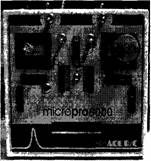
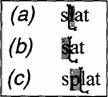

{% include JB/setup %}
{% raw %}
<div>

<p></p>
<p></p>
<p><b>Джефф Раскин  </b></p>
<p><b>Интерфейс: новые направления в проектировании </b></p>
<p><b>компьютерных систем </b></p>
<p></p>
<p></p>
<p></p>
<p></p>
<p>«Интерфейс: новые направления в проектировании компьютерных систем»: Символ-</p>
<p>Плюс; М.; 2005 </p>
<p>ISBN 5-93286-030-8 </p>
<p>Оригинал: Jef Raskin, “The Human Interface. New Directions for Designing Interactive </p>
<p>Systems” </p>
<p></p>
<p><b>Аннотация </b></p>
<p></p>
<p> <i>Книга эта непростая и подойдет не каждому. Автор анализирует то, к чему мы все </i></p>
<p> <i>давно  привыкли  до  автоматизма,  и  объясняет,  что  интерфейс  многих  современных </i></p>
<p> <i>программ  далек  от  совершенства.  Как  его  улучшить,  в  каком  направлении  двигаться </i></p>
<p> <i>дальше?  Попробуйте  найти  ответы  вместе  с  самым  известным  специалистом  в  этой </i></p>
<p> <i>области – Джефом Раскиным, создателя проекта Apple Macintosh. </i></p>
<p> <i>Сейчас  много  говорят  об  эффективности  современных  подходов  к  разработке </i></p>
<p> <i>интерфейсов. Раскин же демонстрирует, что многие из них ведут в тупик, и для создания </i></p>
<p> <i>компьютеров,  с  которыми  было  бы  проще  работать,  требуются  совершенно  новые </i></p>
<p> <i>принципы  разработки.  Он  объясняет,  как  осуществить  эти  необходимые  сегодня </i></p>
<p> <i>изменения,  и  высказывает  нестандартные  идеи,  демонстрируя  дальновидность  и </i></p>
<p> <i>способность к практическому взгляду на вещи. </i></p>
<p> <i>Эта  книга,  рассказывающая  о  научном  подходе  к  разработке  интерфейсов,  может </i></p>
<p> <i>быть  полезна  как  для  создателей  программного  обеспечения,  так  и  для  руководителей </i></p>
<p> <i>проектов. </i></p>
<p></p>
<p><b>Введение </b></p>
<p><b>Важность основ </b></p>
<p></p>
<p> <i>Один человек, один компьютер. </i></p>
<p><b>Слоган компании Apple Computer </b></p>
<p></p>
<p>Представьте  себе,  что  вы  поднялись  на  борт  сияющего  шикарной  отделкой 
авиалайнера,  оснащенного  просторными,  комфортабельными  кожаными  креслами  с  целым 
набором встроенной аудио- и видеотехники; в буфете вас ожидают отличная еда и напитки. </p>
<p>Вы садитесь в свое кресло и смотрите в большой, чисто вымытый иллюминатор. Со вздохом 
предвкушения  особенно  приятного  полета  вы  протягиваете  руку  к  шкафчику  впереди  вас, 
чтобы  поглядеть,  что  там.  Сначала  вы  достаете  весьма  объемистую  бутылку  любимого 
напитка, а затем буклет с описанием этого замечательного воздушного лайнера. </p>
<p>В  то  время  как  двери  закрываются  и  идут  приготовления  к  взлету,  вы  усаживаетесь 
поудобнее и начинаете читать. Из буклета вы узнаете, что интерьер самолета создан трудами 
самых  лучших  в  мире  дизайнеров,  что  повара  из  пятизвездочных  отелей  лично  составляли 
меню  и  готовили  блюда  и  что  в  группу  разработчиков  самолета  не  были  включены 
инженеры-авиаконструкторы, поскольку всемирно признанные дизайнеры сделали внешний 
вид самолета таким, что и без того создается впечатление авиалайнера, способного летать во 
много раз быстрее, чем любой другой. </p>
<p>Еще  в  буклете  мелким  шрифтом  сообщается,  что  путешествие  на  этом  самолете 
нередко  даже  в  хорошую  погоду  сопровождается  болтанкой  и  что  достаточно  регулярно  с 
ним случаются катастрофы. Если же перелет обойдется без этих инцидентов, то в целом, как 
обещают авторы, ваше путешествие будет комфортным и интересным. </p>
<p>Теперь  звук  закрывающихся  дверей  внезапно  принимает  угрожающее  значение,  вы 
теряете спокойствие и чувствуете, что попали в ловушку. Вы начинаете думать, что именно 
этот  рейс  обречен  и  что  вы  предпочли  бы  сейчас  сидеть  в  более  жестком  кресле,  без 
любимого  напитка  и  даже  без  бокового  иллюминатора,  лишь  бы  только  самолет  был 
оборудован хорошей и надежной техникой. </p>
<p>Представленная  абсурдная  ситуация  довольно  точно  описывает  суть  большинства 
существующих  сегодня  «человеко-машинных»  интерфейсов.  Наши  компьютеры  и  сотовые 
телефоны оснащены самыми последними моделями чипов и другой электронной начинкой. </p>
<p>Современные  операционные  системы  способны  радовать  глаз  великолепными  цветными 
заставками и стремительными трехмерными эффектами. Вы щелкаете по кнопке, и вот! – вы 
видите,  как  она  движется  самым  реалистичным  образом,  слышите,  как  звук  щелчка  мыши 
весьма  точно  передается  с  помощью  цифрового  стереофонического  воспроизведения,  а 
затем,  как  только  на  экране  открывается  панель,  до  ваших  ушей  доносится  чарующее 
глиссандо арфы. </p>
<p>Но  когда  вы  начинаете  пользоваться  этой  системой,  выясняется,  что  в  некоторых 
случаях  она  неприятно  ограничивает  вас  своим  непредсказуемым  поведением.  Из  тысяч 
команд,  предусмотренных  в  системе,  вам  не  удается  найти  ту,  которая  нужна  в  данный 
момент,  а  простые  стандартные  процедуры  выполняются  бесконечно  долго.  Программа, 
приобретенная в прошлом году, вдруг перестает запускаться под улучшенной версией той же 
самой  операционной  системы,  и  вам  приходится  покупать  новую  версию  программы.  Ко 
всему  прочему  оказывается,  что  операционная  система  имеет  свойство  время  от  времени 
зависать. </p>
<p>В  основе  разработки  хороших  интерфейсов  лежат  некоторые  основные  принципы, </p>
<p>которые на сегодня не являются общеизвестными. И вопрос о необходимости изучения этих </p>
<p>принципов  не  возникает,  поскольку  кажется,  что уже  определено, как  должны  выглядеть  и </p>
<p>работать  интерфейсы:  ведь  они  непрерывно  совершенствовались  в  течение  двух </p>
<p>десятилетий, основные разработчики программного обеспечения опубликовали руководства </p>
<p>по созданию интерфейсов, чтобы обеспечить совместимость между ними, а существующие </p>
<p>средства разработки позволяют быстро создавать любые интерфейсы, которые выглядят по-</p>
<p>современному – подобно  тому,  как  и  упомянутый  авиалайнер  создавался,  чтобы  быть </p>
<p> <i>похожим</i>  на безопасный и комфортабельный летательный аппарат. </p>
<p>Все эти интерфейсы неспособны выполнять многие важные для нас задачи. Например, 
чтобы  записать  какую-то  мысль,  вы  хотели  бы  просто  подойти  к  компьютеру  или  другому 
устройству  для  обработки  информации  и  начать  набирать  ее – без  всякой  загрузки,  без 
необходимости открывать текстовый процессор, создавать файл, вообще без использования 
операционной  системы. (Мое  определение  операционной  системы  звучит  следующим 
образом: «То,  с  чем  приходится  возиться  перед  тем,  как  начать  возиться  с  программой».) 
Чтобы добавить к репертуару системы несколько средств для выполнения простых операций, 
вы  не  обязаны  изучать  целую  прикладную  программу.  К  сожалению  в  разработке 
интерфейсов  изначально  было  взято  неверное  направление,  и  это  привело  к  тому,  что 
уровень их сложности стал неоправданно высоким с точки зрения как технологической, так и 
логической необходимости. </p>
<p>Миллионы  из  нас  имеют  противоречивые  отношения  с  информационными 
технологиями. Мы не можем жить без них, и в то же время нам трудно жить с ними. Тем не 
менее, проблема создания удобных и простых технологий имеет свои решения, хотя мы и не 
можем  ими  воспользоваться – они  станут  доступными,  только  если  мы  оставим  груз 
прошлого.  Привычный  вариант  интерфейса  в  виде  рабочего  стола,  ориентированный  на 
работу  с  прикладными  программами,  является  частью  этой  проблемы.  В  этой  книге 
предлагаются  некоторые  альтернативные  варианты.  В  конце  концов,  компьютерные 
проблемы – это не погода, и мы все-таки  
С  учетом  широкого  распространения  Интернета,  а  также  очевидной  важности 
компьютерных  продуктов,  предназначенных  для  группового  взаимодействия,  может 
показаться  странным,  что  содержание  этой  книги  касается,  главным  образом,  разработки 
однопользовательских интерфейсов. Одной из причин этого является тот факт, что проблема 
разработки однопользовательских интерфейсов еще не решена. Но главная причина состоит 
в  том,  что  качество  любого  интерфейса  в  конечном  итоге  определяется  качеством 
взаимодействия  между  одним  человеком  и  одной  системой – между  ней  и  вами.  </p>
<p> <i>индивидуальное взаимодействие с некоторой системой не проходит для пользователя легко </i></p>
<p> <i>и  комфортно,  то  в  результате  этот  недостаток  негативным  образом  отражается  на </i></p>
<p> <i>качестве работы всей системы, независимо от того, насколько она хороша в других своих </i></p>
<p> <i>проявлениях. </i>  </p>
<p></p>
<p><b>1. Предпосылки </b></p>
<p></p>
<p> <i>Нет  ничего  более  невозможного,  чем  написать  книгу,  которая </i></p>
<p> <i>бы получила одобрение каждого читателя. </i></p>
<p><b>Мигель де Сервантес </b></p>
<p></p>
<p>В этой главе говорится о распространенном непонимании сущности таких систем, как 
интерфейсы,  а  также  методов  их  разработки.  Интерфейс – это  нечто  большее,  чем  окна, 
пиктограммы, выпадающие меню и мышь. Необходимость проектирования интерфейса уже 
на ранних стадиях разработки продукта иногда упускается из виду. Другой фактор, который 
часто  недооценивается,  состоит  в  том,  что  все  мы  наделены  познавательными  аппаратами, 
имеющими между собой много общего. При разработке интерфейсов следует сперва учесть 
общие  факторы,  а  потом  уже  рассматривать  индивидуальные  различия.  Но,  к  сожалению, 
существующие на сегодня средства конструирования интерфейсов не позволяют подойти к 
задаче именно таким образом. </p>
<p>Я  не  согласен  с  мнением,  что  пользоваться  компьютерами  сложно  потому,  что  с  их 
помощью  мы  пытаемся  делать  безнадежно  сложные  вещи.  В  действительности  независимо 
от  того,  насколько  сложной  является  задача,  выполняемая  тем  или  иным  продуктом, 
составные  части  этой  задачи  все  равно  должны  оставаться  простыми.  Эта  глава 
заканчивается определением человекоориентированного интерфейса. </p>
<p></p>
<p><b>1.1. Определение интерфейса </b></p>
<p></p>
<p> <i>Позвоните </i></p>
<p> <i>по </i></p>
<p> <i>вышеуказанному </i></p>
<p> <i>номеру </i></p>
<p> <i>и </i></p>
<p> <i>испытайте </i></p>
<p> <i>невероятное разочарование от нашей системы голосовой почты. </i></p>
<p><b>Надпись под рекламным объявлением одной из марок обуви </b></p>
<p></p>
<p>В  этой  книге  выражения   <i>интерфейс  «человек-машина»</i>    или   <i>интерфейс  «человек-</i></p>
<p> <i>компьютер»</i>    я  обычно  буду  сокращать  до   <i>пользовательского  интерфейса</i>    или  просто </p>
<p> <i>интерфейса</i> . Многие считают, что термин  <i>пользовательский интерфейс</i>  относится только к </p>
<p>современным  графическим  пользовательским  интерфейсам (graphical user interface, GUI), </p>
<p>основанным на окнах и меню, управляемых с помощью мыши. Например, в одной из статей </p>
<p>в  журнале «Mobile Office» было  сказано: «Уже  недалеко  то  время,  когда  вам  совсем  не </p>
<p>нужно  будет  задумываться  об  интерфейсе,  вы  будете  просто  разговаривать  со  своим </p>
<p>компьютером».  В  ответ  на  это  я  мог  бы  заметить,  что  системы,  управляемые  голосом, </p>
<p>действительно могут обходиться без окон, но телефонные автоответчики их также не имеют, </p>
<p>и, тем не менее, их интерфейсы зачастую оказываются чрезвычайно плохими. Итак, способ, </p>
<p>которым  вы  выполняете  какую-либо  задачу  с  помощью  какого-либо  продукта,  а  именно </p>
<p>совершаемые  вами  действия  и  то,  что  вы  получаете  в  ответ,  и  является  интерфейсом. (См. </p>
<p>также Raskin, 1993.) </p>
<p></p>
<p><b>1.2. Простое должно оставаться простым </b></p>
<p></p>
<p> <i>Технология – странная вещь. Одной рукой она дает вам великие </i></p>
<p> <i>дары, а другой – наносит удар в спину. </i></p>
<p><b>С. П. Сноу (цитата из Jarman, 1992) </b></p>
<p></p>
<p>Несмотря  на  рост  количества  специалистов  по  разработке  интерфейсов,  мало  кто  из </p>
<p>потребителей  заявляет,  что  новые  продукты,  например  электронные  четырехкнопочные </p>
<p>наручные  часы,  стали  проще  в  использовании,  чем  несколько  десятилетий  назад.  Если  вы </p>
<p>скажете,  что  наручные  часы,  так  же  как  и  компьютеры,  сегодня  имеют  намного  большую </p>
<p>функциональность  (с  чем  можно  согласиться)  и  что,  следовательно,  интерфейсы  этих </p>
<p>устройств должны стать более сложными (что сомнительно), то я позволю себе заметить, что </p>
<p>эта  сложность  неоправданно  возникает  в  отношении  даже  тех  задач,  которые  раньше </p>
<p>удавалось выполнять без усилий. Сложные задачи могут требовать сложных интерфейсов, но </p>
<p>это  не  оправдывает  усложнения  простых  задач.  Сравните,  например,  насколько  труднее </p>
<p>установить время на электронных наручных часах с четырьмя кнопками, чем выполнить  <i>то </i></p>
<p> <i>же  самое</i>    действие  на  механической  модели  часов.  Простые  задачи  должны  оставаться </p>
<p>простыми независимо от уровня сложности всей системы. </p>
<p>Из  всех  нелепостей,  создаваемых  абсурдными  конструкциями  интерфейсов,  именно 
усложнение  простого  чаще  всего  оказывается  поводом  для  высмеивания  в  комиксах  или 
комедийных сценах. Например, в фильме «Городские жулики» (City Slickers) три товарища 
гонят  стадо  коров.  Один  из  героев,  его  играет  Билли  Кристал (Billy Crystal), безуспешно 
пытается,  видимо,  уже  не  один  час,  объяснить  друзьям,  как  с  помощью  видеомагнитофона 
записать  какую-нибудь  программу  на  одном  канале  во  время  просмотра  другого.  Когда,  в 
конце  концов,  друзья  выходят  из  себя  от  длинного  и  непонятного  объяснения,  персонаж 
Кристала  с  радостью  соглашается  сменить  тему  и  предлагает  вместо  этого  рассказать,  как 
устанавливать  время  на  часах  в  том  же  видеомагнитофоне.  Это  предложение  приводит 
друзей  в  ярость,  что  вызывает  смех  у  зрителя.  Комический  эффект  порождается 
несоответствием  между  очевидной  простотой  задачи  и  сложностью  интерфейса.  Если  бы 
лицевая 
панель 
видеомагнитофона 
была 
снабжена 
специальными 
кнопками, 
расположенными над и под цифрами часов, как это показано на рис. 1.1, тогда мало у кого 
возникали бы трудности при установке времени. </p>
<p></p>
<p></p>
<p> <i>Рис. 1.1. Легко настраиваемые электронные часы для видеомагнитофона. Еще лучшим </i></p>
<p> <i>вариантом  были  бы  часы,  в  которых  время  автоматически  устанавливается  по  сигналам </i></p>
<p> <i>точного времени, передаваемым по радио</i>  </p>
<p></p>
<p><b>1.3. Ориентация на человека и на пользователя </b></p>
<p></p>
<p> <i>Мы  слишком  усложнили  программное  обеспечение  и  забыли </i></p>
<p> <i>главную цель. </i></p>
<p><b>Джим и Сандра Сандфорс </b></p>
<p></p>
<p>Не  только  разработчики  интерфейсов,  но  и  руководители  предприятий  электронной  и 
компьютерной промышленности понимают необходимость ориентации разработок на нужды 
пользователей  и  покупателей.  И  первым  шагом  в  этом  направлении  является  стремление 
узнать  своего  пользователя,  что  на  практике  обычно  означает  обращение  за  помощью  к 
специалистам  в  той  или  иной  области.  Специалисты  действительно  могут  хорошо 
разбираться  в  особенностях  и  деталях  решаемой  проблемы,  но  их  экспертные  знания,  как 
правило, не касаются вопросов человеческой психологии. Хотя у пользователей могут быть 
разные  потребности  в  зависимости  от  конкретной  задачи,  тем  не  менее,  в  целом  они 
проявляют  много  общих  ментальных  характеристик.  Прежде  чем  приступать  к  разработке 
самой  программы  или  пытаться  учесть  различия  между  отдельными  пользователями, 
разработчики  интерфейса  могут  облегчить  свой  труд,  сосредоточив  внимание  на  том,  что 
является  общим  для  всех  людей  с  точки  зрения  требований  к  интерфейсу.  По  завершении 
этой  стадии  разработчики  интерфейса  уже  могут  приступить  к  согласованию  различий 
между отдельными пользователями и группами пользователей и, в конечном итоге, к поиску 
оптимального 
варианта, 
удовлетворяющего 
широкому 
диапазону 
требований 
пользовательских  задач.  Однако  этот  первый  важный  шаг,  во  время  которого  проект 
интерфейса  приводится  в  соответствие  с  общими  законами  психологии,  в  процессе 
разработки обычно пропускается. Разработчики интерфейсов предпочитают не задумываться 
об этом и больше полагаются на так называемые «промышленные стандарты». В результате 
все  широко  используемые  сегодня  модели  интерфейсов  построены  без  учета 
закономерностей мышления и поведения человека. Например, почти во всех компьютерных 
системах  файлы  должны  иметь  собственные  имена.  Между  тем часто  возникают  ситуации, 
когда нам трудно вспомнить, под каким именем мы сохранили – файл полгода назад. (Одно 
из  возможных  решений  этой  проблемы  обсуждается  в  разделе 5.3.) Таким  образом,  мы 
хотим,  чтобы  программное  обеспечение  было  простым  и  понятным,  своим  безупречным 
поведением  показывая  нам,  что  его  создатели  больше  работали  над  удобством 
использования, нежели над привлекательным внешним видом своего продукта. </p>
<p></p>
<p><b>1.4. Инструменты, которые препятствуют новым идеям </b></p>
<p></p>
<p>Создание  хороших  интерфейсов  требует  большой  и  напряженной  работы.  Считается, 
что такие известные на рынке инструменты для построения интерфейсов, как Visual Basic и 
Visual C++, позволяют снизить стоимость разработки и ускорить ее внедрение. Несмотря на 
все  свои  полезные  свойства,  эти  инструменты  нечасто  будут  упоминаться  в  этой  книге. </p>
<p>Причина  состоит  в  том,  что  они  основаны  на  традиционных  парадигмах  и,  следовательно, 
слишком  ограничивают  ваши  возможности.  Аналогичным  образом  принципы  создания 
интерфейсов  в  таких  системах,  как Macintosh или Windows, а  также  часть  подходов, 
предлагаемых  в  различных  книжных  изданиях,  посвященных  разработке  интерфейсов, 
иногда  оказываются  явно  ошибочными – зачастую  из-за  корпоративной  необходимости 
поддерживать  совместимость  с  ранними  версиями  интерфейса,  а  также  из  предубеждения, 
что  пользователи  непременно  отнесутся  с  неодобрением  к  попыткам  отойти  от  старых, 
привычных  принципов  построения  интерфейсов.  Действительное  усовершенствование 
интерфейсов  возможно,  если  подходы  к  их  разработке  будут  серьезно  пересмотрены.  При 
этом  разработчику  необходимо  найти  компромисс  между  оправданным  применением  уже 
устоявшихся  парадигм,  которые  облегчают  изучение  интерфейса  пользователем,  и  новыми 
подходами, которые позволяют сделать интерфейс более удобным и практичным. Конечно, в 
ситуации,  когда  часто  меняется  состав  группы  разработчиков  или  круг  потребителей 
продукта,  стремление  придерживаться  известных  подходов,  возможно,  было  бы  лучшим 
решением.  </p>
<p> <i>будет  уходить  на  рутинные,  повторяющиеся  операции,  а  обучение  в  то  же  время  не </i></p>
<p> <i>потребует  больших  затрат,  верным  решением  является  разработка  интерфейса  с </i></p>
<p> <i>максимальной  продуктивностью,  даже  если  впоследствии  от  пользователя  потребуются </i></p>
<p> <i>некоторые усилия по его изучению. </i>  </p>
<p></p>
<p><b>1.5. Разработка интерфейса как часть общего цикла разработки </b></p>
<p></p>
<p>Применяемые  сегодня  методы  разработки  проектов  зачастую  не  считаются  с 
необходимостью  разработки  интерфейса.  Это  упущение  может  быть  следствием  того,  что 
специалисты  по  разработке  интерфейсов  привлекаются  к  проекту  слишком  поздно,  когда 
возможности  улучшения  качества  взаимодействия  между  пользователем  и  продуктом 
большей  частью  уже  потеряны.  Интерфейсом  удобнее  всего  заниматься  именно  на 
начальных  стадиях  разработки.  И  если  специалисты  по  интерфейсам  привлекаются  уже 
после  того,  как  программное  обеспечение  спроектировано  и  определены  его  инструменты 
или  когда  разработка  программы  уже  почти  завершена,  то  их  рекомендации  могут 
потребовать переделки всей выполненной работы, что, естественно, является неприемлемым. </p>
<p>Когда бюджет проекта уже исчерпан и рабочий план почти завершен, перспектива отказа от 
большей  части  или  даже  всего  дизайна  и  готового  кода,  конечно,  не  может  вызвать 
энтузиазма у менеджеров проекта. Так что даже в такой современной книге по управлению 
проектами,  как «UML Toolkit» (Eriksson and Magnus, 1998), не  говорится  о  необходимости 
рассматривать  интерфейс  уже  на  стадии  анализа  требований  к  проекту,  которую  авторы 
обозначают  как  первую  фазу  его  разработки.  Однако  в  действительности  разработка 
интерфейса  не  должна  откладываться  до  стадии  технической  реализации,  которая  в  плане 
Эриксона  и  Магнуса  является  третьей  фазой.  </p>
<p> <i>предназначен, сначала спроектируйте интерфейс, после чего приступайте к его реализации. </i>  </p>
<p>Это  повторяющийся  процесс.  Определение  задачи  будет  меняться  во  время  разработки 
интерфейса.  Поэтому  весь  процесс  разработки  продукта  будет  проходить  в  соответствии  с 
изменениями  в  задаче  продукта  и  его  интерфейсе.  Здесь  необходимо  стремиться  к 
максимальной  гибкости.  На  первом  этапе  разработки  следует  определить,  что  именно 
должен сделать пользователь для получения того или иного результата и как система должна 
отвечать на каждое его действие. </p>
<p> <i>Пользователи не задумываются над тем, как устроена машина, пока она справляется </i></p>
<p> <i>со своими задачами. </i>  При этом не имеет значения, какой именно процессор используется и </p>
<p>является ли язык программирования объектно-ориентированным, многопоточным или, быть </p>
<p>может,  называется  какими-то  другими  умными  словами.  Для  пользователей  важнее  всего </p>
<p>удобство и результаты. Но все, что они видят, – это интерфейс. Другими словами,  <i>с точки </i></p>
<p> <i>зрения потребителя именно интерфейс является конечным продуктом</i> . </p>
<p></p>
<p><b>Ваше время бесценно, ваша работа священна </b></p>
<p></p>
<p>Я  приучился  часто  сохранять  проделанную  работу,  чтобы  даже  в  случае  системного 
сбоя  не  потерять  большую  часть  своего  труда.  В  конце  каждого  абзаца  или  даже  после 
нескольких  предложений  я  при  помощи  сочетания  клавиш  вызываю  команду  сохранения. </p>
<p>Эта  команда  создает  копию  текста  на  диске,  где  он  может  оставаться  относительно 
защищенным  от  потери  в  случае  сбоя.  Приблизительно  каждый  час  я  создаю  резервную 
копию  своей  работы  с  помощью  энергонезависимого  запоминающего  устройства,  которое 
может  быть  физически  извлечено  из  компьютера  и  таким  образом  защищено  от  любых 
неожиданностей  в  его  работе.  Кроме  того,  каждую  неделю  я  сохраняю  резервную  копию 
всей системы на внешнем диске. Это не значит, что я параноик, – я всего лишь считаю, что 
такой  подход  практичен.  Однако  необходимости  во  всех  этих  сложных  процедурах  не 
должно возникать.  </p>
<p> <i>как  бесценные. </i>    И  если  перефразировать  Первый  закон  робототехники  Азимова: «Робот  не </p>
<p>может  причинить  вред  человеку  или  своим  бездействием  допустить,  чтобы  человеку  был </p>
<p>причинен  вред»,  то  первый  закон  проектирования  интерфейсов  должен  звучать  примерно </p>
<p>так: «Компьютер  не  может  причинить  вред  данным  пользователя  или  своим  бездействием </p>
<p>допустить, чтобы данным был причинен вред». </p>
<p>Работая  над  этой  книгой,  я  по  совету  своих  редакторов  стал  использовать  опцию, 
позволяющую либо принять, либо отклонить изменения, внесенные в документ. Каждый раз, 
сделав  несколько  изменений,  я  запускал  команду  сохранения.  Когда  произошел  сбой 
системы, я не стал беспокоиться, полагаясь на сделанные мной периодические сохранения. </p>
<p>Однако когда я попытался найти файлы с самыми последними изменениями, это не удалось, 
и мне пришлось делать ту же работу заново. Немного поэкспериментировав, я выяснил, что 
при  включенной  опции  «принять  или  отклонить»  команда  сохранения,  подаваемая  с 
клавиатуры, перестает действовать. Однако пользователю никакого предупреждения об этом 
не  дается.  В  результате  пропало  больше  трех  часов  моего  труда,  и  мне  пришлось  тратить 
время на эксперименты и выяснять, что же произошло и как это предотвратить в будущем. </p>
<p>Если  не  считать  излишней  сложности  сегодняшних  компьютерных  систем,  именно  такие 
досадные  мелочи  говорят  о  необходимости  усовершенствования  подходов  к  разработке 
интерфейсов. </p>
<p>Наилучшей  формулировкой  второго  закона  интерфейса  может  быть  следующее 
утверждение:   </p>
<p> <i>выполнять  действия  сверх  необходимых». </i>    В  разделе 4.3 будет  рассматриваться  измерение </p>
<p>объема работы, необходимого для выполнения той или иной задачи. </p>
<p></p>
<p><b>1.6. Определение человекоориентированного интерфейса </b></p>
<p></p>
<p> <i>Можно </i></p>
<p> <i>создать </i></p>
<p> <i>самолет </i></p>
<p> <i>с </i></p>
<p> <i>любыми </i></p>
<p> <i>техническими </i></p>
<p> <i>характеристиками,  которые  только  пожелает  Министерство </i></p>
<p> <i>военно-воздушных  сил,  если  при  этом  не  требуется,  чтобы  он  мог </i></p>
<p> <i>летать. </i></p>
<p><b>Вилли </b></p>
<p><b>Мессершмидт </b></p>
<p><b>(выдающийся </b></p>
<p><b>немецкий </b></p>
<p><b>авиаконструктор времен второй мировой войны) </b></p>
<p></p>
<p> <i>Интерфейс  является  ориентированным  на  человека,  если  он  отвечает  нуждам </i></p>
<p> <i>человека  и  учитывает  его  слабости. </i>    Чтобы  создать  такой  интерфейс,  необходимо  иметь </p>
<p>представление  о  том,  как  действуют  люди  и  машины.  Кроме  того,  следует  развить  в  себе </p>
<p>способность  чувствовать  те  трудности,  с  которыми  сталкиваются  люди.  И  это  не  всегда </p>
<p>просто. Мы настолько привыкли к тому, как работают программы, что соглашаемся принять </p>
<p>их  методы  работы  как  данность, –  даже  в  тех  случаях,  когда  их  интерфейсы  неоправданно </p>
<p>сложны, запутанны, неэкономны и побуждают людей к ошибкам. </p>
<p>Многие  из  нас  испытывают  раздражение,  например,  от  того,  что  для  запуска  (иначе 
говоря,  загрузки)  компьютера  требуется  какое-то  время.  В 1999 году  была  реклама  одного 
автомобильного радиоприемника со встроенным компьютером, в которой утверждалось, что 
«в  отличие  от  домашнего  компьютера,  эта  система  не  заставит  вас  долго  ждать,  пока  она 
загрузится». Внимательное изучение шести наиболее серьезных работ в области разработки 
интерфейсов показывает, что даже в этих книгах, написанных в основном в то время, когда 
разработке  интерфейсов  стали  придавать  важное  значение,  проблема  загрузки  не 
упоминается (Shneiderman, 1987; Norman, 1988; Laurel, 1990; Tognazzini, 1992; Mayhew, 1992; </p>
<p>Cooper, 1995). Тем не менее, я уверен, что каждый из названных авторов всецело согласился 
бы  с  тем,  что  сокращение  или устранение  задержки  при  запуске  компьютера улучшило  бы 
эффективность его использования, тем более что я еще не встречал пользователя, у которого 
такая задержка не вызывала бы раздражение. Однако никогда не существовало технической 
необходимости в том, чтобы компьютер после включения начинал работать более чем через 
несколько  секунд.  Наши  компьютеры  долго  загружаются  только  лишь  потому,  что  многие 
дизайнеры  и  разработчики  не  потрудились  сделать  интерфейс  в  этом  отношении 
ориентированным на человека. Кроме того, некоторые люди думают, что если компьютеры с 
медленной загрузкой  продаются  миллионами,  то  это  якобы  свидетельствует  об  их  высокой 
производительности. </p>
<p>Нельзя  сказать,  что  проблема  долгой  загрузки  машины  всегда  игнорировалась.  Уже 
вышедший из употребления Apple Newton, Palm Pilot и другие карманные компьютеры могут 
запускаться  мгновенно,  а  появление  на  некоторых  компьютерах  «спящего  режима» – 
состояния, в котором компьютер потребляет меньше энергии, чем в обычном режиме, и из 
которого  он  может  быть  быстро  переведен  в  рабочее  состояние, –  это  шаг  в  правильном 
направлении. </p>
<p>Инженерам  удавалось  с  успехом  решать  и  более  сложные  проблемы.  Например,  в 
ранних  моделях  телевизоров  необходимо  было  ждать  около  минуты,  пока  разогревалась 
катодная трубка кинескопа. В некоторых моделях инженеры добавили специальную схему, 
которая поддерживала катодную трубку в теплом состоянии, что позволило сократить время 
достижения  рабочей  температуры. (Поддержание  катодной  трубки  в  разогретом  состоянии 
потребовало бы большого расхода электричества и уменьшило бы срок ее службы.) В другом 
варианте  был  разработан  кинескоп  с  катодной  трубкой,  которая  разогревалась  в  течение 
нескольких секунд. И в том и в другом случае интересы пользователя были удовлетворены. </p>
<p>В начале двадцатого столетия был создан автомобиль на паровой тяге, называвшийся Стенли 
Стимер (Stanley Steamer). Несмотря  на  все  свои  очевидные  достоинства,  этот  механизм  не 
имел  успеха  из-за  одного  недостатка:  чтобы  тронуться  с  места,  от  момента  зажигания  до 
достижения необходимого давления в котле требовалось подождать 20 минут. </p>
<p>Принцип разработки, согласно которому программные продукты не должны вынуждать 
пользователя  ждать  без  необходимости,  можно  считать  очевидным  и  ориентированным  на 
человека.  Таким  же  является  и  стремление  не  подгонять  пользователя.  В  общем  виде  этот 
принцип  можно  было  бы  сформулировать  следующим  образом:   </p>
<p> <i>должен устанавливаться самим пользователем». </i>  </p>
<p>Не требуется обладать большими техническими знаниями, чтобы понять, что большая 
пропускная  способность  коммуникационных  линий  может  ускорить  передачу  веб-страниц. </p>
<p>Однако другие взаимосвязи иногда бывают не столь очевидны. Поэтому для разработчиков 
интерфейсов  «человек-машина»  важно  знать  внутренние  механизмы  технологии.  В 
противном  случае  у  них  не  будет  возможности  оценивать  достоверность  утверждений, 
высказанных,  например,  программистами  или  специалистами  по  аппаратной  разработке 
относительно осуществимости тех или иных элементов интерфейса. </p>
<p></p>
<p></p>
<p><b>2. Когнетика и локус внимания </b></p>
<p></p>
<p> <i>Он плакал и раздражался, но все было тщетно. </i></p>
<p><b>Доминик Манчини, говоря не о «зависшем» компьютере, а об </b></p>
<p><b>Эдуарде V, короле  Англии. «Occupatione Regni Anglie per </b></p>
<p><b>Riccardum Tercium (1483)». Цитата  приводится  в  книге  Алисон </b></p>
<p><b>Уир «Принцы в башне» (1992) </b></p>
<p></p>
<p>При  всей  сложности  компьютеров  и  других  продуктов  современной  технологии 
«машинная»  часть  интерфейса  «человек-машина»  легче  поддается  пониманию,  чем 
человеческая – намного более сложная и изменчивая. Тем не менее, многие (возможно, даже 
очень  многие)  факторы  человеческой  производительности  не  зависят  от  возраста,  пола, 
культурного  происхождения  или  уровня  компетентности  пользователя.  Эти  свойства 
человеческой  производительности  и  способности  к  обучению  имеют  непосредственное 
отношение к основам разработки любого интерфейса. В частности, тот факт, что мы имеем 
один  локус
«человек-машина». </p>
<p></p>
<p><b>2.1. Эргономика и когнетика: что мы можем и чего не можем </b></p>
<p></p>
<p> <i>Познай себя! </i></p>
<p><b>Надпись возле Дельфийского Оракула. Плутарх «Морали» </b></p>
<p></p>
<p>Используйте  машину  или  инструмент  в  соответствии  с  их  возможностями  и 
ограничениями, и они сослужат вам хорошую службу. Разрабатывайте интерфейс «человек
машина»  в  соответствии  с  возможностями  и  слабостями  человека,  и  вы  поможете 
пользователю  не  только  справиться  с  работой,  но  и  сделать  его  более  счастливым,  более 
продуктивным человеком. </p>
<p>Руководства по разработке продуктов, взаимодействующих с нами физически, обычно 
содержат  конкретную  информацию,  основанную  на  свойствах  и  возможностях 
человеческого скелета и органов чувств. Совокупность сведений в этой области составляет 
науку 
или  дисплеи,  которые  с  высокой  степенью  вероятности  будут  удобны  для  своих 
пользователей.  Тем  не  менее,  нельзя  пренебрегать  тщательным  тестированием 
разрабатываемых  продуктов.  Вы  не  станете  проектировать  машину,  обслуживание  которой 
предусматривает, чтобы один человек оперировал двумя переключателями, расположенными 
в  трех  метрах  друг  от  друга.  Очевидно,  что  людей  с  такими  физическими  размерами  не 
бывает.  Тема  эргономики  в  компьютерной  технике,  выходящая  за  пределы  данного 
изложения,  рассматривается  в  обзоре  разработок  интерфейсов,  представленном  в  книге 
Мэйхью (Mayhew, 1992, гл. 12). В  эргономике  учитывается  статистическая  волатильность 
параметров человеческого тела. Можно спроектировать автомобильное кресло, подходящее 
для 95 % населения, тогда как остальным 5 % потенциальных покупателей автомобиля такие 
кресла  покажутся  неудобными.  Создание  кресла,  которое  можно  было  бы  регулировать  в 
широком  диапазоне,  в  том  числе  для  редких  пользователей  с  ростом 1 м  или  еще  более 
редких  с  ростом 2,5 м,  было  бы  механически  невыполнимым  или  же  потребовало 
значительных затрат. </p>
<p>Большая  часть  машин,  созданных  нашей  цивилизацией,  были  механическими  и 
взаимодействовали  с  нами  главным  образом  физически.  Соответственно,  наши  физические 
ограничения сравнительно легко учесть. Постепенно человеческие изобретения стали иметь 
все большее отношение к области интеллектуальных задач, нежели физических.  </p>
<p> <i>овладеть эргономикой сознания, если мы хотим создавать интерфейсы, которые могли бы </i></p>
<p></p>
<p>1 Локус – место, положение (лат.) – Примеч. науч. ред. </p>
<p></p>
<p> <i>хорошо  работать. </i>    Удивительно,  но  мы  часто  не  замечаем  собственные  ментальные </p>
<p>ограничения,  поэтому  для  определения  границ  возможностей  нашего  сознания  мы  должны </p>
<p>прибегнуть к тщательному наблюдению и экспериментированию. </p>
<p>Изучение  прикладной  сферы  наших  ментальных  способностей  называется 
когнитивным  проектированием,  или  
очевидны: например, нельзя ожидать от обычного пользователя способности перемножать в 
уме 30-значные  числа  за 5 секунд,  поэтому  нет  смысла  разрабатывать  интерфейс,  который 
требовал  бы  от  пользователя  такой  способности.  Однако  мы  часто  не  учитываем  другие 
ментальные  ограничения,  которые  оказывают  неблагоприятное  влияние  на  нашу 
продуктивность  при  работе  с  интерфейсами  «человек-машина»,  хотя  эти  ограничения 
присущи  каждому  человеку.  Интересно  отметить,  что  все  известные  компьютерные 
интерфейсы, а также многие некомпьютерные интерфейсы «человек-машина» разработаны с 
расчетом на некие когнитивные способности, которыми, как показывают эксперименты, мы 
на  самом  деле  не  обладаем.  Большая  часть  трудностей,  связанных  с  использованием 
компьютеров  и  подобных  устройств,  возникает  скорее  из-за  низкого  качества  интерфейса, 
чем из-за сложности самой задачи или же недостатка старания или умственных способностей 
у пользователя. </p>
<p>Когнетика,  так  же  как  и  эргономика,  учитывает  статистическую  природу  различий 
между  людьми.  Тем  не  менее,  следует  прежде  всего  рассмотреть  сами  ограничения, 
присущие нашим когнитивным способностям, поскольку знания об этих ограничениях пока 
мало находили практическое применение. </p>
<p>К  счастью,  нам  не  придется  рассматривать  физическую  структуру  мозга  хотя  бы 
потому,  что  наши  сегодняшние  знания  об  этом  органе  весьма  неопределенны.  Успешный 
интерфейс  вполне  может  быть  разработан  на  основе  прагматического  и  эмпирического 
взгляда  на  то,  что  может  и  чего  не  может  человеческий  ум,  сколько  времени  требуется 
человеческому  сознанию  и  телу  на  выполнение  тех  или  иных  задач  и  какие  условия 
повышают вероятность совершения ошибки. </p>
<p></p>
<p><b>2.2. Когнитивное сознательное и когнитивное бессознательное </b></p>
<p></p>
<p> <i>О, доктор Фрейд, доктор Фрейд, если бы только вы занимались </i></p>
<p> <i>чем-нибудь другим! </i></p>
<p><b>Давид Лазар «Доктор Фрейд», 1951 </b></p>
<p></p>
<p>Использование таких терминов, как  <i>сознательное</i>  и  <i>бессознательное</i> , которые имеют </p>
<p>вполне  определенное  значение  в  психологии,  философии  и  истории  и  применяются  для </p>
<p>описания  аспектов  функционирования  нашего  мышления,  может  вызывать  некоторые </p>
<p>затруднения.  В  контексте  технического  проектирования  имеет  смысл  пользоваться  более </p>
<p>ограниченными </p>
<p>понятиями </p>
<p><b>когнитивного </b></p>
<p><b>сознательного</b> </p>
<p></p>
<p>и </p>
<p><b>когнитивного </b></p>
<p><b>бессознательного</b> . Еще  более  точными  были  бы  термины   <i>эмпирическое  сознательное</i>    и </p>
<p> <i>эмпирическое  бессознательное</i> , однако  более  благозвучные  варианты,  предложенные </p>
<p>Килстромом (Kihlstrom), уже  стали  общепринятыми (Cohen and Schooler, 1997, с. 137). </p>
<p>Понимание  того,  что  мы  обладаем  этими  двумя  отдельными  наборами  ограниченных 
ментальных  способностей,  а  также  того,  как  они  работают  во  взаимодействии  с 
интерфейсами  «человек-машина»,  важно  для  разработки  интерфейсов  в  той  же  степени,  в 
какой знание о размере и силе человеческой руки важно для разработки клавиатуры. </p>
<p>Дадим  краткое  определение:  бессознательными  называются  те  ментальные  процессы, 
которые вы не осознаете в тот момент, когда они происходят. Когнитивное бессознательное 
– это не грандиозное мифическое порождение фрейдистской психологии, а явление, которое 
можно продемонстрировать с помощью простого эксперимента, о котором мы скажем далее. </p>
<p>Несмотря  на  обилие  книг,  посвященных  вопросам  и  парадоксам  сознания,  изложенный  в 
этой  главе  подход,  взятый  из  книги  Бернарда  Баарса  «Когнитивная  теория  сознания» 
(Bernard J. Baars.  </p>
<p>свойственных  данному  вопросу,  и  обращает  нас  только  к  тому,  что  мы  можем </p>
<p>непосредственно  наблюдать  и  о  чем  можем  делать  конкретные  выводы.  Как  сказано  в </p>
<p>предисловии  к  этой  книге, «в  науке  применяется  одна  испытанная  временем  стратегия: </p>
<p>оставить  на  время  философские  вопросы  и  сосредоточиться  на  тех,  которые  являются </p>
<p>эмпирически разрешимыми». Когнетика – это практическая дисциплина. Хотя теоретические </p>
<p>исследования  могут  разъяснять  неясное  и,  в  конце  концов,  приводить  к  надежным </p>
<p>практическим  результатам,  мы  все  же  стремимся  избегать  их  до  тех  пор,  пока  не </p>
<p>почувствуем  эти  результаты. (Аналогичным  образом  изучение  роста  человеческих  костей, </p>
<p>которое может дать полезные сведения с точки зрения эргономики, все же скорее относится </p>
<p>к области физиологии, чем собственно к эргономике.) </p>
<p></p>
<p><b>Сознание и модели человеческого разума </b></p>
<p></p>
<p>Хотя  трактовка  когнитивных  свойств  сознания,  предложенная  Баарсом,  является 
полезной,  его  теория  разума,  в  которой  моделями  служат  современные  цифровые 
компьютерные  структуры,  имеет  уже  меньшую  ценность.  Такой  подход,  на  мой  взгляд, 
сомнителен,  особенно  по  той  причине,  что  мыслители  издавна  использовали  последние 
достижения в области технологии в качестве моделей понимания человеческого существа, а 
со следующим шагом в технологическом развитии отказывались от них или же ограничивали 
их применение. </p>
<p>Дон  Норман,  когнитивный  психолог,  хорошо  знакомый  с  компьютерами,  говорил  о 
человеческом  разуме  в  терминах  вычислительных  устройств (Norman, 1981). Дж. P. </p>
<p>Андерсон (Anderson, 1993) еще в 1976 году построил модель ментальных операций на основе 
так называемых продукций – инструмента, который широко использовался в свое время для 
описания  синтаксиса  компьютерных  языков.  Хотя  такие  аналогии  и  могут  быть  полезны, 
некоторые ученые склонны придавать чрезмерное значение этой метафоре. Я предполагаю, 
что  в  ближайшие  несколько  лет  появится  большое  количество  психологических  теорий, 
использующих  архитектуру  «клиент-сервер»,  Интернет  и  Всемирную  сеть  с  ее 
гипертекстовыми  ссылками  и  броузерами  в  качестве  моделей  работы  отдельных  аспектов 
сознания. </p>
<p>Следует с осторожностью относиться к этой тенденции, в противном случае мы можем 
создать  аналогии,  которые  не  будут  иметь  никакой  нейрофизиологической  основы.  В XVII 
столетии  Вселенная  и  ее  обитатели  часто  описывались  в  терминах  часового  механизма 
(Dijksterhuis, 1961, с. 495). Однако  на  фоне  нашего  сегодняшнего  понимания  как  часовых 
механизмов,  так  и  организмов,  эта  метафора  утратила  свою  яркость.  В XIX столетии 
метафора  парового  двигателя  встречалась  во  многих  философских  трактатах  о  физиологии 
человека.  Сегодня  мы  знаем,  что ценность  этой  аналогии  ограничивается  главным  образом 
объяснением  метаболизма,  поскольку  метаболическую  систему  можно  назвать  тепловым 
двигателем организма. </p>
<p>Тема сознания рассматривается также в двух других известных книгах: «Новый разум 
императора»  Роджера  Пенроуза (Penrose,  
сознание»  Даниела  Денетта (Dennett,  
чтение  этих  произведений  довольно  захватывающе,  они,  к  сожалению,  не  представляют 
ценности  с  точки  зрения  разработки  интерфейсов  «человек-машина».  Обобщая,  можно 
сказать,  что  без  непосредственного  подтверждения  того  или  иного  примера 
функционального параллелизма следует избегать слишком буквального понимания метафор, 
в которых человеческий мозг уподобляется компьютеру. </p>
<p></p>
<p><b>____________ </b></p>
<p></p>
<p>Поскольку  рассуждения  о  том,  что  является  сознательным  или  бессознательным, 
кажутся  весьма  далекими  от  наших  повседневных  забот,  попытаемся  наглядно 
продемонстрировать  их  значение  в  обычной  жизни.  Попробуйте  ответить  на  следующий 
вопрос:  какая  последняя  буква  в  вашем  имени?  До  тех  пор  пока  вы  не  прочитали 
предыдущее предложение, вы, вероятно, не думали об этой букве и ее связи с вашим именем. </p>
<p>Вы знаете (и уже давно знали), что это за буква и какое место она занимает в вашем имени, 
но вы не обращали на это своего внимания. Вы не думали, не размышляли об этом. Или, если 
пользоваться  нашей  терминологией,  вы  не  осознавали  это.  Данная  информация  не 
запрашивалась,  однако  вы  смогли  ее  получить,  когда  в  этом  возникла  необходимость.  То 
место,  откуда  была  извлечена  буква,  мы  будем  называть  когнитивным  бессознательным. </p>
<p>Когнитивное  бессознательное – это  необязательно  какое-то  физическое  место,  хотя  оно 
должно быть представлено определенными физическими процессами в мозге. Представление 
о том, что бессознательное и сознательное  
мозга,  не  совсем  верно.  Скорее,  они   
момент осознания буквы – это один из возможных механизмов процесса. Другой возможный 
вариант – это  наличие  в  мозге  определенного  указывающего  устройства,  и  перемещение 
воспоминания или мысли из одной области мозга в другую вызывает также и перемещение 
этого указателя. Вполне возможно, что мысли и воспоминания распределены по всему мозгу, 
наподобие того, что происходит при голографической записи изображений. </p>
<p>Мы могли бы рассмотреть и другие возможные механизмы и объяснения, но в этом нет 
необходимости. Для нас важно сейчас только отметить, что в один момент вы не осознавали, 
какой  буквой  заканчивается  ваше  имя,  а  в  другой  момент  стали  осознавать.  Хотя  иногда  я 
использую  здесь  метафору  перемещения  в  пространстве,  говоря  о  мысли  как  о  чем-то 
перемещающемся из области сознательного в область бессознательного или наоборот, все же 
не  следует  понимать  это  образное  выражение  как  указание  на  некую  модель 
функционирования  мозга. (Возможно,  исследования  физической  структуры  мозга  смогут 
подтвердить обоснованность такой модели, но для нас это сейчас не имеет значения.) 
Когда я пользуюсь в этой книге терминами  
правило,  подразумеваю  под  ними  понятия  когнитивного  сознательного  и  когнитивного 
бессознательного.  Когда  вы  подумали  о  последней  букве  в  вашем  имени,  то  эта  мысль, 
вызванная  прочитанным  предложением,  стала  частью  вашего  сознания.  Это  изменение 
состояния вашей мысли – от бессознательного к сознательному – показывает, что у вас есть, 
по крайней мере, две формы знания. Для того чтобы построить науку когнетику, мы должны 
отказаться от солипсизма
те  же  наблюдения  относительно  своих  ментальных  процессов,  какие  только  что  сделали  и 
вы. </p>
<p>Такой  стимул,  как,  например,  прочтение  некоторой  части  этой  книги,  может  вызвать </p>
<p>перемещение какой-то информации или ощущения, или любого другого содержимого вашей </p>
<p>памяти или знаний из области бессознательного, где оно хранится, в область сознательного, </p>
<p>где  вы  его  осознаете.  Обращаете  ли  вы  внимание  на  ощущения  от  одежды,  в  которую  вы </p>
<p>сейчас одеты? В каких местах она стянута, а в каких сидит свободно? До тех пор пока вы не </p>
<p>прочитали  эти  предложения,  направившие  ваше  внимание  на  одежду,  вы,  вероятно,  не </p>
<p>осознавали того напряжения, которое она оказывает на части вашего тела. Вы также можете </p>
<p>вспомнить, например, какое-нибудь приятное недавнее событие, и при этом у вас, возможно, </p>
<p>возникнет  (перейдя  из  когнитивного  бессознательного  в  когнитивное  сознательное)  то </p>
<p>эмоциональное состояние, которое сопровождало это событие. Теперь обратите внимание на </p>
<p>ощущение, связанное с тем, что вы держите в руках эту книгу (если вы читаете ее в печатном </p>
<p>варианте), или с тем устройством, посредством которого вы управляете компьютером (если </p>
<p>вы читаете книгу в электронном варианте). Думаю, что проведенные эксперименты помогли </p>
<p></p>
<p>2 Солипсизм – теория, согласно которой считается, что единственное доступное знание – это знание о себе. – </p>
<p>Примеч. науч. ред. </p>
<p></p>
<p>вам  убедиться  в  существовании  когнитивного  бессознательного  и  когнитивного </p>
<p>сознательного,  а  также  в  том,  что  с  помощью  некоторого  стимула  можно  вызвать  переход </p>
<p>какой-либо ментальной конструкции из одной области в другую. </p>
<p>Сознательно  переживать  бессознательные  процессы  вы  не  можете  по  определению. </p>
<p>Такой  бессознательный  процесс, как,  например,  отслеживание  давления  в  мочевом  пузыре, 
служит стимулом к тому, чтобы осознанной стала необходимость опорожнить его. </p>
<p>Однако в связи с этим возникает один трудный вопрос: кто здесь подразумевается под 
местоимением  «вы»?  Можно  ли  провести  различие  между  вами  и  вашим  сознанием? </p>
<p>Поскольку  нам  предстоит  говорить  о  техническом  проектировании,  я  обойду  этот  вопрос 
стороной  и  просто  скажу,  что  в  нашем  случае  под  словом  «вы»  будет  подразумеваться 
сочетание  вашего  физического  существа  и  всех  присущих  ему  физических  и  ментальных 
феноменов.  Для  понимания  принципов  построения  интерфейсов  нет  необходимости 
рассматривать  вопрос  возможного  различия  между  вами,  вашим  сознательным  и  вашим 
бессознательным «я». </p>
<p>Вполне вероятно, что воспоминания или ключи к ним физически хранятся в каких-то 
областях мозга, поскольку в некоторых случаях непосредственная электрическая стимуляция 
отделов мозга, которая иногда проводится при хирургических операциях, способна вызвать 
воспоминание,  т. е.  сделать  это  воспоминание  осознанным.  С  помощью  стимуляции  одной 
области  мозга  можно  многократно  вызывать  определенное  воспоминание,  состояние  или 
ощущение, тогда как с помощью стимуляции другой области можно многократно вызывать 
другие  переживания.  Исследования  мозга,  предпринятые  с  использованием  методики 
магнитно-резонансного  представления (magnetic-resonance imaging, MRI), а  также 
позитронно-эмиссионной  томографии (positron-emission tomography, PET), позволяют 
выявить физическую основу различных ментальных процессов. Эти методики упомянуты в 
связи  с  тем,  что  в  будущем  они  могут  оказать  непосредственную  помощь  в  разработке  и 
особенно  в  тестировании  интерфейсов.  Например,  существует  обратная  корреляция  между 
уровнем  поглощения  глюкозы  определенной  зоной  мозга  испытуемого,  что  является 
показателем  потребления  энергии  в  данной  физической  структуре  его  мозга,  и  степенью 
легкости,  с  которой  испытуемый  использует  тестируемый  элемент  интерфейса.  В  будущем 
измерение  параметров  мозговой  активности  может  найти  более  широкое  применение  в 
качестве  средства  тестирования  интерфейсов.  Тем  не  менее,  рассмотрение  указанных 
методов выходит за рамки предмета этой книги. </p>
<p>Приведенные  примеры  описывали  ситуации,  когда  ментальные  конструкции 
перемещались  из  области  бессознательного  в  область  сознательного.  Следующий  пример 
демонстрирует  обратную  ситуацию.  Внезапный  звук  или  другое  неожиданное  событие 
может  отвлечь  ваше  внимание  от  того,  чем  вы  были  заняты  в  этот  момент – например,  от 
чтения книги, – к вопросу о причине этого звука. Скажем, услышав звук падающей с полки 
лампы,  вы  подумаете:  наверное,  это  кот  туда  забрался.  После  того  как  вы  возвратитесь  к 
чтению,  знание  о  происшедшем  событии  переместится  из  вашего  когнитивного 
сознательного в когнитивное бессознательное. </p>
<p>Кроме  того,  существуют  пограничные  случаи,  а  также  есть  многое,  что  нам  еще  не 
известно  о  сознательном  и  бессознательном.  Например,  каждый  сталкивался  с  ситуацией, 
когда никак не вспомнить чье-либо имя, хотя оно буквально вертится на языке. Иногда вы 
все  же  вспоминаете  это  имя,  и  тогда  можно  сказать,  что  данное  воспоминание  становится 
полностью  осознанным.  В  других  случаях  воспоминание  так  и  остается  ускользающим. </p>
<p>Существует ли промежуточное состояние между сознательным и бессознательным? Можно </p>
<p>ли зафиксировать состояние сознания в момент, когда информация об имени «движется» из </p>
<p>одной области мозга в другую? Можно ли считать «почти вспомненное» имя свидетельством </p>
<p>частичной,  прерываемой  связи,  наподобие  неплотного,  искрящего  электроконтакта?  Эти </p>
<p>вопросы довольно интересны, тем не менее, нам необязательно нужны ответы на них; так же </p>
<p>как в космологии – нам известно, что вселенная расширяется, хотя мы и не знаем ответа на </p>
<p>вопрос,  что  послужило  причиной  этого  расширения,  т. е.  что  было  до  так  называемого </p>
<p></p>
<p>«большого  взрыва»,  с  которого,  по  мнению  большинства  космологов,  и  началось </p>
<p>существование нашей вселенной. </p>
<p>Как я уже сказал, мы не станем углубляться в какую-либо из метафор, описывающих 
работу  человеческого  мозга.  В  то  же  время,  мы  не  можем  избежать  построения  его 
ментальных  моделей. (Кстати,  поразительно,  что  мы  строим  модели  нашего  мозга  внутри 
нашего мозга.) Пока же я предлагаю читателю представлять сознательное и бессознательное 
как некие два отдела. Эти отделы являются не просто разными областями или состояниями, в 
которых хранятся мысли или воспоминания, но они имеют разные способы взаимодействия с 
окружающим миром и с воспринимаемыми понятиями. Как было установлено когнитивными 
психологами за последние сто лет, когнитивное сознательное и когнитивное бессознательное 
обладают свойствами, которые выходят за пределы нашего знания или незнания о них. </p>
<p>В  табл. 2.1 обобщены  различия  между  когнитивным  сознательным  и  когнитивным 
бессознательным.  Из  нее  видно,  что  когнитивное  сознательное  включается  в  тех  случаях, 
когда  вы  сталкиваетесь  с  ситуацией,  которая  кажется  новой  или  представляет  угрозу,  или 
когда  вам  требуется  принять  нешаблонное  решение,  т. е.  такое,  которое  основано  на 
происходящем  именно  здесь  и  сейчас.  Понять  логическое  содержание  проблемы  возможно 
только в том случае, если вы осознаете наличие этой проблемы. Когнитивное сознательное 
работает последовательно и может оперировать только одним вопросом или контролировать 
только одно действие в течение некоторого промежутка времени. Человек может осознавать 
одновременно  от 4 до 8 отдельных  мыслей  или  объектов.  Как  правило,  каждые  несколько 
секунд сознательная память очищается. </p>
<p>Сознательное  проявляется  при  решении  ветвящихся  задач.  Необходимо  сказать,  что 
иногда  трудно  отличить  ветвящуюся  задачу  от  неветвящейся.  Например,  торможение  по 
сигналу светофора  может  относиться  и  к  тому  и  к  другому  типу задачи.  С  одной  стороны, 
если вы просто реагируете на красный свет нажатием педали тормоза, данная задача является 
неветвящейся  и,  следовательно,  обрабатывается  когнитивным  бессознательным.  С  другой 
стороны,  если  в  момент,  когда  вы  приближаетесь  к  светофору,  на  нем  зажигается  желтый 
сигнал, и поэтому вам требуется принять решение, пересекать ли перекресток без остановки 
или  остановиться,  то  здесь  уже  вступает  в  действие  когнитивное  сознательное.  Пока  вы 
изучаете некоторую задачу, вы можете воспринимать ее как ветвящееся событие, требующее 
сознательного  внимания.  По  мере  повторения  задачи  ее  выполнение  может  стать 
неветвящимся и автоматическим. В разделе 2.3 мы начнем рассматривать эти свойства и те 
следствия из них, которые имеют значение с точки зрения разработки интерфейсов. </p>
<p> <i>Таблица 2.1. Свойства когнитивного сознательного и когнитивного бессознательного</i>  </p>
<p></p>
<p></p>
<p></p>
<p></p>
<p><b>2.3. Локус внимания </b></p>
<p></p>
<p>Вы  можете  до  некоторой  степени  контролировать  превращение  бессознательных 
мыслей  в  сознательные,  в  чем  вы  убедились,  переместив  знание  последней  буквы  вашего 
имени  в  сознательную  область.  Однако  вы  не  можете  намеренно  перевести  сознательные 
мысли  в  бессознательную  область. «Не  думай  о  белом  слоне», –  шепчет  девочка,  зная,  что 
мальчик  не  сможет  не  думать  об  этом  слоне.  Но  через  некоторое  время,  если  разговор  не 
останавливается на слонах, мысли мальчика об этом животном перейдут в бессознательное. </p>
<p>Когда  это  произойдет,  он  больше  не  будет  обращать  внимание  на  мысль  о  слоне – слон 
перестанет быть локусом внимания. </p>
<p>Здесь  я  использую  термин   <i>локус</i> , поскольку  он  обозначает  некоторое   <i>место</i>    или </p>
<p> <i>область</i> . Термин   <i>фокус</i> , который  иногда  используется  в  этом  контексте,  может  вызвать </p>
<p>неправильное  представление  о  том,  как  работает  внимание,  потому  что  может  быть  понят </p>
<p>как  действие. <a href="index.html#16">3</a>  Когда  вы  находитесь  в  бодрствующем  и  сознательном  состоянии,  вашим </p>
<p>локусом  внимания  является  какая-то  деталь  или  объект  окружающего  мира  или  идея,  о </p>
<p>которой  вы  целенаправленно  и  активно  думаете.  Различие  между  фокусом  и  локусом </p>
<p>внимания  можно  понять  на  примере  следующего  предложения: «Мы  можем </p>
<p>целенаправленно  сфокусировать  наше  внимание  на  каком-либо  локусе».  Тогда  как </p>
<p> <i>фокусировать</i>  означает волевое действие, мы, тем не менее, не можем полностью управлять </p>
<p>содержанием  локуса  нашего  внимания.  Если  вы  слышите,  как  позади  вас  внезапно </p>
<p>взорвалась петарда, ваше внимание будет направлено на источник звука. Слово  <i>фокус</i>  также </p>
<p>используется при обозначении объекта, который в данный момент выбран на экране. Ваше </p>
<p>внимание  может  быть – или  не  быть – направлено  на  такого  рода  фокус,  когда  вы </p>
<p>пользуетесь тем или иным интерфейсом. Из всех объектов или явлений окружающего мира, </p>
<p>которые  вы  воспринимаете  с  помощью  своих  чувств  или  воображения,  в  каждый  момент </p>
<p>времени  вы  можете  сконцентрироваться  только  на  одном.  Чем  бы  ни  был  этот  объект, </p>
<p>деталь,  воспоминание,  мысль  или  понятие,  он  становится  локусом  вашего  внимания.  В </p>
<p>данном случае имеется в виду не только то внимание, которое можно активно обращать на </p>
<p>что-либо, но также и пассивное восприятие потока поступающей информации или простое – </p>
<p>переживание происходящего. </p>
<p>Вы слышите и видите намного больше того, что становится локусом вашего внимания. </p>
<p>Когда  вы  входите  в  комнату,  чтобы  найти  какой-то  потерянный  предмет,  он  может  лежать 
прямо перед вами и, тем не менее, остаться незамеченным. С помощью оптических средств 
мы  можем  установить,  что  изображение  нужного  предмета  попадало  на  вашу  сетчатку. </p>
<p>Возможно даже, что это изображение оказывалось в центральной ямке сетчатки, где четкость 
зрения  наибольшая.  Из  экспериментов  по  нейрофизиологии  мы  знаем,  что  сигнал, 
представляющий объект, был сформирован и передан с помощью зрительного нерва. И все 
же  вы  не  заметили  искомый  предмет,  поскольку  он  не  стал  локусом  вашего  внимания. </p>
<p>Прислушавшись,  я  могу  заметить,  что  лампы  дневного  света  в  коридоре  рядом  с  моей 
комнатой  раздражающе  жужжат.  Но  если  этого  не  делать,  я  не  услышу  этого  звука. </p>
<p>Магнитная  звукозапись  покажет,  что  звук  сохраняется,  даже  когда  я  не  осознаю  его.  Чаще </p>
<p>всего я замечаю этот звук в тот момент, когда свет включается или выключается. Внезапное </p>
<p>начало жужжания обращает на него мое внимание. Внезапное прекращение звука заставляет </p>
<p>меня осознать, что я слышал его, причем уже после того, как это происходило. В этом случае </p>
<p>то,  что  кажется  очень  точным  воспоминанием  о  звуке,  который  я  только  что  слышал, </p>
<p>внезапно  становится  локусом  моего  внимания.  Эксперименты  показывают,  что  образы </p>
<p>непосредственного  восприятия – то,  что  психологи  называют  перцептивной  памятью – </p>
<p>хранятся  в  течение  небольшого  периода  времени.  Известный  феномен  инертности </p>
<p>зрительного  восприятия  лежит  в  основе  того  эффекта,  что  отдельные  кадры  кинофильма </p>
<p>превращаются  в  сплошной  визуальный  поток.  Зрительные  образы  обычно  затухают  через </p>
<p></p>
<p>3 Английское слово focus может быть прочитано и как существительное (фокус), и как глагол (фокусировать, </p>
<p>сосредотачивать). – Примеч. пер. </p>
<p></p>
<p>200  мс.  Эта  величина может  варьироваться  в  пределах  от 90 до 1000 мс.  Слуховые  образы </p>
<p>затухают в среднем через 1500 мс (в диапазоне от 900 до 3500 мс) (Card, Moran and Newell, </p>
<p>1983, с. 29–31). Сейчас, сидя за столом, я не могу восстановить жужжание осветителей в том </p>
<p>же ярком и непосредственном звучании, как я мог это сделать сразу же после того, как оно </p>
<p>прекратилось, и внезапная тишина направила мое внимание на тот факт, что этот звук был. </p>
<p>Прошло несколько часов, и впечатление рассеялось, оставив только бледное воспоминание о 
том раздражающем звуке ламп, похожее скорее на описание, чем на ощущение. </p>
<p>Восприятия не всегда откладываются в памяти. Большинство восприятий утрачиваются 
после  того,  как  затухают.  С  точки  зрения  разработки  интерфейсов  из  быстрого  затухания 
сенсорных восприятий следует, что человек, прочитавший или услышавший 5 секунд назад 
некоторое  сообщение,  необязательно  сможет  вспомнить  его  содержание.  Если  такое 
сообщение важно само по себе или содержит важную деталь, например номер в сообщении 
«Ошибка 39-152», то оно должно оставаться на экране до тех пор, пока не перестанет быть 
актуальным  (такой  подход  можно  назвать  наилучшим),  или  же  необходимо  предоставить 
пользователю  возможность  немедленно  обработать  эту  информацию,  прежде  чем  она 
исчезнет  из  его  памяти.  Когда  некоторая  информация  становится  локусом  внимания,  она 
перемещается  в  кратковременную  память,  определение  которой  мы  дадим  в  разделе 2.3.4. </p>
<p>Там она будет храниться в течение 10 секунд. </p>
<p></p>
<p><b>2.3.1. Формирование привычек </b></p>
<p></p>
<p> <i>Все, что стоит сделать хорошо, сначала стоит сделать плохо. </i></p>
<p><b>Дик Карпински </b></p>
<p></p>
<p>Когда  вы  выполняете  какую-то  задачу  многократно,  то  с  каждым  разом  делать  это 
становится  все  проще.  Бег  трусцой,  настольный  теннис  или  игра  на  фортепиано – это  мои 
каждодневные  занятия.  С  первой  попытки  все  это  казалось  мне  совершенно  невозможным. </p>
<p>Ходьба является более распространенным примером. По мере повторения – или  
–  выполнение  того  или  иного  действия  становится  для  вас   
выполнять  его  не  задумываясь.  У  Томаса  Льюиса (1974), чьи  работы  по  биологии  всегда 
читаешь с радостью, по этому поводу можно найти следующий отрывок: <i>с практикой</i>  </p>
<p></p>
<p>Печатать  на  машинке  слепым  методом,  так  же  как  и  ездить  на  велосипеде 
или  ходить  пешком  по  тропинке,  лучше  всего  получается,  если  об  этом  не 
задумываться.  Как  только  вы  задумаетесь,  вы  можете  сбиться.  Чтобы  совершать 
известные  вам  действия,  требуется  всего  лишь  расслабить  мышцы  и  нервы, 
которые отвечают за выполнение каждого отдельного шага, предоставить их самим 
себе и не вмешиваться в их работу. Конечно, это не означает, что вы отказываетесь 
от собственной воли, потому что решение о совершении действия остается за вами, 
и  вы  можете  в  любой  момент  вмешаться,  чтобы,  например,  изменить  технику 
исполнения.  Если  вы  захотите,  то  можете  научиться  ездить  на  велосипеде  задом 
наперед  или  ходить  экстравагантной  хромающей  походкой,  подпрыгивая  на 
каждом  четвертом шаге  и одновременно насвистывая какую-нибудь мелодию. Но 
если вы станете концентрировать свое внимание на деталях, на движении каждой 
мышцы,  чуть  ли  не  падая  на  каждом  шаге  и  в  последний  момент  вовремя 
выставляя  ногу,  чтобы  все-таки  не  свалиться,  то,  в  конце  концов,  вы  вообще  не 
сможете двигаться и будете только дрожать от напряжения (с. 64). </p>
<p></p>
<p>Как-то раз один наблюдатель сказал, что бейсболист в момент удара должен думать о 
своей  технике,  на  что  звезда  бейсбола  Йоджи  Берра,  в  продолжение  приведенной  мысли 
Льюиса,  ответил  с  характерной  краткостью: «Как  можно  думать  и  бить  одновременно?» 
(Kaplan, 1992, с. 754). </p>
<p>Любая  привычка  означает  отказ  от  внимания  к  деталям.  Тем  не  менее,  привычки 
необходимы  всем  высшим  формам  жизни,  представленным  на  Земле.  С  другой  стороны, 
жизнь возможна даже при отсутствии какого бы то ни было сознания, как, например, жизнь 
микробов – по крайней мере, насколько мы знаем или хотя бы можем предполагать. Кроме 
того,  термин   
Льюиса, что в потере своей воли нет ничего плохого, все же случается так, что развиваются 
дурные  привычки.  Привычки  бывают  настолько  сильными,  что  могут  даже  превратиться  в 
страсть,  иногда  достигая  того  предела,  когда  сознательный  контроль  полностью 
утрачивается. (В  данном  случае  я  говорю  не  о  физиологической  склонности  к  чему-либо, 
например  к  никотину или  опиатам,  но  скорее  о  нежелательных  приобретенных  привычках, 
таких как кусание ногтей.) Поскольку наше сознание есть то, чем мы, по сути, являемся, то в 
этой  связи  я  вспоминаю  наблюдение,  сделанное  Унамуно: «Приобрести  привычку  значит 
перестать  быть» (Unamuno, 1913). Возможно,  этим  высказыванием  Унамуно  хотел 
предупредить  нас  об  опасности  пагубных  привычек.  Что  же  касается  рутинных  сторон 
повседневной  жизни,  то  здесь  мы  как  раз  желаем,  чтобы  наше  сознательное  внимание 
«перестало быть». </p>
<p>Вы легко можете себе представить, насколько трудно было бы вести машину, если бы 
вам  пришлось  задумываться: «Так,  я  хочу  остановиться.  Надо  подумать.  Чтобы  сбросить 
обороты  двигателя,  необходимо  снять  ногу  с  педали  акселератора.  Теперь  нужно 
преобразовать  кинетическую  энергию  машины  в  тепло  с  помощью  нажатия  на  педаль 
тормоза…»  К  счастью,  если  вы  опытный  водитель,  все  эти  операции  вы  проделываете 
автоматически.  Подобным  же  образом  вы  развили  много  маленьких  привычек,  которые 
помогают  вам  пользоваться  компьютером,  наручными  часами,  будильником,  телефоном  и 
разными другими вещами, имеющими интерфейс. </p>
<p>При  постоянном  использовании  какого-либо  интерфейса  у  вас  формируются 
определенные  привычки,  которые  впоследствии  трудно  преодолеть.  В  этом  смысле  задача 
дизайнеров  заключается  в  том,  чтобы  создавать  интерфейсы,  которые  не  позволяют 
привычкам  вызывать  проблемы  у  пользователей.  Мы  должны  создавать  интерфейсы, 
которые, во-первых, целенаправленно опираются на человеческую способность формировать 
привычки  и,  во-вторых,  развивают  у  пользователей  такие  привычки,  которые  позволяют 
упростить  ход  работы.  </p>
<p> <i>участия  самого  интерфейса  в  работе  пользователя  должна  сводиться  к  формированию </i></p>
<p> <i>полезных привычек. Многие проблемы, которые делают программные продукты сложными </i></p>
<p> <i>и  неудобными  в  использовании,  происходят  из-за  того,  что  в  используемом  интерфейсе </i></p>
<p> <i>«человек-машина» не учитываются полезные и вредные свойства человеческой способности </i></p>
<p> <i>формировать  привычки. </i>    Хорошим  примером  служит  тенденция  предусматривать  сразу </p>
<p>несколько  путей  решения  одной  и  той  же  задачи.  В  этом  случае  множество  вариантов </p>
<p>приводит к смещению локуса внимания пользователя с самой задачи на выбор пути. </p>
<p>Зачастую  невозможно  изменить  привычку  волевым  действием.  Как  бы  часто  или 
настойчиво  вы  не  говорили  себе  не  делать  то  или  иное  привычное  действие,  вы  не  всегда 
можете  остановить  себя.  Предположим,  к  примеру,  что  в  следующее  воскресенье  педали 
тормоза  и  газа  на  вашей  машине  поменяются  местами.  Специальная  красная  лампочка  на 
приборной  доске  будет  сигнализировать  вам  об  этом  изменении.  Хотя,  возможно,  вам  и 
удастся проехать несколько кварталов без аварии, тем не менее, большинство из нас в такой 
ситуации не смогло бы избежать ошибок. Как только ваш локус внимания будет отвлекаться 
от  нововведения  в  конструкции  машины,  например,  в  случае  если  на  дороге  окажется 
ребенок,  ваша  реакция,  обусловленная  привычкой,  заставит  вас  нажать  не  на  ту  педаль.  И 
даже  специальная  красная  лампочка  будет  здесь  бесполезна.  Причина  в  том,  что  привычку 
нельзя  изменить  однократным  волевым  действием.  Для  этого  требуется  тренировка  в 
течение  некоторого  периода  времени.  Разработчик  может  устроить,  в  том  числе  и 
ненамеренно, ловушку для пользователя, если сделает так, что на одном компьютере будут 
интенсивно  использоваться  два  или  более  приложения,  интерфейсы  которых  отличаются 
только  несколькими  часто  применяемыми  деталями.  В  таких  обстоятельствах  у 
пользователя,  скорее всего,  сформируются привычки,  которые  будут  приводить  к  ошибкам 
при попытках применить в одном приложении команды, свойственные другому. </p>
<p></p>
<p><b>2.3.2. Одновременное выполнение задач </b></p>
<p></p>
<p>На языке когнитивной психологии любая задача, которую вы научились выполнять без 
участия  сознания,  становится   
несколько действий одновременно. Все одновременно выполняемые задачи, за исключением 
не более чем одной, являются автоматичными. Та задача, которая не является автоматичной, 
естественно,  находится  непосредственно  в  локусе  вашего  внимания.  Когда  вы  выполняете 
одновременно  две  задачи,  ни  одна  из  которых  не  является  автоматичной,  эффективность 
выполнения каждой из них снижается в результате конкуренции за область внимания. Этот 
феномен психологи называют  
бессознательной  становится  задача,  тем  больше  становится  эффективность  ее  выполнения 
одновременно с другими задачами, и, тем менее, она конкурирует с ними (Baars, 1988, с. 33). </p>
<p>Человек,  по-видимому,  имитирует  одновременное  выполнение  нескольких  задач, 
требующих  сознательного  контроля,  через  последовательное  переключение  внимания  с 
одной задачи на другую (Card, Моran, Newell, 1983, с. 42). Действительная одновременность 
достигается, когда все задачи, кроме разве что одной, становятся автоматичными. Например, 
вы можете одновременно не спеша идти, что-нибудь есть и при этом решать какую-нибудь 
математическую  задачу. (В  это  же  время  можно  бессознательно  обдумывать  и  еще  одну 
математическую задачу, но по определению когнитивного бессознательного вы не заметите 
этого процесса. Здесь я обращаю ваше внимание только на то, что вы не можете  
работать  над  двумя  разными  математическими  задачами  одновременно.)  Для  большинства 
людей все эти действия, за исключением поиска решения математической задачи, настолько 
знакомы,  что  могут  выполняться  «на  автопилоте».  Однако  если  при  одновременном 
выполнении всех этих действий вы внезапно почувствуете какой-нибудь неприятный на вкус 
кусочек вашей походной еды, вы станете думать только о том, что вы такое съели, тогда как 
математическая задача перестанет быть вами осознаваемой. </p>
<p>Не  менее  важным,  чем  понимание  того,  что  в  каждый  отдельный  момент  времени 
нельзя  осознавать  более  одной  задачи,  является  тот  факт,  что  человек  не  может  избежать 
формирования  автоматических  реакций.  Эта  невозможность  не  зависит  от  повторения: </p>
<p>никаким  количеством  повторений  нельзя  научиться   <i>не</i>    формировать  привычки  при </p>
<p>регулярном  использовании  того  или  иного  интерфейса.  Формирование  привычек  является </p>
<p>неотъемлемой  частью  нашего  ментального  аппарата.  Его  невозможно  остановить  волевым </p>
<p>действием.  Наверное,  когда-нибудь  в  субботу  утром  вы  нечаянно  приезжали  туда,  где </p>
<p>находится ваша работа, хотя собирались поехать в какое-то другое место. Сделали вы это по </p>
<p>привычке,  которая  сформировалась  через  повторение  определенной  последовательности </p>
<p>действий. Когда вы учились читать, то поначалу проговаривали по отдельности каждый слог </p>
<p>и  обращали  внимание  на  произношение  каждой  буквы.  Теперь  же  (я  надеюсь)  вы  можете </p>
<p>читать без необходимости сознательного контроля над процессом составления слов из букв. </p>
<p>Любая последовательность действий, которую вы регулярно выполняете, становится, в 
конце  концов,  автоматичной.  Набор  действий,  составляющих  последовательность, 
становится  как  бы  одним  действием.  Как  только  вы  начнете  выполнять  некоторую 
последовательность,  требующую  не  более 1 или 2 секунд  времени,  вы  не  сможете 
остановиться  и  проделаете  все  действия  вплоть  до  завершения  последовательности.  Вы 
также  не  сможете  прервать  последовательность,  выполнение  которой  занимает  больше 
нескольких  секунд,  если  она  не  стала  локусом  внимания.  Если  возвратиться  к  примеру  с 
субботним  утром,  то  после  того  как  вы  сделали  неверный  поворот,  вы  могли  внезапно 
осознать, что собирались ехать совершенно в другом направлении. Это осознание помещает 
текущую  задачу  управления  автомобилем  в  локус  вашего  внимания  и  позволяет  вам 
прервать автоматичную последовательность действий, которая направила вас к месту вашей 
работы. </p>
<p>Когда  вы  повторяете  какую-то  последовательность  действий,  единственный  способ 
предотвратить  формирование  привычки – это   
внимания. Это очень сложно. Как обычно говорят, наше внимание «гуляет». </p>
<p>Неизбежность  формирования  привычек  имеет  свои  следствия  и  с  точки  зрения </p>
<p>разработки интерфейсов. Например, многие из нас пользовались компьютерными системами, </p>
<p>которые перед тем как выполнить необратимое действие, например удаление файла, задают </p>
<p>вопрос: «Вы уверены?» После этого вам требуется ввести либо Y («Да»), либо N («Нет») в </p>
<p>качестве  ответа.  В  основе  этого  лежит  идея,  что,  запрашивая  подтверждение  вашего </p>
<p>решения,  система  оставляет  вам  шанс  исправить  ошибку,  которая  могла  бы  быть </p>
<p>неисправимой. Эта идея считается общепринятой. В этой связи можно привести, например, </p>
<p>строки  из  книги  Смита  и  Дьюэла (Smith and Duell, 1992), адресованные  медицинскому </p>
<p>персоналу: «Если  вы  случайно  удалите  какую-то  часть  постоянной  записи – что  трудно </p>
<p>сделать,  поскольку  компьютер  всегда  спросит  вас  о  подтверждении  операции…» (с. 86). К </p>
<p>сожалению, Смит и Дьюэл дают нереалистичную оценку ситуации – ведь вы вполне можете </p>
<p>случайно  удалить  запись,  даже  если  упомянутое  подтверждение  было  получено.  Так  как </p>
<p>ошибки случаются редко, вы обычно будете отвечать Y («Да») на любую команду, которая </p>
<p>требует  подтверждения.  Из-за  постоянного  повторения  ввод Y после  команды  удаления </p>
<p>вскоре  становится  привычным  действием  и,  вместо  того  чтобы  остаться  отдельной </p>
<p>ментальной  операцией,  превращается  в  часть  действия  по  удалению  файлов.  В  результате </p>
<p>вы,  не  останавливаясь  и  не  проверяя  собственное  намерение,  вводите Y. Таким  образом, </p>
<p>запрос компьютерной системы, предназначенный служить в качестве меры безопасности, из-</p>
<p>за  привычки  становится  бесполезным  и  только  усложняет  обычный  процесс  удаления </p>
<p>файлов.  Все  дело  в  том,  что   <i>любой  запрос  о  подтверждении,  требующий  установленного </i></p>
<p> <i>ответа,  вскоре  становится  бесполезным</i> . Разработчики,  которые  используют  такого  рода </p>
<p>подтверждения,  и  администраторы,  которые  думают,  что  запросы  о  подтверждении </p>
<p>обеспечивают  безопасность,  на  самом  деле  не  учитывают  силу  свойства  формирования </p>
<p>привычек, присущего когнитивному бессознательному (см. также раздел 6.4.2). </p>
<p>Более эффективный подход заключается в том, чтобы дать пользователю возможность 
отменить  ошибочную  команду,  даже  если  после  нее  были  совершены  какие-то  другие 
действия.  Формирование  привычки  всегда  подтверждать  команду  без  принятия 
сознательного  решения  о  ее  выполнении  в  локусе  внимания  происходит  неизбежно,  даже 
если  ответ  на  запрос  о  подтверждении  является  не  заранее  установленным,  а 
непредсказуемым.  К  примеру,  компьютер  может  потребовать,  чтобы  пользователь  ввел 
слово,  случайно  выбранное  из  диалогового  окна,  дважды  или  в  обратном  порядке  (этот 
выбор также может быть случайным): </p>
<p></p>
<p>Запрашиваемое вами действие не может быть отменено. Оно может привести 
к  полной  потере  информации  в  данном  файле.  Если  вы  уверены,  что  хотите 
полностью удалить эту информацию, введите в обратном порядке десятое слово в 
этом диалоговом окне. </p>
<p></p>
<p>Такой вид запроса о подтверждении операции можно назвать просто драконовским, и 
при  этом  он  столь  же  бесполезен.  Любой  эффективный  способ  подтверждения  непременно 
будет  раздражать,  потому  что  он  препятствует  формированию  у  пользователя  привычного 
ответа на запрос и вообще привыканию к этой процедуре. Если по тем или иным причинам, 
скажем,  связанным  с  правами  доступа,  какой-либо  файл  никогда  не  должен  быть  удален 
пользователем,  следует  предотвратить  саму  возможность  такого  действия.  Кроме  того, 
подобные  меры  каждый  раз  создают  у  пользователя  новый  локус  внимания,  и  поэтому  он 
может забыть подумать о правильности своего решения, тем самым сводя на нет назначение 
запроса о подтверждении и свои собственные старания. </p>
<p>Не существует идеального способа подтверждения операции. Даже если пользователь 
будет  вводить  обоснование  удаления, –  такой  метод  особенно  подходит  для  ситуаций, 
связанных с соблюдением правомочности действий, – это, в конце концов, приведет к тому, 
что  он  станет  каждый  раз  выбирать  один  и  тот  же  стандартный  ответ.  Если  основание  для 
выполнения того или иного необратимого действия было с самого начала неверным, никакое 
предупреждение  или  запрос  о  подтверждении  этого  действия  не  поможет  пользователю 
избежать ошибки. </p>
<p></p>
<p><b>В ловушке автоматизма </b></p>
<p></p>
<p>Я  попался  в  ловушку  собственного  автоматизма,  когда  писал  эту  главу.  Я  выделил 
курсивом  слово,  потом  попытался убрать  курсивное  начертание.  В  большинстве  текстовых 
процессоров Macintosh, чтобы  привести  текст  к  нормальному  стилю,  требуется,  удерживая 
клавишу  со  значком  яблока  (называемую  еще  клавишей Command), нажать  и  отпустить 
клавишу с буквой T (Command-T). Однако в Microsoft Word команда Command-T изменяет 
формат абзаца. Если бы вы спросили меня, с какой программой я в тот момент работал – или, 
другими  словами,  если  бы  вы  сделали  это  локусом  моего  внимания, –  я  бы  ответил,  что  с 
Word.  Тем  не  менее,  чтобы  применить  нормальный  стиль,  я  автоматически (!) выполнил 
команду Command-T и  в  результате  по  ошибке  получил  изменение  формата  абзаца. </p>
<p>Единственный  способ  избежать  подобных  ошибок – это  предусмотреть  в  интерфейсе 
неизбежность формирования привычек. </p>
<p></p>
<p><b>2.3.3. Сингулярность локуса внимания </b></p>
<p></p>
<p> <i>Я не могу думать об X, если я думаю об Y. </i></p>
<p><b>Крис,  персонаж  из  телевизионного  шоу «Northern Exposure», </b></p>
<p><b>31 октября 1994 г. </b></p>
<p></p>
<p>Важно  отметить,  что  локус  внимания  может  быть  только  один.  Этот  факт  дает 
возможность решить многие проблемы разработки интерфейсов. Многие не верят, что у них 
или  у  других  людей  только  один  локус  внимания,  но  эксперименты,  описанные  в 
упоминаемой  мной  литературе,  подтверждают  гипотезу  о  том,  что  мы  не  можем 
обрабатывать  несколько  раздражителей  одновременно.  Этот  довольно  неожиданный  факт 
согласуется  с  нашими  утверждениями  об  ограничениях  когнитивного  сознательного  и 
заслуживает более подробного обсуждения. </p>
<p>Как  отметил  Роджер  Пенроуз (1989), «характерной  чертой  сознательной  мысли 
является  ее  «единственность» – в  противоположность  большому  множеству  разрозненных 
процессов,  происходящих  одновременно» (с. 398). Бернард  Баарс (1988), общепризнанный 
лидер  в  исследованиях  когнитивного  сознательного,  объясняет,  что  когда  людей  «просят 
отслеживать  какой-то  интенсивный  поток  информации,  они,  как  правило,  не  осознают 
никаких  других  потоков,  присутствующих  одновременно  с  ним,  даже  если  все  восприятие 
производится  одним  и  тем  же  сенсорным  органом.  Аналогичным  образом  в  состояниях 
глубокого  раздумья,  когда  человек  поглощен  какой-то  одной  информационной  цепью, 
альтернативные  стимулы  исключаются  из  сознания» (с. 33). То  есть  альтернативные 
стимулы не становятся локусами внимания. </p>
<p>Это  наблюдение  подтверждается  даже  нашей  повседневной  речью.  Например,  у  нас </p>
<p>может  быть  как  одна  мысль,  так  и  несколько  мыслей,  но  о  внимании  мы  всегда  говорим </p>
<p>только  в  единственном  числе.  Мы  никогда  не  говорим  о   <i>вниманиях</i>    ( <i>attentions</i> ), за </p>
<p>исключением  случаев,  не  имеющих  отношения  к  основному  значению  этого  слова,  как, </p>
<p>например, в выражении  <i>unwanted attentions</i>  – ненужные хлопоты (внимания). <a href="index.html#21">4</a> Хотя вы и не </p>
<p>осознаете  другие  мыслительные  линии,  кроме  одной – той  единственной  концептуальной </p>
<p>нити, которой вы в данный момент следуете, – какое-то неожиданное событие может отвлечь </p>
<p></p>
<p>4 Здесь слово attentions означает «ухаживания» или «забота». – Примеч. ред. </p>
<p></p>
<p>ваше внимание от этой линии. Я уже описывал случаи, как неожиданные события запускали </p>
<p>механизмы  сознательного  внимания.  Здесь  необходимо  только  отметить,  что  после </p>
<p>приобретения нового локуса внимания прежний локус теряется, т. е. второй локус внимания </p>
<p>не возникает. </p>
<p>Прерывающее  событие  не  обязательно  может  быть  внешним.  Внезапная  боль  или 
мысль о том, что пришло время назначенной встречи, может ворваться в ваше когнитивное 
сознательное  и  расстроить  текущий  ход  мысли,  направив  его  по  новому  пути. </p>
<p>внешние и внутренние события обычны и не являются экстренными, ваше бессознательное </p>
<p>перехватывает этот процесс, и вы начинаете игнорировать эти события – даже не осознавая, </p>
<p>что  игнорируете  их.  Другими  словами,  при  обычных,  ординарных  обстоятельствах  ваше </p>
<p>внимание не отвлекается. Вы можете научиться время от времени сознательно отслеживать </p>
<p>происходящее  в  окружающем  пространстве,  чтобы  замечать  те  события,  на  которые  в </p>
<p>противном случае вы не обратили бы своего внимания. Для примера можно упомянуть, что </p>
<p>пилотов  специально  обучают  регулярно  просматривать  приборную  доску  даже  без  особой </p>
<p>внешней  причины.  Это  действие  позволяет  пилотам  заметить,  например,  небольшие </p>
<p>аномальные  отклонения  в  показаниях  приборов  (не  все  инструменты  самолета  снабжены </p>
<p>аварийной сигнализацией). Тем не менее, пилоты часто забывают проводить такой просмотр </p>
<p>приборов  в  тех  случаях,  когда  события  во  время  полета  вынуждают  их  переключить  свое </p>
<p>внимание на какой-то конкретный локус. </p>
<p></p>
<p><b>Поглощенное внимание привело к гибели 101 человека </b></p>
<p></p>
<p>Крайним  примером  такого  случая  является  катастрофа,  происшедшая  в  декабре 1972 
года, в результате которой погиб 101 человек. Обычно в кабине пилотов загорается зеленый 
индикатор, сигнализирующий о том, что шасси выпущено и готово к посадке. Во время того 
полета индикатор выпуска шасси не зажегся, поэтому командир самолета решил подняться 
на  высоту 2000 футов,  чтобы  сделать  круг,  а  второй  пилот  переключил  на  этой  высоте 
управление  самолетом  в  режим  автопилота.  После  этого  все  три  члена  экипажа  стали 
пытаться заменить лампочку индикатора, но она застряла, и ее никак нельзя было вытащить. </p>
<p>Наверное, из-за всех этих манипуляций с лампочкой кто-то случайно выключил автопилот. </p>
<p>Во  всяком  случае  каким-то  образом  он  оказался  выключенным.  Вскоре,  как  впоследствии 
показала  запись  бортового  самописца,  зазвучала  автоматическая  сигнализация – 
полусекундный сигнал предупредил пилотов о том, что самолет снизился на 250 футов ниже 
установленной высоты. Также зажегся желтый индикатор предупреждения. Члены экипажа, 
поглощенные проблемой с зеленой лампочкой, не заметили все эти сигналы. Немного позже, 
все еще продолжая возиться с лампочкой, второй пилот заметил, что альтиметр показывает 
угрожающе  малую  высоту 150 футов.  После  этого  он  спросил  командира: «Мы  еще  на 
высоте 2000, да?» В ответ командир воскликнул: «Эй, что происходит?» 
В  этот  момент  зазвучала  сирена,  предупреждающая  о  малой  высоте. «Несмотря  на 
почти нулевые показания альтиметра, желтый сигнал, предупреждающий об отклонении от 
назначенной  высоты,  почти  нулевые  показания  радиоальтиметра  и  его  звучащую  сирену, 
каждый член экипажа был настолько уверен, что самолет находится на высоте 2000 футов, 
что  никто  из  них  не  предпринял  никаких  действий,  и  уже  спустя 8 секунд  после  того,  как 
командир  экипажа  посмотрел  на  показания  альтиметра,  самолет  упал  в  болота  Флориды». </p>
<p>(Цитата из Garrison, 1995.) </p>
<p></p>
<p><b>____________ </b></p>
<p></p>
<p></p>
<p>5  Значительное  внимание  уделяется  изучению  биологических  механизмов,  которые  позволяют  животным </p>
<p>синхронизироваться с внешними временными циклами. Однако мне не известно ни одной работы, посвященной </p>
<p>исследованию того, как мы настраиваемся и реагируем на свои «внутренние часы». </p>
<p></p>
<p>Вы  можете  быть  в  различной  степени  поглощены  задачей,  которая  в  данный  момент 
находится в локусе вашего внимания. Чем больше вы сосредоточены на задаче, тем труднее 
вам  перейти  на  другой  локус  внимания  и  тем  более  сильный  стимул  требуется  для  того, 
чтобы  такой  переход  произошел.  В  самом  крайнем  случае,  когда  человек  полностью 
поглощен какой-то задачей, он перестает следить за окружающим про странством. Вероятно, 
вы  испытывали  такое  поглощенное  состояние  когда,  например,  читали  книгу  или  глубоко 
размышляли  о  какой-то  проблеме,  или  пребывали  в  кризисе,  который,  как  говорится, 
поглотил  все  ваше  внимание.  Работа  с  компьютером  часто  бывает  настолько  сложной  и 
требует  такого  напряжения,  что  пользователь  оказывается  целиком  поглощенным 
компьютерной системой и поэтому отвлекает ся от выполнения стоящей перед ним задачи. </p>
<p>Наша  цель  состоит  в  том  чтобы  оставить  саму  задачу  в  качестве  локуса  внимания 
пользователя. </p>
<p>Поглощенность  задачей  или  проблемой  уменьшает  возможность  изменения  локуса 
внимания.  С  другой  стороны,  такая  поглощенность  очен  важна  с  точки  зрения 
продуктивности, если она ограничена только те кущей задачей и если компьютерная система 
не  отвлекает  внимание  пользователя  на  себя.  Системы  должны  разрабатываться  таким 
образом,  чтобы  пользователь  имел  возможность  сосредоточиться  на  своей  работе. </p>
<p>Интерфейсы следует разрабатывать с расчетом на то, что пользователь, поглощенный своей 
задачей, не станет даже реагировать на ваши попытки пообщаться с ним. Интерфейс должен 
хорошо  работать  независимо  от  степени  поглощенности  пользователя.  К  примеру, 
разработчики  интерфейсов  иногда  считают,  что  локус  внимания  пользователя  связан  с 
курсором  и  что  посредством  изменения  формы  курсора  можно  управлять  вниманием 
пользователя. Местоположение курсора – это хорошее место для размещения указателей, но 
даже там они могут остаться незамеченными. Форма курсора не является локусом внимания 
пользователя – скорее  им  может  быть  место  или  объект,  на  который  курсор  указывает. </p>
<p>(Пример приводится в разделе 3.2.) </p>
<p>Многие  примеры  поглощенности  кажутся  невероятными  до  тех  пор,  пока  вы  сами  не 
окажетесь  в  подобной  ситуации  или  пока  не  услышите  так  много  свидетельств,  что 
убедитесь  в  силе  этого  состояния.  Аварии  и  катастрофы  самолетов  служат  убедительными 
примерами,  поскольку  они,  как  правило,  хорошо  изучены  и  тщательно  документированы. </p>
<p>Поэтому приведем еще один случай. Известный пилот управлял самолетом незнакомой для 
него  модели,  в  которой  перед  посадкой  требовалось  выпустить  шасси.  В  этой  модели 
используется  специальная  звуковая  сигнализация,  которая  срабатывает,  когда  самолет 
находится на определенной высоте от земли при не выпущенном шасси. «Я посадил самолет 
при  убранном  шасси,  посчитав,  что  звуковой  сигнал,  который  постоянно  звучал,  пока  я 
приближался  к  посадочной  полосе,  имел  отношение  к  пневматическому  тормозу. (Это  был 
один из моих первых уроков, связанных со странной ментальной путаницей, приводящей к 
авариям.)» (Garrison, 1994). Но  в  том  случае  не  было  никакой  «странной  ментальной 
путаницы». Гаррисон целиком сосредоточился на том, чтобы совершить хорошую посадку – 
это  одна  из  самых  трудных  задач  в  пилотировании,  требующая  очень  большой 
концентрации. </p>
<p>Способность  человека  «отстраиваться»  от  того,  что  отвлекает,  необязательно 
проявляется  в  виде  реакций  типа  «все  или  ничего»,  как  это  было  в  предыдущих  примерах. </p>
<p>Реакция может быть пропорциональной уровню поглощенности или интенсивности помехи. </p>
<p>По  мере  роста  напряжения  «люди  все  больше  и  больше  концентрируются  только  на </p>
<p>нескольких  характеристиках  окружающей  обстановки,  обращая  все  меньше  и  меньше </p>
<p></p>
<p>6  Разработчик  интерфейсов  мог  бы  удивиться:  если  в  самолете  предусмотрена  специальная  звуковая </p>
<p>сигнализация,  почему  же  тогда  не  предусматривается  возможность  автоматического  выпуска  шасси?  Хотя  в </p>
<p>этой книге не могут обсуждаться все подобные тонкости, но здесь нужно сказать, что автоматический выпуск </p>
<p>шасси  может  представлять  опасность  для  тех,  кто  находится  внутри  самолета.  Поэтому  решение  о  выпуске </p>
<p>шасси всегда оставляется на усмотрение пилота. </p>
<p></p>
<p>внимания  на  другие» (Loftus, 1979, с. 35). Таким  образом,  <i>если  во  время  использования </i></p>
<p> <i>какого-либо  интерфейса  компьютер  начинает  работать  неожиданным  образом,  то  по </i></p>
<p> <i>мере  того  как  ваше  волнение,  вызванное  возникшей  проблемой,  возрастает,  вы  с  меньшей </i></p>
<p> <i>вероятностью  сможете  замечать  подсказки,  сообщения  и  другие  средства  помощи </i></p>
<p> <i>пользователю</i> . </p>
<p>Чем  более  критической  является  задача,  тем  меньше  вероятность  того,  что </p>
<p>пользователь  заметит  предупреждения  относительно  тех  или  иных  потенциально  опасных </p>
<p>действий.  Предупреждающее  сообщение  с  наибольшей  вероятностью  может  остаться </p>
<p>незамеченным  именно  в  тот  момент,  когда  информация,  содержащаяся  в  нем,  имеет </p>
<p>наибольшую ценность. Это напоминает курьезное следствие из третьего закона Мерфи, <a href="index.html#24">7</a> но </p>
<p>на самом деле не имеет к нему отношения. Единственное, чем мы можем здесь помочь, – это </p>
<p>сделать  так,  <i>чтобы  пользователь  не  смог  совершить  ошибок,  связанных  с  работой </i></p>
<p> <i>интерфейса, или, другими словами, чтобы пользователь имел возможность сразу отменить </i></p>
<p> <i>результаты  любого  действия,  а  не  просто  получал  предупреждения  о  потенциальных  его </i></p>
<p> <i>последствиях</i> . Большинство  ситуаций  в  интерфейсе  могут  быть  спланированы  таким </p>
<p>образом,  что  сообщения  об  ошибках  становятся  ненужными.  Сильная  критика  применения </p>
<p>сообщений об ошибках имеется в книге Купера «About Face» (Cooper, 1995, с. 421–440). </p>
<p></p>
<p><b>2.3.4. Истоки локуса внимания </b></p>
<p></p>
<p>То,  что  у  нас  может  быть  только  один  локус  внимания,  может  показаться  странным. </p>
<p>Попробуем рассмотреть причины этого. Баарс в своей работе (1988) красноречиво отвечает </p>
<p>на  этот  вопрос,  пытаясь  найти  биологическое  объяснение  тому,  что  мы  развились  таким </p>
<p>ограниченным образом, и утверждает, что </p>
<p></p>
<p>«сознание  и  связанные  с  ним  механизмы  ставят  под  сомнение </p>
<p>функциональные  объяснения  проблемы,  поскольку  возможности  сознания </p>
<p>парадоксальным  образом  ограничены.  Почему  мы  не  можем  переживать  две </p>
<p>разные «вещи» одновременно? Почему кратковременная память (STM)<a href="index.html#24">8</a> способна </p>
<p>вместить  не  более  полудюжины  несвязанных  между  собой  элементов?  Каким </p>
<p>образом такие ограниченные возможности оказались приемлемыми? Как было бы </p>
<p>замечательно,  если  бы  мы  могли  читать  одну  книгу,  а  писать  другую,  говорить  с </p>
<p>приятелем  и  еще  наслаждаться  какой-нибудь  вкусной  едой,  и  все  это </p>
<p>одновременно.  Определенно,  возможности  нашей  нервной  системы  кажутся </p>
<p>достаточными  для того, чтобы  совершать  все  эти  действия  в  одно  и  то же  время. </p>
<p>Стандартный ответ про некие «физиологические» ограничения – что у нас только 
две руки и один рот – кажется неубедительным, поскольку он приводит к другому 
вопросу, который еще более усложняет проблему: почему организмы, наделенные 
самым  совершенным  мозгом  в  животном  царстве,  не  развили  у  себя  руки  и  рты, 
чтобы нормально управляться с несколькими параллельными процессами? А также 
–  почему  наша  способность  к  параллельной  обработке  информации  возрастает  с 
автоматизмом и уменьшается по мере того, как в процесс вовлекается сознание? (с. </p>
<p>348)» </p>
<p></p>
<p>7  «Если  неприятность может  случиться, она  случается».  Первое  следствие  из этого  закона  формулируется </p>
<p>следующим образом: «Если никаких неприятностей не ожидается, они произойдут обязательно». </p>
<p></p>
<p>8  Мне  часто  приходилось  видеть,  как  мой  кот  разрывался  между  любопытством  и  страхом,  когда  все  его </p>
<p>органы чувств устремлялись на изучение какого-то незнакомого объекта, но в то же время его тело напрягалось </p>
<p>в готовности немедленно убежать. В некоторых ситуациях мне и самому приходилось так действовать. Иногда, </p>
<p>если не убегать, полученная информация оказывается ценной, иногда задержка становится фатальной – отсюда </p>
<p>выражение  «любопытство  убило  кота».  Такое  двоякое  состояние,  или,  как  говорят, «раздвоение  личности», </p>
<p>объясняется  скорее  внутренним  последовательным  переключением  между  двумя  процессами,  чем  их </p>
<p>одновременным присутствием независимо друг от друга. </p>
<p></p>
<p></p>
<p>Баарс  предполагает,  что  ответ  на  эти  вопросы  связан  с  тем,  что  в  каждом  из  нас 
существует только одно «Я», что есть только одна «целостная система». Но если сказать, что 
в человеке есть только одна личность, то это вызывает очередной вопрос, а именно: почему 
ансамбль  «сознание-тело»  не  содержит  в  себе  множества  личностей?  Здесь  я говорю  не  об 
изменениях, которые происходят постоянно@, но о действительно одновременном наличии 
нескольких  независимых  друг  от  друга  сознаний  в  едином  физическом  организме. </p>
<p>Возможно,  что  наличие  только  одной  личности  является  формой  биологического 
приспособления  к  линейности  времени  либо  обусловлено  скорее  эволюционной 
случайностью, чем функциональной адаптацией. Тем не менее, причина того, что личность 
только  одна,  вероятнее  всего,  состоит  именно  в  адаптации – содержать  в  одном  теле 
одновременно множество личностей, наверное, было бы просто физически невозможно. При 
свойственной нам организации тела две личности не могли бы одновременно разговаривать 
или поворачивать голову в разных направлениях. Даже если бы наши глаза могли двигаться 
независимо  друг  от  друга,  как  у  геккона,  разве  они  смогли  бы  удовлетворить  два  разных 
любопытства? Как мне представляется, человек, у которого в результате мутации возникло 
множество  сознаний,  стал  бы  жертвой  какого-нибудь  хищника,  попытавшись  убежать  от 
него  в  разные  стороны  одновременно, –  и  это  только  один  из  возможных  трагических 
вариантов. </p>
<p>Иногда  рождаются  сиамские  близнецы  и  двухголовые  животные,  но  они  имеют  два 
разных  сознания,  и  эти  случаи  обусловлены  неправильной  записью  или  прочтением 
генетического  кода.  Их  нельзя  назвать  успешными  с  точки  зрения  эволюции,  и  они  не 
являются  результатом  естественного  отбора.  В  естественных  условиях  такие  капризы 
природы вряд ли смогли бы выжить и дать потомство. </p>
<p></p>
<p><b>2.3.5. Эксплуатация единого локуса внимания </b></p>
<p></p>
<p>Мы рассмотрели следствия и возможные истоки существования одного-единственного 
локуса  внимания.  Следующий  шаг – воспользоваться  этим  свойством.  Конечно,  мы  не 
можем перестроить внутренние механизмы сознания людей, но мы создаем продукты, а их 
интерфейсы можно согласовать с нашими когнитивными способностями. </p>
<p>Наличие у человека только одного локуса внимания имеет и положительные стороны. </p>
<p>Фокусники  эксплуатируют  это  свойство  нашей  психики  самым  бесстыдным  образом. </p>
<p>Хороший фокусник может так зафиксировать внимание всей аудитории на одной руке, что 
ни один зритель не заметит того, что в это время делает другая его рука, хотя она никак и не 
скрыта. Если нам известно, где в данный момент внимание пользователя зафиксировано, мы 
можем  производить  изменения  во  всех  остальных  частях  системы,  зная,  что  они  его  не 
отвлекут.  Этот  эффект  был  использован  при  разработке  компьютера Canon Cat (рис. 2.1). </p>
<p>Когда  пользователь  прекращал  работу,  компьютер  сохранял  на  первой  дорожке  диска </p>
<p>побитовое  изображение  экрана  именно  в  том  виде,  который  был  на  момент  остановки </p>
<p>работы. Когда пользователь возвращался к работе, на экран за долю секунды помещалась та </p>
<p>самая  картинка.  Человеку  необходимо  около 10 секунд  для  того,  чтобы  переключиться  с </p>
<p>одного контекста на другой или мысленно подготовиться к предстоящей задаче (Card, Moran </p>
<p>и Newell, 1983, с. 390), в  то  время  как  компьютеру Canon Cat требовалось  всего  лишь 7 </p>
<p>секунд,  чтобы  считать  с  диска  остальную  рабочую  часть  информации.  Поэтому,  пока </p>
<p>пользователь смотрел на статичное изображение на экране, вспоминая, чем он занимался, и </p>
<p>решая, что он собирается делать далее, в его локусе внимания находились приготовления к </p>
<p></p>
<p>9  Постоянное  изменение  личности – это  черта,  присущая  человеку.  Мы  все  время  растем  и  меняемся. </p>
<p>Изменения  этого  рода,  а  также  изменения,  связанные  с  расстройством  человеческой  психики,  здесь  не 
рассматриваются. </p>
<p></p>
<p></p>
<p>предстоящей задаче, а система тем временем завершала загрузку. Только после этого экран </p>
<p>становился  активным,  хотя  и  не  меняя  своего  вида – за  исключением  того,  что  курсор </p>
<p>начинал  мигать.  Только  отдельные  пользователи  смогли  заметить  весь  этот  фокус. </p>
<p>Большинство  же  владельцев  просто  думали,  что  их  компьютер  умеет  магическим  образом 
считывать  всю  дискету  за  ту  долю  секунды,  когда  появляется  первое  изображение. </p>
<p>Блестяще! </p>
<p>Многие  не  верят,  что  человеку  требуется  в  среднем 10 секунд  для  того,  чтобы 
переключить  свое  внимание  с  одного  контекста  на  другой.  Это  время  отсчитывается  от 
последней  команды,  выполненной  в  предыдущем  контексте,  до  первой  команды, 
выполняемой  в  новом  контексте.  Этот  промежуток  времени  обычно  не  замечается, 
поскольку  сознание  пользователя  в  это  время  занято.  Тем  не  менее,  при  разработке 
интерфейсов этот феномен должен использоваться с осторожностью. Если во время работы 
пользователю  необходимо  постоянно  переходить  в  один  из  контекстов,  то  этот  переход 
может стать для него привычным и поэтому происходить за гораздо меньшее время. </p>
<p>Разного  рода  запаздывания  можно  скрыть.  Например,  карточная  игра,  в  которой  на 
генерацию каждой новой раздачи требуется несколько секунд, кажется более быстрой, если в 
это  время  воспроизводить  шелестящий  звук  тасуемых  карт.  Ценность  такой  маскировки 
обнаруживается,  если  этот  звук  внезапно  отключить.  Тогда  задержка  сразу  станет  казаться 
раздражающей (Dick Karpinski, личное сообщение, 1999). </p>
<p></p>
<p> <i>Рис. 2.1.  Компьютер Canon Cat. Обратите  внимание  на  две  клавиши LEAP, </i></p>
<p> <i>расположенные под клавишей пробела</i>  </p>
<p></p>
<p><b>2.3.6. Возобновление прерванной работы </b></p>
<p></p>
<p>Обычно,  прервав  некоторую  работу,  вы  затем  к  ней  возвращаетесь.  Если  перерыв 
продолжается  всего  несколько  секунд – в  пределах  периода  затухания  кратковременной 
памяти, –  дополнительных  стимулов,  для  того  чтобы  вы  могли  вернуться  к  выполнению 
текущей задачи, не требуется. Если период более длительный, то возвращение к выполнению 
прерванной  задачи  должно  быть  чем-то  инициировано – например,  видом  лежащей  перед 
вами  незаконченной  работы.  Такие  подсказки  в  обычной  жизни  встречаются  так  же  часто, 
как и при работе с компьютерами: банановая кожура, оставленная вашим 4-летним ребенком 
на кухонном столе, становится подсказкой о том, что кожуру необходимо выбросить. </p>
<p>Одной из метафор, пронизывающих как персональные компьютеры, так и производные 
от них технологии, является та центральная, нейтральная отправная область, называемая еще 
рабочим  столом,  из  которой  пользователь  может  запускать  различные  приложения.  После 
включения  большинство  компьютеров  отображают  рабочий  стол,  хотя  некоторые  из  них 
можно  настроить  на  запуск  определенного  набора  приложений.  Закрыв  приложение,  вы 
обычно  возвращаетесь  на  рабочий  стол.  Такой  подход  к  интерфейсу  не  является 
ориентированным  на  человека  и  эффективным.  Причина  здесь  очевидна:  когда  вы 
закрываете какое-либо приложение, вы хотите либо (1) возвратиться к предыдущей задаче, с 
которой вы работали, либо (2) начать новую задачу. </p>
<p>В  нынешних  системах,  основанных  на  рабочем  столе,  вы   
самостоятельно  осуществлять  переход  к  необходимой  задаче.  <i>всегда</i>    должны </p>
<p> <i>всегда  возвращает  вас  туда,  где  вы  остановились  в  последний  раз,  это  был  бы  худший </i></p>
<p> <i>возможный случай, потому что если вы захотели бы вернуться к предыдущей задаче, вам </i></p>
<p> <i>вообще не пришлось бы совершать никаких действий. </i>  </p>
<p>Аналогичным образом, когда вы возвращаетесь на какой-либо сайт, или веб-страницу, </p>
<p>лучше  всего  было  бы  возвратить  вас  на  то  место,  где  вы  были  последний  раз,  а  не  на </p>
<p>начальную страницу, тем более что если сайт хорошо разработан, то переход на начальную </p>
<p>страницу осуществляется одним щелчком мыши. По этим же самым причинам очевидно, что </p>
<p> <i>когда  вы  открываете  документ  в  каком-либо  приложении,  например  в  текстовом </i></p>
<p> <i>процессоре,  вы  должны  вернуться  к  тому  месту,  где  вы  с  ним  работали  в  тот  момент, </i></p>
<p> <i>когда закрыли или сохранили его в последний раз</i> . </p>
<p>Компьютер Canon Cat имел  свойство  при  запуске  всегда  возвращаться  к  последней 
задаче. Более того, на экране появлялось именно то изображение, включая позицию курсора, 
которое было на момент последнего его использования. Многие пользователи говорили, что 
когда они видели на экране ту же самую картинку, это помогало им быстрее вспомнить, чем 
они занимались, когда последний раз пользовались машиной, поэтому возвращаться к работе 
с Canon Cat было для них более приятно, чем к работе с компьютером, который при запуске 
отображал  рабочий  стол.  В  последнее  время  подобный  подход  используется  в  компьютере 
под названием Apple iBook, который сохраняет текущее состояние на диске и при включении 
машины выводит его обратно на экран. </p>
<p>Разработчики  радиоприемников  и  телевизоров  с  цифровой  настройкой  всегда 
предусматривают  возможность  сохранения  параметров  звука  и  каналов,  на  которые  эти 
приборы были настроены в последний раз, что, конечно, усложняет эти приборы и повышает 
их  стоимость,  так  как  для  этого  требуются  элементы  энергонезависимой  памяти, 
необязательные  для  всего  остального  механизма.  Для  разработчиков  компьютеров  задача 
упрощается,  потому  что  в  компьютерах  уже  имеется  значительный  объем  такой  памяти  в 
виде  жесткого  диска.  Поэтому  нет  оправдания  тем  разработчикам,  которые  не 
предусматривают подобную возможность также и в компьютерах, имея все необходимые для 
этого аппаратные средства. </p>
<p></p>
<p></p>
<p></p>
<p><b>3. Значения, режимы, монотонность и мифы </b></p>
<p></p>
<p> <i>Нет прогресса без борьбы. </i></p>
<p><b>Фредерик Дуглас </b></p>
<p></p>
<p>Чтобы  быть  более  точными  при  дальнейшем  обсуждении  интерфейсов,  мы  введем 
здесь  некоторые  определения  и  условные  обозначения.  Основанные  на  понятии  локуса 
внимания, данного в главе 2, они необходимы нам для того, чтобы понять, что такое режимы 
и каково их негативное воздействие на интерфейсы. Также в этой главе мы познакомимся с 
положительным  свойством  интерфейсов,  которое  называется   
нас  к  критике  интерфейсов,  предусматривающих  разные  режимы  для  начинающих  и 
опытных пользователей. </p>
<p></p>
<p><b>3.1. Терминология и условные обозначения </b></p>
<p></p>
<p> <i>Мир делится на людей, которые думают, что они правы. </i></p>
<p><b>Дидр Мак-Грат </b></p>
<p></p>
<p>Содержание  (или  контент) –  это  информация,  которая  находится  в  компьютере  или 
другом устройстве, предназначенном для обработки информации, и которая является для вас 
осмысленной и полезной. Создание или изменение содержания – это та задача, которую вы 
предполагаете  выполнить  с  помощью  упомянутого  устройства.  Если  вы  писатель, 
содержание – это  те  ваши  произведения,  которые  хранятся  в  системе.  Если  вы  художник, 
ваши рисунки представляют собой содержание системы. Сама система – компьютер, а также 
меню, пиктограммы и другие его принадлежности – не является содержанием, если только 
вы  не  программист  и  не  разработчик  интерфейсов.  Теперь  мы  можем  перефразировать 
первый  закон  робототехники  Азимова  (см.  главу 1) в  терминах  содержания: «Никакая 
система  не  может  причинить  вред  содержанию  или  своим  бездействием  допустить,  чтобы 
содержанию был причинен вред». </p>
<p><b>Графическое  устройство  ввода</b>    (ГУВ) –  это  механизм  для  передачи  системе </p>
<p>информации об определенном местоположении или выборе объекта на экране монитора.  В </p>
<p>качестве  примера  типичного  ГУВ  можно  привести  мышь,  трэкбол,  световое  перо, </p>
<p>планшетный  карандаш (tablet pen), джойстик  или  тачпад.  Под  <b>кнопкой  ГУВ</b>    будет </p>
<p>подразумеваться  основная  кнопка  любого  ГУВ,  например  левая  кнопка  двухкнопочной </p>
<p>мыши.  Как  правило,  графическое  устройство  ввода  используется  для  управления </p>
<p>местоположением  курсора,  который  представлен  на  экране  монитора  в  виде  стрелки  или </p>
<p>другого  значка,  являющегося  системной  интерпретацией  указываемого  вами  места. </p>
<p>Поскольку в конкретный момент мы можем направить свое внимание только на один курсор, 
система не должна отображать более одного курсора для каждого имеющегося графического 
устройства  ввода.  В  приложении  А  приведено  обоснование  тому,  почему  у  мыши  должна 
быть только одна кнопка. </p>
<p>Одно  нажатие  и  отпускание  клавиши  или  переключателя  без  каких-либо 
промежуточных  действий  мы  будем  называть  
только  к  клавишам  на  клавиатуре  или  другим  контактным  переключателям  без  фиксации, 
которые  при  отпускании  автоматически  возвращаются  в  исходное  положение  и 
электрическое состояние. </p>
<p><b>Щелкнуть</b>  (click) означает расположить курсор в определенном месте, а затем нажать </p>
<p>и  отпустить  кнопку  ГУВ.  Таким  образом,  выражение  «щелкните  на  слове   <i>аллигатор</i> » </p>
<p>означает, что вам требуется навести курсор на слово  <i>аллигатор</i>  и затем, не меняя позицию </p>
<p>курсора,  нажать  кнопку  ГУВ  и  отпустить  ее. <b>Перетащить</b>  (drag) означает  нажать  кнопку </p>
<p>ГУВ  в  одном  местоположении  курсора,  переместить  его  в  другое  место  и  уже  затем 
отпустить кнопку. Это действие еще иногда называется  
drag). </p>
<p>а затем два раза быстро нажать кнопку ГУВ без промежуточного движения или какого-либо </p>
<p>другого  действия. (На  практике  небольшое  движение  допустимо – обычно  ГУВ  слегка </p>
<p>смещается  в  момент  нажатия  кнопки.)  В  некоторых  интерфейсах  применялись  тройные </p>
<p>щелчки, а также щелчки с еще большим количеством нажатий. </p>
<p>Существуют различные варианты обозначений для комбинаций клавиш, используемых 
при  управлении  большей  частью  программного  обеспечения.  Например,  нажатие  клавиши 
«Ctrl» и, при ее удерживании, нажатие и удерживание клавиши «Shift» и затем, при нажатом 
положении  обеих  этих  клавиш,  нажатие  клавиши  с  буквой t часто  обозначается  в 
руководствах  как «Ctrl»-«Shift»-«t» или «Ctrl»+«Shift»+«t». Однако  эти  обозначения 
операций  с  клавишами  нельзя  отличить  от  условных  обозначений  последовательностей 
действий Control, дефис, Shift, дефис, t или Control, плюс, Shift, плюс, t соответственно. </p>
<p>Такая  двусмысленность  может  приводить  к  ошибкам.  Например,  когда  я  работал  над </p>
<p>рукописью  этой  книги,  мне  понадобилось  посмотреть,  какая  комбинация  клавиш </p>
<p>применяется  для  выполнения  необходимой  мне  команды.  В  руководстве  было  указано  (в </p>
<p>конце предложения) </p>
<p></p>
<p>Control+. </p>
<p></p>
<p>Поэтому  я  нажал «Ctrl» и  затем,  удерживая  эту  клавишу,  ввел  знак  «плюс».  Из-за 
двусмысленного  обозначения  в  руководстве  я  сделал  ошибку.  На  самом  деле  требовалось 
при нажатой клавише «Ctrl» нажать клавишу со знаком точки. </p>
<p>Кроме  того,  эти  обозначения  не  дают  возможности  отразить  такие  действия,  как, 
например,  одновременное  нажатие  и  удерживание  клавиш «Ctrl» и «Shift» с  последующим 
вводом нескольких алфавитных символов, причем клавиша «Shift» отпускается после ввода 
первых  двух  символов,  а «Ctrl» остается  нажатой.  Альтернативный  вариант,  который  я 
только  что  использовал, –  выражение  операций  обычным  языком,  что  хотя  и  понятно,  но 
довольно громоздко. </p>
<p>Чтобы обозначать операции с клавишами точно и кратко, я использую символ стрелки, 
указывающей  вниз,  сразу  после  названия  клавиши,  на  которую  требуется  нажать  и 
удерживать  в  нажатом  состоянии, –  например, Shift↓  означает,  что  необходимо  нажать  и 
удерживать клавишу «Shift». Символ стрелки, указывающей вверх, после названия клавиши 
показывает, что эту клавишу следует отпустить, – например Shift↑. Нажатие одной клавиши, 
скажем, клавиши «t», может быть точно обозначено с помощью записи t↓t↑. Запись нажатия 
одной  клавиши  можно  сократить  до  t↓↑  или  просто  до t, если  это  не  вызывает 
двусмысленности и не может привести к путанице. </p>
<p>Между  отдельными  действиями,  которые  следуют  друг  за  другом,  ставится  пробел. </p>
<p>Нажатие клавиши пробела обозначается словом 
Пробел 
Это  обозначение  невозможно  перепутать  с  набором  слова  пробел (space), потому  что 
последовательность  символов  этого  слова,  вводимая  с  клавиатуры,  будет  записываться 
буквами, разделенными пробелами, а именно: </p>
<p>п р о б е л </p>
<p>Когда  есть  риск  неверного  истолкования  или  необходимо  сделать  акцент  на  каждом 
отдельном действии, я применяю полную запись: </p>
<p>п↓ п↑ р↓ р↑ о↓ о↑ б↓ б↑ е↓ е↑ л↓ л↑ </p>
<p>Любые комбинации клавиш могут быть линейно представлены в этой системе записи. </p>
<p>Например, нажатие и удерживание клавиши «Shift», затем нажатие клавиши «n», после этого 
нажатие и удерживание клавиши «Ctrl» при все еще нажатой клавише «Shift», затем нажатие 
клавиши «k», отпускание  клавиши «Shift» при  все  еще  нажатой  клавише «Ctrl», затем 
нажатие  клавиши «w» и  после  этого  отпускание  клавиши «Ctrl» записывается  следующим 
образом: </p>
<p>Shift↓ n Control↓ k Shift↑ w Control↑ 
При  условии,  что  порядок  отпускания  клавиш  не  имеет  значения  для  работы 
интерфейса, отпускание любой из нажатых клавиш обозначается стрелкой вверх для каждой 
отдельной клавиши. Таким образом, набор слова пробел будет записываться так: </p>
<p>п↓↑ р↓↑ о↓↑ б↓↑ е↓↑ л↓↑ </p>
<p>Приведем еще один полезный пример. Чтобы восстановить исходное состояние ОЗУ на 
компьютере Macintosh, должна быть выполнена следующая последовательность команд: </p>
<p>Command↓ Control↓ Power↓ ↑↑↑ Command↓ Option↓ p↓ r↓ 
Все клавиши требуется удерживать до тех пор, пока не зазвучит сигнал, после чего: </p>
<p>↑↑↑↑ </p>
<p>(Выражаясь  обычным  языком:  нажмите  и  удерживайте  клавишу «Command» – </p>
<p>отсутствие  стрелки  вверх  означает,  что  клавишу  не  следует  отпускать  сразу  же.  Затем </p>
<p>нажмите  и  удерживайте  клавишу «Ctrl». Здесь  также  нет  стрелки  вверх,  поэтому  следует, </p>
<p>удерживая  обе  эти  клавиши  одновременно,  нажать  клавишу «Power». Ни  одной  стрелки </p>
<p>вверх  еще  не  было,  так  что  сейчас  вы  удерживаете  сразу  три  клавиши.  Последующие  три </p>
<p>стрелки  вверх  означают,  что  требуется  отпустить  все  три  клавиши  в  любом  порядке  или </p>
<p>одновременно. Затем, как следует из записи, вам необходимо нажать, не отпуская, клавишу </p>
<p>«Command»,  затем  нажать,  не  отпуская,  клавишу «Option», затем  нажать,  не  отпуская, </p>
<p>клавишу «p», после  чего  нажать  и  удерживать  клавишу «r», так  что,  в  конце  концов,  вы </p>
<p>будете удерживать в нажатом положении четыре клавиши одновременно. Это следует делать </p>
<p>до звукового сигнала, после чего все четыре клавиши следует отпустить.) </p>
<p>Если  при  наборе  последовательности  имеет  значение  время,  то  об  этом  должно  быть 
сказано в примечании. Например, для набора одной буквы t запись будет следующей: </p>
<p>t↓ t↑ </p>
<p>Однако  при  использовании  большинства  клавиатур,  если  между  t↓  и  t↑  происходит 
задержка  длительностью  более 500 мс,  на  экране  приблизительно  каждые 100 мс  станут 
появляться еще символы t. Эта функция обычно называется автоповтором. Задержки, в том 
числе и те, которые запускают автоповтор, часто создают проблемы в работе интерфейсов. </p>
<p>Использование  задержек  в  интерфейсах,  а  также  улучшение  механизма  автоповтора  будут 
обсуждаться далее в разделе 6.4.5. </p>
<p></p>
<p><b>3.2. Режимы </b></p>
<p></p>
<p> <i>Поскольку  люди  более  уступчивы,  чем  компьютеры,  бывает </i></p>
<p> <i>легче  заставить  человека  приспособиться  к  ограничениям </i></p>
<p> <i>компьютера,  чем  создать  компьютер,  приспособленный  к </i></p>
<p> <i>потребностям человека. И когда это происходит, человек попадает </i></p>
<p> <i>в подчинение к компьютеру, а вовсе не освобождается им. </i></p>
<p><b>Карла Дженнингз </b></p>
<p></p>
<p>Режимы (modes) являются  важным  источником  ошибок,  путаницы,  ненужных 
ограничений и сложности в интерфейсе. Многие проблемы, создаваемые режимами, хорошо 
известны.  Тем  не  менее,  практика  создания  систем  без  режимов  почему-то  не  находит 
широкого  применения  в  разработке  интерфейсов.  Прежде  чем  приступить  к  обсуждению 
методов  устранения  режимов,  следует  рассмотреть  их  подробно,  тем  более  что  даже  среди 
специалистов по интерфейсам нет общего мнения относительно того, что представляет собой 
режим (Johnson and Engle-beck, 1989). </p>
<p>Чтобы  понимать  режимы,  нам  следует  сначала  определить  понятие  жеста.  Жест 
(gesture) –  это  последовательность  действий  человека,  которая  выполняется  автоматически 
(после старта). Например, для опытного пользователя набор такого простого слова, как  
представляет всего один жест, в то время как для начинающего пользователя, который еще 
не  вполне  овладел  клавиатурой,  набор  этого  слова  по  буквам  будет  состоять  из  отдельных 
жестов.  Объединение  последовательности  действий  в  жест,  связанный  с  определенным 
психологическим  процессом,  определяется  как  
соединение отдельных элементов когнитивного процесса в единый ментальный модуль, что 
позволяет  воспринимать  множество  элементов  как  целое (Buxton,1986, с. 475–480;  Miller, 
1956). </p>
<p>В большинстве интерфейсов допускается несколько интерпретаций конкретного жеста. </p>
<p>Например,  в  одном  случае  с  помощью  клавиши «Return» можно  вставить  в  текст  символ 
возврата каретки, тогда как в другом случае нажатие этой клавиши приводит к исполнению 
предшествующей строки в качестве команды. </p>
<p>Режимы проявляются в том, как реагирует интерфейс на тот или иной жест.  <i>Состояние </i></p>
<p> <i>интерфейса,  при  котором  интерпретация  данного  конкретного  жеста  остается </i></p>
<p> <i>неизменной, называется режимом. </i>  Если жест получает другую интерпретацию, это значит, </p>
<p>что интерфейс находится в другом режиме. Такое определение дает ценное первоначальное </p>
<p>представление о том, что составляет режим. Позже мы уточним это определение. </p>
<p>Фонарик,  управляемый  с  помощью  кнопочного  выключателя,  может  быть  либо </p>
<p>включен, либо выключен при условии, что он находится в хорошем рабочем состоянии. При </p>
<p>нажатии  кнопки  свет  зажигается,  если  фонарик  находился  перед  этим  в  выключенном </p>
<p>состоянии,  и  наоборот,  если  текущее  состояние  «включено»,  то  после  нажатия  кнопки </p>
<p>фонарик выключается. Два состояния фонарика соответствуют двум режимам интерфейса. В </p>
<p>одном режиме нажатие кнопки включает свет. В другом режиме нажатие кнопки выключает </p>
<p>свет.  Если  вы  не  знаете  текущее  состояние  фонарика,  вы  не  можете  предсказать,  к  чему </p>
<p>приведет нажатие кнопки. Если ваш фонарик лежит глубоко в сумке, и вы его не видите, то </p>
<p></p>
<p>не  можете  узнать,  включен  свет  или  нет,  при  условии,  что  это  нельзя  почувствовать  по </p>
<p>температуре. Чтобы убедиться, что фонарик выключен, вам требуется вынуть его из сумки. </p>
<p>Невозможность  определить  текущее  состояние  фонарика – это  пример  классической 
проблемы,  возникающей  в  интерфейсе,  в  котором  есть  режимы.  По  состоянию 
управляющего  механизма  невозможно  сказать,  какое  действие  следует  выполнить,  чтобы 
достичь  поставленной  цели.  Оперируя  с  управляющим  механизмом  без  одновременной 
проверки  состояния  системы,  вы  не  сможете  предсказать,  какой  результат  будет  иметь 
данная операция. </p>
<p>К  переключателям  трудно  подобрать  надписи.  Например,  однажды  мне  показали 
интерфейс,  в  котором  кнопка  на  экране  была  подписана Lock (Блокировать).  Когда 
пользователи в первый раз видели эту кнопку, они считали, что должны нажать на нее для 
блокировки данных в этом окне. Когда они делали так, подпись кнопки изменялась на Unlock 
(Разблокировать), показывая, что при нажатии на эту кнопку данные разблокировались бы. </p>
<p>После этого многие пользователи удивлялись, что данные оказывались разблокированными, 
поскольку кнопка показывала Unlock, что они считали индикатором текущего состояния, как 
это часто бывает при использовании переключателей на кнопках и в меню. Естественно, это 
приводило  к  путанице:  на  самом  деле  кнопка  показывала Lock, когда  данные  были 
разблокированы, и Unlock – когда они были заблокированы. Очевидно, что проблему нельзя 
решить,  просто  поменяв  надписи  таким  образом,  чтобы  разблокированные  данные 
обозначались как Unlock, а заблокированные как Lock. </p>
<p>В данном случае следует, во-первых, использовать флажок, а не кнопку, а во-вторых, 
применить более точные формулировки – Locked (Заблокировано) вместо Lock (Блокировка), 
что  будет  восприниматься  более  правильно:  если  флажок  установлен,  значит,  данные 
заблокированы, если же флажок сброшен – данные не заблокированы. Изменения подписей в 
этом случае не требуется. Можно использовать более развернутую формулировку, например: </p>
<p>«Щелкните по этой кнопке, чтобы разблокировать данные» или даже: «Данные в настоящее </p>
<p>время  заблокированы.  Щелкните  по  этой  кнопке,  чтобы  разблокировать  их».  Однако  на </p>
<p>кнопке  или  около  флажка,  или  в  меню  трудно  разместить  полное  объяснение,  если </p>
<p>интерфейс не снабжен функцией увеличения изображения (см. раздел 6.2). </p>
<p>Флажки,  тем  не  менее,  оставляют  неясным,  какие  еще  есть  альтернативы.  Например, 
если флажок отмечен «Сохранить в архиве при закрытии», то при закрытии активного окна 
данные будут сохранены в архиве. Однако из подписи не понятно, что произойдет, если этот 
флажок  сброшен.  Данные  будут  сохранены  где-то  в  другом  месте?  Или  не  сохранены 
вообще? Или при закрытии окна появится еще какая-то опция? Самым лучшим решением в 
этой ситуации зачастую оказывается использование набора переключателей (рис. 3.1). Такие 
переключатели не являются модальными, и пользователь может сразу определить не только 
текущее  состояние,  но  и  альтернативы.  Независимо  от  того,  применяются  ли  флажки  или 
переключатели,  важно,  чтобы  в  названиях  употреблялись  прилагательные,  описывающие 
состояние объекта, а не глаголы, описывающие действие с этим объектом, потому что иначе 
пользователю не ясно, действие уже произошло или только должно произойти. </p>
<p></p>
<p> <i>Рис. 3.1.  Пара  переключателей,  обозначенных  прилагательными.  Выбранная  опция </i></p>
<p> <i>отмечена  точкой  в  кружке.  Изображение  слева  отражает  заблокированное  состояние </i></p>
<p> <i>данных,  а  справа – разблокированное  состояние.  Путаница  маловероятна,  поскольку </i></p>
<p> <i>пользователь видит все возможные варианты</i>  </p>
<p></p>
<p>Переключатели  стали  стандартным  средством  для  выбора  одной  из  нескольких 
возможностей, и вряд ли следует их заменять какими-то другими механизмами.  </p>
<p> <i>переключатели  вместо  выключателей.  На  выключатели  стоит  полагаться  только  в  том </i></p>
<p> <i>случае, когда можно видеть значение контролируемого состояния и оно находится в локусе </i></p>
<p> <i>внимания пользователя или в кратковременной памяти. </i>  </p>
<p></p>
<p></p>
<p>За  исключением  случаев,  когда  текущее  состояние  находится  в  локусе  внимания, –  а 
обычно это не так, – выключатели могут приводить к ошибкам. Такие ошибки обычно имеют 
кратковременный характер и легко исправляются. Тем не менее, их нельзя не учитывать при 
разработке  интерфейсов.  Заниматься  разработкой  интерфейсов  и  при  этом  не  обращать 
внимания на такие детали – все равно, что пытаться исполнить скрипичный концерт, иногда 
забывая  диезы  и  бемоли,  обозначенные  в  нотной  записи.  Такие  ошибки  раздражают 
слушателя  тем,  что  отвлекают  его  внимание  от  музыки.  Точно  так  же  мелкие  ошибки  в 
интерфейсе затрудняют ход работы пользователя. </p>
<p>Другую связанную с режимами трудность, которая особенно изматывает пользователей 
компьютеров,  можно  проиллюстрировать  на  примере  того,  как  работает  клавиша «Caps 
Lock»,  присутствующая  на  большинстве  типов  клавиатур.  Часто  первым  признаком 
случайного  нажатия  этой  клавиши  оказывается  то,  что  вы  замечаете,  что  набранное  вами 
предложение напечатано заглавными буквами, и только после этого вы замечаете также, что 
включен  индикатор «Caps Lock» (если  он  есть  на  клавиатуре). «Не  случайно  ругательства 
обозначаются  в  виде  цепочки  символов,  наподобие #&amp;amp;%!#$&amp;amp;. Именно  такая 
картина  возникает,  когда  кто-то  набирает  цифры  при  ошибочно  нажатой  клавише «Caps 
Lock», – утверждает мой коллега доктор Джеймс Уинтер (личное сообщение, 1998). </p>
<p>Несколько десятилетий назад Ларри Кларк заметил, что режимы создают проблемы по 
той причине, что привычные действия приводят к неожиданным результатам (dark, 1979). </p>
<p>Наиболее  часто  предлагаемое  средство  против  ошибок,  порождаемых  режимами,  состоит  в 
том,  чтобы  ясным  образом  показывать  пользователю  текущее  состояние  системы.  Доктор 
Дональд  Норман  охарактеризовал  ошибки,  связанные  с  режимами,  как  результаты 
недостаточной  обратной  связи,  осуществляемой  индикатором  состояния  системы (Norman, 
1983). Однако, на мой взгляд, истинной причиной является не недостаточная обратная связь, 
а то, что этот индикатор не находится в локусе внимания пользователя. </p>
<p>Особенно  показательный  пример  неудачного  применения  индикатора,  отражающего 
текущее  состояние  системы,  можно  встретить  в  интерфейсе  системы  автоматизированного 
проектирования  (САПР) (computer-aided design, CAD) Vellum (Ashlar, 1995), во  всех 
остальных  отношениях  превосходном.  Всем,  кто  занимается  разработкой  графических 
пакетов,  я  настоятельно  рекомендую  изучить  программу Drafting Assistant, разработанную 
Ashlar.  Эта  программа  оснащена  чрезвычайно  удобным  интерфейсом,  намного  более 
эффективным и приятным в использовании, чем тот, который применяется в более известном 
пакете AutoCAD. </p>
<p>Vellum, является указатель, который может следовать по внутренней или наружной стороне </p>
<p>геометрической фигуры, выделяя (трассируя) описываемую границу. Чтобы перейти в режим </p>
<p>трассировки, необходимо щелкнуть по соответствующей кнопке палитры инструментов, при </p>
<p>этом стандартный курсор </p>
<p></p>
<p>преобразуется в курсор особой, «указательной» формы. </p>
<p></p>
<p>По завершении выделения легко забыть переключиться назад, к стандартному курсору. </p>
<p>Выделение с помощью мыши является настолько частым действием, что для меня оно уже </p>
<p>давно  стало  автоматичным,  и  поэтому  когда  в  этой  программе  я  щелкаю,  чтобы  выделить </p>
<p></p>
<p>10 Мне не известно, как долго термин режим используется при описании интерфейсов. Во внутреннем отчете </p>
<p>компании Xerox, посвященном  системе Gypsy Typescript System, с  гордостью  заявлялось: «В Gypsy нет </p>
<p>режимов» (Tesler and Mott, 1975). На самом деле в Gypsy существовали режимы, но наиболее проблемные из </p>
<p>тех, что встречались в текстовых процессорах того времени, были устранены. В 1975 году термин режим в этом </p>
<p>контексте был настолько новым, что авторы даже посчитали нужным заключить его в кавычки. </p>
<p></p>
<p>11  Уже  во  время  написания  этой  книги  разработчики AutoCAD лицензировали  технологию,  которая </p>
<p>использовалась в Drafting Assistant. </p>
<p></p>
<p>какой-то  объект  после  операции  трассировки,  то  вместо  успешного  выделения  я  с </p>
<p>удивлением  обнаруживаю,  что  обведенный  указателем  контур  исчезает.  Я  совершаю  эту </p>
<p>ошибку уже не первый год, так же как и другие пользователи, с которыми мне приходилось </p>
<p>говорить об этом. Хотя иногда я и ловлю себя на мысли, что делаю неправильно, но все же я </p>
<p>никогда   <i>не  смогу</i>    научиться  всегда  замечать,  что  нахожусь  в  режиме  трассировки,  так  как </p>
<p>выделение с помощью мыши, для меня во всяком случае, является автоматичным действием. </p>
<p>В локусе моего внимания находится объект выделения, но не форма курсора. Изменяющийся 
курсор,  используемый  в Vellum, – это  один  из  множества  примеров,  подтверждающих,  что 
средства  обратной  связи  и  индикаторы  текущего  положения  недостаточны,  чтобы 
обеспечить устранение ошибок, вызываемых режимами, даже в том случае, когда индикатор 
расположен в непосредственной близости от локуса вашего внимания. Он может попадать в 
область  высокой  зрительной  способности,  например,  когда  индикатором  служит  курсор,  и 
тем  не  менее,  вы  не  сможете  заметить  сообщение,  передаваемое  этим  индикатором, 
поскольку  он  не  находится  в  локусе  вашего  внимания.  Необходимой  темой  для  будущих 
исследований  должно  стать  определение  частоты  ошибок,  связанных  с  режимами,  и 
выяснение условий, влияющих на частоту их возникновения. </p>
<p>Опыт  не  избавляет  от  ошибок,  порождаемых  режимами,  поскольку  у  опытного 
пользователя уже имеются устойчивые привычки. Отсутствие опыта также не защищает от 
этих ошибок. В примере с курсорами в программе Vellum начинающий пользователь еще не 
сформировал  привычку  переключения  в  режим  обычного  курсора  после  использования 
указателя  трассировки.  По  мере  приобретения  опыта  в  использовании  этой  функции 
начинающий  пользователь  научится  делать  такое  переключение  не  задумываясь,  а  значит, 
теперь  возникает  проблема  привычек.  Если  текущее  состояние  интерфейса  не  находится  в 
локусе  внимания  пользователя  и  если  интерфейс  может  работать  в  разных  режимах,  то 
пользователь  будет  иногда  совершать  ошибки,  поскольку  текущий  режим  не  находится  в 
локусе его внимания. </p>
<p>Приведем  другой  пример.  В  некоторых  популярных  моделях  компьютеров  для 
создания нового документа применяется следующее сочетание клавиш: </p>
<p>Command↓ n↓↑ ↑ 
Здесь n обозначает  новый (new). Но  если  взять  пакет  электронной  почты America 
Online,  то  в  нем  для  получения  нового  бланка  сообщения  требуется  использовать  другую 
комбинацию клавиш: </p>
<p>Command↓ m↓↑ ↑ 
Я  предполагаю,  что m здесь  обозначает  почта (mail). Ошибка,  которую  совершают 
пользователи при создании нового сообщения, заключается в нажатии неверной комбинации 
клавиш: </p>
<p>Command↓ n↓↑ ↑ 
Здесь  состояние  интерфейса,  в  котором  возникает  режим,  зависит  от  активного 
приложения. Проблема возникает в тот момент, когда пользователь применяет по привычке 
команду Command↓  n↓↑  ↑.  Начинающий  сделает  ту  же  самую  ошибку,  но,  вероятно,  по 
другим причинам. Он может подумать, что команда Command↓ n↓↑ ↑ работает одинаковым 
образом во всех приложениях, и поэтому совершит ту же ошибку по незнанию. </p>
<p>Норман (1983) указывает  три  метода  предотвращения  модальных  (т. е.  связанных  с 
режимами) ошибок: </p>
<p>1. Не использовать режимы. </p>
<p>2. Обеспечить четкое различие между режимами. </p>
<p>3. Не  использовать  одинаковые  команды  в  разных  режимах,  чтобы  команда, </p>
<p>примененная не в том режиме, не могла привести к неприятностям. </p>
<p>Из  приведенных  трех  методов  только  первый  позволяет  полностью  избежать 
модальных  ошибок.  Что  касается  второго  метода,  то,  как  мы  могли  уже  убедиться,  он  не 
всегда работает. Третий метод не сокращает количество ошибок, но позволяет уменьшить их 
негативные последствия. </p>
<p>В  самом  крайнем  случае  можно  привлекать  внимание  пользователя  к  индикатору </p>
<p>текущего  режима,  но  это  так  же  нежелательно,  как  и  сама  модальная  ошибка,  для </p>
<p>предотвращения которой индикатор предназначен, поскольку локус внимания пользователя </p>
<p>будет переключаться с задачи на текущее состояние системы. Норман определяет модальные </p>
<p>ошибки  как  ошибки,  возникающие  в  результате  того,  что  пользователь  неверно </p>
<p>классифицирует  или  анализирует  ситуацию (Norman, 1981). Термины   <i>неверно </i></p>
<p> <i>классифицировать</i>  и  <i>анализировать</i>  в данном случае указывают на активное, сознательное </p>
<p>участие со стороны пользователя и, таким образом, могут применяться до тех пор, пока он </p>
<p>еще не в полной мере знаком с той или иной командой, но не тогда, когда применение этой </p>
<p>команды стало для него автоматичным. </p>
<p></p>
<p><b>3.2.1. Определение режимов </b></p>
<p></p>
<p>Если  бы  определение  режима  основывалось  исключительно  на  конструкции 
интерфейса (как мы это до сих пор допускали в нашем изложении), тогда все пользователи 
делали бы одинаковые ошибки, хотя и с разной частотой. Однако это не так. Данный элемент 
интерфейса  может  для  одного  пользователя  быть  модальным,  а  для  другого – нет.  Более 
полное  определение  режима  должно  включать  в  себя  то,  как  пользователь  рассматривает 
интерфейс:   </p>
<p> <i>жесту,  если,  во-первых,  текущее  состояние  интерфейса  не  находится  в  локусе  внимания </i></p>
<p> <i>пользователя  и,  во-вторых,  если  в  ответ  на  некоторый  жест  интерфейс  может </i></p>
<p> <i>выполнить одно из нескольких возможных действий в зависимости от текущего состояния </i></p>
<p> <i>системы</i> . </p>
<p>Интерфейс может быть модальным по отношению к одному жесту и не быть таковым 
по отношению к другому. Чтобы можно было классифицировать тот или иной интерфейс как 
истинно немодальный, он не должен быть модальным для любого жеста. </p>
<p>Степень  модальности Q того  или  иного  интерфейса  может  быть  определена  через 
классификацию  каждого  жеста,  допустимого  в  интерфейсе,  как  модального  или 
немодального.  Затем,  с  учетом  вероятности  применения  данного  немодального  жеста N_l 
выраженной как р(N_i) и вычисленной для данного пользователя или в среднем для группы 
пользователей,  получаем Q=_i p(N_i). Диапазон  значений Q варьируется  от 0 (полностью 
модальный) до 1 (полностью немодальный). </p>
<p>Обе части определения модального жеста необходимы для решения о том, является ли, 
например,  жест  нажатия  клавиши «Backspace» модальным  или  нет.  В  большинстве 
компьютерных  интерфейсов,  если  вы  набираете  какой-то  текст,  с  помощью  команды 
Backspace  вы  можете  удалить  символ,  который  был  введен  в  самую  последнюю  очередь. </p>
<p>Если это был символ  
нажатие клавиши удалит символ  
служит  для  удаления  символов   
рассматривать  только  вторую  часть  определения,  использование  клавиши «Backspace» 
является  модальным,  так  как  то,  какой  именно  символ  она  удаляет,  зависит  от  того,  какой 
символ был введен последним, т. е. содержание характеризует состояние системы. Однако в 
том  случае,  когда  вы  осознаете,  что  удаляемый  вами  объект  находится  в  локусе  вашего 
внимания,  в  соответствии  с  первой  частью  определения  данная  операция  не  является 
модальной, и поэтому вы не делаете модальных ошибок, используя клавишу «Backspace» для 
удаления  из  текста  каких-либо  символов  или  любых  других  объектов,  которые  можно 
выделить  и  удалить. <i>е</i> , то нажатие клавиши удалит символ  <i>е</i> . Если же это был символ  <i>х</i> , то </p>
<p>«Backspace» направление удаления (вперед или назад), делает интерфейс модальным. Ранее </p>
<p>установленное направление удаления обычно уже не находится в локусе вашего внимания, </p>
<p></p>
<p>12 На компьютере Macintosh соответствующая клавиша названа более точно, Delete (удалить). </p>
<p></p>
<p></p>
<p>когда  впоследствии  вы  используете  клавишу «Backspace», поэтому  иногда  удаление  будет </p>
<p>происходить в неожиданном направлении. </p>
<p></p>
<p><b>Предотвращение авиакатастроф через устранение режимов </b></p>
<p></p>
<p>Время  от  времени  из-за  простых  ошибок  в  интерфейсах  происходят  крушения  как 
дистанционно  управляемых  летательных  аппаратов (RPV, remote-piloted vehilces), 
используемых для военных нужд, так и гражданских радиоуправляемых моделей самолетов. </p>
<p>Чтобы понять ошибку и определить метод ее исправления, следует, прежде всего, знать кое
что о том, как эти устройства работают. </p>
<p>При  дистанционном  управлении  летательным  аппаратом  оператор,  находящийся  на 
земле, манипулирует небольшим джойстиком, встроенным в пульт управления (рис. 3.2). Как 
правило,  для  того  чтобы  временно  поднять  нос  аппарата,  требуется  потянуть  джойстик  на 
себя,  а  для  того  чтобы  опустить  нос,  требуется  толкнуть  джойстик  от  себя.  Для  наклона 
вправо  и  влево  джойстик,  соответственно,  перемещается  вправо  или  влево.  Перемещение 
джойстика  вызывает  пропорциональное  движение  устройства,  называемого  сервомотором. </p>
<p>Сервомотор механически соединен с управляющей плоскостью, например с рулем высоты в 
хвостовом оперении самолета, позволяющим управлять его продольным наклоном. </p>
<p></p>
<p> <i>Рис. 3.2.  Пульт  дистанционного  управления  гражданского  летательного  аппарата. </i></p>
<p> <i>Обратите внимание на множество элементов управления, расположенных по всей лицевой </i></p>
<p> <i>панели пульта и в его верхней части</i>  </p>
<p>Сервомотор  не  имеет  стандартного  направления  движения  относительно  движения 
джойстика  управления,  поэтому  принято  на  пульте  устанавливать  переключатель,  который 
позволяет выбрать, какое направление движения джойстика будет соответствовать тому или 
иному  направлению  движения  сервомотора.  Это  явно  модальное  действие  вступает  в 
противоречие  с  привычными  реакциями  пользователя,  как  это  обычно  и  происходит  при 
наличии режимов. Следует сказать, что для управления несколькими разными летательными 
аппаратами зачастую используется один пульт. В каждом аппарате может быть установлено 
свое  направление  движения  сервомоторов,  от  которого  зависит  поведение  самолета  в 
воздухе.  При  переключении  управления  между  аппаратами  оператор  должен  проверять 
положение переключателей, регулирующих направление движения сервомоторов, чтобы на 
перемещение джойстика летательный аппарат отвечал соответствующими действиями. </p>
<p>Почти невозможно научить пилота управлять прибором, когда направление движения 
сервомоторов  заранее  не  известно.  Например,  представьте  себе,  что  пилот,  который 
готовится  выполнить  взлет  дистанционно  управляемого  летательного  аппарата,  не  знает  о 
том,  что  переключатель  направления  наклона  установлен  в  неверную  позицию.  Взлет 
является  очень  сложным  маневром,  требующим  большого  внимания.  Обычно  при  взлете 
самолет  спонтанно  слегка  заваливается  влево  или  вправо  в  момент  отрыва  от  земли,  и 
опытный пилот автоматически подает небольшой сигнал на компенсацию этого заваливания. </p>
<p>У  хорошего  пилота  эта  реакция  настолько  быстрая,  что,  наблюдая  со  стороны,  можно </p>
<p>вообще  ничего  не  заметить.  Если  переключатель  направления  работы  сервомоторов </p>
<p>установлен в обратное положение, то заваливание, естественно, станет еще больше. В этом </p>
<p>случае  хорошо  тренированный  пилот  сделает  еще  большее  компенсирующее  отклонение </p>
<p>джойстика,  тем  самым  только  усугубляя  заваливание.  В  конце  концов,  полет  обычно </p>
<p></p>
<p>заканчивается  разрушением  самолета,  как  только  его  крыло  касается  земли  или  когда </p>
<p>самолет  полностью  переворачивается  на  спину. (Все  эти  события  могут  произойти  за  доли </p>
<p>секунды.)  Я  еще  не  видел  ни  одного  пилота,  который  смог  бы  быстро  догадаться  о </p>
<p>возникшей  проблеме  и  вовремя  изменить  свои  реакции  на  обратные,  чтобы  безопасно </p>
<p>закончить  взлет.  Такого  рода  крушения  происходили  при  мне  два  раза,  несмотря  на </p>
<p>обязательную проверку правильности положения переключателя, регулирующего движение </p>
<p>управляющих  плоскостей.  Проверка  положения  переключателя,  когда  она  выполняется </p>
<p>десятки  раз,  тоже  становится  привычкой  вплоть  до  того,  что  вы  можете  не  заметить, </p>
<p>действительно ли управляющие плоскости движутся в правильном направлении. (Если они </p>
<p>не будут двигаться вообще, то, естественно, это сразу привлечет ваше внимание к наличию </p>
<p>проблемы.) Тем не менее, во время таких проверок я сам довольно часто обнаруживал, что </p>
<p>аппарат,  который  я  собирался  поднять  в  воздух,  имел  обратное  направление  движения </p>
<p>сервомоторов. Однако, испытывая недостаток времени или отвлекаясь на другие дела, я, как </p>
<p>и сотни других пилотов, не замечал эту неправильность. </p>
<p>Интересно отметить, что такая ошибка, как правило, не происходит при первом полете 
на новом аппарате, когда вы особенно внимательны к возможным проблемам. Только после 
того, как полеты на каком-то аппарате становятся «второй натурой» или просто привычным 
делом, она обычно и случается. </p>
<p>Этот  пример  демонстрирует  случай,  когда  режим  невозможно  устранить.  Режимы 
изначально  присущи  сервомоторам  и  джойстикам  управления.  Тем  не  менее,  из  данной 
ситуации  есть  выход.  В  качестве  решения  можно  предложить  следующее:  поместить 
переключатель  направления  работы  сервомоторов  внутрь  самого  летательного  аппарата, 
возможно,  сделать  его  частью  самих  сервомоторов,  и  убрать  этот  переключатель  с  пульта 
управления.  Обычно  внутренняя  часть  корпуса  самолета  недоступна,  поэтому 
переключатели  могут  устанавливаться  в  нужное  положение  при  сборке  аппарата. </p>
<p>Правильность  настройки  будет  проверяться  сборщиками  самолета,  затем  инспекторами  и 
затем  еще  раз  (как  обычно)  пилотом  перед  первым  полетом.  Хотя  этот  метод  не устраняет 
полностью  возможности  крушения,  но  если  первый  полет  выполнен  успешно,  то  в 
дальнейшем  проблема  переключения  сервомоторов  уже  не  должна  возникать  на  этом 
аппарате  независимо  от  того,  используется  ли  данный  пульт  для  управления  и  другими 
летательными аппаратами. С точки зрения оператора, режим устранен. </p>
<p>Почти  все  пульты  дистанционного  управления  моделями  летательных  аппаратов 
снабжены переключателями направления работы сервомоторов. Аварии из-за того, что пульт 
управления  находится  в  неверном  режиме,  случаются  нередко.  Еще  большие  проблемы 
создает  возможность  устанавливать  на  пультах  управления  и  другие  режимы  с  помощью 
переключателей  с  длинными  ручками,  которые  можно  переставить  в  неверное  положение 
случайно.  В  пульте  управления,  разработанном  мною,  все  эти  тумблеры  сделаны  таким 
образом, что перед тем как переставить их в другое положение, их ручки требуется сначала 
вытянуть из пульта (рис. 3.3). Поэтому у меня ни разу не было аварий из-за того, что какой
то тумблер был случайно сдвинут в неверное положение. Таким образом, иногда проблемы с 
режимами могут быть решены механическим путем. </p>
<p></p>
<p> <i>Рис. 3.3. Такие тумблеры нельзя переключить в другое положение случайно. Перед тем </i></p>
<p> <i>как  изменить  положение  тумблера,  его  ручку  сначала  требуется  немного  вытянуть  из </i></p>
<p> <i>пульта</i>  </p>
<p></p>
<p><b>____________ </b></p>
<p></p>
<p>Режимы также ограничивают диапазон действий пользователя. Если жест  
действие  
действие   
переустановить интерфейс в режим  
для  выполнения  действия   
неизбежным  следствием  наличия  режимов.  Набор  состояний,  в  которых  жест   
конкретную  интерпретацию,  можно  назвать  
обеспечение,  которое  продается  в  виде  прикладных  программ,  например  электронные 
таблицы,  обычно  включает  один  или  несколько  пересекающихся  диапазонов.  Некоторые 
диапазоны  относительно  велики.  Например,  следующая  последовательность  выполняет 
действие  вырезания  почти  во  всех  приложениях  как  на  платформе Macintosh, так  и  в 
Windows: <i>g</i>  вызывает </p>
<p>Command↓ x↑ 
Бывают  и  небольшие  диапазоны.  Например,  нижеприведенная  последовательность 
позволяет в некоторых компьютерных играх открывать сундук с сокровищами, если только 
он находится в пределах видимости: </p>
<p>Command↓ h↑ </p>
<p>Группирование  команд  по  разным  диапазонам,  или,  как  мы  это  еще  называем,  по </p>
<p> <i>приложениям</i> , позволяет  понять  и  научиться  использовать  сложные  интерфейсы.  Тем  не </p>
<p>менее,  существует  возможность  организовывать  интерфейсы,  которые  могли  бы  создавать </p>
<p>меньше  ограничений,  чем  режимы.  <i>Полностью  человекоориентированный  интерфейс </i></p>
<p> <i>должен состоять только из одного диапазона</i> . </p>
<p>В случаях когда интерфейс управляется с помощью другого компьютера, можно было 
бы  подумать,  что  проблема  наличия  режимов  снимается,  поскольку  машина  может  легко 
запомнить  необходимое  состояние  интерфейса,  просто-напросто  внутренне  синхронизируя 
его  с  собственным  состоянием.  Тем  не  менее,  если  интерфейс  является  модальным,  и 
программа,  управляющая  этим  интерфейсом,  изначально  не  получает  сведений  о  текущем 
состоянии интерфейса, – а это может произойти, если программа подключается после того, 
как система была запущена, – то для управления в каком-то из режимов системы программа 
должна быть оснащена средствами тестирования ее текущего состояния. В этом отношении 
особые трудности создают такие интерфейсные переключатели, для возвращения которых в 
исходную  позицию  требуется  сделать  подряд  несколько  переключений,  изменив  состояние 
системы (затем цикл повторяется сначала). </p>
<p>Случай,  когда  интерфейс  управляется  внешней  программой,  относится  к  вопросу 
разработки  человеко-машинных  интерфейсов,  поскольку  набор  сохраняемых  команд 
(называемый  макросом),  который  может  быть  выполнен  одним  жестом,  является 
рудиментарной  формой  компьютерной  программы.  Макрос  не  может  установить  такой 
переключатель  в  какое-либо  из  его  допустимых  состояний,  если  сам  макрос  сначала  не 
задаст  системе  вопрос  о  ее  текущем  состоянии.  Об  этой  проблеме  мы  уже  говорили  на 
примере  фонарика  в  сумке.  Одно  из  возможных  решений  состоит  в  том,  чтобы  обеспечить 
установку  переключателя,  имеющего  несколько  положений,  в  некое  начальное  состояние 
сразу  после  каждого  случая  его  использования.  В  результате  этого  подсчет  числа 
переключений  позволит  всегда  определить  текущее  состояние  переключателя.  Если 
предполагается,  что  переключатель  будет  использоваться  человеком,  то  целесообразно 
предусматривать  не  более 5 состояний  переключателя.  Другим  решением  может  быть 
применение набора переключателей (radio buttons). </p>
<p>Тем  не  менее,  на  этом  список  проблем,  к  которым  могут  приводить  режимы,  не 
исчерпывается.  Ко  всему  прочему,  режимы  могут  еще  лишать  пользователя  возможности 
взаимодействия  с  системой.  Это  особенно  заметно  в  том  случае,  когда  вы  вынуждены 
прервать  свою  работу,  чтобы  ответить  на  возникшее  окно  сообщения.  Некоторые 
разработчики считают, что принуждение пользователя остановиться или работать в жестких 
рамках  установленной  последовательности  действий  оказывается  полезным,  так  как 
позволяет  системе  самой  «направлять»  действия  пользователя.  При  некоторых 
обстоятельствах  важно,  чтобы  пользователь  принял  то  или  иное  конкретное  решение  к 
какому-то  моменту  времени  или  перед  выполнением  следующего  шага  из 
последовательности. Если же пользователь не имеет возможности принять свое решение, то 
и необходимости диалога с ним нет. В первом случае достаточно только поместить на экране 
часы  с  обратным  отсчетом,  но  не  следует  ограничивать  пользователя  в  том,  чтобы  в  это 
время  он  мог  совершать  в  системе  и  другие  действия.  Во  втором  случае  пусть  на  экране 
появляется  сообщение,  в  котором  говорилось  бы,  что  перед  выполнением  очередного  шага 
необходимо  принять  следующее  решение,  но  система  не  должна  препятствовать 
пользователю  в  выполнении  других  операций,  не  относящихся  к  текущей  программной 
последовательности.  Необходимо  учитывать,  например,  что  для  принятия  решения 
пользователю  требуется  просмотреть  какой-то  файл  или  выполнить  какие-то  вычисления. </p>
<p>Другими  словами,  запросы  и  подсказки  должны  даваться  не  модально,  а  так,  чтобы 
пользователь мог в максимальной степени сохранять контроль над системой. </p>
<p></p>
<p><b>3.2.2. Режимы, пользовательские настройки и временные режимы </b></p>
<p></p>
<p>Возможности  установки  пользовательских  настроек  являются  одним  из  примеров 
режимов  и  представляют  собой  большой  источник  расстройств  для  пользователя.  Как  ни 
странно, но такие возможности обычно подаются как некие преимущества для пользователя. </p>
<p>Существующие  сегодня  интерфейсы  зачастую  оказываются  настолько  трудными  в 
применении,  что  сам  пользователь  может  чувствовать  желание  как-то  перестроить  их. </p>
<p>Однако Microsoft (1995, с. 4) особенно  рекомендует  снабжать  интерфейсы  такими 
функциями. «Поскольку  пользователи  обладают  довольно  разными  навыками  и 
предпочтениями,  они  должны  иметь  возможность  изменять  параметры  интерфейса 
(например,  цвет,  шрифт  и  др.)  на  свое  усмотрение.»  С  другой  стороны,  одна  из 
пользователей Microsoft Word сравнивала установку личных настроек с установкой часовой 
бомбы. Речь шла о том, что ей необходимо было сделать список в формате, отличающемся 
от  того,  который  она  обычно  использовала.  Для  этого  она  прочитала  справку  о  том,  как 
делать  такие  изменения,  и  затем  выбрала  соответствующие  настройки.  В  следующий  раз, 
когда  ей  понадобилось  сделать  список,  она  воспользовалась  знакомой  ей  командой List 
(Список)  и,  естественно,  получила  тот  формат,  на  который  она  переустановила  текстовый 
процессор,  а  не  тот,  который  использовала  обычно.  Ей  понадобилось  больше  часа,  чтобы 
разобраться  в  том,  что  произошло,  и  исправить  последствия. (В  первый  момент  она 
подумала,  что  возникли  неисправности  в  программе  или  что  она  неправильно  применила 
команду, поэтому она повторила ее много раз, прежде чем вспомнить, что до этого изменила 
настройки.) 
Боб Фауэлз (Bob Fowels) из компьютерного центра Пенсильванского государственного 
университета отмечает: </p>
<p></p>
<p>Пользователи, которые не осознают всей сложности программы Word, могут 
столкнуться с трудностями, если во время быстрой работы с клавиатурой случайно 
нажмут  клавишу «Command», «Option» или «Ctrl» в  сочетании  с  какой-то  другой 
клавишей.  Вчера,  например,  моя  жена  столкнулась  с  проблемой,  с  которой  мне 
пришлось  повозиться  не  одну  минуту.  Всякий  раз,  когда  она  нажимала  клавишу 
«Return»,  на  экране  возникал  маркированный  список.  Взглянув  на  выпадающее 
меню Правка, я увидел надпись: «Отменить автоформат». После нескольких минут 
поиска  и  чтения  Справки  я-таки  нашел  место  управления  функцией 
автоформатирования  и  отключил  ее.  То  есть  каким-то  образом  она  умудрилась 
использовать  сочетание  клавиш,  которое  включило  эту  функцию  (личное 
сообщение, 1998). </p>
<p></p>
<p>Пользователь  пострадал  сразу  и  от  пользовательской  настройки,  и  от  режима,  и  от 
сочетания клавиш, и от излишней сложности интерфейса. </p>
<p>Пользовательские  настройки – это  такие  изменения  в  программном  обеспечении, 
которые  не  отражаются  в  документации.  Например,  во  время  использования Word я 
попытался  отключить  функцию,  которая  была  мне  неизвестна.  В  Справке  я  узнал,  что  мне 
следовало  всего  лишь  щелкнуть  по  соответствующей  кнопке  на  стандартной  панели 
инструментов.  Однако  человек,  который  пользовался  программой  до  меня,  изменил  эту 
панель инструментов с помощью окна пользовательских установок, и поэтому необходимой 
кнопки  на  ней  не  было,  и  мне  потребовалось  много  времени,  чтобы  разобраться,  как 
наладить  работу  программы  нужным  мне  образом.  Этот  инцидент  указал  на  еще  более 
важную  проблему  применения  пользовательских  настроек,  а  именно:  как  можно 
протестировать  качество  интерфейса  или  написать  документацию  для  системы,  если  ее 
конфигурация  разработчикам  не  известна  заранее?  В  описанном  мною  случае  изменение 
режима, произведенное предыдущим пользователем, сделало документацию неверной. </p>
<p>В  результате  возможность  настройки  параметров  интерфейса  зачастую  приводит  к 
изменениям, которые не являются оптимальными, поскольку пользователь не всегда может 
обладать  компетентностью  специалиста  по  разработке  интерфейсов.  Чаще  всего 
пользователь  будет  выбирать  тот  метод,  который  наиболее  близок  к  уже  известному  ему 
методу,  или  настройку,  которая  требуется  ему  только  на  время.  Некоторые  разработчики 
утверждают,  что  для  достаточно  опытных  пользователей  следует  предусматривать  как 
можно больше настроек, которые они могут использовать для изменения системы под свои 
нужды.  Однако  нельзя  сказать,  что  опытные  пользователи  вместе  с  тем  являются  и 
хорошими  разработчиками  интерфейсов,  и,  имея  привычки  в  использовании  данного 
программного  продукта,  они  особенно  заинтересованы  в  стабильной  работе  системы  так, 
чтобы  их  привычки  не  потеряли  основу  после  внесения  в  систему  каких-либо  изменений, 
пусть даже если они вносятся самими пользователями. </p>
<p>Снабжая  программу  настройками,  мы  обременяем  пользователя  задачей,  которая  не 
относится к его рабочим функциям. Пользователю, скажем, электронных таблиц приходится 
изучать  не  только  эти  электронные  таблицы,  но  и  опции  по  их  настройке.  </p>
<p> <i>тратится на изучение и выполнение пользовательских настроек, большей частью является </i></p>
<p> <i>потерянным  с  точки  зрения  текущей  задачи. </i>    Менеджеры  часто  жалуются  на  то,  что </p>
<p>работники тратят время на «игры с настройками». Большинство пользователей просто хотят </p>
<p>выполнить свою работу, и их не волнует, какой шрифт по умолчанию принят в электронных </p>
<p>таблицах  для  цифр:  розовый Palatino, зеленый Garamond или  полужирный  разреженный </p>
<p>наклонный Bodoni синего цвета. </p>
<p>Установка  персональных  настроек  в  совместно  используемой  среде  чревато 
серьезными  сбоями,  так  как  это  означает,  что  в  интерфейс  могут  быть  незаметно  внесены 
изменения.  В  результате  вчера  правильным  действием было  нажатие  на  красную  кнопку,  а 
сегодня – на синюю, так как кому-то показалось, что синий цвет красивее. Ваши навыки и 
привычки  становятся  ненужными.  К  тому  же,  пользователю  системы  с  личными 
настройками намного труднее помочь по телефону или по электронной почте. </p>
<p>Персональные  настройки  кажутся  удобными,  демократичными,  допускающими </p>
<p>расширения, полными свободы и радости для пользователя, но, тем не менее, я не знаком ни </p>
<p>с  одним  исследованием,  в  котором  говорилось  бы  о  повышении  продуктивности,  а  также </p>
<p> <i>объективном</i>    улучшении  юзабилити  и  облегчении  в  изучении  системы.  Добавление </p>
<p>функций  пользовательских  настроек,  безусловно,  усложняет  систему  и  делает  ее  более </p>
<p>трудной для изучения. Могу предположить, что если вы проведете опрос пользователей, то </p>
<p>большинство  из  них  будет  в  восторге  от  большого  количества  параметров,  настраиваемых </p>
<p>самим  пользователем.  Однако  здесь  следует  сказать,  что  когда  только  появились  первые </p>
<p>графические  пользовательские  интерфейсы,  большинство  пользователей  утверждало,  что </p>
<p>никогда не захотят ими пользоваться. Также важно отметить, что пользователи настраивают </p>
<p>интерфейсы  в  соответствии  со  своими  субъективными  представлениями.  Наблюдения, </p>
<p>сделанные во многих экспериментах, показывают, что  <i>интерфейс, который оптимизирует </i></p>
<p> <i>продуктивность,  не  обязательно  является  интерфейсом,  который  оптимизирует </i></p>
<p> <i>субъективные оценки</i>  (например, см. Tullis, 1984, с. 137). </p>
<p>Основная  мысль  этого  утверждения  заключается  в  том,  что  если  мы  являемся 
опытными  разработчиками  интерфейсов  и  можем  в  максимальной  степени  оптимизировать 
данный  интерфейс,  то  пользовательские  настройки  могут  только  ухудшить  работу  этого 
интерфейса. Поэтому следует с осторожностью предоставлять пользователю возможности по 
установке  личных  настроек.  Если  пользователь  может  действительно  улучшить  работу 
интерфейса,  внеся  в  него  всего  лишь  несколько  полезных  изменений, –  это  значит,  что, 
вероятно, мы плохо сделали свою работу. </p>
<p>С другой стороны, если интерфейс какой-то программы – как было однажды сказано – 
«такой  же  унылый,  как  и  интерфейс  в Microsoft Word 97/98», то  ситуация  становится 
обратной.  Почти  любое  изменение,  произведенное  пользователем,  становится  почти  без 
преувеличения улучшением. Тем не менее, интерфейс Word – это не тот пример, на который 
нам следует равняться. </p>
<p>Режимы, которые исчезают после однократного применения, создают меньше ошибок, 
чем те, которые работают постоянно, просто потому, что они имеют меньше времени на то, 
чтобы эти ошибки вызвать. В уже описанном примере о курсорах в пакете Vellum, если бы 
курсор автоматически возвращался в нормальную форму и к его нормальной функции после 
выполнения  функции  трассирования,  это  приводило  бы  к  меньшим  ошибкам.  Если 
пользователь  применяет  временный  режим  сразу  после  его  включения,  факт  включения 
этого  режима  еще  не  вышел  из  кратковременной  памяти  пользователя,  поэтому,  скорее 
всего,  он  не  сделает  какой-нибудь  модальной  ошибки.  Установку  режима  можно  даже 
сделать частью жеста, который выполняет данную команду, и в этом случае ситуация станет 
полностью немодальной для вас. Однако если вы установите режим для некоторой команды 
и до ее выполнения отвлечетесь или по какой-то причине задержитесь, то, вероятнее всего, 
вы совершите модальную ошибку. </p>
<p>С  целью  избежать  режимы,  компьютер Canon Cat был  спроектирован  без  кнопки 
включения питания. </p>
<p>или  нет,  то,  следовательно,  кнопка  включения  питания  вводит  режим  (модальность).  Для </p>
<p>экономии  энергии Canon Cat автоматически  переходит  в  режим  пониженного </p>
<p>энергопотребления,  если  в  течение 5 минут  компьютер  не  используется.  Во  избежание </p>
<p>превращения  этого  состояния  в  режим,  было  предусмотрено,  чтобы  любое  действие </p>
<p>пользователя или любое входящее сообщение без заметной задержки возвращало компьютер </p>
<p>в обычное состояние. Кроме этого, действие пользователя не только «оживляло» компьютер, </p>
<p>но и выполнялось так же, как если бы машина не находилась в режиме ожидания. </p>
<p>Во  многих  системах  при  нажатия  любой  клавиши  компьютер  выходит  из  режима 
ожидания,  но  эти  нажатия,  а  также  все  последующие,  сделанные  до  того,  как  система 
полностью  «проснется»,  не  производят  действия,  для  которого  они  были  предназначены. </p>
<p>Возможность  не  терять  никакие  нажатия  клавиш  было  довольно  элегантным  решением. </p>
<p>Например,  если  у  вас  случилось  вдохновение  или  вам  потребовалось  написать  записку  во 
время телефонного разговора, вы могли просто начать печатать, не заботясь о том, в каком 
состоянии  находится  Саnon Cat, или  даже  не  глядя  на  монитор.  Отсутствие  режимов 
(немодальность)  характерно  тем,  что  когда  у  вас  появляются  привычки  в  пользовании 
интерфейсом,  вам  не  нужно  задумываться  или  планировать  выполнение  того  или  иного 
действия,  поэтому  внимание  целиком  сосредоточено  только  на  содержании  вашей  работы. </p>
<p></p>
<p>13 Я был в шоке, обнаружив кнопку питания с задней стороны системного блока на компьютере Canon Cat, </p>
<p>когда его первые экземпляры пришли из Японии. Когда я указывал на то, что в технической документации эта </p>
<p>кнопка  даже  не  упоминается,  в  ответ  я  многократно  получал  от  инженеров  только  одно-единственное </p>
<p>объяснение: «Мы думали, что в технических требованиях содержалась ошибка». </p>
<p></p>
<p>(Если  же  случилось  так,  что  записку  вы  стали  набирать  прямо  в  середине  какого-нибудь </p>
<p>другого текста, вы сможете просто выделить ее и переместить в другое место после того, как </p>
<p>увековечите свое вдохновение или закончите телефонный разговор.) </p>
<p>Иногда  разработчики  говорят,  что  режимы  нужны  потому,  что  число  необходимых 
программных функций превышает число жестов, которые пользователь может выполнить с 
помощью  клавиатуры  и  графического  устройства  ввода,  поэтому  жесты  должны 
использоваться  многократно.  Однако  число  команд,  исполняемых  с  помощью  монитора 
(например,  меню),  и  команд,  вводимых  с  клавиатуры  в  командную  строку  и  содержащих 
множество символов, может быть неограниченным и потому позволяет избежать упомянутой 
трудности. (О  том,  как  сделать  видимыми  различные  команды,  доступные  из  командной 
строки, вместо того чтобы запоминать их, мы поговорим позже.) 
Можно  сделать  следующий  вывод  относительно  режимов:   </p>
<p> <i>модальный интерфейс, учитывайте, что пользователи будут всегда совершать модальные </i></p>
<p> <i>ошибки  за  исключением  тех  случаев,  когда  значение  состояния,  контролируемого  данным </i></p>
<p> <i>режимом, находится  в локусе внимания пользователя (и он может его видеть)  либо в  его </i></p>
<p> <i>кратковременной  памяти.  Задача  разработчиков  состоит  в  том,  чтобы,  показать,  что </i></p>
<p> <i>данный  режим  используется  правильно  или  что  преимущества  данного  режима </i></p>
<p> <i>перевешивают  его  неизбежные  недостатки</i> . Тем  не  менее,  безопаснее  всегда  избегать </p>
<p>применения режимов в разработке интерфейсов. </p>
<p></p>
<p><b>Кнопки, которые меняются за одну ночь </b></p>
<p></p>
<p>На  некоторых  самолетах  используются  кнопки,  на  которых  имеется  небольшой 
точечный дисплей, отражающий текущее назначение кнопки. Изменение назначения кнопки 
контролируется  бортовым  компьютером  в  течение  всего  полета.  Рекламный  вариант  одной 
из  моделей  таких  кнопок  показал  их  преимущества  с  точки  зрения  так  называемого 
человеческого  фактора.  Во-первых,  при  использовании  этих  кнопок  требуется  их  меньшее 
количество, что важно, так как площадь кабины самолета ограничена. Во-вторых, эти кнопки 
позволяют  вносить  изменения  в  бортовое  электронное  оборудование  и  другие  системы 
самолета без необходимости переделывать электропроводку внутри кабины. </p>
<p>С  точки  зрения  когнетики,  чем  понятнее  надписи,  тем  лучше  их  видно.  На  первый 
взгляд  кажется,  что  человек,  который  отбирает  необходимые  надписи,  должен  провести 
тестирование словесных формулировок, которые в них используются, и убедиться в том, что 
отобранные символы являются эффективными и понятными. </p>
<p>Однако  при  более  тщательном  размышлении  выясняется,  что  эти  кнопки  могут 
представлять  некоторые  потенциальные  проблемы.  Следует  учитывать,  что  надпись  на 
кнопке закрывается пальцем как раз в момент нажатия на нее, тем самым не давая в самую 
последнюю секунду проверить, что это кнопка – правильная. Но это еще не самая большая 
проблема, поскольку перед тем как нажать кнопку, вы обычно смотрите на надпись на ней, – 
если вообще куда-нибудь смотрите. (Конечно, я не смотрю на обозначения на кнопках, когда 
сейчас набираю текст на клавиатуре.) 
Есть  еще  и  другая,  более  глубокая  проблема,  касающаяся  «исчезновения»  кнопок. </p>
<p>Например,  вы  хотите  включить  ручное  управление  кондиционированием  в  салоне.  Вы 
вспоминаете,  что  есть  кнопка  с  надписью MANUAL AIR (Ручное  управление 
кондиционером),  но  нигде  не  можете  ее  найти.  Дело  в  том,  что  на  ней  стоит  другое 
обозначение – СОММ BACKUP (Резервная связь). Поэтому вам необходимо подумать, как 
вернуть то обозначение, которое было раньше на этой кнопке. Возможно, где-то установлен 
еще один тумблер или кнопка, с помощью которых обозначения на кнопках можно изменить. </p>
<p>Или,  вероятно,  обозначения  являются  контекстными  и  поэтому  не  позволят  вам  включить 
кондиционирование прямо сейчас. Как бы то ни было, когда кнопки могут иметь изменяемые 
назначения, то нужная вам кнопка может исчезнуть, если система окажется в другом режиме. </p>
<p>Но самая серьезная проблема связана с привычками. Представьте, что опытный пилот </p>
<p></p>
<p>протягивает  руку,  чтобы  нажать  какую-то  кнопку.  Радиосвязь  не  работает  из-за  каких-то </p>
<p>неполадок.  Необходимо  включить  резервную  связь.  Пилот  сразу  нажимает  кнопку  СОММ </p>
<p>BACKUP. Щелк! Но ничего не выходит. Дело в том, что незадолго до этого второй пилот по 
просьбе пассажира регулировал температуру в салоне, и поэтому кнопки находятся в режиме 
регулирования  климата.  То  есть  нажатием  этой  кнопки  командир  корабля  просто  включил 
ручное управление системы кондиционирования корабля. </p>
<p>Кнопки  с  изменяемыми  названиями  могут  быть  полезны,  например,  когда  консоль 
используется  одновременно  несколькими  людьми  таким  образом,  что  кнопки  сохраняют 
свои  обозначения  только  для  каждого  отдельного  пользователя.  Но  такая  ситуация 
встречается  редко.  Программируемые  клавиши,  которые  могут  иметь  разные  назначения, 
влияющие  на  экранные  кнопки,  или  кнопки  настройки  дисплея  имеют  те  же  слабые  места, 
что и кнопки с изменяемыми значениями. Сходная проблема возникает при использовании 
функциональных клавиш, которые на многих компьютерах обозначены символами от F1 до 
F12. Если бы их функции оставались неизменными, то такое название, конечно, являлось бы 
неудобным.  Если  же  их  функции  изменяются,  то  вы  не  можете  пользоваться  этими 
клавишами автоматично. В любом случае их можно назвать неудачным решением. </p>
<p></p>
<p></p>
<p><b>Чем меньше кнопок, тем лучше? </b></p>
<p></p>
<p>Переносной  осциллограф  Флюка, 
невероятно  мощным  и  надежным  устройством. 35 кнопок,  которыми  он  оснащен, 
контролируют  несчетное  количество  режимов  и  функций.  Мне  было  трудно  научиться 
пользоваться  этим  прибором,  и  оказалось,  что  с  ним  невозможно  работать  быстро,  если 
пытаться работать со многими его функциями. <a href="index.html#42">14</a>  который  я  недавно  тестировал  (рис. 3.4),  кажется </p>
<p></p>
<p> <i>Рис. 3.4.  Измерительный  прибор  Флюка.  Мощный  прибор  с  простым  дизайном,  с </i></p>
<p> <i>бесчисленным  множеством  функции  и  малым  количеством  кнопок,  которым  трудно </i></p>
<p> <i>научиться пользоваться и в котором иногда бывает трудно добраться до не обходимой вам </i></p>
<p> <i>функции.  С  другой  стороны,  при  бор  снабжен  щупами  разных  цветов,  что  исключает </i></p>
<p> <i>традиционный источник путаницы относительно того, какой щуп для чего предназначен</i>  </p>
<p>Осциллограф Tektronix (рис. 3.5)  с  мириадами  настроек,  которые  на  первый  взгляд 
выглядят  отпугивающими,  все  же  легче  и  изучить,  и  использовать.  Количество 
переключателей  и  ручек  почти  такое  же,  как  и  у  цифрового  прибора,  но  многие  из 
управляющих  ручек  имеют  множество  настроек,  которые  доступны  сразу.  Кроме  того, 
настройки на передней панели обозначены таким образом, что сразу заметны, а не спрятаны 
в меню, которые требуется еще вызвать, чтобы увидеть. Прибор Флюка предлагает гораздо 
большую функциональность, но за счет усложнения некоторых задач, которые раньше были 
довольно простыми. Поворачивающиеся ручки, конечно, являются намного более простыми 
в использовании, чем любая из кнопок в приборе Флюка. Следует еще добавить, что Флюк 
перестарался в создании слишком ветвящейся структуры подменю. </p>
<p></p>
<p>14 Благодарю компанию John Fluke Manufacturing Со. за предоставленный экземпляр прибора. </p>
<p></p>
<p></p>
<p></p>
<p></p>
<p></p>
<p> <i>Рис. 3.5.  Осциллограф Tektronix снабжен  мириадами  настроек,  и  хотя  в  первый </i></p>
<p> <i>момент и кажется очень сложным, с ним, тем не менее, можно легко и быстро работать. </i></p>
<p> <i>Все ручки, которые могут изменить настройку прибора, обозначены красным цветом</i>  </p>
<p>По  относительной  легкости  использования  эти  осциллографы  очень  напоминают  мне 
два радиоприемника. В моей авторадиоле (рис. 3.6) имеются предварительные настройки для 
18  радиостанций,  сгруппированные  в 3 группы  по  шесть  станций  каждая.  С  помощью 
специальной  кнопки  можно  переходить  от  одной  группы  к  другой,  а  ряд  из 6 кнопок 
соответствует  станциям  в  каждой  группе.  На  жидкокристаллическом  экране  отображается 
номер группы (от 1 до 3). Таким образом, семи кнопок оказывается достаточно для выбора 
24 станций. </p>
<p></p>
<p> <i>Рис. 3.6. Радиоприемник в моей машине довольно трудно использовать по назначению. </i></p>
<p> <i>Кроме того, почти невозможно запомнить, как в нем устанавливаются часы</i>  </p>
<p>Другой  мой  радиоприемник – это  превосходный  электронный  прибор Sony 2010 
(рис. 3.7),  в  котором  можно  иметь 32 предварительные  настройки,  закрепленные  за 32 
одинаковыми  кнопками,  выстроенными  по 8 кнопок  в 4 ряда.  На  первый  взгляд  этот 
радиоприемник  кажется  более  сложным,  но,  как  показали  мои  опросы  владельцев  таких 
радиоприемников и мой продолжительный личный опыт использования, такая конструкция 
позволяет  с  большей  легкостью  найти  настройку  на  необходимую  станцию,  особенно  в 
темноте.  Для  этого  следует  всего  лишь  отсчитать  вниз  ряд,  в  котором  находится  нужная 
кнопка, и затем, так же отсчитав ее номер в ряду, нажать на нее. В устройстве запоминаются 
все  настройки,  связанные  с  каждой  станцией,  в  том  числе  и  то,  в  каком  диапазоне  она 
находится (FM, AM, короткие  волны,  авиадиапазон (aircraft band)) и  другие  параметры, 
которые  вы  установили.  При  нажатии  одной  из 32 кнопок  все  настройки,  требуемые  для 
воспроизведения  станции,  устанавливаются  сразу  и  автоматически.  Те  станции,  которые  я 
слушаю чаще всего, я закрепил за кнопками, находящимися ближе к левому верхнему углу. </p>
<p></p>
<p> <i>Рис. 3.7.  В  коротковолновом  радиоприемнике Sony 2010 имеется  много  кнопок,  но </i></p>
<p> <i>можно легко и быстро научиться пользоваться этим прибором</i>  </p>
<p>В  автомобильном  радиоприемнике  удобство  использования  жертвуется  в  пользу 
меньшего  числа  кнопок  и  небольшого  размера  лицевой  панели.  Худшим  свойством 
конструкции  этого  приемника  является  то,  что  для  того  чтобы  узнать,  какой  из  рядов 
предварительных настроек сейчас активен, вы вынуждены отрывать взгляд от дороги, иначе 
вы  не  найдете  нужной  вам  станции. (Чтобы  переключиться  с AM на FM или  наоборот, 
требуется найти и нажать две кнопки, тогда как в приемнике Sony достаточно нажать только 
одну кнопку, чтобы перейти на заранее настроенную волну.) 
Не  будет  большим  преувеличением  сказать,  что  использование  модальных 
интерфейсов  в  автомобилях  должно  быть  запрещено.  Очевидно,  что  мой  автомобильный 
радиоприемник  имеет  неудовлетворительный  интерфейс  с  точки  зрения  поиска  и  выбора 
радиостанций. Еще более неудовлетворительным является способ настройки часов, который 
предусмотрен  в  этом  радиоприемнике.  Чтобы  настроить  часы,  мне  требуется  постоянно 
смотреть на них: сначала необходимо нажать и удерживать кнопку DISP в течение 2 секунд, 
чтобы  переключиться  в  режим  настройки.  Для  выбора  часа  требуется  повернуть  ручку 
настройки  радиоприемника  против  часовой  стрелки,  а  для  выбора  минут – по  часовой 
стрелке.  Чтобы  закончить  настройку  часов,  следует  нажать  кнопку DISP. (Эта  же  кнопка 
служит для регулировки громкости.) Плюсом здесь является то, что в моих радиоприемниках 
по  крайней  мере  есть  нормальные  ручки  для  регулировки  звука,  а  не  те  кнопки,  которые 
предназначены для этого в некоторых более современных приборах, потому что с помощью 
этих кнопок можно довольно долго настраивать звучание на требуемую громкость, не говоря 
уже  о  том,  что  текущее  значение  громкости  не  видно  на  глаз  и  его  нельзя  определить  на 
ощупь.  В  пользовательском  тестировании,  которое  я  недавно  провел,  каждый  из 55 
испытуемых предпочел для этой роли именно ручки. </p>
<p> <i>Меньшее число кнопок и более простой вид лицевой панели не всегда являются лучшим </i></p>
<p> <i>решением.  Это  справедливо  не  только  для  графических  интерфейсов,  но  и  для </i></p>
<p> <i>инструментов и приборов. </i>  </p>
<p></p>
<p><b>3.2.3. Режимы и квазирежимы </b></p>
<p></p>
<p>Использование  клавиши «Caps Lock» для  для  набора  заглавных  букв  существенно 
отличается от удерживания клавиши «Shift» для той же цели. Первый случай устанавливает 
режим,  второй – нет.  Ряд  экспериментов,  проведенных  в  университете  г.  Торонто, 
подтвердил, что удерживание кнопки в нажатом состоянии, нажатие на ножную педаль или 
любая  другая  форма  физического  удерживания  интерфейса  в  определенном  состоянии  не 
приводит  к  возникновению  модальных  ошибок (Sellen, Kurtenbach и Buxton, 1992). Другие 
исследования показали, что в основе этого феномена лежат нейрофизиологические причины. </p>
<p>Большая  часть  нашей  нервной  системы  функционирует  таким  образом,  что  постоянный 
стимул  порождает  сигналы,  которые  со  временем  снижают  свою  способность  привлекать 
наше  внимание.  Это  снижение  продолжается  до  тех  пор,  пока  наша  когнитивная  система 
совсем  не перестает  получать  никакие  сигналы.  Однако  сигналы, которые  сообщают  нам  о 
том,  производят  ли  в  данный  момент  наши  мышцы  усилие,  не  снижают  уровня  своего 
воздействия. </p>
<p>Включение  и  физическое  удерживание  того  или  иного  элемента  управления  во  время </p>
<p>выполнения другого действия было названо  <i>пружинным режимом</i>  (spring-loaded mode) или </p>
<p> <i>режимом с запертой пружиной</i>  (spring-locked mode) (Johnson и Englebeck, 1989). Но такая </p>
<p>терминология здесь не подходит, поскольку никакая физическая пружина может вообще не </p>
<p>использоваться,  клавиша  или  кнопка  не  запирается,  и  их  удерживание  не  вызывает </p>
<p>модальных  ошибок.  Выражение   <i>режим,  удерживаемый  пользователем</i>  (user-maintained </p>
<p>mode),  является  более  точным,  но  от  него  трудно  образовать  прилагательное.  Для </p>
<p>обозначения  режимов,  которые  удерживаются  пользователем  кинестетически,  я  стал </p>
<p>использовать термин  <i>квазирежим</i>  и его прилагательное  <i>квазимодальный</i>  (рис. 3.8). </p>
<p></p>
<p></p>
<p> <i>Рис. 3.8. Нотр-Дамский горбун</i>  </p>
<p>Квазирежимы  являются  весьма  эффективными  с  точки  зрения  устранения  режимов 
(Raskin, 1989). Однако излишнее использование квазирежимов может привести к абсурдным 
условностям, требующим запоминания десятков команд, например Control↓ Alt↓ Shift↓ Esc↓ 
q↑↑↑. Для сохранения эффективности число квазирежимов, скорее всего, должно быть от 4 
до 7. Тем  не  менее,  необходимо  сказать,  что  один  квазирежим  может  решить  сразу 
множество различных проблем (см. раздел 5.4). </p>
<p>Типичная  проблема,  которая  легко  решается  при  помощи  квазирежимов,  возникает  в 
тех  случаях,  когда  интерфейс  предлагает  пользователю  некий  набор  вариантов,  например 
выпадающее меню в Macintosh. При таком применении квазирежимов вы нажимаете кнопку 
графического устройства ввода, и, пока вы удерживаете кнопку в нажатом положении, под 
названием  меню  появляется  список  вариантов.  Вы  перемещаете  курсор  на  требуемый 
вариант и отпускаете кнопку, чтобы выбрать соответствующий пункт меню. </p>
<p>Другим  случаем  применения  квазирежимов  является  циклический  переход  по 
некоторому  списку  опций.  Если  цикл  начинается  с  одного  и  того  же  элемента  списка  и 
переход происходит в одном и том же направлении и если в списке содержится небольшое 
число элементов, то для выбора конкретной опции потребуется только определенное число 
нажатий.  Например,  в  компьютере Canon Cat при  форматировании  выделенного  текста 
пользователь может изменить стиль абзаца в пределах четырех вариантов: по левому краю, 
по  центру,  по  правому  краю  или  по  ширине.  Стиль  абзаца  определялся  с  помощью 
повторного нажатия на клавишу с надписью на фронтальной поверхности ¶STYLE 
Для  того  чтобы  задействовать  функцию  клавиши,  обозначенную  на  ее  фронтальной 
поверхности, в компьютере Canon Cat была предусмотрена специальная клавиша «Use Front» 
(рис. 3.9). </p>
<p>В  общем  смысле  клавиша «Use Front» позволяет  вам  активизировать  функции, 
обозначенные не сверху, а на фронтальной поверхности клавиш. Стиль абзаца назначался в 
квазирежиме (вы нажали и удерживали клавишу «Use Front», пока нажимали кнопку ¶Style), 
и  поэтому  компьютеру  было  ясно,  сколько  раз  клавиша  была  нажата.  В  результате  вы 
выучили, что одно нажатие выравнивало выделенный текст по левой стороне, два нажатия – 
по  правой  стороне,  и  т. д.  Если  бы  цикл  всегда  начинался  с  той  опции,  которая 
использовалась последний раз, как это часто делается в интерфейсах, применение команды 
назначения  стиля  абзаца  не  могло  бы  стать  привычным,  и  вам  всегда  приходилось  бы 
смотреть на монитор, чтобы увидеть результат команды. Заметьте, что если бы нажатие на 
кнопку назначения стиля абзаца не требовало также и удерживания кнопки «Use Front», это 
бы  не  работало  правильно,  потому  что  именно  удерживание  кнопки «Use Front» 
устанавливало квазирежим и позволяло системе определить начало отсчета. </p>
<p> <i>Элементы  интерфейса  часто  можно  называть  привычными  в  том  случае,  что  они </i></p>
<p> <i>могут легко использоваться «слепым» пользователем. Интерфейсы, построенные на основе </i></p>
<p> <i>принципов,  изложенных  в  этой  книге,  часто  могут  использоваться  даже  слепыми </i></p>
<p> <i>пользователями, – а по отношению к тому, что находится вне нашего локуса внимания, мы </i></p>
<p> <i>все являемся в самом прямом смысле слепыми. </i>  </p>
<p></p>
<p></p>
<p></p>
<p> <i>Рис. 3.9.Клавиша «Use Front» и некоторые другие командные клавиши, используемые в </i></p>
<p> <i>компьютере Canon Cat. Надпись USE FRONT имеет  светло-голубой  цвет,  так  же  как  и </i></p>
<p> <i>надписи на фронтальной поверхности тех  клавиш, которые могут быть задействованы с </i></p>
<p> <i>помощью клавиши «Use Front»</i>  </p>
<p>В некоторых меню или палитрах самый используемый элемент или тот, который был </p>
<p>использован  последний  раз,  помещается  наверх,  что  является  простым  примером </p>
<p> <i>адаптивного  меню</i>    или   <i>адаптивной  палитры</i> . Меню  или  палитра  делаются  адаптивными </p>
<p>исходя из того предположения, что если оставлять часто используемый элемент на виду, без </p>
<p>необходимости  поиска  его  в  меню,  то  это  может  ускорить  работу  пользователя.  Здесь </p>
<p>полезно  сравнить  два  метода.  В  первом  методе  выбранный  элемент   <i>убирается</i>    из  общего </p>
<p>списка и помещается в основную палитру или меню. Во втором методе выбранный элемент </p>
<p> <i>копируется</i>  в основную палитру или меню (рис. 3.10). </p>
<p></p>
<p> <i>Рис. 3.10.  Выдвигающаяся  палитра  Ашлара.  Обратите  внимание  на  то,  что  первый </i></p>
<p> <i>элемент  из  выдвигающейся  группы  дублируется  в  основном  меню,  поэтому  все  элементы, </i></p>
<p> <i>группы  остаются  в  одном  и  том  же  порядке,  что  позволяет  сделать  их  использование </i></p>
<p> <i>автоматичным</i>  </p>
<p>Поначалу первый метод кажется лучше, потому что в списке остается на один элемент 
меньше,  следовательно,  пользователю  придется  сделать  на  один  выбор  меньше,  а  места  на 
экране  становится  больше.  Однако  в  этом  случае  пользователю  придется  останавливаться, 
чтобы  проверить,  где  именно  находится  нужный  ему  элемент:  в  основном  меню  или  в 
выдвигающемся,  особенно  если  с  момента  последнего  его  использования  прошло  больше 
нескольких секунд. Но второй метод, при котором пользователь всегда знает, каким по счету 
является  тот  или  иной  элемент  в  списке,  обычно  оказывается  эффективнее,  поскольку  с 
когнитивной  точки  зрения,  если  вы  помните,  что  и  где  находится  в  основном  меню,  вы 
сэкономите  время  и  не  станете  просматривать  весь  список  элементов.  Но  если  вы  не 
помните, вы сможете воспользоваться списком как обычно. </p>
<p>Пакет Vellum (Ashlar, 1995) является  примером  продукта,  в  интерфейсе  которого 
грамотно  используются  адаптивные  палитры  (рис. 3.10).  В  этом  пакете  палитры 
действительно  являются  адаптивными,  и  каждый  инструмент  можно  найти  в  ожидаемом 
месте.  Таким  образом,  опытный  пользователь  может  решить  не  пользоваться  адаптивным 
меню  и  автоматично  отправится  к  тому  месту,  где  привычно  располагается  необходимый 
ему инструмент. В разделе 3.5 будет рассмотрен еще один аспект использования нескольких 
способов для выбора какого-либо инструмента. </p>
<p>Существует  идея,  по  которой  интерфейс  должен  адаптироваться  в  соответствии  с 
эмоциональным  состоянием  пользователя,  и  в  некоторых  продуктах  (например, Bob от 
компании Microsoft) действительно  делается  попытка  приспособить  интерфейс  под 
характеристики  личности  пользователя.  Однако  пока  непонятно,  каким  образом  интерфейс 
может  подстраиваться  под  пользователя,  не  нарушая  процесса  привыкания.  И  даже  если 
когда-нибудь  мы  и  сможем  уверенно  определять  текущее  эмоциональное  состояние 
пользователя и использовать эту информацию для улучшения характеристик интерфейса, не 
нарушая  системы  автоматичных  реакций  и  навыков  пользователя,  интерфейсы  все  же 
должны  будут  обладать  способностью  удовлетворять  те  когнитивные  потребности 
пользователя,  которые  являются  неизменными.  Поэтому  принципы,  о  которых  идет  речь  в 
этой книге, могут быть применены и, вероятно, должны быть применены еще до настройки 
интерфейса в соответствии с эмоциональными потребностями пользователя. </p>
<p>В  основном  существует  только  два  типа  сигналов,  которые  вы  вводите  в  компьютер 
или  другое  устройство  для  обработки  информации:  те,  которые  служат  для  создания 
содержания,  и  те,  которые  используются  для  управления  системой.  В  этом  отношении 
предлагается  следующий  практический  подход:   </p>
<p> <i>управленческих  функций,  тогда  как  для  создания  содержания  должны  применяться </i></p>
<p> <i>операции без задействования квазирежимов</i> . Именно этот подход можно считать наиболее </p>
<p>верным,  поскольку  управлять  системой,  удерживая  кнопку  для  включения  квазирежима, </p>
<p>труднее.  Однако  важнее,  чтобы  пользователь  мог  больше  времени  уделить  созданию </p>
<p>содержания и работе с ним, а не применению различных команд для управления системой. </p>
<p></p>
<p></p>
<p><b>3.3. Модели «существительное-глагол» и «глагол-существительное» </b></p>
<p></p>
<p>Большой  класс  команд  предусматривает  применение  некоторого   <i>действия</i>    к </p>
<p>некоторому   <i>объекту</i> . Например,  при  использовании  текстового  процессора  вы  можете </p>
<p>выбрать  какой-то  абзац  и  изменить  его  шрифт.  В  этом  случае  объектом  является  абзац,  а </p>
<p>действием – выбор  нового  шрифта,  при  этом  в  интерфейсе  могут  использоваться  две </p>
<p>последовательности: либо (1) сначала выбор  <i>глагола</i>  (изменить шрифт), а затем выделение </p>
<p> <i>существительного</i>    (абзац);  либо (2) сначала  существительное,  а  потом  глагол.  На  первый </p>
<p>взгляд  может  показаться,  что  оба  варианта  являются  симметричными,  и  порядок  не  важен. </p>
<p>Однако  для  большинства  интерфейсов  ситуация  не  является  симметричной,  и  порядок 
(существительное-глагол  или  глагол-существительное)
зрения юзабилити интерфейса. </p>
<p>В  большинстве  руководств  по  разработке  интерфейсов  рекомендуется  именно  модель 
взаимодействия  существительное-глагол (Apple, 1987; Hewlett Packard, 1987; IBM, 1988; </p>
<p>Microsoft. 1995). Анализ,  проведенный  с  точки  зрения  локуса  внимания  пользователя, 
показывает преимущества такой модели: </p>
<p>•  <i>Уменьшение  количества  ошибок</i> . Последовательность  глагол-существительное </p>
<p>устанавливает  режим.  Если  вы  выбрали  команду  изменения  стиля,  то  она  будет  сразу </p>
<p>применена к тексту, который вы выделите. Если между назначением команды и выделением </p>
<p></p>
<p>15 Также используются другие термины: объект-действие и действие-объект. </p>
<p></p>
<p>текста произойдет задержка или внимание пользователя отвлечется, но после того как текст </p>
<p>будет  выделен,  результат  может  оказаться  для  него  неожиданным.  При  использовании </p>
<p>модели существительное-глагол команды выполняются сразу, пока еще находятся в локусе </p>
<p>внимания пользователя. </p>
<p>•  <i>Скорость</i> . Пользователю  не  требуется  переключать  свое  внимание  с  содержания </p>
<p>(которое и вызвало необходимость выполнения операции) к самой команде и затем опять к </p>
<p>содержанию,  чтобы  можно  было  выделить  необходимый  участок  текста.  В  модели </p>
<p>существительное-глагол  вы  сначала  выделяете  текст,  находящийся  в  локусе  вашего </p>
<p>внимания, и затем переключаете внимание на команду. Таким образом, число переключений </p>
<p>локуса внимания уменьшается на единицу. </p>
<p>•  <i>Простота  и  обратимость</i> . При  использовании  модели  глагол-существительное </p>
<p>должна  быть  предусмотрена  возможность  отмены  или  отката  команды.  Если  пользователь </p>
<p>назначает команду и затем решает изменить ее, следует учитывать, что он находится в этот </p>
<p>момент в режиме, и система ожидает, что будет сделано выделение текста для применения </p>
<p>уже  назначенной  команды.  Поэтому  должен  быть  предусмотрен  механизм  подачи  системе </p>
<p>сигнала  о  том,  что  вы  не  хотите  выделять  текст  и  хотите  назначить  другую  команду.  В </p>
<p>модели  существительное-глагол,  для  того  чтобы  выбрать  другой  текст,  не  требуется </p>
<p>нажимать кнопку отката или применять какой-либо другой способ отмены действия. </p>
<p></p>
<p>Тем не менее, в каждом из увиденных мной руководств по разработке интерфейсов, в 
которых  рекомендуется  модель  существительное-глагол,  использование  модели  глагол
существительное также допускается. В руководстве Microsoft говорится, что модель глагол
существительное  необходимо  использовать  для  палитр,  например,  в  выборе  стиля  кисти  в 
графических  редакторах (Microsoft, 1995). Вообще,  это  не  совсем  правильно.  В  данном 
случае  также  можно  использовать  чистую  модель  существительное-глагол.  Вы  можете 
рисовать с использованием набора параметров, принятого по умолчанию (например, тонкая 
линия черного цвета), и затем с помощью команд изменять цвет, ширину, текстуру и другие 
параметры  линии.  Однако  на  самом  деле  мы  хотим  сразу  видеть,  как  выглядит  каждый 
мазок, который мы делаем, со всеми его параметрами. </p>
<p>Общепринятый способ, при котором пользователь сначала выбирает атрибуты из одной 
или нескольких палитр, – аналогично тому, как вы можете перед началом рисования макать 
кисть в ту или другую банку с краской, – приводит к модальным ошибкам, которые, как мы 
уже видели, неизбежно должны здесь возникать. Имеет смысл делать так, чтобы выбранный 
режим сохранялся до тех пор, пока пользователь специально не сменит его. В этом случае вы 
можете  начать  рисование  и  неожиданно  обнаружить,  что  для  этого  используются  другие 
атрибуты, но, к счастью, результат рисования в данный момент находится в локусе вашего 
внимания.  Программное  обеспечение,  которое  в  нашей  терминологии  мы  можем  назвать 
человекоориентированным, в этом случае позволит вам сразу отменить не устраивающий вас 
результат,  изменить  атрибуты  и  продолжить  работу.  Модальные  ошибки  всегда  вызывают 
раздражение,  поэтому  модель  существительное-глагол  или  другой  немодальный  метод  был 
бы  более  эффективным  в  этой  ситуации,  но  пока,  насколько  я  знаю,  никто  еще  не  нашел 
удачного решения этой проблемы. </p>
<p> <i>В  целом,  подход  «существительное-глагол»  является  более  предпочтительным. </i></p>
<p> <i>Применение  методов  «глагол-существительное»  должно  ограничиваться  только  выбором </i></p>
<p> <i>из палитр, если они предназначены для непосредственного использования. </i>  </p>
<p></p>
<p><b>Пример приведения проблемной модели «глагол-существительное» к модели </b></p>
<p><b>«существительное-глагол» </b></p>
<p></p>
<p>Работники  разных  отделов  одной  транснациональной  корпорации  использовали 
специальную компьютерную систему для размещения заказов на товары. На ее примере мы 
рассмотрим  один  из  способов  перехода  с  естественной,  на  первый  взгляд,  модели  «глагол
существительное»  на  модель  «существительное-глагол».  Такое  изменение  помогло  на 
практике  устранить  те  ошибки,  которые  возникали  при  использовании  первого  варианта 
интерфейса, и ускорило процесс выполнения заказа на товары. </p>
<p>В исходном варианте процесс состоял из трех шагов: </p>
<p>1. Необходимо  выбрать  отдел,  для  которого  заказ  был  предназначен.  Для  этого </p>
<p>следовало поставить флажок рядом с названием отдела. Один из флажков, соответствующий </p>
<p>отделу, в котором находился данный компьютер, был установлен по умолчанию. </p>
<p>2. Требовалось  выбрать  необходимые  товары  из  прокручиваемого  списка.  Рядом  с </p>
<p>каждым  товаром  находилось  текстовое  окно  ввода,  в  которое  можно  было  занести </p>
<p>заказываемое количество каждого товара. </p>
<p>3. Необходимо  щелкнуть  по  одной  из  двух  кнопок  внизу  дисплея:  либо  «Отменить </p>
<p>заказ», либо «Подтвердить заказ». </p>
<p>Первая проблема состояла в том, что пользователи не могли выбрать свой отдел, если 
они делали заказ не со своего рабочего места. Разработчики компании предложили отменить 
установку  отдела  по  умолчанию,  вынуждая  пользователей  каждый  раз  сначала  выбирать 
отдел.  Они  заметили,  что  в  этом  случае  единственно  возможная  ошибка  связана  только  с 
выбором неправильного отдела. Тем не менее, такое решение раздражало тех пользователей, 
которые  обычно  работали  за  своим  компьютером,  и  необходимость  каждый  раз  вводить 
информацию, которая уже была доступна системе, вызывала раздражение. </p>
<p>По  сути  дела,  проблемой  являлась  все  та  же  ситуация  «глагол-существительное». </p>
<p>Сначала необходимо было ввести, что вы хотите сделать (доставить эти товары в этот отдел), 
и затем выбрать, что именно вы хотите доставить. Однако при открытии окна заказа в локусе 
вашего  внимания  находятся  (или  только  что  находились)  товар  или  товары,  которые  вам 
нужны. </p>
<p>Часть  решения  заключалась  в  том,  чтобы  разместить  список  товаров  наверху  окна 
заказа.  Таким  образом,  пользователь  мог  начать  с  выделения  нужных  товаров.  А  список 
отделов, который раньше не имел никаких надписей, получил заголовок в форме вопроса: «В 
какой отдел следует доставить заказанные товары?» 
Если  система  могла  определить  собственный  отдел  пользователя  (на  основе  журнала 
работы  пользователя),  в  первую  строку  списка  отделов  автоматически  добавлялся  элемент 
под названием «Мой отдел», который так же, как и другие элементы списка, имел флажок. </p>
<p>Все другие отделы, расположенные в алфавитном порядке, составляли остальную часть 
списка.  Рядом  с  каждым  отделом  находился  флажок.  При  установке  флажка  появлялось 
сообщение: «Отмеченные товары заказаны», которое исчезало сразу после любого действия 
пользователя. </p>
<p>В  измененном  варианте  интерфейса  выбор  отдела  являлся  действием,  т. е.  глаголом, 
после  которого  информация  об  отмеченных  товаpax  отправлялась  для  обработки. </p>
<p>Психологически  это  стало  действием,  завершающим  всю  операцию  заказа,  а  не 
предваряющим  его.  Кроме  того,  следует  отметить,  что  к  этому  моменту  бланк  заказа  уже 
заполнен,  и  внимание  пользователя  сместилось  с  самих  товаров  на  необходимость  их 
доставки.  Таким  образом,  ход  работы  стал  соответствовать  тому,  куда  обычно  следует 
внимание пользователя. </p>
<p>Отпала  необходимость  в  установке  места  доставки  по  умолчанию,  так  как  интерфейс 
предоставлял  четкое  психологическое  окончание  процессов  выбора  товаров  и  отправки 
заказа.  В  начальном  варианте  интерфейса  требовалось  подтверждение  заказа,  тогда  как  в 
новом варианте количество щелчков мыши сократилось, ибо от пользователя не требовалось 
делать  еще  одного  лишнего  щелчка.  С  введением  нового  варианта  интерфейса  у 
пользователей появилась возможность сформировать привычку выбирать из списка отделов 
обычное место доставки, но оставалась вероятность того, что пользователь в редких случаях 
мог  забыть  отметить  при  необходимости  и  другие  отделы,  в  которые  товары  должны  быть 
доставлены.  Тем  не  менее,  даже  с  наличием  этой  потенциальной  ошибки  новый  вариант 
интерфейса был существенно улучшен по сравнению с предыдущим. </p>
<p></p>
<p><b>3.4. Видимость и состоятельность </b></p>
<p></p>
<p> <i>На пустом диске ты можешь искать бесконечно долго. </i></p>
<p><b>Источник неизвестен </b></p>
<p></p>
<p>Независимо  от  того,  чем  является  продукт – переносным  двухполосным 
радиоприемником  или  рабочим  столом  экрана  компьютера,  не  всегда  ясно,  какие  именно 
функции сейчас доступны, что они выполняют и как получить к ним доступ. Пользователь 
должен  применять  собственные  органы  чувств  для  того,  чтобы  определять,  какие  функции 
сейчас доступны и каким образом их можно использовать. </p>
<p>Элемент  интерфейса  можно  считать  
доступен  для  органов  восприятия  человека  (обычно  это  глаза,  но  здесь  также 
рассматриваются  и  другие  сенсорные  модальности),  либо  он  был  настолько  недавно 
воспринят, что еще не успел выйти из кратковременной памяти пользователя. Если элемент 
интерфейса  не  видим,  то  мы  говорим,  что  он  
интерфейса  «должны  быть  видимы  только  необходимые  вещи – те,  что  идентифицируют 
части  работающих  систем,  и  те,  что  отображают  способ,  которым  пользователь  может 
взаимодействовать  с  устройством.  Видимость  отображает  связь  между  предпринимаемыми 
действиями и их реальной отдачей» (Norman, 1988, с. 8). <b>видимым</b> , если  он  либо  в  данный  момент </p>
<p>запоминать  существование  того  или  иного  его  элемента,  это  означает,  что  этот  элемент </p>
<p>является невидимым. Если вы вынуждены углубляться в недра интерфейса, чтобы случайно </p>
<p>или в результате собственной настойчивости натолкнуться на последовательность действий, </p>
<p>которая активизирует какой-то его элемент, то этот элемент является невидимым. Если вам </p>
<p>приходится  обращаться  за  помощью  к  справочной  системе  для  того,  чтобы  узнать,  как </p>
<p>выполнить  то  или  иное  действие,  это  означает,  что  методы  выполнения  этого  действия </p>
<p>невидимы.  Многие  компьютерные  игры  являются,  по  сути  дела,  недокументированными </p>
<p>интерфейсами, в которых способы управления или пути достижения желаемых результатов </p>
<p>невидимы.  Стоит  добавить  к  этим  играм  документацию,  и  они  станут  неинтересными. </p>
<p>Однако  <i>большинство людей не хотят играть в игры, когда им требуется выполнить свою </i></p>
<p> <i>работу,  поэтому  перед  разработчиком  интерфейсов  стоит  задача  сделать  каждый </i></p>
<p> <i>элемент своего продукта видимым</i> . </p>
<p>Если  в  интерфейсе  соблюдается  принцип  видимости,  то  каждая  функция  и  способ  ее 
использования  для  большинства  людей  из  той  культуры,  на  которую  этот  интерфейс 
ориентирован,  становятся  очевидными  только  лишь  по  одному  виду.  Элемент  управления, 
который имеет такое свойство, стали называть 
с. 123). «Состоятельность является хорошим средством для связки элемента интерфейса с его 
целью.  Ручки  используются  для  настройки;  гнезда – для  вставки  чего-то;  мячи – для  их 
бросания или пинания» (Norman, 1988, с. 9). Если вы как разработчик помещаете в какой-то 
продукт  ручку,  подобную  тем,  с  помощью  которых  регулируется  громкость,  пользователи 
будут пытаться ее крутить. Если вы поместите что-нибудь, наподобие кнопки, пользователи 
будут  пытаться  на  нее  нажимать.  То,  какую  состоятельность  будет  иметь  элемент 
интерфейса, зависит от опыта и знаний пользователя, а также от контекста, в котором он этот 
элемент встречает. </p>
<p>При анализе интерфейсов следует всегда спрашивать себя, каким образом пользователь </p>
<p>может узнать, что то или иное действие возможно; также следует всегда стремиться к тому, </p>
<p>чтобы каждый видимый элемент был состоятельным. Пиктограммы часто рассматриваются </p>
<p>как символические обозначения состоятельности, но, как мы выясним в разделе 6.3, они не </p>
<p></p>
<p>16  Книгу «The Psychology of Everyday Things» (Психология  каждодневных  вещей)  можно  назвать </p>
<p>классическим трудом, с которым следует ознакомиться каждому. </p>
<p></p>
<p>всегда выполняют эту функцию. </p>
<p>Видимость  означает  не  просто  возможность  заметить  наличие.  Любой  объект  может 
быть видимым в том смысле, что он может быть обнаружен в определенном месте, но при 
этом он может быть очень небольшим по размеру или иметь небольшой контраст с фоном, 
чтобы  быть  легко  замеченным.  Оптимизация  качества  восприятия  интерфейса  является 
важным аспектом с точки зрения эргономики, и основное значение здесь имеют когнитивные 
свойства интерфейса. </p>
<p></p>
<p><b>Система BART и отсутствие состоятельности </b></p>
<p></p>
<p>Упоминание  в  этой  книге  системы BART (Bay Area Rapid Transit)
интерфейсом,  который  используется  автоматами  по  продаже  билетов.  Эти  автоматы 
являются  результатом  игнорирования  администрацией 25-летнего  опыта  работы  старых 
роботов по продаже билетов. Пока я стою в очереди к одному из двух еще не сломавшихся 
автоматов,  я  замечаю,  как  подходящие  люди  приходят  в  замешательство  при  виде  этого 
устройства. Хотя у меня довольно большой опыт пользования разными устройствами, но мне 
самому не удается справиться с той неестественной последовательностью действий, которая 
требуется для применения этих билетных автоматов. <a href="index.html#51">17</a>  связано  с </p>
<p>Очевидно,  что  для  того  чтобы  начать  взаимодействие  с  автоматом,  сначала требуется 
опустить  в  него  деньги  или  старый  билет,  который  является  денежным  эквивалентом 
необходимой  суммы, –  что  и  пытался  в  первую  очередь  сделать  почти  каждый  во  время 
моего  наблюдения.  Обычно  автоматы  по  продаже  работают  так:  опускаешь  деньги, 
выбираешь, получаешь. Такой подход стал парадигмой. </p>
<p>Автоматы  по  продаже  билетов  системы BART, наверное,  были  изобретены  на  другой 
планете. Сначала вам необходимо нажать на одну из двух кнопок: либо BART, либо BART
MUNI. (В инструкции, которую трудно найти где-то поблизости, объясняется весьма тонкое 
различие между этими двумя кнопками.) Эти кнопки расположены в верхней части передней 
панели автомата. Место, конечно, вполне разумное для начала взаимодействия, в отличие от 
самого  действия,  которое  для  этого  используется.  Щели  для  старого  билета  (слева),  для 
монет (посередине) и для бумажных купюр (справа) находятся на большом расстоянии друг 
от друга  вместо того, чтобы быть расположенными в одном месте. Жидкокристаллический 
дисплей находится по центру высоко вверху, поэтому люди невысокого роста не могут легко 
прочитать  возникающие  сообщения.  В  любом  случае  он  находится  настолько  далеко  от 
основной части интерфейса, что большинство людей его просто не замечает. Возможно, это 
даже  и  хорошо,  потому  что  время  его  отклика  настолько  большое,  что  люди,  которые  все
таки  смотрят  на  него,  или  пытаются  повторить  операцию,  или  стоят  в  недоумении, 
предполагая, что автомат сломался, что, кстати, часто бывает. </p>
<p>Кроме  этого,  есть  кнопка  «поправка» (correction). Ее  название  наводит  на  мысль,  что 
использовать ее следует в случае, если вы сделаете какую-то ошибку. Но на самом деле она 
предназначена  совсем  не  для  исправления  ошибок,  а  для  того  чтобы  получить  билет  на 
сумму меньшую, чем та, которую вы опустили в автомат. Другими словами, с помощью этой 
кнопки вы можете сказать машине, что хотите получить сдачу. </p>
<p>Другим  признаком  того,  что  автомат  разработан  плохо,  являются  яркие  крупные </p>
<p>цветные  числа 1, 2, 3, 4 и  большие  стрелки,  которые,  как  кажется,  должны  как-то </p>
<p>инструктировать  вас.  Если  бы  лицевая  панель  автомата  была  спроектирована  грамотно,  то </p>
<p>вам бы они не понадобились. Числа в любом случае нисколько не помогают, поскольку во </p>
<p>время  опускания  в  автомат  денег ($5) вам  все  равно  надо  помнить,  какой  шаг  вы  сейчас </p>
<p>выполняете  (например,  шаг 2). Если  же  вам  нужен  билет  за $3, то  нужно  еще  не  забыть </p>
<p>нажать  кнопку  «поправка»,  чтобы  получить  сдачу  в  виде  четвертаков (8 шт.),  и  тут  вы </p>
<p></p>
<p>17 Система обеспечения автобусного и железнодорожного сообщения в Сан-Франциско. – Примеч. науч. ред. </p>
<p></p>
<p>слышите, что прибывает поезд на 7:06. Так, а на каком, вы сказали, мы сейчас шаге? Если вы </p>
<p>встречаете  компьютерный  интерфейс,  в  котором  есть  много  ярких  красок  и  мириады </p>
<p>объяснительных  надписей,  можете  быть  уверены,  что  он  представляет  собой  сплошную </p>
<p>путаницу. </p>
<p>Автоматы BART могли бы работать, например, следующим образом. (Однако имейте в </p>
<p>виду,  что  если  бы  вы  консультировали  компанию BART, то  потребовалось  бы  провести </p>
<p>пользовательское тестирование (юзер-тестинг) вашего варианта, чтобы убедиться, что люди </p>
<p>пользуются им именно так, как вы и предполагали.) </p>
<p>Слева  (т. к.  английский  и  испанский  языки  читаются  слева  направо)  располагается </p>
<p>щель для старых билетов, горизонтальная щель для банкнот и небольшая вертикальная щель </p>
<p>для монет. Все они сгруппированы в одном месте и имеют понятные надписи. На дисплее, </p>
<p>размещенном на уровне глаз человека среднего роста, отображается сообщение: «Опустите в </p>
<p>автомат  деньги  ИЛИ  старый  билет  системы BART ИЛИ  и  то  и  другое».  После  этого  на </p>
<p>экране  <i>сразу же</i>  появляется общая сумма в виде следующего сообщения: </p>
<p></p>
<p>Вы опустили $4.55. </p>
<p>Если  вам  нужен  билет  стоимостью  больше,  чем $4.55, опустите 
дополнительную сумму денег или еще один использованный билет. </p>
<p>Если вам нужен билет стоимостью меньше, чем $4.55, нажмите клавишу: </p>
<p> <i>Получить сдачу с билета</i>  </p>
<p>Если  вам  нужен  билет  стоимостью $4.55, нажмите  одну  из  следующих 
клавиш: </p>
<p> <i>Выдать билет BART</i>  </p>
<p> <i>Выдать билет BART-MUNI</i>  </p>
<p></p>
<p>Если пользователь нажмет кнопку «Получить сдачу», то ему будет задан вопрос о том, 
на  какую  сумму  он  хочет  купить  билет,  после  чего  потребуется  нажать  кнопку ENTER, 
находящуюся под числовой клавиатурой. После этого на экране отобразится текущая сумма, 
которую следует либо увеличить, либо уменьшить, либо подтвердить. После выдачи билета 
пользователю  должна  быть  возвращена  сдача.  Если  опытный  пассажир  уже  имеет  точную 
сумму  денег,  то  для  него  количество  действий  сокращается  с  шести  до  следующих  двух: </p>
<p>опустить деньги и нажать кнопку «Выдать билет». </p>
<p></p>
<p><b>3.5. Монотонность </b></p>
<p></p>
<p> <i>Человек – слишком  сложный  организм.  Если  уж  ему  суждено </i></p>
<p> <i>исчезнуть, то вымрет он от желания простоты. </i></p>
<p><b>Эзра Паунд </b></p>
<p></p>
<p>Разработчики  интерфейсов  часто  предлагают  пользователям  сразу  несколько  методов 
достижения того или иного результата. Например, одна и та же команда может выполняться 
как  с  помощью  меню,  так  и  с  помощью  сочетания  клавиш.  В  большинстве  текстовых 
процессоров  вы  можете  переместить  фрагмент  текста  либо  за  три  шага  (выделение, 
вырезание,  вставка),  либо  за  два  (выделение  и  перетаскивание).  Причем  сам  процесс 
выделения может выполняться более чем одним способом. Таким образом, для пользователя 
обычно имеется целый «шведский стол» методов. </p>
<p>Одним из оправданий такого разнообразия методов для выполнения задачи может быть 
то, что одни пользователи могут предпочесть один метод, а другие пользователи – другой. </p>
<p>Например, для новичка научиться пользоваться меню может быть легче, тогда как опытный 
пользователь,  скорее  всего,  не  будет  отрывать  рук  от  клавиатуры  и  отдаст  команду  с  ее 
помощью (см. раздел 3.6). Другим оправданием может быть то, что один метод (например, 
выделение, вырезание и вставка) может быть полезным для работы с разнесенными частями 
документа, а другой метод (выделение и перетаскивание) может быть эффективным, только 
когда  на  дисплее  видны  и  исходная  и  конечная  позиции  одновременно.  Другим 
обоснованием множества методов может быть то, что каждый из них порожден традицией, и 
поэтому  разработчики  считают  разумным  использовать  как  можно  больше  навыков  из  уже 
существующих у пользователей. </p>
<p>Этот  последний  довод,  называемый  еще   
compatibility), 
собрания несовместимых методов. Однажды во время одного из длинных авиаперелетов нам 
пришлось  приземлиться  из-за  плохой  погоды.  Пока  мы  ждали  ее  улучшения,  я  прошел  в 
кабину  пилотов,  где  смог  изучить  устройство  автопилота.  В  нем  имелось  не  менее  пяти 
способов  для  ввода  координат  и  столько  же  способов  для  включения  большинства  его 
функций.  Когда  я  спросил  пилота  о  причинах  такой  избыточности,  она  ответила,  что 
автопилот  сделан  таким  образом,  чтобы  функционально  быть  как  можно  более  подобным 
автопилотам на других самолетах, на которых пилоты могли изучать данный прибор и тем 
самым избежать необходимости переучивания. Однако возникал вопрос относительно того, 
насколько  такой  подход  можно  считать  правильным  и  насколько  точно  выполняется 
дублирование других автопилотов. Как она мне еще объяснила, пилоты должны изучать не 
только  те  небольшие,  но,  тем  не  менее,  раздражающие  различия  между  старой  системой 
автопилота  и  ее  эмуляцией  на  новой  модели,  но  также  и  остальные  четыре  способа 
использования  автопилота.  То  есть  пилот  обязан  знать   
элемента оборудования пилотской кабины. Более того, следует отметить, что многие новые 
функции автопилота имеются только в некоторых эмуляциях, и ранние модели автопилотов 
не содержат этих функций, т. к. и копируемые автопилоты их не имели. <i>обратной  совместимостью</i>  (backward </p>
<p>Тактика  гибридизации  различных  вариантов  интерфейса,  а  вернее,  сбрасывания  всех 
методов подряд в одну кучу увеличивает время обучения, создает сложный в использовании 
автопилот  и,  как  отметила  упомянутый  пилот, «создает  путаницу  в  кабине  и  увеличивает 
вероятность  ошибки».  Хотя  она  и  не  сказала  этого,  но,  вероятно,  это  также  увеличивает 
стоимость  и  сложность  приборов,  руководств  по  их  использованию  и  стоимость  их 
обслуживания.  То  же  касается  любого  интерфейса,  который  представляет  собой 
совокупность  разрозненных  подходов,  накопленных  с  течением  времени,  включая  также 
Macintosh и Windows. </p>
<p>Для  описания  интерфейса,  имеющего  только  один  способ  выполнения  той  или  иной 
задачи, я использую термин  
B,  а  также Alzofon и Raskin, 1985, с. 95). </p>
<p>модальности.  В  интерфейсе,  который  не  имеет  режимов,  данный  жест  пользователя  может </p>
<p>иметь  один  и  только  один  результат:  жест g всегда  приводит  к  действию a. Тем  не  менее, </p>
<p>вполне возможно, что другой жест h тоже может приводить к результату в виде действия a. </p>
<p>Однако  монотонный  интерфейс  допускает  только  один  способ  выполнения  того  или  иного 
действия,  т. е.  в  этом  случае  действие a может  вызываться  только  лишь  жестом g и  более 
никаким  другим.  Интерфейс,  который  является  полностью  немодальным  и  монотонным, 
допускает  только  одно  соответствие  между  причиной  (командами)  и  следствием 
(действиями).  Чем  более  монотонным  является  интерфейс  с  точки  зрения  пространства 
данной  задачи,  тем  легче  для  пользователя  сформировать  автоматичность  ее  выполнения, 
которая,  в  конце  концов,  создается  тем,  что  снимается  необходимость  выбирать  способ 
достижения результата. </p>
<p>Другой причиной отсутствия монотонности в интерфейсе может быть нерешительность </p>
<p>разработчиков. Я встречал случаи, когда проблема наличия каких-то двух и более вариантов, </p>
<p>ни  один  из  которых  не  имеет  преимуществ  по  сравнению  с  другими,  предусмотрительно </p>
<p>«решалась»  с  помощью  внедрения  сразу   <i>всех</i>    этих  вариантов.  В  пользу  такого  подхода </p>
<p></p>
<p>18 Я всегда говорю, что если из этого выражения убрать слово «совместимость» (compatibility), его истинное </p>
<p>значение сразу становится понятным. </p>
<p></p>
<p>обычно приводится довод о том, что пользователь в этом случае получает выбор, как будто </p>
<p>бы  пользователь  является  экспертом  по  интерфейсам  и  может  сам  выбрать  самый </p>
<p>эффективный вариант. </p>
<p>Общераспространенным мифом (более подробно о нем см. в разделе 3.6) является то, 
что  интерфейсы  для  начинающих  и  опытных  пользователей  системы  должны  быть 
совершенно  различными.  Иногда  разработчики  говорят  о  том,  что  «необходимо  найти 
компромисс  между  легкостью  изучения  интерфейса  и  общей  скоростью  работы  системы» 
(Card, Moran, и Newell, 1983, с. 419). Это  действительно  может  касаться  каких-то  особых 
моделей интерфейсов, но это необязательно имеет отношение ко всем интерфейсам вообще и 
в  частности  к  тем  видам  интерфейса,  которые  обсуждаются  в  этой  книге.  </p>
<p> <i>графические пользовательские интерфейсы, имеющие рабочий стол, являются сочетанием, </i></p>
<p> <i>по  крайней  мере,  двух  разных  интерфейсов:  с  одной  стороны,  сравнительно  видимой  и </i></p>
<p> <i>быстроизучаемой  системы  на  основе  меню,  а  с  другой – неполного  собрания </i></p>
<p> <i>трудноизучаемых  и  труднозапоминаемых  комбинаций  клавиш.  Сочетание  двух  ошибок  не </i></p>
<p> <i>может дать правильного ответа. </i>  </p>
<p>Когда  требуется  сделать  выбор  между  несколькими  методами,  ваш  локус  внимания 
временно смещается с текущей задачи на принятие решения о выборе. Это является главным 
обоснованием  монотонности  системы.  Если  условия  для  принятия  решения  остаются 
достаточно простыми и ясными, то в каждом случае вы можете поступать неким привычным 
способом, тем самым делая ситуацию «монотонной». Таким образом, перед разработчиками 
интерфейсов стоит задача по поиску монотонного решения для того, чтобы обеспечить такие 
преимущества,  как  легкость  изучения,  простоту  внедрения,  минимум  документации  и 
небольшой  размер  расходов  на  обслуживание.  Эти  преимущества  могут  быть  достигнуты 
либо  без  затрат  для  разработчика,  либо  за  счет  относительно  небольшой  единовременной 
затраты  на  тщательную  разработку  и  тестирование  интерфейса.  Монотонность  означает  не 
то,  что  с  каким-то  содержанием  нельзя  работать  разными  способами,  а  то,  что  для  вызова 
одной и той же команды не должно использоваться множество жестов. </p>
<p>Монотонность  проявляется  спонтанно.  Многие  пользователи  сами  делают  интерфейс 
монотонным через предпочтение какого-то одного метода и игнорирование его альтернатив 
независимо  от  ситуации.  Опытные  пользователи,  которые  гордятся  знанием  каждого 
закоулка  какой-то  системы,  часто  называют  таких  пользователей  «чайниками».  Тем  не 
менее,  такие  «чайники»  могут  использовать  интерфейсы  более  эффективно,  чем 
«профессионалы».  С  точки  зрения  разработчика  такие  пользователи  попусту  теряют 
преимущества других способов, но с точки зрения пользователя оказывается, что это именно 
разработчики впустую тратят свои ресурсы. </p>
<p> <i>На  мой  взгляд,  интерфейс,  который  не  имеет  режимов  и  является – насколько  это </i></p>
<p> <i>возможно – монотонным,  был  бы  чрезвычайно  удобным  в  использовании  при  условии,  что </i></p>
<p> <i>все  другие  характеристики  имеют,  по  крайней  мере,  нормальное  качество,  принятое  для </i></p>
<p> <i>современных интерфейсов. </i>  Применяя такой интерфейс, пользователь смог бы сформировать </p>
<p>необычайно высокий уровень доверия к собственным привычкам. Только в результате этих </p>
<p>двух свойств мог бы возникнуть эффект исчезновения интерфейса из сознания пользователя, </p>
<p>предоставляя  ему  возможность  направить  все  свое  внимание  на  текущую  задачу.  Чтобы </p>
<p>изучить все психологические свойства системы, являющейся монотонной и полностью (или </p>
<p>почти </p>
<p>полностью) </p>
<p>лишенной </p>
<p>режимов, </p>
<p>требуется </p>
<p>провести </p>
<p>еще </p>
<p>множество </p>
<p>экспериментальных исследований. </p>
<p> <i>Если  я  прав,  то  использование  продукта,  интерфейс  которого  основан  на </i></p>
<p> <i>немодальности  и  монотонности,  могло  бы  быстро  вызывать  привыкание  (близкое  к </i></p>
<p> <i>зависимости) у пользователей, приводя к тому, что все они могут приобрести преданность </i></p>
<p> <i>этому  продукту  и  предпочитать  его  всем  другим. </i>    Для  пользователей  такого  продукта </p>
<p>оказалось бы психологически трудным перейти к применению конкурирующего продукта. В </p>
<p>отличие  от  продажи  наркотиков,  продажа  интерфейсов,  вызывающих  привыкание  у  их </p>
<p>пользователей,  не  является  противозаконной,  а  сам  интерфейс  приносит  пользователям </p>
<p>облегчение. С другой стороны, это все же имеет сходство с продажей наркотиков в том, что </p>
<p>может приносить такие же сверхвысокие доходы. </p>
<p></p>
<p><b>3.6. Миф о дихотомии «новичок-эксперт» </b></p>
<p></p>
<p> <i>В  первую  очередь  мы  люди,  а  потом,  уже  либо  эксперты,  либо </i></p>
<p> <i>новички. </i></p>
<p><b>Клиффорд  Насс,  программа  радио  СВС «Quirks and Quarks» </b></p>
<p><b>(Выходки и кварки) от 23 января 1994 г. </b></p>
<p></p>
<p>Мнение  психолога  Клиффорда  Насса  аналогично  мнению,  которое  имеет  автор  этой 
книги: разработка интерфейса должна начинаться с учета слабых и сильных сторон человека. </p>
<p>Каждый  элемент  интерфейса  должен  соответствовать  как  нашим  когнитивным 
способностям,  так  и  требованиям  задачи,  стоящей  перед  пользователем,  хотя  этим 
требования  к  разработке  не  исчерпываются.  Мнение  Насса  также  отражает 
распространенный взгляд, суть которого заключается в том, что всех пользователей можно 
разделить  на  две  группы:  экспертов  и  новичков  (и,  вероятно,  еще  тех,  кто  временно 
находится  на  переходной  стадии  от  одной  группы  к  другой).  Эта  дихотомия  неверна.  Как 
пользователь  сложной  системы  вы  не  являетесь  ни  новичком,  ни  экспертом,  и  вас  нельзя 
отнести  к  какой-то  точке  на  одномерном  диапазоне  между  этими  двумя  полюсами.  Вы 
можете  знать  или  не  знать  каждый  элемент  интерфейса  или  каждый  набор  связанных 
элементов,  которые  работают  одинаковым  образом.  Вы  можете  знать,  как  использовать 
многие команды и опции какого-то программного пакета, – вы даже можете работать с этим 
пакетом профессионально, и поэтому другие люди могут обращаться к вам за советом по его 
использованию.  Однако  вы  можете  не  знать,  как  пользоваться  некоторыми  другими 
командами,  или  вообще  не  знать  о  существовании  этих  команд  или  даже  целых  категорий 
команд  в  данном  пакете.  Например,  пользователю  программы  для  обработки 
фотоизображений,  который  применяет  ее  только  для  создания  онлайновых  изображений, 
может  никогда  не  понадобиться  возможность  выполнения  цветоделения,  которая 
используется, главным образом, для коммерческой печати (или он может даже и не знать об 
этой возможности). </p>
<p>Разработчики  интерфейсов  делали  разные  попытки  учесть  допущение  о  том,  что 
пользователей  можно  разделить  на  новичков  и  экспертов.  Но  поскольку  это  допущение 
неверно, все эти попытки, естественно, провалились. Хорошим примером могут послужить 
адаптивные  системы,  способные  автоматически  переключаться  с  режима  для  начинающих 
пользователей в режим для опытных пользователей, когда они определяют, что ваше умение 
владеть  системой  достигло  необходимого  уровня.  Если  во  время  использования  этой 
системы  в  режиме  для  начинающих  пользователей  она  внезапно  переключается  в 
«экспертный режим», для пользователя происходит неожиданное изменение рабочей среды, 
по  крайней  мере,  ее  части.  Не  лучшим  вариантом  является  и  то,  если  система  будет 
переключаться  постепенно,  часть  за  частью.  В  этом  случае  она  будет  проявлять  себя 
неустойчиво  и  беспорядочно,  поскольку  привычки  и  навыки,  которые  вы  успели  вчера 
сформировать  как  новичок,  становятся  бесполезными,  если  сегодня  данный  элемент 
переключился в экспертный режим. </p>
<p>Однажды  я  встретил  работающую  в  сети  программу,  в  которой  была  предусмотрена 
возможность  перехода  на  экспертный  режим,  если  вам  удалось  хотя  бы  раз  успешно  ею 
воспользоваться.  Если  вы  не  работали  с  этой  программой  более  шести  месяцев,  то 
автоматически возвращались обратно к статусу новичка. Конечно, любая такая схема может 
не  соответствовать  реальной  способности  пользователя  учиться  и  запоминать.  Если 
программа,  которая  продвинула  вас  на  более  высокий  уровень,  после  слишком  короткого 
периода  времени  переключилась  обратно  в  режим  для  новичков,  необходимость  опять 
пользоваться  методами,  предусмотренными  для  начинающих,  вызовет  у  вас  раздражение. </p>
<p>Если же программа не переключится в режим для начинающих вовремя, то перед вами могут 
оказаться  элементы,  использование  которых  вами  уже  прочно  забыто.  При  современной 
технологии система не может точно определить, когда вы забыли, как пользоваться данной 
возможностью, поэтому она не может точно переключиться обратно в режим для новичков. </p>
<p>Если  же  программа  будет  постоянно  время  от  времени  оценивать  ваш  уровень  владения 
системой, это будет назойливым для пользователя. </p>
<p>Большинство попыток сделать интерфейс адаптивным оказываются неблагоразумными. </p>
<p>Всякий  раз,  когда  система  автоматически  как-то  изменяется,  даже  если  эти  изменения 
настолько  же  незначительны,  как  и,  скажем,  измененный  порядок элементов в  меню,  ваши 
ожидания от работы системы не оправдываются, и накопленные привычки и навыки теряют 
смысл. (Кстати  говоря,  в  своей  новой  операционной  системе Windows 2000 компания 
Microsoft представила адаптивные меню. </p>
<p>что один и тот же неизменный интерфейс не может служить хорошо в течение всего времени </p>
<p>использования,  начиная  от  начального  уровня  и  заканчивая  профессиональным.  Лучшим </p>
<p>вариантом  было  не  менять  ничего  в  течение  всего  времени  использования  продукта,  и, </p>
<p>наверное,  не  следует  проводить  специальных  исследований  для  того,  чтобы  убедиться,  что </p>
<p>для выполнения какой-то задачи лучше изучать только один интерфейс, а не несколько. </p>
<p>Очень  легко  попасть  в  ловушку  идеи  разработки  разных  интерфейсов  для  разных 
классов пользователей, потому что она чревата слишком большими обобщениями, которые 
могут  привести  к  ложному упрощению  процесса  разработки.  Немногие  из  этих  обобщений 
окажутся  верными  для  каждого  пользователя  в  любом  (значительно  большем)  классе 
пользователей, который можно выделить. Средством против такого заблуждения может быть 
взгляд  на  интерфейс  не  с  точки  зрения  класса  пользователей,  а  с  точки  зрения  индивида. </p>
<p>Каждый человек, который использует какое-то программное обеспечение достаточно долгое 
время,  проходит  через  сравнительно  короткий  этап  изучения  каждой  команды  и  каждого 
элемента  интерфейса,  а  также  через  намного  более  длительный  период  обычного  (и, 
надеюсь, автоматичного) его использования. Нам действительно необходимо разрабатывать 
такие системы, которые легко изучить и понять, но еще более важным является то, чтобы эти 
системы  могли  эффективно  использоваться  в  течение  длительного  времени.  Исключение 
могут составить только программы, которые предполагается использовать недолго, поэтому 
каждый  ее  пользователь  будет  начинающим,  и  вопрос  приобретения  навыков  и  привычек 
здесь  не  имеет  значения.  В  качестве  примера  такого  интерфейса  можно  привести 
выставочный киоск, оснащенный компьютером. </p>
<p>Фаза изучения работы элемента интерфейса требует сознательного внимания. Поэтому 
простота  и  ясность  функции,  а  также  ее  видимость  имеют  особую  важность.  Фаза 
профессионального 
владения 
интерфейсом 
главным 
образом 
характеризуется 
бессознательным  использованием  его  возможностей.  Такое  использование  подкрепляется 
следующими  качествами  интерфейса:  соответствие  задаче,  немодальность  и  монотонность. </p>
<p>Эти  требования  ни  в  коей  мере  не  противоречат  друг  другу.  Таким  образом,  <i>хорошо </i></p>
<p> <i>разработанный,  человекоориентированный  интерфейс  совсем  не  требует  разделения  на </i></p>
<p> <i>подсистемы. для новичков и экспертов</i> . </p>
<p>Конечно, это не значит, что интерфейс не может быть разделен на такие части. Однако 
если  вы  разрабатываете  интерфейс  и  у  вас  возник  соблазн  создать  комбинации  клавиш 
специально для опытных пользователей, подумайте, не следует ли вместо этого переработать 
существующий  метод  так,  чтобы  его  механизм  мог  подойти  под  требования  всех 
пользователей. </p>
<p></p>
<p></p>
<p></p>
<p>19 Когда я писал этот раздел, операционная система Windows 2000 была новым продуктом, и поэтому я смог </p>
<p>поговорить  только  с  несколькими  ее  пользователями.  Типичным  отзывом  было  высказывание: «Сначала </p>
<p>адаптивные меню казались неплохой идеей, но как только я столкнулся с тем, что какое-то меню изменилось, </p>
<p>это меня выбило из колеи. Больше мне эта идея не нравится.» </p>
<p></p>
<p><b>4. Квантификация </b></p>
<p></p>
<p> <i>Гармония  мира  проявляется  Формой  и  Числом,  и  потому  и </i></p>
<p> <i>сердце, и душа, и вся поэзия Натуральной Философии воплощаются в </i></p>
<p> <i>понятиях математической красоты. </i></p>
<p><b>Д'Арки Уентуорф Томпсон «О росте и форме» (1917) </b></p>
<p></p>
<p>Существует  множество  методов  количественного  анализа  элементов  интерфейса. </p>
<p>Однако  ясное  руководство  о  том,  как  использовать  эти  методы,  можно  встретить  редко.  В 
этой  главе  будет  дано  простое  описание  и  подробные  примеры  модели GOMS, 
разработанной  Кардом,  Мораном  и  Ньюэллом,  а  также  критерий  эффективности  Раскина, 
закон Хика и закон Фитса. </p>
<p></p>
<p><b>4.1. Количественный анализ интерфейса </b></p>
<p></p>
<p> <i>Он все тыкал и тыкал пальцами в компьютер, а Мелроуз просто </i></p>
<p> <i>изумлялся тому, что машина, которая предназначена для избавления </i></p>
<p> <i>человека  от  всей  мелкой,  рутинной  работы,  выполняла  такую </i></p>
<p> <i>простую задачу настолько долго, что Буб, наверное, уже десять раз </i></p>
<p> <i>успел бы все сделать руками. </i></p>
<p><b>Марта Граймс «The Stargazey» (детективный роман) </b></p>
<p></p>
<p>Многие количественные и эвристические методы используются для анализа и изучения 
интерфейсов.  Эти  методы  составляют  значительную  часть  содержания  большинства  книг, 
посвященных  этой  теме,  включая  и  те,  которые  указаны  в  библиографическом  списке  за 
такими  авторами,  как  Шнейдерман (Shneiderman), Норман (Norman) и  Мэйхью (Mayhew). </p>
<p>Например,  с  помощью  пассивного  наблюдения  за  тестированием  нового  интерфейса  с 
участием нескольких добровольцев опытный разработчик интерфейсов может узнать столько 
же  ценной  информации,  сколько  можно  получить  с  помощью  любого  метода 
количественного анализа. Здесь я хочу сосредоточиться на количественных методах не для 
того,  чтобы  принизить  значение  качественных  методов,  но  скорее  для  того,  чтобы  найти 
между  ними  баланс  и  показать  ценность  численных  и  эмпирических  методов,  которые  не 
являются широко известными. Количественные методы часто могут свести спорные вопросы 
к простым вычислениям. Еще одним, более важным преимуществом этих методов является 
то, что они  
. </p>
<p>Одним из лучших подходов к количественному анализу моделей интерфейсов является 
классическая  модель GOMS – «правила  для  целей,  объектов,  методов  и  выделения» (the 
model of goals, objects, methods, and selection rules), которая  впервые  привлекла  к  себе 
внимание  в 80-х  годах (Card, Moran and Newell, 1983). Моделирование GOMS позволяет 
предсказать,  сколько  времени  потребуется  опытному  пользователю  на  выполнение 
конкретной  операции  при  использовании  данной  модели  интерфейса.  После  обсуждения 
модели GOMS мы  рассмотрим  количественные  методы  оценки  производительности 
интерфейсов, скорости движения курсора и времени, необходимого для принятия решения. </p>
<p></p>
<p><b>4.2. Модель скорости печати GOMS </b></p>
<p></p>
<p> <i>Цель точной науки заключается в том, чтобы свести проблемы </i></p>
<p> <i>природы  к  установлению  количеств  посредством  операций  с </i></p>
<p> <i>числами. </i></p>
<p><b>Джеймс  Клерк  Максвелл  «К  вопросу  о  фарадеевых  силовых </b></p>
<p><b>линиях» (1856) </b></p>
<p></p>
<p></p>
<p>Здесь  я  хочу  обсудить  только  один  простейший,  но  довольно  ценный  аспект  метода 
GOMS – модель, основанная на оценке скорости печати. Разработчики, которые знакомы с 
методом GOMS, редко  проводят  детальный  и  формальный  анализ  модели  интерфейса. </p>
<p>Отчасти  это  происходит  из-за  того,  что  основы GOMS и  других  количественных  методов 
известны  им  настолько,  что  они  изначально  руководствуются  этими  методами  в  процессе 
разработки.  К  формальному  анализу,  конечно,  прибегают  в  случаях,  когда  необходимо 
выбрать  один  из  двух  вариантов  разработки,  когда  даже  небольшие  различия  в  скорости 
могут  давать  большой  экономический  и  психологический  эффект.  Иногда  разработчики 
пользуются  поражающими  своей  точностью  расширенными  моделями GOMS, как, 
например,  анализ  с  использованием  метода  критического  пути GOMS (critical-path method 
GOMS, CPM-GOMS) или  версия,  называемая  естественным  языком GOMS (natural GOMS 
language, NGOMSL), в которой учитывается поведение неопытного пользователя, например 
время,  необходимое  ему  для  обучения.  С  помощью  этих  методов  можно,  например, 
предсказать, сколько времени понадобится пользователю для выполнения некоторого набора 
действий при использовании данного интерфейса с абсолютной погрешностью менее 5 %. В 
расширенных  моделях  почти  все  оценки  не  выходят  за  пределы  стандартного  отклонения, 
принятого  для  измеренных  значений  времени (Gray, John и Atwood, 1993, с. 278). Для 
вопросов, которые вызывают жаркие споры и по поводу которых авторитетные разработчики 
зачастую высказывают совершенно разные мнения, полезно вооружиться количественными 
методами,  имеющими  теоретическое  обоснование  и  получившими  экспериментальную 
апробацию. Более полный обзор и библиографию, посвященные различным моделям GOMS, 
можно  найти  у  Джона (John, 1995); там  же  можно  найти  и  модель CPM-GOMS, 
разработанную самим Джоном. </p>
<p></p>
<p><b>4.2.1. Временные интервалы в интерфейсе </b></p>
<p></p>
<p> <i>Точность цифр есть истинная душа науки. </i></p>
<p><b>Д'Арки Уентуорф Томпсон «О росте и форме» (1917) </b></p>
<p></p>
<p>Разработчики  модели GOMS во  время  ее  создания  заметили,  что  время,  требующееся 
для  выполнения  какой-то  задачи  системой  «пользователь – компьютер»,  является  суммой 
всех  временных  интервалов,  которые  потребовались  системе  на  выполнение 
последовательности  элементарных  жестов,  составляющих  данную  задачу.  Хотя  для  разных 
пользователей  время  выполнения  того  или  иного  жеста  может  сильно  отличаться, 
исследователи  обнаружили,  что  для  большей  части   
включающих  использование  клавиатуры  и  графического  устройства  ввода,  вместо 
проведения  измерений  для  каждого  отдельного  пользователя  можно  применить  набор 
стандартных интервалов. С помощью тщательных лабораторных исследований был получен 
набор  временных  интервалов,  требуемых  для  выполнения  различных  жестов.  Ниже 
приводится  оригинальная  номенклатура,  в  которой  каждый  интервал  обозначен  одной 
буквой (Card, Moran и Newell, 1983). </p>
<p></p>
<p></p>
<p></p>
<p>На  практике  указанные  значения  могут  варьироваться  в  широких  пределах.  Для 
опытного пользователя, способного печатать со скоростью 135 слов/мин., значение K может 
составлять 0.08 с, для обычного пользователя, имеющего скорость 55 слов/мин., – 0.2 с, для 
среднего  неопытного  пользователя,  имеющего  скорость 40 слов/мин., – 0.28 с,  а  для 
начинающего – 1.2 с.  Нельзя  сказать,  что  скорость  набора  не  зависит  от  того,  что  именно 
набирается.  Для  того  чтобы  набрать  одну  букву  из  группы  случайно  взятых  букв, 
большинству людей требуется около 0.5 с. Если же это какой-то запутанный код (например, 
адрес  электронной  почты),  то  у  большинства  людей  скорость  набора  составит  около 0.75 
символов  в  секунду.  Значение K включает  в  себя  и  то  время,  которое  необходимо 
пользователю  для  исправления  сразу  замеченных  ошибок.  Клавиша «Shift» считается  за 
отдельное нажатие. </p>
<p>Широкая  изменяемость  каждой  из  представленных  мер  объясняет,  почему  эта 
упрощенная  модель  не  может  использоваться  для  получения  абсолютных  временных 
значений с какой-либо степенью точности. Тем не менее, с помощью типичных значений мы 
можем  сделать  правильную   
по  уровню  эффективности  их  использования.  Если  оцениваются  сложные  интерфейсы, 
включающие пересекающиеся временные зависимости, или если должны быть с точностью 
достигнуты  определенные  временные  интервалы,  то  следует  применять  более  сложные 
модели (например, CPM-GOMS), которые не рассматриваются в этой книге. </p>
<p></p>
<p><b>Двойная «дискликсия»<a href="index.html#59">20 </a></b></p>
<p></p>
<p>Интерфейсная  техника,  называемая  «двойным  кликом»,  т. е.  двойное  нажатие  кнопки 
ГУВ  за  короткий  временной  промежуток  и  без  какого-либо  значительного  перемещения 
курсора между двумя нажатиями, имеет некоторые недостатки. Вы не можете точно сказать, 
какие объекты на экране ответят на двойной клик, а какие нет. Кроме того, не всегда ясно, 
какой  именно  может  быть  ответ.  Отображаемые  на  экране  монитора  элементы  не  имеют 
каких-либо признаков, означающих, что двойной клик может вызвать какой-то результат, – 
т. е.  эта  функциональность  является  невидимой.  То,  каким  образом  двойной  клик 
используется во многих сегодняшних интерфейсах, вынуждает пользователей запоминать не 
только  то,  по   
результат  возникает  в  ответ  на  этой  действие  по  отношению  к  разным  классам  элементов 
интерфейса. </p>
<p>Первые  две  проблемы  можно,  по  крайней  мере,  частично  решить  с  помощью 
использования  новых  условностей.  Что  касается  двойного  клика,  то  он  сам  по  себе 
представляет проблему. Двойной клик требует использования кнопки мыши дважды в одном 
и  том  же  месте  или  при  небольшом  перемещении  и,  в  большинстве  случаев,  в  течение 
небольшого  промежутка  времени,  приблизительно  за 500 мс.  Если  пользователь  щелкает 
слишком  медленно,  машина  воспринимает  это  как  два  отдельных  клика,  а  не  как  один 
двойной  клик.  Если  пользователь  слишком  сильно  двигает  мышью  в  промежутке  между 
двумя кликами, может произойти та же самая ошибка. Если пользователь слишком быстро 
нажимает  кнопку  ГУВ,  например,  как  при  работе  с  некоторыми  текстовыми  процессорами 
при  попытке  выделить  буквы  внутри  слова,  система  может  воспринять  два  нажатия  как 
двойной клик и в результате будет выделено все слово. </p>
<p>Другая  проблема  возникает,  когда  пользователь  пытается  выделить  графический </p>
<p>элемент, который можно переместить с помощью ГУВ. Поскольку при быстром нажатии на </p>
<p>кнопку  ГУВ  это  устройство  очень  легко  сдвинуть  с  места,  графические  программы  могут </p>
<p>воспринять  это  действие  не  как  двойной  клик,  а  как  попытку  переноса  объекта  в  другое </p>
<p>место (drag-and-drop). Аналогичным  образом,  чтобы  изменить  текст  в  окне,  пользователь </p>
<p></p>
<p>20  Дискликсия (dysclicksia) – от  англ.  слова click (щелкнуть  мышью)  и  приставки dis- (нарушение </p>
<p>функции). – Примеч. пер. </p>
<p></p>
<p></p>
<p>может  посчитать  необходимым  изменить  местоположение  случайно  сдвинутого  окна  и </p>
<p>внести в текст поправки, которые изначально предполагались. </p>
<p>Некоторые  из  нас  не  страдают  от  дискликсии.  Эти  счастливые  люди  никогда  не 
промахиваются  мышью.  Они  могут  вполне  беззаботно  и  с  особым  своеобразием  делать  и 
один, и два клика по мыши и никоим образом не страдать от каких-то побочных эффектов. </p>
<p>Они всегда помнят, что может система ответить на двойной щелчок, а что не может. Такие 
люди способны попасть из револьвера калибра 0,357 в летящую птицу, двигаясь при этом на 
автомобиле  по  извилистой  горной  дороге.  Однако  нельзя  рассчитывать  на  то,  что  все 
пользователи настолько удачливы. Поэтому интерфейс необходимо разрабатывать с учетом 
пользователей,  страдающих  от  дискликсии,  а  также  с  учетом  проблем,  присущих 
использованию двойного клика. </p>
<p></p>
<p><b>____________ </b></p>
<p></p>
<p>Длительность ответа, поступающего от компьютера, R, может оказывать неожиданный 
эффект  на  действия  пользователя.  Если  при  использовании  какого-то  управляющего 
элемента  на  экране  монитора  в  течение  приблизительно 250 мс  ничего  не  возникает, 
пользователь,  скорее  всего,  может  почувствовать  беспокойство,  решит  сделать  еще  одну 
попытку или подумает, что система неисправна. </p>
<p>Нельзя  сделать  такой  продукт,  который  мог  бы  завершать  все  операции  за  время,  не 
превышающее  времени  реакции  пользователя,  но  можно  сделать  такие  интерфейсы,  в 
которых в течение этого времени всегда бы выдавалось сообщение о том, что информация от 
пользователя  принята  и  правильно  распознана.  В  противном  случае  действия  пользователя 
во  время  задержки – чаще  всего  просто  молотьба  по  клавиатуре  с  целью  получить  хоть 
какой-то  ответ – могут  привести  к  нежелательным  реакциям  со  стороны  системы,  приводя 
тем  самым  к  еще  большей  задержке  или  даже  повреждению  содержания.  Например,  при 
попытке  скачать  какой-нибудь  файл  с America Online с  помощью  броузера  (например, 
Netscape)  очень  часто  возникает  большая  задержка.  При  этом  не  появляется  никакого 
признака,  что  действительно  что-то  происходит.  Возникает  только  небольшое  статическое 
сообщение о том, что компьютер ждет ответа, но оно находится далеко за пределами локуса 
внимания пользователя. Через несколько секунд неопытный пользователь начинает кликать 
по  кнопкам  на  экране,  что  приводит  к  остановке  загрузки  файла – опять  же  без  всякого 
сообщения об этом. </p>
<p>Если  задержки  неизбежны,  важно,  чтобы  в  интерфейсе  была  предусмотрена 
сообщающая  о  них  обратная  связь, –  например,  можно  использовать  индикатор  хода 
выполнения задачи (status bar) (рис. 4.1), отражающий время, оставшееся до конца операции. </p>
<p>Если  неизвестно,  сколько  именно  времени  займет  операция,  так  и  скажите  об  этом 
пользователю! Нельзя лгать пользователю или вводить его в заблуждение. </p>
<p></p>
<p> <i>Рис. 4.1.  Индикатор  хода  выполнения  задачи.  Важно,  чтобы  отображение  времени </i></p>
<p> <i>было  линейным.  Текстовое  сообщение  об  оставшемся  времени,  если  оно  точное,  также </i></p>
<p> <i>можно  считать  человекоориентированным  решением  в  тех  случаях,  когда  задержки </i></p>
<p> <i>неизбежны</i> . </p>
<p></p>
<p></p>
<p>21  Термин  дискликсия (dysclicksia), означающий  заболевание,  единственным  лекарством  от  которого </p>
<p>является хорошо разработанный интерфейс, был предложен Памом Мартином (Pam Martin) (переписка, 1997). </p>
<p></p>
<p><b>4.2.2. Расчеты по модели GOMS </b></p>
<p></p>
<p>Вычисления  времени,  необходимого  на  выполнение  того  или  иного  действия 
(например, «переместить  руку  с  графического  устройства  ввода  на  клавиатуру  и  набрать 
букву»), с помощью модели GOMS начинаются с перечисления операций из списка жестов 
модели GOMS (см. раздел 4.2.1.), которые составляют это действие (в приведенном примере 
это H K). Перечисление движений (K, P и H) – это довольно простая часть модели GOMS. </p>
<p>Более сложным, например, в модели скорости печати GOMS, является определение точек, в 
которых  пользователь  остановится,  чтобы  выполнить  бессознательную  ментальную 
операцию, –  интервалы  ментальной  подготовки,  которые  обозначаются  символом M. </p>
<p>Основные правила (по Card, Moran и Newell, 1983, с. 265), позволяющие определить, в какие 
моменты  будут  проходить  ментальные  операции,  представлены  в  табл. 4.1. В  разделе 4.2.3 
мы рассмотрим, как эти правила применяются на практике. </p>
<p></p>
<p><b>Таблица 4.1. Расстановка ментальных операций </b></p>
<p></p>
<p><b>Правило 0. Начальная расстановка операторов M</b>  </p>
<p>Операторы M следует устанавливать перед всеми операторами K (нажатие клавиши), а 
также  перед  всеми  операторами P (указание  с  помощью  ГУВ),  предназначенными  для 
выбора команд; но перед операторами P, предназначенными для указания на аргументы этих 
команд, ставить оператор M не следует. </p>
<p><b>Правило 1. Удаление ожидаемых операторов M</b>  </p>
<p>Если оператор, следующий за оператором M, является полностью ожидаемым с точки 
зрения оператора, предшествующего M, то этот оператор M может быть удален. Например, 
если вы перемещаете ГУВ с намерением нажать его кнопку по достижении цели движения, 
то  в  соответствии  с  этим  правилом  следует  удалить  оператор M, устанавливаемый  по 
правилу 0. В этом случае последовательность P M K превращается в P K. </p>
<p><b>Правило 2. Удаление операторов M внутри когнитивных единиц</b>  </p>
<p>Если  строка  вида M K M K M K… принадлежит  когнитивной  единице,  то  следует 
удалить  все  операторы M, кроме  первого.  Когнитивной  единицей  является  непрерывная 
последовательность вводимых символов, которые могут образовывать название команды или 
аргумент.  Например   
когнитивных единиц. </p>
<p><b>Правило 3. Удаление операторов M перед последовательными разделителями</b>  </p>
<p>Если оператор K означает лишний разделитель, стоящий в конце когнитивной единицы 
(например,  разделитель  команды,  следующий  сразу  за  разделителем  аргумента  этой 
команды), то следует удалить оператор M, стоящий перед ним. </p>
<p><b>Правило 4. Удаление операторов M, которые являются прерывателями команд</b>  </p>
<p>Если оператор K является разделителем, стоящим после постоянной строки (например, 
название команды или любая последовательность символов, которая каждый раз вводится в 
неизменном  виде),  то  следует  удалить  оператор M, стоящий  перед  ним. (Добавление 
разделителя станет привычным действием, и поэтому разделитель станет частью строки и не 
будет требовать специального оператора M.) Но если оператор K является разделителем для 
строки аргументов или любой другой изменяемой строки, то оператор M следует сохранить 
перед ним. </p>
<p><b>Правило 5. Удаление перекрывающих операторов M</b>  </p>
<p>Любую  часть  оператора M, которая  перекрывает  оператор R, означающий  задержку, 
связанную с ожиданием ответа компьютера, учитывать не следует. </p>
<p></p>
<p><b>____________ </b></p>
<p></p>
<p>Кроме  того,  отметим,  что  в  этих  правилах  под  строкой  будет  пониматься  некоторая 
последовательность символов. </p>
<p>начало  или  конец  значимого  фрагмента  текста,  такого  как,  например,  слово  естественного </p>
<p>языка или телефонный номер. Например, пробелы являются разделителями для большинства </p>
<p>слов.  Точка  является  наиболее  распространенным  разделителем,  который  используется  в </p>
<p>конце  предложений.  Скобки  используются  для  ограничения  пояснений  и  замечаний  и  т. д. </p>
<p>Операторами являются K, P и H. Если для выполнения команды требуется дополнительная 
информация  (как,  например,  в  случае  когда  для  установки  будильника  пользователю 
требуется  указать  время  его  включения),  эта  информация  называется  аргументом  данной 
команды. </p>
<p></p>
<p><b>4.2.3. Примеры расчетов по модели GOMS </b></p>
<p></p>
<p>Разработка интерфейса обычно начинается с определения задачи или набора задач, для 
которых продукт предназначен. Суть задачи, а также средства, имеющиеся для реализации ее 
решения,  часто  формулируют  в  виде  требования  или  спецификации.  В  нижеприведенном 
примере в качестве пользователя выступает лаборант Хол. </p>
<p></p>
<p><b>Требования </b></p>
<p></p>
<p>Хол  работает  на  компьютере – печатает  отчеты.  Иногда  его  отвлекают 
экспериментаторы,  находящиеся  в  этой  же  комнате,  чтобы  попросить  перевести 
температурные показания из шкалы Фаренгейта в шкалу Цельсия или наоборот. Например, 
Холу могут сказать: «Переведи, пожалуйста, 302.25 градуса по шкале Фаренгейта в градусы 
по шкале Цельсия». Значение температуры Хол может ввести только с помощью клавиатуры 
или ГУВ. Голосовые или другие средства ввода отсутствуют. Просьбы о переводе из одной 
шкалы  в  другую  поступают  приблизительно  с  равной  вероятностью.  Приблизительно 25 % 
значений – отрицательные. 10 % значений  являются  целочисленными  (например, 37°). </p>
<p>Результат  перевода  из  одной  шкалы  в  другую  должен  отражаться  на  экране  монитора. </p>
<p>Другие  средства  вывода  результатов  не  используются.  Хол  читает  вслух  экспериментатору 
полученное  значение.  Вводимые  и  выводимые  числовые  значения  температур  могут  иметь 
до десяти цифр с каждой стороны от десятичного разделителя. </p>
<p>При разработке интерфейса для системы, с помощью которой Хол сможет выполнять 
такие просьбы, следует минимизировать время, необходимое для перевода из одной шкалы в 
другую.  Скорость  и  точность  операций  должны  быть  максимальными.  Рабочая  площадь 
экрана  не  ограничена.  Окно  или  область  экрана,  предназначенная  для  перевода 
температурных значений, является постоянно активным и готово к вводу данных с помощью 
клавиатуры или ГУВ. То, каким образом Хол сможет вернуться к выполнению его основной 
работы, не учитывается. Задача считается выполненной с получением результата перевода. </p>
<p>Для  оценки  требуемого  Холу  времени  исходите  из  среднего  временного  значения  на 
введение  четырех  символов,  включая  десятичную  запятую.  Также,  из  соображений 
простоты,  будем  считать,  что  Хол  вводит  все  символы  без  ошибок,  и  поэтому  средства 
выявления ошибок и сообщения о них не требуются. </p>
<p></p>
<p><b>____________ </b></p>
<p></p>
<p>Сейчас я предлагаю читателям прервать чтение и попытаться разработать интерфейс по </p>
<p>этим  простым  условиям.  Для  записи  решения  включая  зарисовки  изображений,  которые </p>
<p>будет  наблюдать  Хол  на  экране  монитора,  не  потребуется  много  времени;  поэтому </p>
<p>постарайтесь не просто подумать об этой задаче, но и записать ее решение. (Возможно, вы </p>
<p>захотите  продолжить  чтение,  проигнорировав  мою  просьбу,  однако  я  все  же  прошу  вас </p>
<p>подумать. Чтение последующих разделов будет намного более интересным, если вы сделаете </p>
<p>попытку  решить  предложенную  задачу  самостоятельно.)  После  того  как  вы  закончите </p>
<p></p>
<p>разработку интерфейса, ознакомьтесь с анализами, проведенными по методу GOMS, которые </p>
<p>будут  представлены  далее.  После  этого  вы  сможете  проанализировать  свой  собственный </p>
<p>вариант. </p>
<p></p>
<p> <i><b>4.2.3.1. Интерфейс для Хола: вариант 1. Диалоговое окно </b></i></p>
<p></p>
<p>Инструкции  в  диалоговом  окне  (рис. 4.2)  довольно  просты.  На  их  основе  можно 
описать  метод  действий,  который  должен  использовать  Хол  в  терминах  жестов  модели 
GOMS.  Запись  по  модели GOMS будет  представлена  последовательно  по  мере  того,  как 
будут добавляться новые жесты. </p>
<p></p>
<p> <i>Рис. 4.2. Вариант диалогового окна с использованием группы переключателей</i>  </p>
<p>• Перемещение руки к графическому устройству ввода данных: </p>
<p>H 
• Перемещение курсора к необходимому переключателю в группе: </p>
<p>H P 
• Нажатие на необходимый переключатель: </p>
<p>H P K 
В половине случаев в интерфейсе уже будет выбрано требуемое направление перевода, 
и  поэтому  Холу  не  придется  кликать  на  переключатель.  Сейчас  мы  рассматриваем  случай, 
когда переключатель не установлен в требуемое положение. </p>
<p>• Перемещение рук снова к клавиатуре: </p>
<p>H P K H 
• Ввод четырех символов: </p>
<p>H P K H K K K K 
• Нажатие клавиши «Enter»: </p>
<p>H P K H K K K K K 
Нажатие  клавиши «Enter» завершает  часть  анализа,  касающуюся  метода.  В 
соответствии  с  правилом 0 мы  ставим  оператор M перед  всеми  операторами K и P за 
исключением  операторов P, указывающих  на  аргументы,  которых  в  нижеследующем 
примере нет: </p>
<p>H M P M K H M K M K M K M K M K 
Правило 1 предписывает  заменить P M K на P K и удалить  все  другие  операторы M, 
которые  являются  ожидаемыми  (в  указанном  примере  таких  нет).  Кроме  того,  правило 2 
предписывает удалять операторы M в середине цепочек. После применения этих двух правил 
остается следующая запись: </p>
<p>H M P K H M K K K K M K 
В соответствии с правилом 4 следует оставить оператор M перед конечным K. Правила 
3 и 5 в данном примере не применяются. </p>
<p>Следующий  шаг – это  заменить  символы  операторов  на  соответствующие  временные 
интервалы (напомним, что K=0.2; P=1.1; H=0.4; M=1.35). </p>
<p>H + M + P + K + H + M + K + K + K + K + M + K = 0.4 + 1.35 + 1.1 + 0.2 + 0.4 + 1.35 + 
4*(0.2) + 1.35 + 0.2 = 7.15 с 
В случае когда переключатель уже установлен в требуемое положение, метод действий 
становится следующим: </p>
<p>M K K K K M K </p>
<p>M + K + K + K + K + M + K = 3.7 с </p>
<p>По  условиям  задачи  оба  случая  являются  равновероятными.  Таким  образом,  среднее </p>
<p></p>
<p>время,  которое  потребуется  Холу  на  использование  интерфейса  для  перевода  из  одной </p>
<p>шкалы в другую, составит (7.15+3.7)/2? 5.4 с. Но поскольку описанные два метода являются </p>
<p>разными,  Холу  будет  трудно  использовать  их  автоматично.  Нерешенной  проблемой </p>
<p>количественных  методов  анализа  остается  оценка  процента  появления  ошибок  при </p>
<p>использовании данной модели интерфейса. </p>
<p>Далее мы рассмотрим графический интерфейс, в котором используется известная всем 
метафора. </p>
<p></p>
<p> <i><b>4.2.3.3. Интерфейс для Хола: вариант 2. ГИП (GUI, graphical user interface) </b></i></p>
<p></p>
<p></p>
<p></p>
<p> <i>Рис. 4.3. ГИП для задачи Хола</i>  </p>
<p>В  интерфейсе,  показанном  на  рис. 4.3,  используется  наглядное  отображение 
термометров.  Хол  может  поднять  или  опустить  указатель  на  каждом  термометре  методом 
перетаскивания с помощью ГУВ. Хол определяет, какой ему необходимо сделать пересчет, 
перемещая стрелку указателя  либо  по  шкале  Цельсия,  либо  по  шкале  Фаренгейта.  Холу не 
требуется  вводить  символы  посредством  клавиатуры – он  просто  выбирает  значение 
температуры  на  одном  из  термометров.  При  перемещении  указателя  на  одном  термометре 
указатель на другом перемещается на соответствующее значение. Точность устанавливается 
с  помощью  регуляторов  масштабирования  шкал.  Также  возможно  изменить  текущий 
диапазон  значений.  Изменение  шкалы  или  диапазона  на  одном  термометре  автоматически 
приводит  к  соответствующему  изменению  на  другом.  Точное  числовое  значение 
отображается на перемещаемой стрелке. Температура показывается как в числовом виде так 
и с помощью уровня градусника, поэтому Хол может, на свое усмотрение, пользоваться либо 
графическим  вариантом  представления  данных,  либо  символьным.  Сервис  «Автомед» 
позволяет  установить  диапазоны  термометров  с  центром  в  районе 37 градусов  шкалы 
Цельсия  и 98.6 градусов  Фаренгейта  на  случай,  если  кто-то  из  сотрудников  работает  со 
значениями температуры тела человека. Эта опция служит для экономии времени. </p>
<p>С  помощью  нажатия  кнопок  «Расширить  шкалу» (Expand Scales) и  «Сжать  шкалу» 
(Compress Scales) можно  уменьшить  или  увеличить  цену  деления  шкал  в 10 раз.  Для 
перехода к значению, которое в данный момент не видно на экране, Хол расширяет шкалу, 
затем  прокручивает  до  нужного  места  на  шкале,  устанавливает  стрелку  на  необходимое 
температурное  значение  и  потом  сжимает  шкалу  до  получения  требуемой  точности,  при 
необходимости подстраивая стрелку указателя. </p>
<p>Провести  анализ  этого  графического  интерфейса  с  помощью  модели  скорости  печати 
GOMS  довольно сложно, поскольку способ, которым Хол может его использовать, зависит 
от  того,  где  в  данный  момент  установлена  стрелка  указателя,  какой  необходим  диапазон 
температур  и  какая  требуется  точность.  Рассмотрим  сначала  простой  случай,  при  котором 
диапазон температурных шкал и точность перевода уже находятся в желаемом положении. </p>
<p>Анализ  позволит  определить  минимальное  время,  необходимое  для  использования  этого 
интерфейса. </p>
<p>• Запишем,  какие  жесты  использует  Хол,  когда  перемещает  руку  к  ГУВ,  щелкает  по </p>
<p>кнопке и удерживает ее, указывая на стрелку одного из термометров: </p>
<p>H P K 
• Продолжим записывать те жесты, которые использует Хол для перемещения стрелки 
к необходимому температурному значению и отпускает кнопку ГУВ 
H P K P K 
• Поставим операторы M в соответствии с правилом 0: </p>
<p>H M P M K M K 
• Удалим два оператора M в соответствии с правилом 1: </p>
<p>H M P K K 
Когнитивные единицы, разделители последовательностей и т. д. здесь не используются, 
поэтому правила 2–5 не применяем. Складывая значения операторов, получаем общее время: </p>
<p>H M P K K 
0.4 + 1.35 + 1.1 + 0.2 + 0.2 = 3.25 с 
Результат  вычисления  относится  к  удачному  случаю,  когда  исходный  термометр  уже 
предустановлен на требуемый диапазон и точность. Теперь рассмотрим случай, при котором 
Хол  расширяет  шкалу,  чтобы  увидеть  необходимое  температурное  значение,  изменяет 
диапазон, сжимает шкалу, чтобы получить требуемую точность, и затем перемещает стрелку 
указателя.  Далее  я  привожу  общую  запись  метода,  который  использует  Хол,  без 
промежуточных  шагов. (Я  исхожу  из  того,  что  Хол  является  опытным  пользователям  и  не 
прокручивает шкалу туда и обратно, чтобы найти на ней нужный участок.) Холу приходится 
несколько  раз  пользоваться  стрелками  для  прокрутки  температурной  шкалы.  На  каждую 
операцию  прокручивания  экрана  может  потребовать  нескольких  жестов.  Кроме  того, 
требуется время на то, чтобы отобразить изменения на экране, связанные с его прокруткой. </p>
<p>Чтобы оценить время прокручивания, я построил такой интерфейс и измерил эти значения. </p>
<p>Все  они  были  равны 3 с  и  более.  Обозначая  время  прокручивания  шкал  через S, запишем 
последовательность жестов, которые применяет Хол. </p>
<p>H P K S K P K S K P K S K P K K 
В соответствии с правилами расставляем операторы M: </p>
<p>H + 3(M + P + K + S + K) + M + P + K + K 
0.4 + 3*(1.35 + 0.2 + 3.0 + 0.2) + 1.35 + 0.4 + 0.2 + 0.2 = 16.8 с 
За  исключением  редких  случаев,  когда  шкалы  уже  с  самого  начала  установлены 
правильно,  идеальному  пользователю  понадобится  более 16 с.  на  то,  чтобы  выполнить 
перевод  из  одной  шкалы  в  другую,  тогда  как  реальный,  т. е.  не  идеальный  пользователь, 
может  сбивать  шкалы  и  стрелки  указателей,  и  поэтому  ему  понадобится  даже  больше 
времени. </p>
<p></p>
<p></p>
<p></p>
<p><b>4.3. Измерение эффективности интерфейса </b></p>
<p></p>
<p> <i>Каждый инструмент несет с собой тот дух, в котором он был </i></p>
<p> <i>создан. </i></p>
<p><b>Вернер Карл Гейзенберг </b></p>
<p></p>
<p>Мы  рассмотрели  два  интерфейса:  в  одном  из  которых  требуется  около 5 с.  на 
выполнение  задачи,  а  в  другом – более 15 с.  Отсюда  ясно,  какой  из  интерфейсов  лучше 
удовлетворяет  поставленным  условиям.  Следующий  вопрос – это  определить,  насколько 
быстро работает тот интерфейс, который отвечает поставленным требованиям. </p>
<p>Если  имеется  модель  интерфейса,  то  с  помощью GOMS и  его  расширений  можно 
определить  время,  необходимое  пользователю  на  выполнение  любой,  четко 
сформулированной  задачи,  для  которой  данный  интерфейс  предусмотрен.  Однако  модели 
анализа не могут дать ответ на вопрос о том, насколько быстро должен работать интерфейс. </p>
<p>Чтобы  ответить  на  него,  мы  можем  воспользоваться  мерой,  применяемой  в  теории 
информации.  Далее  мы  будем  рассматривать  термин   
т. е.  как  квантификацию  некоторого  объема  данных,  передаваемых  с  помощью  средства 
коммуникации,  как,  например,  при  разговоре  двух  людей  по  телефону,  или  если  человек 
подает некоторый сигнал машине, например с помощью нажатия кнопки ГУВ, когда курсор 
находится  в  определенной  области  экрана.  Перед  тем  как  углубиться  в  детали  техники 
измерения  того,  какой  объем  информации  нужен  для  выполнения  поставленной  задачи, 
обоснуем необходимость такого измерения. </p>
<p>Чтобы  сделать  правильную  оценку  времени,  необходимого  на  выполнение  задачи  с 
помощью  самого  быстрого  интерфейса,  прежде  всего  следует  определить  минимальное 
количество информации, которое пользователь должен ввести, чтобы выполнить задачу. Это 
минимальное  количество  не  зависит  от  модели  интерфейса.  Если  методы  работы, 
используемые  в  предполагаемом  интерфейсе,  требуют  введения  такого  количества 
информации,  которое  превышает  минимальное,  это  означает,  что  пользователь  делает 
лишнюю работу, и поэтому интерфейс можно усовершенствовать. С другой стороны, если от 
пользователя требуется ввести именно то количество информации, которое необходимо для 
выполнения  задачи,  то  для  этой  задачи  интерфейс  нельзя  сделать  более  производительным 
путем  изменения  количества  информации.  В  этом  случае  пути  улучшения  интерфейса  (а 
также  много  путей  для  ухудшения)  все  же  остаются,  но  по  крайней  мере  данная  цель 
повышения производительности будет уже достигнута. </p>
<p><b>Информационно-теоретическая  производительность</b>    определяется  так  же,  как </p>
<p>понятие  производительности  определяется  в  термодинамике – отношением  мощности  на </p>
<p>выходе  к  мощности  на  входе  процесса.  Если  в  течение  какого-то  периода  времени </p>
<p>электрогенератор,  работающий  от  двигателя  производительностью  в 1000 ватт,  производит </p>
<p>820  ватт,  то  он  имеет  производительность 820/100=0.82. Производительность  также  часто </p>
<p>обозначается  через  проценты.  В  этом  случае  производительность  электрогенератора  будет </p>
<p>составлять 82 %. Идеальный  генератор  (который  не  может  существовать  с  точки  зрения </p>
<p>второго закона термодинамики) должен иметь производительность 100 %. </p>
<p><b>Информационная  производительность</b>    интерфейса E определяется  как  отношение </p>
<p>минимального количества информации, необходимого для выполнения задачи, к количеству </p>
<p>информации,  которое  должен  ввести  пользователь.  Так  же  как  и  в  отношении  физической </p>
<p>производительности,  параметр E может  изменяться  в  пределах  от 0 до 1. Если  никакой </p>
<p>работы  для  выполнения  задачи  не  требуется  или  работа  просто  не  производится,  то </p>
<p>производительность  составляет 1. (Это  формальное  положение  вводится  для  того,  чтобы </p>
<p>избежать деления на 0, как в случае ответа на выводимое прозрачное сообщение об ошибке </p>
<p>(см. раздел 5.5).) </p>
<p>Производительность E может  равняться  и 0 в  случаях,  когда  пользователь  должен </p>
<p>ввести  информацию,  которая  совершенно  бесполезна  (рис. 4.4).  Следует  отметить,  что  в </p>
<p>интерфейсах можно встретить немало деталей, которые имеют сомнительную ценность из-за </p>
<p>параметра E=0. Примером  такого  бесполезного  элемента  может  быть  диалоговое  окно,  в </p>
<p>котором  есть  только  одна-единственная  возможность  для  действия  пользователя,  например </p>
<p>кнопка OK. (В JavaScript есть даже специальная команда Alert, предназначенная только для </p>
<p>того,  чтобы  делать  такие  ненужные  диалоговые  окна.  Разработчики  языка JavaScript были </p>
<p>достаточно  разумны,  чтобы  убрать  из  него  команду goto и  сделать  программирование  на </p>
<p>этом языке структурным, но они упустили из виду аспект интерфейса.) </p>
<p></p>
<p></p>
<p> <i>Рис. 4.4. Диалоговое окно с информационной теоретической эффективностью 0</i>  </p>
<p>В  параметре E учитывается  только  информация,  необходимая  для  задачи,  и 
информация,  вводимая  пользователем.  Два  или  более  методов  действия  могут  иметь 
одинаковую производительность E, но иметь разное время выполнения. Возможно даже, что 
один метод имеет более высокий показатель E, но действует медленнее, чем другой метод, – 
например M K M K и M K K K. В этом примере при использовании первого метода должно 
быть введено только два символа. При использовании второго метода требуется ввести три 
символа, но времени на все действие тратится меньше. Трудно привести другие примеры из 
обычной  жизни,  в  которых  происходит  аналогичная  перестановка  скорости  и 
информационной  производительности. </p>
<p>является  интерфейс,  тем  более  продуктивным  и  более  человекоориентированным  он </p>
<p>является. </p>
<p>Информация измеряется в битах. Один бит, который представляет собой один из двух 
альтернативных  вариантов  (таких  как 0 или 1, да  или  нет),  является  единицей 
информации. </p>
<p>потребуется 2 бита  информации.  Если  объекты  обозначить  как A, B, C и D, первый  бит </p>
<p>информации  определит  выбор  между A и B или C и D. Когда  первый  выбор  сделан </p>
<p>(например, C и D), второй бит определит выбор между следующими двумя элементами (либо </p>
<p>C,  либо D). Двух  двоичных  выборов,  или  двух  битов,  достаточно  для  выбора  одного 
элемента из четырех. Чтобы сделать выбор из группы восьми элементов, потребуется 3 бита. </p>
<p>Из шестнадцати элементов – 4 бита, и т. д. В общем случае при количестве n равновероятных 
вариантов  суммарное  количество  передаваемой  информации  определяется  как  степень 2, 
равная n: </p>
<p>_2 n </p>
<p>Количество информации для каждого варианта определяется как 
(1/n) _2 n (1) 
Если вероятности для каждой альтернативы не являются равными и i – я альтернатива 
имеет вероятность p(i), то информация, передаваемая этой альтернативой, определяется как 
p(i) _2(1/p(i)) (2) 
Количество информации является суммой (по всем вариантам) выражения (2), которое 
при  равновероятных  вариантах  сводится  к  выражению (1). Отсюда  следует,  что 
информационное  содержание  интерфейса,  в  котором  возможно  сделать  только  нажатие 
единственной клавиши (а ненажатие клавиши не допускается), составляет 0 бит: </p>
<p>1 _2(1) = 0 (3) </p>
<p>Однако  может  показаться,  что  нажатие  единственной  клавиши  способно,  например, </p>
<p>вызвать подрыв динамита для разрушения здания. Таким образом, передает ли это нажатие </p>
<p>какую-нибудь  информацию?  На  самом  деле  нет,  потому  что  ненажатие  кнопки  не  было </p>
<p>предусмотрено  как  альтернатива – интерфейс  допускает  «только  нажатие  единственной </p>
<p>клавиши». Если же нажатие клавиши не производится в течение 5-минутного периода, когда </p>
<p>подрыв возможен, то здание не будет разрушено, и поэтому нажатие или ненажатие передает </p>
<p></p>
<p>22  Можно  разработать  и  более  сложные  критерии  производительности.  Например,  как  в  нашем  случае, </p>
<p>оператор M не  используется  в  вычислениях.  Тем  не  менее,  простой  критерий,  который  здесь  описан,  вполне </p>
<p>достаточен для нашего рассмотрения. </p>
<p></p>
<p>23 Слово бит (bit) было предложено математиком Джоном У. Тюки (John W. Tukey) как сокращение от слов </p>
<p>«двоичная цифра» (Binary digiT) (Shannon и Weaver, 1963, стр. 9). </p>
<p></p>
<p>до 1 бита  информации,  так  как  в  этом  случае  имеется  альтернатива  из  двух  вариантов.  Из </p>
<p>выражения (2) следует,  что  в  вычислениях  используется  вероятность (p) того,  что  здание </p>
<p>будет разрушено. Таким образом, вероятность того, что оно не будет разрушено, составляет </p>
<p>1-p. С помощью выражения (2) мы можем вычислить информационное содержание данного </p>
<p>интерфейса: </p>
<p>p _2(1/p) + (1-p) _2(1/(1-p)) (4) </p>
<p>При p=S результат выражения (4) составит: </p>
<p>S*1 + S*1 = S + S = 1 
Значение выражения (4) будет меньше 1, если p&amp;lt;&amp;gt; S. В частности при p = 0 или p 
= 1 оно составит 0, как это видно из выражения (3). </p>
<p>Этот  пример  показывает  важный  момент,  который  заключается  в  том,  что  мы  можем 
оценить  объем  информации,  содержащейся  в  сообщении,  только  в  контексте  всего  набора 
возможных  сообщений.  Чтобы  подсчитать  количество  информации,  передаваемой 
некоторым полученным сообщением, необходимо знать в частности вероятность, с которой 
это  сообщение  может  быть  отправлено.  Количество  информации  в  любом  сообщении  не 
зависит  от  других  сообщений,  которые  были  в  прошлом  или  могут  быть  в  будущем,  не 
связано со временем или продолжительностью и не зависит от каких-либо иных событий, так 
же  как  результат  подбрасывания  симметричной  монеты  не  зависит  от  результата 
предыдущих подбрасываний или от времени дня, когда это подбрасывание производится. </p>
<p>Кроме того, важно учитывать, что: </p>
<p></p>
<p>«нельзя  путать  понятие  информации  с  понятием  смысла…информация </p>
<p>является мерой свободы выбора сообщения… Следует отметить, что при наличии </p>
<p>только двух возможных сообщений утверждать, что какое-то сообщение передает </p>
<p>какой-то  объем [1 бит]  информации,  неправильно.  Понятие  информации  не </p>
<p>применимо к отдельным сообщениям (в отличие от понятия смыла), но применимо </p>
<p>к  ситуации  в  целом;  при  этом  единица  информации  показывает,  что  в  данной </p>
<p>ситуации имеется некоторый объем свободы в выборе сообщения, который удобно </p>
<p>обозначать как стандартный или единичный объем информации»  </p>
<p> <i><b>(Shannon и Weaver, 1963, с. 9). </b></i></p>
<p></p>
<p>Однако  действия,  которые  совершает  пользователь  при  выполнении  задачи,  можно  с 
большей  точностью  смоделировать  в  виде  процесса  Маркова,  в  котором  вероятность 
последующих действий зависит от уже совершенных пользователем действий. Тем не менее, 
для  данного  рассмотрения  достаточно  использовать  упомянутые  вероятности  отдельных, 
единичных  событий,  при  этом  будем  исходить  из  того,  что  все  сообщения  являются 
независимыми друг от друга и равновероятными. </p>
<p>Также  можно  вычислить  количество  информации,  которое  передается  с  помощью 
устройств, отличающихся от клавиатуры. Если экран дисплея разделен на две области – со 
словом «Да» в одной области и словом «Нет» – в другой, то один клик, совершенный в одной 
из областей, будет передавать 1 бит информации. Если имеется n равновероятных объектов, 
то нажатием на один из них сообщается _2 n бит информации. Если объекты имеют разные 
размеры,  то  количество  информации,  сообщаемой  каждым  из  них,  не  изменяется,  но 
увеличивается время перемещения ГУВ к более мелким объектам (далее мы покажем способ 
вычисления  этого  времени).  Если  объекты  имеют  разные  вероятности,  формула  остается 
аналогичной той, которая была дана для случая ввода с клавиатуры разновероятных данных. </p>
<p>Различие состоит только в том, что для нажатия клавиши может потребоваться 0.2 с. тогда 
как для нажатия кнопки, изображенной на экране, в среднем может потребоваться около 1.3 
с (без учета времени перемещения руки пользователя с клавиатуры на ГУВ). </p>
<p>В  случае  голосового  ввода  информации  его  информационное  содержание  можно 
вычислить,  если  рассматривать  речь  как  последовательность  вводимых  символов,  а  не  как 
непрерывный поток определенного диапазона и продолжительности. </p>
<p>Данный подход к теории информации и ее связи с разработкой интерфейсов является 
упрощенным.  Но  даже  в  такой  упрощенной  форме,  которую  мы  также  использовали  при 
рассмотрении  модели GOMS, теория  информации  может  дать  нам  общий  критерий  оценки 
качества интерфейса. </p>
<p></p>
<p><b>4.3.1. Производительность интерфейса для Хола </b></p>
<p></p>
<p> <i>Аккуратный  подсчет  есть  путь  к  знаниям  всех  существующих </i></p>
<p> <i>вещей и тайных секретов. </i></p>
<p><b>Папирусы Рхинда, 1650 г. до н. э. </b></p>
<p></p>
<p>Аккуратный  подсчет  есть  путь  к  знаниям  всех  существующих  вещей  и  тайных 
секретов. </p>
<p>Полезно подробно рассмотреть пример вычисления среднего количества информации, 
требуемого  для  некоего  интерфейса.  Для  этого  я  снова  использую  пример  интерфейса  для 
перевода  температур  из  одной  шкалы  в  другую.  В  соответствии  с  условиями  требуется, 
чтобы  количество  символов,  вводимых  в  температурный  преобразователь,  равнялось  в 
среднем 4. Кроме  того,  по  условиям  задачи  десятичная  точка  используется  однократно  в 
90 % вводимых данных, а в 10 % – вообще не встречается; знак минус появляется один раз в 
25 % данных и совсем не встречается в остальных 75 % данных. Из соображений простоты, а 
также потому, что не требуется ответ с точностью до 1 %, я буду исходить из того, что все 
остальные цифры встречаются с одинаковой частотой, и не буду учитывать те 10 % данных, 
которые не содержат десятичной точки. </p>
<p>Требуется  определить  множество  возможных  вариантов  ввода  и  их  вероятности. </p>
<p>Возможны 5 вариантов (d означает цифру): </p>
<p>1. -.dd </p>
<p>2. -d.d </p>
<p>3. .ddd </p>
<p>4. d.dd </p>
<p>5. dd.d </p>
<p>Первые  два  варианта  встречаются  в 12.5 % случаев,  и  количество  каждого  из  них 
составляет 100. Каждый  из  последних  трех  вариантов  встречается  в 25 % случаев,  и 
количество каждого из них составляет почти 1000. </p>
<p>вариантов  ввода  составляет (0.125/100)=0.00125. Вероятность  любого  из  последних  трех </p>
<p>вариантов  ввода  составляет (0.75/3000)=0.00025. Сумма  вероятностей,  как  это  и  должно </p>
<p>быть, составляет 1. </p>
<p>Количество  информации  (в  битах),  передаваемое  каждым  вариантом,  определяется 
выражением (2):</p>
<p>p(i) _2(1/p(i)) </p>
<p>Значение  этого  выражения  составляет  приблизительно 0.012 для  отрицательных 
значений  ввода  и 0.003 – для  положительных. 200*0.00674+3000*0.003 дает  в  сумме 11.4 
бита для каждого варианта ввода. </p>
<p>Важно  учесть  вероятности  вариантов.  Если  использовать  простой  подход,  в  котором </p>
<p>все 12 символов  (минус,  десятичная  точка  и 10 цифр)  принять  как  равновероятные,  то </p>
<p>вероятность  каждого  символа  составит 1/12, а  количество  информации,  содержащейся  в 4-</p>
<p>значном варианте ввода, составит приблизительно </p>
<p>4 _2(12)≈14 бит </p>
<p></p>
<p>24 Слово «почти» здесь используется потому, что температура 0 градусов не будет вводиться как 0.00 или </p>
<p>00.0. </p>
<p></p>
<p>25  Для  извлечения  логарифма  по  основанию 2 с  помощью  калькулятора  или  компьютера,  в  котором </p>
<p>возможно вычислять только натуральные логарифмы, используйте следующее выражение: _2(х) = (х)/(2). </p>
<p></p>
<p>В  теории  информации  есть  теорема,  в  которой  утверждается,  что  максимум 
информации  передается  при  условии,  что  все  символы  равновероятны.  Поэтому  если 
принять  все  варианты  как  равновероятные,  то  общее  значение  будет  равно  количеству 
информации  в  каждом  отдельном  варианте  или  превышать  его.  Очевидно,  что  такое 
допущение  позволяет  упростить  вычисление  информационного  содержания.  Если  же 
результирующее  значение  приближенного  вычисления  меньше  количества  информации, 
которое  пользователь  должен  ввести  в  интерфейс,  то  проводить  еще  более  точные 
вычисления уже нет необходимости. </p>
<p>Мы  только  что  выяснили,  что  каждый  раз,  когда  Холу  требуется  провести 
преобразование  температурных  значений,  он  должен  ввести  в  среднем  около 11 бит 
информации.  Мы  можем  разделить  это  количество  на  то  количество  информации,  которое 
требуется  ввести  в  интерфейс,  что  мы  сейчас  и  сделаем.  В  результате  мы  получим 
производительность (эффективность) данного интерфейса. </p>
<p>Другим  упрощением,  позволяющим  провести  быстрый  анализ  интерфейса,  является 
вычисление  различных  жестов  на  основе  количества  информации,  передаваемого  одним 
нажатием клавиши или одной операцией ГУВ. При передаче информации нажатием клавиши 
ее количество зависит от общего количества клавиш и относительной частоты использования 
каждой из них. Таким образом, нажатия клавиши могут использоваться как приблизительная 
мера информации. Если на клавиатуре имеется 128 клавиш, и каждая из них используется с 
одинаковой  частотой,  то  нажатие  любой  из  них  будет  передавать 7 бит  информации.  В 
действительности  частота  использования  клавиш  субщественно  различается.  Например, 
пробел или буква е используются чаще, чем й или  поэтому в большинстве приложений на 
каждое  нажатие  клавиши  приходится  в  среднем  около 5 битов.  По условиям  нашей  задачи 
среднее число символов вводимых температурных значений не должно превышать 4. </p>
<p>Для  данного  анализа  удобнее  использовать  более  простую  меру,  чем  теоретическая 
информационная производительность. </p>
<p>практическую  ценность,  что  и  информационная  производительность.  Она  определяется  как </p>
<p>минимальное  количество  символов,  необходимое  для  выполнения  задачи,  отнесенное  к </p>
<p>количеству символов, которое в данном интерфейсе требуется ввести пользователем. </p>
<p>Если  в  нашем  интерфейсе  потребуется  вводить  в  среднем 4 символа,  то  символьная 
эффективность  такого  интерфейса  составит 100 %. При  добавлении  еще  одной  клавиши, 
обозначающей шкалу перевода температурного значения, а также еще одной для разделения, 
средняя  длина  ввода  возрастет  до 6 символов,  а  символьная  эффективность  снизится  до 
67 %.  Если  в  качестве  устройства  ввода  Хол  будет  использовать  числовую  клавиатуру, 
состоящую  из 16 клавиш,  то  каждой  отдельной  клавишей  будет  передаваться 4 бита 
информации,  и  поэтому  производительность  интерфейса  возрастет. (Однако  по  условиям 
задачи такой возможности не предусмотрено.) 
Поскольку  любая  задача  в  соответствии  с  анализом GOMS требует  как  минимум 
одного  ментального  оператора,  наиболее  производительный  интерфейс  с  использованием 
клавиатуры  для  перевода  температурных  значений  из  одной  шкалы  в  другую  будет 
теоретически иметь следующее среднее время использования: </p>
<p>M + K + K + K + K = 2.15 с 
Таким образом, он будет значительно быстрее, чем любой из двух уже рассмотренных 
вариантов.  Однако  введение 4 символов  с  помощью  стандартной  клавиатуры  дает,  по 
крайней  мере, 20 бит  информации,  тогда  как  требуется  только 10. Следовательно, 
теоретическая  информационная  производительность  составляет 55 %, а  значит,  существует 
возможность  улучшения.  Как  мы  уже  видели,  использование  стандартной  числовой 
клавиатуры вместо полной клавиатуры снижает объем информации, вводимой на каждые 4 
символа,  до 16 бит,  что  повышает  производительность  до 60 %. Желаемая  числовая 
клавиатура,  содержащая  только  цифры,  знак  минус  и  десятичную точку,  позволит  немного 
повысить  производительность – до 70 %. Дальнейшее  повышение  производительности 
возможно  через  использование  особых  кодировок  обозначений  температуры  и  изобретение 
новых  устройств  ввода,  но  здесь  возникают  трудности,  связанные  с  обучением  и  лишними 
расходами,  поэтому  остановимся  на  варианте  с 70 % теоретической  информационной 
производительности. Независимо от того, могут ли теоретические границы быть достигнуты 
на практике или нет, они дают нам направление в разработке интерфейса. </p>
<p></p>
<p><b>4.3.2. Другие решения интерфейса для Хола </b></p>
<p></p>
<p>В  разделе 4.3.1 мы  приостановили  дальнейшие  попытки  улучшения  интерфейса, 
достигнув 70 
% теоретической 
информационной 
производительности. </p>
<p>Данная 
производительность  определена  для  пока  еще  неизвестного,  теоретического  интерфейса,  в 
котором  каким-то  образом  можно  получить 100 % эффективность  использования  клавиш. </p>
<p>Давайте  посмотрим,  насколько  мы  можем  приблизиться  к  этому  идеалу  с  помощью 
стандартной клавиатуры и ГУВ. </p>
<p>Рассмотрим  интерфейс,  в  котором  используется  клавиатура  со  всеми  символами.  В 
таком интерфейсе на экране появляется следующее сообщение: </p>
<p></p>
<p>Для перевода температуры из одной шкалы в другую укажите нужную шкалу 
с  помощью  символа C (шкала  Цельсия)  или F (шкала  Фаренгейта).  Введите 
числовое  значение  температуры,  затем  нажмите  клавишу Enter. Результат 
преобразования будет отображен на экране. </p>
<p></p>
<p>GOMS-анализ  показывает,  что  пользователь  должен  сделать 6 нажатий  клавиш.  По 
правилам расстановки операторов M получаем. следующую запись: </p>
<p>M K K K K K M K 
Среднее время составит 3.9 с. </p>
<p>Мы  можем  уменьшить  это  время,  если  сами  символы C и F будем  использовать  в 
качестве  разделителей.  Рассмотрим  интерфейс,  в  котором  появляется  следующая 
инструкция: </p>
<p></p>
<p>Для  перевода  температуры  из  одной  шкалы  в  другую  введите  числовое 
значение  температуры  и  следом  поставьте  символ C, если  оно  в  шкале  Цельсия, 
или F, если оно в шкале Фаренгейта. Результат преобразования будет отображен на 
экране. </p>
<p></p>
<p>В  данном  примере  нажимать  на  клавишу «Enter» не  требуется.  Некоторые 
примитивные  средства  разработки  интерфейсов  требуют,  чтобы  пользователь  обязательно 
использовал  клавишу «Enter», и  поэтому  в  них  невозможно  использовать  символы C и F в 
качестве 
разделителей. </p>
<p>Такие 
инструменты 
не 
подходят 
для 
разработки 
человекоориентированных интерфейсов. </p>
<p>GOMS-анализ  показывает,  что  для  интерфейса  с  символами C и F в  качестве 
разделителей запись будет следующей: </p>
<p>M K K K K M K </p>
<p>Среднее  время  составит 3.7 с.  Если  бы  мы  не  знали,  что  теоретически  минимальное </p>
<p>время  составляет 2.15 с,  то  это  решение  могло  бы  показаться  удачным.  Оно  является </p>
<p>значительно  более  эффективным,  чем  ранее  рассмотренные,  поэтому  мы  могли  бы  на  нем </p>
<p>остановиться. Однако теоретический минимум подстегивает нас к поиску еще более быстрой </p>
<p>интерфейсной  модели.  Рассмотрим  интерфейс,  изображенный  на  рис. 4.5.  Такой  интерфейс </p>
<p>можно назвать  <i>разветвленным</i> . В нем один ввод дает в результате два вывода. </p>
<p></p>
<p></p>
<p> <i>Рис. 4.5.  Интерфейс,  в  котором  не  используется  разделитель.  Более  эффективным </i></p>
<p> <i>является  вариант,  в  котором  выполняется  посимвольная  обработка  вводимых  данных  и </i></p>
<p> <i>одновременное преобразование в обеих шкалах</i>  </p>
<p>В  разветвленном  интерфейсе  нет  необходимости  в  разделителе.  Кроме  того, 
пользователю  не  нужно  указывать,  какое  именно  преобразование  требуется  провести. </p>
<p>GOMS-анализ показывает, что для 4 символов, которые в среднем будут вводиться, запись 
будет следующей: </p>
<p>M K K K K 
В разветвленном интерфейсе достигается минимальное время 2.15 с, и его символьная 
эффективность составляет 100 %. </p>
<p>Если,  как  в  нашем  примере,  в  месте  вывода  происходит  изменение  результата  в  тот 
момент, когда символы вводятся, это колебание цифр не отвлекает пользователя, потому что 
в локусе его внимания находится именно ввод данных. Непрерывно изменяемые значения на 
выводе  могут  быть  даже  полезными – после  нескольких  применений  пользователь  будет 
замечать эти колебания только краем глаза, что будет служить подсказкой о том, что система 
отвечает на вводимые данные. Если используется посимвольный режим работы интерфейса, 
то  для  большей  эффективности  такая  система  должна  реагировать  довольно  быстро.  В 
частности скорость реакции не должна быть меньше скорости ввода. Такая проблема может 
возникать только при сетевом использовании интерфейса. </p>
<p>Хотя  это  и  не  входит  в  условие  задачи,  но  может  возникнуть  вопрос  о  том,  как 
происходит очистка полей в преобразователе для выполнения следующего преобразования. </p>
<p>Добавляет ли операция очистки еще одно нажатие клавиши? Необязательно. Например, мы 
можем разработать интерфейс таким образом, что каждый раз, когда оператор возвращается 
к  своему  основному  занятию  или  переходит  к  другой  задаче,  значения,  указанные  в 
преобразователе,  могут  автоматически  затеняться,  а  сам  температурный  преобразователь 
становиться  неактивным;  причем  в  это  время  все  значения  могут оставаться  в  своих  полях 
так, что при необходимости их можно было бы опять увидеть, но уже при следующем вводе 
все они будут стерты. </p>
<p>Разветвленный интерфейс не обязательно является самым лучшим из тех, что уже были 
рассмотрены – или  из  тех,  что  возможны, –  только  потому,  что  он  имеет  оптимальную 
скорость работы и является весьма эффективным. Кроме скорости есть и другие параметры, 
которые  также  являются  важными:  частота  появления  ошибок;  время,  необходимое  для 
изучения  интерфейса;  возможность  длительного  запоминания  способа  использования 
интерфейса.  Особенно  следует  обратить  внимание  на  частоту  появления  ошибок  в 
разветвленном  интерфейсе,  поскольку  есть  вероятность  того,  что  Хол  может  прочитать 
результат  не  из  того  поля.  Это  важно  особенно  потому,  что  когда  он  услышал,  например 
слово   
менее,  разветвленный  температурный  преобразователь  определенно  входит  в  небольшое 
число тех интерфейсов, которые можно рассматривать как рабочие варианты для программы 
преобразования температурных значений из одной шкалы в другую. Другие рассмотренные 
нами  примеры,  которые  могли  бы  показаться  удачными,  если  бы  мы  не  проводили  с  ними 
GOMS-анализ, на самом деле не являются таковыми. </p>
<p>Используемая  как  в  простом  анализе  временных  затрат  на  нажатия  клавиш,  так  и  в </p>
<p>полном  информационно-теоретическом  исследовании,  квантификация  теоретического </p>
<p>интерфейса  с  минимальным  временем  использования  или  с  минимальным  количеством </p>
<p>используемых символов, или с минимальным количеством используемой информации может </p>
<p></p>
<p>быть  полезна  с  точки  зрения  разработки  интерфейса.  <i>Без  количественных  ориентиров  мы </i></p>
<p> <i>можем только догадываться о том, насколько хорошо мы разработали интерфейс и есть </i></p>
<p> <i>ли возможность его улучшения. </i>  </p>
<p></p>
<p></p>
<p><b>4.4. Закон Фитса и закон Хика </b></p>
<p></p>
<p> <i>Основы знаний надлежит искать в математике. </i></p>
<p><b>Роджер Бэкон «Opus Majus», XIII в. </b></p>
<p></p>
<p>Различные  количественные  законы,  имеющие  отношение  к  разработке  интерфейсов, 
имеют хорошее когнитивное обоснование, и их правильность была неоднократно проверена. </p>
<p>Эти законы часто дают нам дополнительные данные, на основе которых можно принимать те 
или иные решения, связанные с разработкой интерфейсов. Закон Фитса (Fitts' Law) позволяет 
определить количественно тот факт, что чем дальше находится объект от текущей позиции 
курсора  или  чем  меньше  размеры  этого  объекта,  тем  больше  времени  потребуется 
пользователю  для  перемещения  к  нему  курсора.  Закон  Хика (Hick's Law) позволяет 
количественно  определить  наблюдение,  заключающееся  в  том,  что  чем  больше  количество 
вариантов заданного типа вы предоставляете, тем больше времени требуется на выбор. </p>
<p></p>
<p><b>4.4.1. Закон Фитса </b></p>
<p></p>
<p>Представим,  что  вы  перемещаете  курсор  к  кнопке,  изображенной  на  экране.  Кнопка </p>
<p>является   <i>целью</i>    данного  перемещения.  Длина  прямой  линии,  соединяющей  начальную </p>
<p>позицию  курсора  и  ближайшую  точку  целевого  объекта,  определяется  в  законе  Фитса  как </p>
<p> <i>дистанция</i> . На  основе  данных  о  размерах  объекта  и  дистанции  <b>закон  Фитса</b>    позволяет </p>
<p>найти среднее время, за которое пользователь сможет переместить курсор к кнопке. </p>
<p>В одномерном случае, при котором размер объекта вдоль линии перемещения курсора 
обозначается как S, а дистанция от начальной позиции курсора до объекта – как D (рис. 4.6), 
закон Фитса формулируется следующим образом: </p>
<p>Время (мс) = a + b _2(D/S+1) </p>
<p>(Константы a и b устанавливаются опытным путем по параметрам производительности </p>
<p>человека.)<a href="index.html#73">26 </a></p>
<p></p>
<p> <i>Рис. 4.6. Расстояния, которые используются в законе Фитса для определения времени, </i></p>
<p> <i>необходимого для перемещения курсора к цели</i>  </p>
<p>Вычисляемое  время  отсчитывается  от  момента,  когда  курсор  начинает  движение  по 
прямой  линии,  до  момента,  когда  пользователь  щелкает  мышью  по  целевому  объекту. </p>
<p>Логарифм по основанию 2 является мерой трудности задачи в количестве бит информации, 
которое требуется для описания (одномерного) пути перемещения курсора. </p>
<p></p>
<p>26  В  математике,  которая  считается  образцом  точности  и  ясности,  все  еще  применяется  старый  стиль </p>
<p>написания  формул,  в  котором  неопределенные  переменные  пишутся  в  начале,  еще  до  того,  как  вы  можете </p>
<p>узнать, что они обозначают. Например, можно встретить выражение наподобие следующего: </p>
<p>A = π r², 
где r является радиусом окружности, а A – ее площадью. </p>
<p>Такой порядок может приводить к путанице, поскольку читателю приходится перечитывать выражение еще 
раз сначала, особенно если оно довольно длинное и содержит множество других неопределенных переменных. </p>
<p>С точки зрения читателя намного удобнее следовать естественному порядку, в котором термины определяются 
до их использования: </p>
<p>Окружность с радиусом r имеет площадь A, вычисляемую как: </p>
<p>A = π r² </p>
<p></p>
<p></p>
<p></p>
<p>Для  вычисления  времени  можно  использовать  любые  единицы  измерения  дистанции, 
т. к. D/S является отношением двух дистанций и поэтому не зависит от единицы измерения. </p>
<p>Отсюда  следует,  что  хотя  указательное  устройство  может  переместиться  на  расстояние 
большее или меньшее, чем то расстояние, на которое переместится на экране курсор, закон 
все  равно  работает,  при  условии,  что  соотношение  между  движением  ГУВ  и  курсора 
является  линейным.  Закон  Фитса  может  применяться  только  к  тем  типам  перемещения, 
которые  совершаются  при  использовании  большинства  человеко-машинных  интерфейсов, 
т. е. к таким перемещениям, которые невелики относительно размеров человеческого тела и 
которые  являются  непрерывными  (совершаемыми  одним  движением).  Для  приближенных 
вычислений  я  использую  следующие  значения  констант  в  уравнении  закона  Фитса: a=50, 
b=150. </p>
<p>Также  проводились  тестирования  с  законом  Фитса,  дополненным  некоторыми  более 
сложными  параметрами,  такими,  например,  как  перемещение  курсора  между  прямыми  или 
искривленными  границами (Accot и Zhai, 1997). Для  двумерных  целей  обычно  можно 
получить  корректное  приближенное  значение  времени,  необходимого  для  перемещения 
курсора  к  объекту,  используя  в  качестве  параметра S наименьшее  из  значений  размеров 
объекта по горизонтали или по вертикали (Mackenzie, 1995). </p>
<p></p>
<p> <i>Рис. 4.7. Меню в Macintosh, расположенное у верхней границы экрана, увеличивается в </i></p>
<p> <i>размере, что является более эффективным по сравнению с меню, которое всплывает из-за </i></p>
<p> <i>границы экрана</i>  </p>
<p>Закон  Фитса  позволяет  объяснить,  например,  почему  переместить  курсор  к  меню  в 
стиле Apple Macintosh, располагающемуся  на  границе  экрана  (рис. 4.7),  намного  быстрее, 
чем переместить курсор к меню в стиле Microsoft Windows, которое всплывает из-за границы 
экрана (рис. 4.8). Размер S меню в Windows на моем экране составляет 5 мм. Эффективный 
размер меню в Macintosh является довольно большим, потому что пользователю не требуется 
останавливаться  в  пределах  полосы  меню;  он  может  просто  передвинуть  ГУВ  на  любое 
расстояние  превышающее  расстояние,  необходимое  для  размещения  курсора  в  пределах 
меню, – курсор в любом случае остановится на границе экрана. </p>
<p></p>
<p> <i>Рис. 4.8.  Меню  в Windows находится  под  верхней  границей  экрана,  поэтому </i></p>
<p> <i>пользователю нужно более точно подводить курсор к меню, чтобы, можно было вызвать </i></p>
<p> <i>подменю</i>  </p>
<p>Ряд выполненных мной тестов помог установить, что пользователи Macintosh обычно 
останавливаются  в  пределах 50 мм  от  границы  экрана,  поэтому  для Macintosh мы  можем 
принять 50 мм  как S. При  использовании 14-дюймового  плоского  монитора  среднее 
расстояние,  на  которое  требуется  переместить  курсор,  чтобы  достичь  панели  меню, 
составляет 80 мм. Таким образом, время перемещения курсора к какому-либо из элементов 
меню в Macintosh будет: </p>
<p>50 + 150 _2(80/50+1) = 256 мс </p>
<p>Это  время  является  намного  меньшим,  чем  то,  которое  требуется  на  перемещение 
курсора к необходимому элементу меню в Windows: </p>
<p>50 + 150 _2(80/5+1) = 663 мс </p>
<p>Полученные  значения  времени  относятся  только  лишь  к  перемещению  курсора. </p>
<p>Щелчок по целевому объекту, к которому перемещался курсор, добавляет в среднем еще 0.1 
с. (Значение оператора K=0.2, принятое в модели GOMS, учитывает и нажатие кнопки, и ее 
отпускание,  в  то  время  как  указанное  значение  учитывает  только  нажатие  кнопки.)  При 
проведении обычного эксперимента вам придется добавить еще 0.25 с, чтобы учесть время 
человеческой реакции в начале движения курсора. С учетом всех этих факторов мы получим 
именно те значения, которые я получил экспериментальным путем: в среднем пользователю 
требуется  около 0.6 с,  чтобы  открыть Apple-меню,  в  то  время  как  для  открытия Windows
меню  требуется  более 1 с.  Таким  образом,  этот  анализ  объясняет,  почему  при  разработке 
интерфейса Macintosh меню были намеренно помещены на границе экрана. </p>
<p></p>
<p><b>4.4.2. Закон Хика </b></p>
<p></p>
<p>Перед  тем  как  переместить  курсор  к  цели  или  совершить  любое  другое  действие  из 
набора  множества  вариантов,  пользователь  должен  выбрать  этот  объект  или  действие.  В 
законе  Хика  утверждается,  что  когда  необходимо  сделать  выбор  из n вариантов,  время  на 
выбор одного из них будет пропорционально логарифму по основанию 2 от числа вариантов 
плюс 1, при условии, что все варианты являются равновероятными. В этом виде закон Хика 
очень похож на закон Фитса: </p>
<p>Время (мс) = a + b _2(n+1) 
Если вероятность 1-го варианта равна p(i), то вместо логарифмического коэффициента 
используется 
_i p(i) _2(1/p(i)+1) 
Коэффициенты, используемые в выражении закона Хика, в большой степени зависят от 
многих  условий,  включая  то,  как  представлены  возможные  варианты,  и  то,  насколько 
хорошо  пользователь  знаком  с  системой. (Если  варианты  представлены  непонятным 
образом, значения a и b возрастают. Наличие навыков и привычек в использовании системы 
снижает значение b.) Мы не будем рассматривать эти зависимости – для нас важно, что для 
принятия  того  или  иного  решения  требуется  время;  что  для  принятия  сложных  решений 
требуется больше времени, чем для принятия простых решений; и что взаимосвязь является 
логарифмической.  При  отсутствии  более  точных  данных  для  проведения  быстрых  и 
приблизительных  вычислений  мы  можем  воспользоваться  теми  же  значениями a и b, 
которые использовали для закона Фитса. </p>
<p>При использовании любых положительных и ненулевых значений a и b из закона Хика 
следует,  что  предоставление  пользователю  сразу  нескольких  вариантов  одновременно 
обычно  является  более  эффективным,  чем  организация  тех  же  вариантов  в  иерархические 
группы.  Выбор  из  одного  меню,  состоящего  из 8 элементов,  производится  быстрее,  чем из 
двух  меню,  состоящих  их 4 элементов  каждое.  Если  все  элементы  могут  быть  выбраны  с 
равной вероятностью и если не учитывать время, необходимое для открытия второго меню 
(которое,  конечно,  еще  более  увеличило  бы  время  для  интерфейса,  состоящего  из  двух 
меню), то сравнение времени для выбора одного элемента из восьми (a + b _2 8) с удвоенным 
временем для выбора одного элемента из четырех 2 (a + b _2 4) покажет, что 
а + 3b &amp;lt; 2(а + 2b) 
поскольку _2 8 = 3, a _2 4 = 2, а также поскольку a &amp;lt; 2a и 3b &amp;lt; 4b. </p>
<p>Это согласуется с данными, полученными в экспериментах со структурами меню (см. </p>
<p>например, Norman и Chin, 1988). </p>
<p>Наше рассмотрение законов Фитса и Хика нельзя считать полным. Например, следует 
обратить внимание на то, что эти законы не случайно принимают ту же форму, что и теорема 
Шэннона – Хартли (Shannon-Hartley). Тем  не  менее,  этого  короткого  рассмотрения  вполне 
достаточно  для  того,  чтобы  отметить  их  ценность  с  точки  зрения  разработки  интерфейсов. </p>
<p>Они могут быть полезными даже в том случае, когда эмпирические значения коэффициентов </p>
<p>a и b не известны (как это было в нашем примере). (Более подробные сведения см. в Card, </p>
<p>Moran и Newell, 1983, с. 72–74.) </p>
<p></p>
<p></p>
<p></p>
<p><b>5. Унификация </b></p>
<p></p>
<p> <i>Это  чрезвычайно  хитроумно,  чрезвычайно  сложно  и  крайне </i></p>
<p> <i>эффективно,  но  в  то  же  время  грубо,  неэкономно  и  топорно,  и </i></p>
<p> <i>чувствуется, что есть лучший способ. </i></p>
<p><b>К. Стрэтчи (говоря не о Windows, а о компьютере IBM Stretch </b></p>
<p><b>в 1962 г.) </b></p>
<p></p>
<p>Если  пытаться  создать  универсальный  интерфейс,  в  котором  были  бы  учтены  те 
требования,  о  которых  шла  речь  в  предыдущих  главах,  то  выяснится,  что  для  этого  нужно 
радикально изменить нашу обычную практику. Здесь возможно много направлений. Одно из 
них заключается в том, чтобы посмотреть, что мы можем сделать в условиях существования 
Интернета  и  сотен  миллионов  компьютеров,  а  также  других  устройств  обработки 
информации, которые уже существуют или которые только разрабатываются сегодня. </p>
<p>В  настоящее  время  аппаратная  конфигурация  обычного  персонального  компьютера 
является  почти  универсальной.  Если  принять  точку  зрения,  что  внутри  почти  всех 
приложений,  использующих  общие  аппаратные  средства,  акцент  делается  на  унификацию 
физических действий, у нас появляется возможность разработать всеобъемлющий и в то же 
время простой интерфейс. </p>
<p>Набор действий, которыми пользователь влияет на содержание – будь оно текстовым, 
графическим  или  мультимедийным, –  можно  организовать  в  простую  таксономию,  с 
помощью которой мы сможем описать любой интерфейс в некой унифицированной форме. </p>
<p>Такая  организация  позволила  бы  упростить  разработку  интерфейсов.  Например,  внедрение 
универсального  средства  «отменить/повторить» (undo/redo) тоже  позволяет  создавать 
единообразные  интерфейсы,  тем  самым  избавляя  от  необходимости  придумывать  средство 
обработки ошибок специально для каждой программы. </p>
<p>Разные приложения имеют разные наборы команд, и пользователь обычно не может в 
целом  использовать  команды  приложения  А  при  работе  с  приложением  В  или  наоборот. </p>
<p>Если  же  сделать  команды  независимыми  от  приложений,  то  тем  самым  мы  сможем 
устранить  модальность,  которая  изначально  им  присуща.  При  такой  унификации  общее 
количество команд, которое пользователю придется запоминать, существенно сократится, – 
главным  образом  потому,  что  унификация  позволит  избавиться  от  огромного  числа 
повторений команд. Например, в компьютере Canon Cat с помощью всего 20 команд можно 
было управлять текстовым процессором, электронными таблицами, созданием, сортировкой 
и  обработкой  баз  данных,  вычислениями  и  т. д.  В  современных  системах  аналогичной 
мощности  используется  более 100 команд  для  выполнения  того  же  самого  набора  задач. </p>
<p>Тысячи команд, которые используются в современных средах, можно было бы сократить до 
сотни.  Так  как  не  все  команды  могут  применяться  ко  всем  типам  данных,  возникнет 
необходимость применять к объектам преобразователи типов данных, чтобы создать новые 
объекты,  к  которым  при  определенных  условиях  уже  можно  будет  применить  выбранную 
команду. </p>
<p>Кроме  того,  может  быть  снято  и  другое  разделение,  которое  имеется  сегодня  между 
теми  средствами,  которые  содержатся  в  коммерческих  программных  продуктах,  и  теми, 
которые  могут  быть  созданы  самим  пользователем.  Например,  сегодня  меню  являются 
объектами операционной системы, которые устанавливаются в каждом приложении. Однако 
меню представляют собой всего лишь какой-то текст. Почему бы тогда не дать возможность 
пользователю  самому  составлять  список  часто  используемых  команд,  защитить  его  от 
случайного  изменения,  прикрепить  наверху  экрана  и  использовать  его  как  обычное 
системное  меню?  Для  упрощения  создания  таких  меню  в  интерфейсе  можно  было  бы 
предусмотреть  возможность  блокировать  и  разблокировать  какой-то  текст,  а  также 
возможность  его  перемещения  вместе  с  другим  содержанием  или  закрепления  в  каком-то 
месте на экране. Текст может быть в разных состояниях. </p>
<p>Хотя Eudora и Microsoft Word являются  программами,  в  которых  можно  изменять 
меню,  тем  не  менее,  для  изменения  его  содержания  вы  должны  использовать  только 
специально  предназначенные  для  этого  средства.  В  данном  случае  мы  как  раз  и  говорим  о 
том,  что  должна  быть  возможность  создавать  меню  обычными  средствами  создания  и 
редактирования текстов. В этом смысле меню можно рассматривать как содержание. </p>
<p>Еще  одним  шагом  к  упрощению  интерфейса  является  устранение  трудно 
запоминаемых  и  неудобных  файловых  имен,  а  также  системных  файловых  структур.  При 
наличии  хороших  механизмов  поиска  использование  имен  файлов  и  файловых  структур 
перестает быть необходимым. </p>
<p></p>
<p><b>5.1. Унификация и элементарные действия </b></p>
<p></p>
<p> <i>Сущности не должны множиться без необходимости. </i></p>
<p><b>Уильям Оккамский </b></p>
<p></p>
<p>Набор  аппаратного  оборудования,  из  которого  состоит  интерфейс  компьютера,  стал 
стандартным – одно  или  несколько  устройств  для  ввода  текста  (клавиатура,  планшет  для 
письма, устройство распознавания речи), ГУВ и двухмерный цветной дисплей. Эта, в общем 
неплохая,  формула  может  иметь  некоторые  различия.  Например,  сенсорный  экран  может 
использоваться  одновременно  в  качестве  устройства  ввода  текста,  ГУВ  и  дисплея. </p>
<p>Микрофоны,  устройства  ввода  видеоданных  и  другие  устройства  обычно  не  входят  (кроме 
случаев  экспериментирования)  в  состав  обычного  человеко-машинного  интерфейса.  На 
самом  деле  мы  используем  интерфейс  для  того,  чтобы  контролировать  функционирование 
этих устройств. </p>
<p>Если  вы  посмотрите  на  человека,  который  работает  с  каким-нибудь  существующим 
сегодня стандартным компьютерным оборудованием, но не будете видеть, что отображается 
на  экране  монитора,  и  знать,  какую  задачу  оператор  выполняет,  и,  в  общем,  не  сможете 
предположить,  что  он  делает.  Конечно,  здесь  возможны  исключения.  Если  вы  видите,  что 
пользователь  пристально  смотрит  на  экран  и  маниакальным  образом  вращает  ручку 
джойстика под ритмичные и повторяющиеся звуки, то сможете догадаться, что, скорее всего, 
он  играет  в  какую-то  компьютерную  игру.  Но,  в  целом,  действия  пользователя  при 
использовании  одного  приложения,  например  текстового  процессора,  в  большой  степени 
похожи  на  действия,  которые  он  выполняет  при  использовании  других  приложений, 
например баз данных или электронных таблиц. </p>
<p>Такое  однообразие  действий  пользователя  в  разных  приложениях  подсказывает  нам, 
что интерфейсы для различных приложений не так уж и отличаются друг от друга, как вам 
самим это может показаться при использовании этих приложений. Приложения отличаются 
друг  от  друга  больше  потому,  что  вы  обращаете  внимание  на  содержание  того,  что 
выполняется,  т. е.  на  различные  изменения  смысла  каждого  действия.  В  частности,  вы  не 
обращаете  внимание  на  физические  действия,  которые  выполняете  при  работе  на 
компьютере. </p>
<p>Другой  аспект,  который  является  общим  почти  для  всех  приложений,  заключается  в 
том, что при их использовании требуется вводить какой-то текст. (Даже в играх вам иногда 
приходится вводить собственное имя в случае выигрыша.) Поэтому стоит подумать над тем, 
чтобы  обработка  текста – будь  это  небольшой  текст,  как,  например,  цепочка  символов  в 
строке поиска, или, наоборот, большой текст, как, например, текст романа – была обеспечена 
набором удобных и эффективных команд. </p>
<p>И люди, и наше программное обеспечение не являются совершенными. Не все нажатия 
клавиш,  движения  пером  или  речевые  действия  приводят  к  отображению  именно  тех 
символов, которые нужны. Поэтому в интерфейсе должна быть предусмотрена возможность 
сразу стирать символы на экране с помощью клавиши Backspace или Delete и применять эти 
средства и для других форм введенных данных. Для внесения еще больших изменений, как, 
например, добавление абзаца, требуется предусмотреть возможность выделения и удаления 
целых  областей.  В  отношении  больших  участков  текста  также  важно,  чтобы  пользователь 
имел возможность переместить курсор в любое место текста, чтобы вставить туда символы. </p>
<p>Другими  словами,  всякий  раз,  когда  вводится  текст,  пользователь  ожидает,  что  в  его 
распоряжении должны быть многие возможности текстового процессора. </p>
<p>Когда  вы  вводите  текст,  вы  помещаете  его  в  какой-то  документ  или  поле,  как, 
например,  область  формы,  предназначенная  для  ввода  своего  имени.  В  существующих 
сегодня системах допустимые функции редактирования различаются в зависимости от поля 
или  типа  документа, –  для  документа  текстового  процессора  это  могут  быть  одни  правила 
редактирования,  для  электронных  таблиц – другие.  Правила  редактирования  могут 
различаться  даже  внутри  одного  документа,  который  содержит  элементы,  созданные  с 
помощью  других  приложений  (в  разделе 5.7 мы  рассмотрим  одно  из  решений  этой 
проблемы). </p>
<p>Два  различных,  но  внешне  схожих  сегмента  программного  обеспечения  какой-либо 
системы  могут  быть  для  пользователя  большим  источником  ошибок  и  негативных  эмоций. </p>
<p>Однако  именно  такая  ситуация  наблюдается  почти  во  всех  персональных  компьютерах.  На 
моем компьютере установлено 11 текстовых редакторов, в каждом из которых имеется свой 
набор  правил  редактирования.  Возможно  даже,  что  в  нем  имеются  и  какие-то  другие 
редакторы, которые я упустил. Таким образом, все это приводит к бесполезной путанице. </p>
<p>Для  создания  человекоориентированного  интерфейса  для  компьютеров  или 
компьютерных систем (таких, например, как Palm Pilot) важным шагом является обеспечение 
одинаковых  правил  для  всех  случаев,  в  которых  вводится  или  редактируется  текст. </p>
<p>Например,  в Macintosh или Windows вы  не  можете  при  вводе  имени  файла  сделать  его </p>
<p>орфографическую проверку, поэтому, если вы не уверены в правильности написания слова </p>
<p> <i>рандеву</i>    ( <i>randezvous</i> ), которое  вы  хотите  использовать  в  качестве  имени  файла, <a href="index.html#78">27</a>  то  вам </p>
<p>придется  вводить  его  наугад  или  открыть  текстовый  процессор  и  набрать  в  нем  (или </p>
<p>скопировать) это слово, чтобы проверить правильность написания. Могу предположить, что </p>
<p>если бы я подал разработчикам программного обеспечения идею о том, чтобы пользователь </p>
<p>мог проверять орфографию файловых имен, то они, весьма вероятно, и добавили бы такую </p>
<p>возможность,  но  такое  особое  добавление, –  которое,  вероятно,  было  бы  решено  в  виде </p>
<p>какого-нибудь нового элемента в одном из системных меню (скорее всего, меню Правка), – </p>
<p>только  бы  увеличило  и  без  того  абсурдную  сложность  программного  обеспечения. </p>
<p>Наилучшим  решением  здесь  было  бы  упрощение  на  основе  уже  описанной  идеи, 
заключающейся в том, что одна команда орфографической проверки должна применяться к 
любому тексту, независимо от того, какую роль он играет в данный момент. </p>
<p>Разработка интерфейсов должна быть основана на идее, что  <i>любые объекты, которые </i></p>
<p> <i>выглядят одинаково, одинаковы</i> . Этот принцип может существенно упростить интерфейс с </p>
<p>точки  зрения  как  пользователя,  так  и  разработчика  и  может  быть  применен  не  только  в </p>
<p>отношении  текстов.  Любой  объект  в  этом  случае  становится  состоятельным.  Если </p>
<p>пользователь не может по виду объекта на экране определить, что с ним можно и чего нельзя </p>
<p>делать, это означает, что ваш интерфейс не удовлетворяет критерию видимости, который мы </p>
<p>обсуждали в разделе 3.4. Тем самым вы ставите пользователя в положение, при котором ему </p>
<p>необходимо  догадываться  о  том,  какие  операции  допустимы  и  к  каким  последствиям  они </p>
<p>могу  привести.  Техника  создания  интерфейсов,  при  которой  пользователю  в  результате </p>
<p>приходится  догадываться  о  возможностях  элементов  программного  обеспечения,  является </p>
<p>более подходящей для разработки игр, чем прикладных инструментов. </p>
<p></p>
<p>27 Конечно, если в вашей операционной системе недопустимы длинные имена, то здесь появляется еще одна </p>
<p>проблема. </p>
<p></p>
<p>В  идеале  невозможно  достичь  того,  чтобы  по  внешнему  виду  всегда  можно  было 
определить функцию. Например, один объект может быть очень похож на какой-то другой. </p>
<p>Растровое  изображение  текста  выглядит  точно  так  же,  как  и  сам  текст  не  в  графическом 
формате,  однако  в  сегодняшних  системах  невозможно  применять  операции  текстового 
редактирования  к  растровым  изображениям.  Эта  проблема  может  быть  частично  решена, 
если в системе будет предусмотрена возможность конвертирования объекта в тот формат, в 
котором данная операция может быть к нему применена (об этом см. далее в разделе 5.8). </p>
<p></p>
<p><b>5.2. Каталог элементарных действий </b></p>
<p></p>
<p>Если вы разрабатываете интерфейс, то должны знать палитру всех его возможностей, 
аналогично  тому,  как  художник  имеет  на  своей  палитре  набор  всех  возможных  красок. </p>
<p>Спектр  элементарных  действий,  которые  пользователь  может  выполнить,  довольно 
ограничен.  Все  взаимодействие  между  пользователем  и  интерфейсом  построено  на  этом 
наборе элементарных действий. С помощью клавиатуры вы можете стучать по клавишам или 
же  нажимать  и  удерживать  их,  выполняя  при  этом  какие-то  другие  действия.  С  помощью 
ГУВ вы можете перемещать курсор в пределах экрана (или экранов) вашей системы и, таким 
образом,  управлять  компьютером,  регулируя  скорость,  направление  и  ускорение  движения 
ГУВ  (хотя  обычно  скорость  и  ускорение  движения  ГУВ  используются  опять  же  только  с 
целью  указания).  С  помощью  кнопки  ГУВ  вы  можете  передавать  информацию  о  том,  на 
какое  место  на  экране  монитора  вы  хотите  указать.  Все  эти  элементарные  действия  могут 
иметь  весьма  различный  смысл  в  зависимости  от  того,  в  каком  приложении  они 
применяются. </p>
<p>Сенсорные  графические  планшеты  могут  регистрировать  угол  наклона  пера,  что 
связывает  с  каждой  указанной  пользователем  позицией  еще  два  числовых  значения.  Эти 
значения  редко  используются  за  исключением  тех  случаев,  когда  пользователь  занимается 
рисованием от руки. Музыкальные клавиатуры позволяют ввести в компьютер как скорость, 
так  и  силу,  с  которой  клавиша  нажимается.  Кроме  того,  существуют  такие  устройства,  как 
джойстики  и  устройства  ввода  трехмерных  данных.  Тем  не  менее,  в  большинстве  случаев 
используется  обычная  клавиатура  и  стандартное,  двухмерное  ГУВ.  В  этом  разделе  будут 
рассмотрены, главным образом, стандартные устройства ввода и вывода данных. Во многих 
случаях будет понятно, каким образом излагаемые принципы могут быть распространены и 
на  более  необычные  физические  или  даже  ментальные  интерфейсы.  Полагаю,  что  ясная 
таксономия  и  перечень  элементарный  действий,  а  также  выполняемых  с  их  помощью 
операций, могут быть весьма полезными для обсуждения и разработки интерфейсов. </p>
<p>Элементарные  действия,  выполняемые  пользователем  в  различных  комбинациях, 
порождают  набор  
используются  почти  во  всех  интерфейсах.  Перечислим,  какие  операции  могут  быть 
применены к содержанию: </p>
<p>• <b>Указание. </b>  Пользователь может указать на то или иное содержание. </p>
<p>• <b>Выделение. </b>  Пользователь может выделить какое-то содержание. </p>
<p>• <b>Активизация. </b>  С помощью «клика» пользователь может активизировать содержание. </p>
<p>• <b>Модификация</b>  или использование (с помощью команд): </p>
<p>• <b>Генерация. </b>  Модификация из «пустого» в «непустое». </p>
<p>• <b>Удаление. </b>  Модификация из «непустого» в «пустое». </p>
<p>• <b>Перемещение. </b>    Вставка  содержания  в  одно  место  и  одновременное  его удаление  из </p>
<p>другого. </p>
<p>• <b>Трансформация. </b>  Преобразование в другой тип данных. </p>
<p>• <b>Копирование. </b>    Содержание  может  быть  отправлено  или  получено  от  внешнего </p>
<p>устройства  или  скопировано  в  другую  область  внутри  системы.  Например,  содержание </p>
<p>можно  распечатать,  отправить  по  электронной  почте,  сохранить  на  жестком  диске, </p>
<p>копировать в другой документ и т. д. </p>
<p>Эти  элементарные  операции  могут  и  должны  быть  основой  компьютера  или  самой </p>
<p>программы,  т. е.  они  должны  являться  частью  аппаратного  или  базового  программного </p>
<p>обеспечения, а не входить в состав множества программных пакетов, и каждая элементарная </p>
<p>операция  должна  всегда  вызываться  одинаковым  образом,  независимо  от  того,  к  каким </p>
<p>объектам  они  применяются.  В  основном   <i>когнитивные  различия  между  программами </i></p>
<p> <i>заключаются в способах представления выделенного содержания и того, как пользователь </i></p>
<p> <i>может с ним оперировать</i> . В электронных таблицах значения представляются в табличной </p>
<p>форме,  а  применяемая  к  ним  операция  может  состоять  в  том,  что  столбец  без  итогового </p>
<p>значения  внизу  преобразуется  в  столбец,  внизу  которого  указывается  сумма  значений  всех </p>
<p>его  ячеек.  В  текстовом  процессоре  текст  и  иллюстрации  представляются  в  виде  страниц,  а </p>
<p>типичной операцией, применяемой к ним, является изменение начертания текста с обычного </p>
<p>на наклонное. В программе обработки веб-страниц страница из текстового процессора может </p>
<p>быть преобразована в HTML-формат. В программе обработки фотоизображений фотография </p>
<p>с низким контрастом может быть преобразована в фотографию с высоким контрастом. </p>
<p>Большинство операций, выполняемых с содержанием, можно описать с помощью этих 
элементарных операций. Например, во многих системах имеется возможность сделать запрос 
о  свойствах  какого-нибудь  объекта. (Если  система  оснащена  двухкнопочным  ГУВ, 
пользователь обычно может выполнить это действие с помощью нажатия на правую кнопку 
при  условии,  что  курсор  наведен  на  этот  объект  и  система  находится  в  соответствующем 
состоянии.)  
информацию  об  элементе  или  набор  связанных  с  ним  опций.  Но  также  его  можно 
рассматривать  и  как  операцию,  примененную  к  одному  объекту,  чтобы  вывести  на  экран 
связанный  с  ним  другой  объект.  С  точки  зрения  пользователя,  нет  необходимости  в  том, 
чтобы  операции,  выполняемые  в  операционной  системе,  отличались  от  операций, 
выполняемых в приложениях, и поэтому такого различия не должно быть. </p>
<p>То,  что  интерфейсы  всех  приложений  основаны  на  небольшом  наборе  элементарных 
операций, подтверждает тот факт, что приложения как таковые не очень отличаются друг от 
друга с точки зрения интерфейса, независимо от того, насколько они сложны и разнообразны 
с  точки  зрения  задач,  для  которых  они  предназначены.  Такое  базовое  подобие  можно 
использовать  для  создания  мощных  компьютерных  систем,  обладающих  беспрецедентной 
степенью простоты и эффективности. </p>
<p>Для  начала  нам  следует  определить  несколько  методов  отбора  и  выделения 
содержания,  к  которому  предполагается  применить  какую-то  операцию.  Эти  методы  будут 
рассмотрены в разделе 5.2.1. </p>
<p></p>
<p><b>5.2.1. Подсветка, указание и выделение </b></p>
<p></p>
<p><b>Подсветка</b>  (highlighting) означает, что с помощью каких-либо средств отображенному </p>
<p>на  экране  объекту  придается  заметное  отличие.  Функция  подсветки  заключается  в  том, </p>
<p>чтобы  пользователь  мог,  пассивно  наблюдая  изображение  на  экране,  определить,  что </p>
<p>некоторый  объект  получил  от  системы  особый  статус.  Семантика  этого  статуса  зависит  от </p>
<p>типа объекта и от команд, которые пользователь может применить к данному объекту. Для </p>
<p>зрячих  пользователей  выделение  обычно  визуально.  В  качестве  визуальных  методов </p>
<p>выделения  может  использоваться  обращение  яркости,  изменение  цвета  или  контраста, </p>
<p>подчеркивание, мигание или любое другое периодическое изменение, добавление к объекту </p>
<p>статичной или анимированной рамки. В качестве не визуальных методов выделения может </p>
<p>использоваться набор разных голосов или изменение интонации. </p>
<p>Когда  пользователь  наводит  курсор  на  какие-то  объекты,  они  должны  быть 
подсвечены. Типичным объектом в текстах является символ. Подсветка единичного объекта 
при  перемещении  курсора  без  каких-то  других  действий  со  стороны  пользователя  (как, 
например, нажатие на кнопку мыши) является 
пользователь  может  в  любой  момент  знать,  на  какие  объекты  он  указывает  с  точки  зрения 
системы.  В  очень  многих  современных  системах  пользователь  должен  догадываться  о  том, 
что  будет  выделено  или  активировано  при  нажатии  на  кнопку  ГУВ.  Если  догадка  неверна, 
пользователю  придется  сделать  другую  попытку,  что  приводит  к  потере  времени  и  сил. </p>
<p>Указание  может  быть  особенно  полезным,  когда  объекты,  которые  пользователь  хочет 
выделить,  имеют  небольшие  размеры  или  расположены  близко  друг  к  другу,  или 
перекрывают друг друга, или их границы неясны. Указание необходимо в тех случаях, когда 
интерфейс разработан в соответствии с принципом видимости. </p>
<p>Подсвечивание,  используемое  для  указания,  не  должно  быть  слишком  контрастным 
или  ярким,  чтобы  движение  курсора  не  вызывало  раздражение.  В  некоторых  случаях 
полезно,  чтобы  указание  объектов  не  происходило,  если  скорость  перемещения  курсора 
превышает  определенное  пороговое  значение.  Следует  обратить  внимание  на  то,  что  чем 
меньше  объект  (т. е.  чем  меньше  визуальный  угол  указанного  объекта),  тем  больший 
контраст должен использоваться для его указания – однако это вопрос эргономический. </p>
<p>Указание  недостаточно  используется  в  современных  системах.  Активное 
использование  указания  в  разработке  интерфейса  позволяет  существенно  сократить 
количество  щелчков  мышью  в  сравнении  с  современными  интерфейсами.  По  сути  дела, 
указание  часто  может  заменить  клик  мышью,  и  вместо  двойного  щелчка  можно  делать 
только  один,  как  при  выборе  ссылки  в  броузере.  Допустим,  что  пользователь  хочет  убрать 
неактивное  окно  с  экрана.  В  каждом  окне  имеется  кнопка  Закрыть.  Для  этого  как  в 
операционной системе Windows, так в Macintosh пользователь должен сначала щелкнуть по 
окну, чтобы сделать его активным, и только потом нажать на кнопку Закрыть. Этот лишний 
щелчок, который делается для активизации того окна, которое пользователь, на самом деле, 
хочет закрыть, вызывает особое раздражение. Но если бы окно можно было активизировать 
всего лишь перемещением к нему курсора, то для закрытия окна одного нажатия на кнопку 
мыши было бы достаточно. Конечно, если вы разработаете систему, в которой активизация 
происходит  только  в  определенных  местах  или  при  определенных  условиях,  то  тем  самым 
вы создадите модальное противоречие, которое будет только сбивать пользователей с толку. </p>
<p>Активизация  должна  происходить  системно.  Поскольку  такой  подход  становится  более 
известным, спрос на него со стороны пользователей увеличит его распространение. </p>
<p><b>Выделение</b>  (selecting) – это процесс, с помощью которого пользователь указывает, что </p>
<p>один  или  несколько  объектов  имеют  особый  статус,  который  может  быть  воспринят </p>
<p>системой.  Как  результат  процесса  получается  <b>выборка</b>  (selection). Обычно  пользователь </p>
<p>делает  выборку  с  целью  применения  к  ней  в  ближайшем  времени  команды.  В  отличие  от </p>
<p>менее постоянного указания, выделение, обозначающее выборку, является более устойчивым </p>
<p>и  сохраняется,  даже  если  пользователь  отведет  курсор  в  сторону.  Пользователь  может </p>
<p>выделить объект, щелкнув по кнопке ГУВ, указывающего на него. Кроме того, пользователь </p>
<p>может  сделать  выделение  расположенных  рядом  объектов  с  помощью  вырисовывания </p>
<p>прямоугольника  или  другой  фигуры,  при  этом  все  объекты,  которые  окажутся  в  области </p>
<p>фигуры,  будут  выбраны.  Другим  удобным  способом  отбора  является  создание </p>
<p>многоугольника или произвольной фигуры. В этом случае все объекты, оказавшиеся внутри </p>
<p>фигуры,  будут  выбраны  после  того,  как  пользователь  замкнет  ее  границу.  После  того  как </p>
<p>выбор  сделан,  предыдущая  выборка  должна  стать  <b>старой  выборкой</b>  (old selection). (В </p>
<p>большинстве  современных  систем  старая  выборка  просто-напросто  отменяется (deselect).) </p>
<p>Этот  процесс  может  быть  многократно  повторен,  поэтому  пользователь  может  создать 
дополнительно к первой старой выборке вторую старую выборку, третью и т. д. – вплоть до 
n-й старой выборки. У математика здесь, скорее всего, возникнет желание назвать текущую 
выборку нулевой старой выборкой. Выделение, с помощью которого обозначается выборка, 
должно  быть  более  заметным  и  отличаться  от  того,  которое  используется  для  указания. </p>
<p>Выделенные старые выборки также должны хорошо отличаться друг от друга – возможно, с 
уменьшением визуального контраста для более старых выборок. Для легкого распознавания 
старых выборок они могут иметь буквенно-цифровые обозначения. </p>
<p>Выборка  может  включать  как  отдельный  объект  на  экране,  так  и  геометрическую 
область,  или  же  быть  
интерфейсов пользователь делает составные выборки – в том числе и разрывные – из набора 
отдельных выборок, для чего необходимо сделать начальную выборку. Затем, как правило, 
пользователь  может  нажать  клавишу «Shift» и,  удерживая  ее  и  находясь,  таким  образом,  в 
квазирежиме, щелкнуть по другим объектам, чтобы присоединить их к общей выборке или 
отсоединить их от нее. </p>
<p>Однако этот способ имеет три недостатка. Во-первых, команда для создания составных 
выборок  является  невидимой.  Во-вторых,  при  создании  большой  составной  выборки  легко 
допустить  ошибку  (например,  если  пользователь  случайно  отпустит  клавишу «Shift» и 
щелкнет  по  следующему  объекту,  вся  сложная  выборка,  которая  была  создана  к  этому 
моменту,  будет  потеряна).  В-третьих,  механизм  используется  как  «переключатель»:  один  и 
тот  же  жест  служит  как  для  отмены  выделения  (если  объект  был  уже  выделен),  так  и  для 
установки выделения (если объект был не выделен). </p>
<p>Первая  проблема  заключается  в  отсутствии  видимости  и  может  быть  легко  решена  с 
помощью,  например,  экранной  подсказки.  Вторая  проблема  заключается  в  том,  что  при 
составлении  выборки  имеется  большой  риск  совершения  ошибки.  Более  удобный  способ 
создания  сложных  выборок  состоит  в  наличии  специальной  команды,  с  помощью  которой 
текущая  выборка  определяется  как  объединение  старого  и  текущего  выделения.  Такая 
команда  позволила  бы  пользователю  сосредоточиться  на  создании  выборки,  не  заботясь  о 
том,  что  было  выбрано  до  этого.  Только  после  подтверждения  текущего  выделения  она 
может быть добавлена к составной выборке. Возможность обращения к старым выборкам и 
обозначения каждой из них особой подсветкой позволяет применять команды с множеством 
аргументов, как, например, использование двух аргументов для команды взаимозамены двух 
выборок.  Сравните  метод  перестановки  двух  участков  текста,  который  вы  используете 
сейчас,  с  другим  методом:  создание  двух  выборок  и  затем  применение  команды 
перестановки. </p>
<p>В большинстве существующих сегодня систем команды Отменить (Undo) и Повторить 
(Redo)  нельзя  применить  к  процессу  создания  выборок.  Это  не  совсем  оправданно, 
поскольку  ошибки  при  создании  выборок  случаются  довольно  часто.  Необходимым 
элементом  любого  человекоориентированного  интерфейса  являются  универсально 
применимые  команды  Отменить  и  Повторить.  Число  или  уровни  допустимой  отмены 
выполненных  команд  должны  ограничиваться  только  лишь  объемом  доступной  памяти. </p>
<p>Команды  Отменить  и  Повторить  должны  быть  всепроникающими  и  применяться  к  любой 
операции,  которая  логически  может  быть  повторена  или  отменена.  Также  эти  команды 
должны  быть  обратными  друг  другу  (инверсивными) –  опять  же  в  той  мере,  насколько  это 
логически  возможно.  Это  означает,  что  выполнение  команды  Повторить  после  команды 
Отменить  или  выполнение  команды  Отменить  после  команды  Повторить  не  должно 
приводить к изменениям в содержании. Очевидно, что эти команды не должны применяться 
к  самим  себе.  </p>
<p> <i>функция настолько важна, что в будущих системах для них должна быть предусмотрена </i></p>
<p> <i>специальная  клавиша. </i>    Команда  Повторить  должна  назначаться  следующим  образом: </p>
<p> <i>Shift↓Undo↓↑↑</i> . На клавише должны быть ясно обозначены два слова:  <i>Отменить</i>  (Undo) и </p>
<p> <i>Повторить</i>  (Redo) (рис. 5.1).  Такая  клавиша  могла  бы  с  большей  пользой  заменить  собой </p>
<p>вызывающую много проблем клавишу «Caps Lock». </p>
<p></p>
<p></p>
<p> <i>Рис. 5.1.Клавиша Отменить/Повторить (Undo/Redo)</i>  </p>
<p>Что касается третьей проблемы, то в разделе 3.2, посвященном переключателям, я уже 
говорил,  что  в  челокекоориентированном  интерфейсе  переключатели  вообще  не  должны 
использоваться.  В  данном  случае  простым  решением  проблемы  могло  бы  быть 
использование одной команды или квазирежима для добавления объекта к выборке, а другой 
команды  или  квазирежима – для  удаления  объекта  из  выборки.  При  попытке  добавить  к 
выборке объект, который там уже имеется, или удалить из выборки объект, которого в ней 
нет, сама выборка останется неизменной. </p>
<p>Интерфейс  обычно  имеет  одну  точку,  в  которой,  как  предусматривают  разработчики, 
должен проходить процесс взаимодействия между пользователем и системой – точку 
.  Например,  если  вы  печатаете  слепым  методом  и  набираемый  вами  текст  появляется  на 
экране, то место, где появляется текст, является фокусом и часто совпадает с локусом вашего 
внимания.  Если  вы  не  владеете  методом  слепого  набора,  то  ваш  локус  внимания  будет 
перемещаться  между  клавиатурой  и  дисплеем.  В  интерфейсах  в  каждый  момент  обычно 
имеется только один курсор. Его позиция определяется с помощью ГУВ, клавиш управления 
курсором или команд (например, Найти (Find)). </p>
<p>Локус  внимания  всегда  находится  на  каком-то  физическом,  ментальном  или 
отображаемом  объекте.  То  же  самое  можно  сказать  и  о  системном  фокусе.  Например,  в 
существующих  текстовых  процессорах  при  перемещении  курсора  внутрь  документа 
(действие, которое само по себе не должно быть необходимым) он может быть расположен 
между двумя буквами, и, таким образом, может показаться, что никакой объект не является 
фокусом системы. На самом деле в фокусе находятся две буквы – та, которая слева и может 
быть удалена командой Delete, 
буква. </p>
<p>Когда  процессом  взаимодействия  управляет  человек,  в  фокусе  обычно  находится 
текущая выборка. Если же система отвечает на действие пользователя или внешней системы, 
в фокусе обычно находится результат действия. </p>
<p></p>
<p><b>5.2.2. Команды </b></p>
<p></p>
<p> <i>Я  как  писатель-фантаст  уверен,  что  этот  чертов  робот </i></p>
<p> <i>должен говорить на человеческом языке, а не наоборот. </i></p>
<p><b>Спайдер Робинсон </b></p>
<p></p>
<p>Некоторые  команды  (как,  например,  Отменить)  не  обязательно  могут  применяться  к </p>
<p>выборкам.  Другие  команды  действуют  только  по  отношению  к  текущей  выборке – как, </p>
<p>например, команда, которая удаляет текущую выборку. Некоторые из этих команд вводятся с </p>
<p>клавиатуры.  Однако  число  клавиш  на  клавиатуре  меньше,  чем  количество  возможных </p>
<p>команд.  Каждая  дополнительная  клавиша-модификатор  (как,  например, «Shift», «Alt», </p>
<p></p>
<p>28 Левый символ обычно удаляется командой Backspace. – Примеч. науч. ред. </p>
<p></p>
<p>«Command», «Control» или «Option») позволяет удвоить число клавиатурных команд. Полная </p>
<p>клавиатура,  в  которой  любая  комбинация  клавиш  может  быть  воспринята  компьютером, </p>
<p>допускает астрономическое число сочетаний клавиш. Например, программное обеспечение, </p>
<p>в  котором  предусмотрено  использование  любых  трехклавишных  дваждыквазимодальных </p>
<p>сочетаний на 110-клавишной клавиатуре, позволяет передать более одного миллиона команд </p>
<p>с  помощью  только  одного  жеста.  Однако  широкое  использование  клавиш-модификаторов, </p>
<p>особенно  в  сочетаниях  клавиш,  очень  часто  приводит  к  появлению  чрезвычайно  сложных </p>
<p>комбинаций,  в  которых  можно  просто  «сломать  пальцы».  Кроме  того,  комбинации  редко </p>
<p>бывают запоминаемыми или понятными. (Знаете ли вы, какое действие выполняет на вашем </p>
<p>компьютере сочетание «Control»+«Shift»+«Option»+«\uc1»?) Запомнить различные сочетания </p>
<p>клавиш  не  просто.  Такое  запоминание  является  недопустимым  требованием  к  памяти </p>
<p>пользователя.  Кроме  того,  такие  команды  нарушают  критерий  видимости,  если  только  в </p>
<p>системе  каким-то  образом  не  отображается  то,  какой  результат  будет  получен  при </p>
<p>применении  той  или  иной  команды.  Конечно,  если  в  отдельных  случаях  какой-то  из  этих </p>
<p>жестов  не  может  быть  выполнен  или  если  жест  имеет  разные  значения  в  разные  моменты, </p>
<p>это  означает  модальность  системы  по  отношению  к  данному  жесту,  что  приводит  к </p>
<p>проблемам, которые обсуждались в главе 3. </p>
<p>Если  разделить  систему  на  приложения  таким  образом,  что  данная  команда  может 
многократно  использоваться,  но  с  разными  значениями  в  разных  приложениях,  появляется 
возможность  увеличить  количество  команд,  которые  пользователь  может  вызвать  для 
заданного  множества  сочетаний  клавиш.  Однако  использование  команд  в  приложениях,  в 
которых для них устанавливаются разные значения, приводит к модальным ошибкам. Кроме 
того,  различающийся  смысл  жеста  создает  ненужные  трудности  для  его  запоминания. </p>
<p>Частично эта трудность облегчается с помощью меню. Тем не менее, пользователю все равно 
приходится запоминать, где находится та или иная команда. (Возможно, пользователю даже 
придется  сначала  вспомнить,  в  каком  именно  приложении  используется  необходимая  ему 
команда,  особенно  если  используется  несколько  приложений  с  подобными  функциями.) 
Процесс  просматривания  меню  иногда  становится  привычным,  но  иногда  он  оказывается 
утомительным,  особенно  если  искомая  команда  находится  в  каком-то  из  подменю  и  если 
способ организации меню, который показался разработчику очевидным, не является таковым 
для пользователя. </p>
<p>Для назначения команд требуется такой метод, который был бы таким же быстрым и 
физически простым, как нажатие на пару клавиш, и с помощью которого было бы проще и 
быстрее  найти  необходимую  команду,  чем  с  помощью  системы  меню.  Нежелательно 
повторять  двойной  метод,  который  используется  в  большинстве  известных  графических 
пользовательских интерфейсах и включает в себя как систему меню, так и набор непонятных 
горячих клавиш. Например, нет ничего запоминаемого в сочетании 
Command↓ v↓↑↑ 
которое  используется  для  вставки,  кроме  того,  что  клавиша   
клавишей  
Command↓ c↓ ↑↑ 
которое  запоминается  несколько  лучше,  поскольку  с  может  напоминать  слова 
«вырезать» (cut) или «скопировать» (copy). </p>
<p>Другой  метод  позволяет  решить  многие  из  этих  проблем.  Предположим,  что  на 
клавиатуре  есть  клавиша  «Вычислить» (Calculate). При  нажатии  на  эту  клавишу  текущая 
выборка  рассматривается  как  арифметическое  выражение  и  вычисляется.  Далее  я  буду 
использовать  подчеркивание,  чтобы  показать  выборку.  Допустим,  что  текст  является 
следующим: </p>
<p></p>
<p>Я хочу купить 3+4 рубашек </p>
<p></p>
<p>При нажатии на клавишу «Вычислить» он будет преобразован в следующий текст: </p>
<p></p>
<p>Я хочу купить 7 рубашек </p>
<p></p>
<p>До  нажатия  на  клавишу  «Вычислить»   
отличался от  остального  текста,  за  исключением  того,  что  он  был  выделен.  Пять  символов 
(включая пробелы), из которых состояла выборка, можно было переместить или удалить, или 
же к ним могла быть применена любая другая обычная команда текстового процессора. Но в 
данном  случае  была  использована  операция  Вычислить.  Пользователю  не  потребовалось 
открывать окно калькулятора или вызывать специальное приложение. <i>3+4</i>    было  обычным  текстом,  Он  ничем  не </p>
<p>Теперь  рассмотрим  случай,  когда  на  клавиатуре  нет  клавиши  «Вычислить». (Хотя 
специальная клавиша для вычисления математических выражений – это пока только ценная 
идея,  но  она,  несомненно,  была  бы  более  полезной,  чем  те  клавиши,  которые  уже 
существуют, как, например, «F9».) То, что нам необходимо – это более общий механизм для 
команд. </p>
<p>Перед  обсуждением  такого  механизма  рассмотрим  требования,  которым  должен 
отвечать новый метод вызова команд: </p>
<p>• Этот механизм не должен быть модальным </p>
<p>• Он должен включать любое число команд (в частности, он не должен ограничиваться </p>
<p>количеством клавиш на клавиатуре) </p>
<p>• Пользователь  должен  иметь  возможность  вызывать  команду  непосредственно  с </p>
<p>клавиатуры </p>
<p>• Пользователь должен иметь возможность вызывать команду с помощью графического </p>
<p>устройства ввода </p>
<p>• Использование механизма не должно требовать изобилия специальных клавиш </p>
<p>• Механизм не должен порождать большого количества квазирежимов </p>
<p>Проиллюстрируем  один  общий  метод  примером. (Этот  несколько  тривиальный 
арифметический  пример  используется  только  для  того,  чтобы  продемонстрировать  данный 
метод.  Более  эффективные  способы  применения  этого  метода  будут  рассмотрены  далее.) 
Предположим, что имеется следующий текст: </p>
<p></p>
<p>Я хочу купить 3+4 рубашек вычислить </p>
<p></p>
<p>Выделим сумму 3+4, и затем выделим слово вычислить, при этом сумма станет старой 
выборкой. </p>
<p>В  другом  методе,  который  предоставляет  пользователю  всю  мощь  командной  строки, 
при нажатии на клавишу «Command» вызывается выбранная команда. Если для выполнения 
команды  требуется  аргумент,  то  в  его  качестве  используется  старая  выборка.  В  данном 
методе сама команда удаляется, а результат вычисления становится левой выборкой. </p>
<p></p>
<p>Я хочу купить 7 рубашек </p>
<p></p>
<p>Суть  заключается  в  том,  что  команды  не  должны  ограничиваться  только  меню,  но 
могут  быть  частью  вашего  текста,  или  же,  если  это  уместно,  команда  может  быть 
представлена графическим объектом, а не словом или набором слов. Важно также и то, что в 
этом случае пользователь может назначать команды самым простым способом – всего лишь 
набирая их с клавиатуры или рисуя их. Такой способ не противоречит методу, при котором 
команда выбирается из уже имеющегося списка. </p>
<p>Преимуществом  меню  является  то,  что  список  команд,  из  которых  оно  состоит, 
является  видимым.  Тем  не  менее,  вместо  того  чтобы  выбирать  команду  из  меню, 
пользователь  может  с  такой  же  легкостью  выбирать  команду  из  небольшого  документа,  в 
котором  содержится  список  всех  команд.  Такой  документ  может  быть  составлен  как 
разработчиками,  так  и  самим  пользователем.  Кроме  того,  в  этом  документе  может  быть  не 
только  список  команд,  но  и,  например,  описания  команд  и  даже  заметки,  сделанные 
пользователем.  Такой  документ,  служащий  в  качестве  меню,  может  использоваться  как 
обычный  текстовый  документ,  а  не  как  нечто,  что  может  быть  изменено  только 
программистами или только с помощью специальных средств настройки. </p>
<p>Такой  подход  имеет  ряд  преимуществ.  Например,  онлайновые  руководства 
автоматически  содержат  примеры  использования  команд,  которые  в  нем  описываются.  В 
современных системах команды, имеющиеся в меню, могут как иметь, так и не иметь своего 
клавиатурного  аналога.  Однако  при  таком  подходе  каждая  команда,  описанная  в  меню 
последовательностью  символов,  имеет  свой  клавиатурный  эквивалент.  Это  обеспечивается 
не благодаря стараниям разработчиков, а по самой природе такой системы. Как команда из 
меню,  так  и  клавиатурный  эквивалент  имеют  одинаковое  написание.  И  большинство 
пользователей  будут  чаще  использовать  именно  клавиатурный  эквивалент.  Другим 
преимуществом  этого  подхода  является  то,  что  вы  можете  составить  меню  только  из  тех 
команд,  которые  вы  используете,  просто  набрав  их  в  список  с  помощью  текстового 
процессора. Конечно, если вы постоянно изменяете список, а не просто, скажем, добавляете 
к нему новые команды, то теряется преимущество их привычного расположения. </p>
<p>Аналогично тому, как гиперссылки в тексте часто выделяются визуальными методами, 
например  изменением  цвета  (обычно  на  синий)  и  подчеркиванием,  команды  также  могут 
обозначаться  какими-то  особыми  способами  (например,  красным  цветом  или  обратным 
курсивом).  При  таком  выделении  пользователь  сможет  указывать  на  имя  команды  (или  на 
какую-то из букв ее имени) и затем вызывать ее нажатием на клавишу «Command». В этом 
случае выделение команды для ее вызова перестает быть необходимым. </p>
<p>Если  для  команд  не  использовать  особый  шрифт  или  цвет,  то  придется 
предусматривать  другие  правила  для  обозначения  того,  что  какое-то  слово  или 
последовательность  слов  следует  рассматривать  как  единую  команду.  Разумнее  было  бы 
избежать  использования  каких-то  из  существующих  сегодня  условностей,  которые 
используются для группировки отдельных слов в одну единицу, разделенную пробелами или 
другими символами. Например, если бы у нас была команда, которую мы бы хотели назвать 
«преобразовать изображение в формат JPEG», то по существующим правилам нам пришлось 
бы  написать  ее  в  виде  преобразовать.  изображение.в.  формат. JРЕG, «преобразовать 
изображение  в  формат JPEG» или  преобразовать_изображение_в_формат_JРЕG.  Такие 
способы  написания  являются  слишком  «компьютерными»,  неудобными  и  унылыми, 
особенно  для  тех,  кто  только  знакомится  с  компьютерами.  </p>
<p> <i>выбираем для написания команд, не должен исключать пробелы или символы новой строки. </i>  </p>
<p>Любые  ограничения,  накладываемые  на  набор  допустимых  символов,  используемых  для </p>
<p>набора команд, в будущем приведут к проблемам. Более того, любые подобные ограничения </p>
<p>пользователю  придется  учитывать  при  назначении  команде  имени.  Следует  также  иметь  в </p>
<p>виду  и  другой  принцип,  заключающийся  в  том,  что   <i>использование  обычаев,  которые  не </i></p>
<p> <i>совпадают  с  традициями  обычной  речи,  приводит  к  возникновению  непонимания  между </i></p>
<p> <i>пользователем и компьютером. Следует сделать так, чтобы машина подстраивалась под </i></p>
<p> <i>нас,  а  не  подстраивать  обычаи  естественной  речи  под  то,  что  проще  решить  с  точки </i></p>
<p> <i>зрения программирования</i> . </p>
<p>Еще одно взаимодействие ввода с клавиатуры и создания выборки вызывает проблемы 
в сегодняшних интерфейсах. В человекоориентированном интерфейсе ввод с клавиатуры не 
замещает выделенный текст и не отменяет выделение текущей выборки. Это отличается от 
распространенного правила, в соответствии с которым ввод символов замещает содержимое 
текущей выборки, что время от времени приводит к проблемам в тех случаях, когда новый 
материал  неожиданным  для  пользователя  образом  удаляет  текст,  который  он  не  собирался 
удалять. Идея, что при вводе символов они должны замещать выборку, стала использоваться 
для того, чтобы сэкономить на одном нажатии клавиши – в большинстве редакторов, чтобы 
заместить текстовый блок, вы можете просто выделить его и начать ввод. Без этого правила 
пользователю  придется  сначала  выделить  некоторый  текст,  затем  нажать «Backspace» или 
«Delete»  и  потом  вводить  новый  текст.  В  способе,  который  используется  сегодня, 
экономится  только  лишь  нажатие  на  клавишу «Backspace», при  этом  при  первом  нажатии 
текст исчезает и замещается текстом, который вводится далее. Это происходит независимо 
от  того,  находился  ли  замещаемый  текст  на  экране  или  нет  и  (обычно)  состоял  ли  он  из 
нескольких  символов  или  трех  четвертей  вашего  документа.  Таким  образом,  вне  локуса 
вашего внимания вы можете удалить текст в 40 страниц. Если вы вовремя заметите это, то, 
наверное, сможете отменить действие. Но если же вы не заметите удаление, и если ничего не 
подскажет  вам,  что  текст  был  удален,  вам  может  не  повезти.  Человекоориентированный 
интерфейс никогда не подвергает работу пользователя риску. Экономия одного нажатия на 
клавишу  куплена  за  слишком  большую  цену.  Случайная  потеря  хотя  бы  одного  символа 
может означать потерю части телефонного номера или адреса электронной почты, которая не 
может быть восстановлена из оставшейся части.  </p>
<p> <i>образом по желанию пользователя и не быть побочным эффектом другого действия. </i>  </p>
<p>Понятие  локуса  внимания  позволяет  точно  определить,  что  мы  определяем  как 
побочный  эффект. </p>
<p>изменяется  содержание  или  события,  которые  не  находятся  в  локусе  вашего  внимания.  В </p>
<p>только  что  рассмотренном  случае  в  локусе  вашего  внимания  находится  текст,  который </p>
<p>вставляется,  а  побочным  эффектом  является  удаление.  <i>Устранение  побочных  эффектов </i></p>
<p> <i>должно быть одной из целей для разработчика человекоориентированпого интерфейса. </i>  </p>
<p>Другой  возможностью  текстовых  процессоров,  которая  часто  считается  полезной, 
является  перетаскивание  выделенного  текста  из  одного  места  в  другое.  Однако  при  этом  у 
пользователя нет возможности создать другую выборку, которая пересекалась бы с текущей, 
или создать под выборку текущей выборки. Если вы попытаетесь сделать какую-нибудь из 
этих выборок, система воспримет это действие как попытку переместить текущую выборку. </p>
<p>Это означает, что сначала вам следует щелкнуть в каком-то месте вне выборки, чтобы снять 
ее  выделение.  Таким  образом,  жесту  перетаскивания  были  даны  два  разных  значения,  а 
именно:  выделение  и  перетаскивание  выборки.  Это  может  препятствовать  формированию 
привычки.  Ошибки  возникают  в  результате  того,  что,  хотя  символы  выборки  находятся  в 
локусе  вашего  внимания,  текущее  состояние  выборки  не  находится  в  локусе  вашего 
внимания, несмотря на то, что оно визуально выделено. Во время моих наблюдений я видел, 
как некоторые пользователи могли случайно перетащить выборку, хотя собирались создать 
новую выборку. </p>
<p>Другая проблема возникает при перетаскивании текста (она также может возникать и в 
графических программах): иногда случается так, что как только вы начинаете перетаскивать 
выборку,  выясняется,  что  место,  куда  вы  хотите  перенести  ее,  не  видно  на  экране.  В  этом 
случае приходится возвращать выборку обратно или ставить ее в другое место и применять 
метод  вырезания  и  вставки.  Принцип  монотонности  предполагает,  что  предпочтительным 
является наличие только одного метода. В некоторых системах при перетаскивании выборки 
к  нижнему  или  верхнему  краю  экрана  автоматически  начинается  его  прокрутка,  но  она 
происходит слишком медленно, если место назначения находится на расстоянии нескольких 
страниц.  Кроме  того,  прокрутка  может  происходит  и  слишком  быстро,  что  не  позволяет 
остановиться или даже заметить необходимое место. </p>
<p>Если бы не маркетинг, я бы не стал оснащать интерфейс возможностью перетаскивания 
текста, по крайней мере, в том виде, в каком эта опция сейчас используется на персональных 
компьютерах.  В  этом  случае  меньшее  число  ошибок  и  проблем  было  бы  хорошей 
компенсацией для тех пользователей, которые привыкли к возможности перетаскивать текст. </p>
<p>Желательно,  чтобы  для  выделения  и  для  перетаскивания  использовались  отдельные 
квазирежимы,  поскольку  тогда  не  будет  возникать  «когнитивная  путаница»  между  этими 
опциями.  Например,  ГУВ  может  быть  снабжено  кнопкой  для  создания  выборок,  а  также 
специальным  устройством  (например,  встроенной  сбоку  кнопкой),  с  помощью  которой 
можно  было  бы  сжимать  ГУВ  (при  этом  для  того,  чтобы  было  понятно,  что  действие 
произошло, важно наличие тактильной обратной связи, например в виде щелчка кнопки), что 
означало бы, что вы забрали выборку. В этом случае между этими функциями не возникало 
бы  никакой  путаницы  (или  она  была  бы  минимальной).  После  нескольких  секунд 
объяснений и одной-двух попыток использования такого устройства уже было бы понятно, 
как  им  пользоваться.  Более  простой  метод  для  разделения  функций  выделения  и 
перетаскивания  заключается  в  том,  чтобы  использовать  другую  кнопку  мыши  для 
перетаскивания  или  же  использовать  квазирежим  (например,  удерживание  в  нажатом 
положении  специальной,  ясно  обозначенной  кнопки  во  время  использования  основной 
кнопки мыши). (См. более подробно в приложении А.) 
Функцию  перетаскивания,  которой  может  быть  оснащен  ГУВ,  можно  также 
использовать вместо прокручивания. Вы можете захватывать какую-то часть документа и с 
помощью  этого  устройства  перемещать  ее:  верх  или  вниз – в  узких  документах,  и  во  всех 
направлениях – в широких документах. Когда курсор перетаскивания (который в некоторых 
из сегодня существующих системах разумно отображается в виде руки) достигает границы 
экрана,  прокручивание  продолжается  в  выбранном  направлении  до  тех  пор,  пока 
пользователь не отпустит устройство перетаскивания или не вернет курсор обратно внутрь 
окна.  Метод  прокручивания  с  помощью  полос  прокрутки  может  приводить  к  путанице.  В 
частности, при нажатии на кнопку со стрелкой вниз содержимое экрана прокручивает вверх. </p>
<p>Если  же  использовать  стрелки,  повернутые  в  другую  сторону,  это  создаст  только  еще 
большую путаницу. Кроме того, кнопки со стрелками на полосе прокрутки имеют небольшие 
размеры и поэтому требуют больше времени при использовании, а, как хорошо показывает 
анализ  по  закону  Фитса,  возможность  захватывать  элементы  в  любой  части  документа 
является намного более быстрым способом. </p>
<p>Вышеописанный пример со специальной функцией захватывания, которой может быть 
оснащена  мышь,  показывает,  что  при  разработке  интерфейсов  программного  обеспечения 
часто  могут  возникать  идеи  по  улучшению  аппаратного  оборудования,  так  же  как  те  или 
иные  характеристики  аппаратного  строения  могут  приводить  к  улучшению  программного 
обеспечения.  Необходимо  сказать,  что  всегда  лучше  разрабатывать  аппаратное  и 
программное  обеспечение  вместе,  несмотря  на  то,  что  такая  возможность  редко  случается. </p>
<p>Попытки «подставить» чистый программный интерфейс в аппаратное оборудование, которое 
было  разработано  для  другого  интерфейса,  редко  могут  дать  удовлетворительные 
результаты. Тем не менее, в большинстве случаев это именно то, что мы должны сделать. </p>
<p></p>
<p><b>5.2.3. Экранные состояния объектов </b></p>
<p></p>
<p>Элементы  человекоориентированного  интерфейса  должны  быть  доступными  для 
начинающего пользователя и эффективными для опытного пользователя, причем переход от 
одного  к  другому  не  должен  требовать  переучивания.  Хороший  интерфейс  должен  давать 
одну  ментальную  модель,  которая  подходит  для  обоих  классов  пользователей,  с  учетом, 
конечно, того факта, что по отношению к одним частям системы мы можем быть опытными 
пользователями,  а  по  отношению  к  другим – начинающими.  В  предыдущем  разделе  было 
предложено,  чтобы  клавиша,  выполняющая  некоторый  текст  как  команду,  могла  быть 
применена  к  выделенному  тексту  независимо  от  его  происхождения.  В  результате 
выполняется  определенная  команда,  при  условии,  что  выделенный  текст  является  именем 
этой  команды, –  в  противном  же  случае  никакого  действия  следовать  не  должно.  Хорошо, 
если  бы  для  ввода  команд  можно  было  использовать  квазирежим  с  помощью удерживания 
клавиши «Command». Однако  это  удобство  в  существенной  мере  зависело  бы  от 
эргономичности  клавиши «Command». В  целом,  такая  возможность  улучшила  бы 
использование  систем  с  командной  строкой,  которые  многим  нравятся  за  скорость  и 
удобство  работы,  но,  в  то  же  время,  многими  ненавидятся  за  трудность  в  изучении. </p>
<p>Улучшения здесь два: вы можете подавать команды в любом месте и в любое время, а т. к. </p>
<p>команды  аналогичны  представленным  в  меню,  то  можно  легко  переходить  от  меню  к </p>
<p>непосредственной подаче команд и обратно. </p>
<p>Ввод  команд  требует  специального  места,  а  также  времени  на  то,  чтобы  его  найти, </p>
<p></p>
<p>поэтому  удобнее,  чтобы  пользователь  мог  ввести  команду  в  любом  месте,  где  находится </p>
<p>курсор,  и  в  тот  момент,  когда  это  требуется.  После  выполнения  команды  введенное  имя </p>
<p>команды должно быть удалено с тем, чтобы имена команд не оказались разбросанными по </p>
<p>всему содержанию. С другой стороны, если вы выполняете команду из списка, то удаление </p>
<p>имени  команды  нежелательно,  поскольку  список,  по  сути  дела,  является  меню.  Создание </p>
<p>такого меню не должно требовать ничего, кроме как напечатать список команд, выделить его </p>
<p>и  затем  применить  к  нему  команду  (например,  Создать  Меню (Make Menu)), чтобы </p>
<p>назначить  командам  особый  стиль,  который  обычно  используется  для  написания  команд,  а </p>
<p>также чтобы заблокировать этот список во избежание его случайного изменения. </p>
<p>Приведем  некоторые  другие  команды,  изменяющие  состояние  текста.  С  помощью 
команды  Заблокировать (Lock) можно  просто  запирать  текст  или  другое  содержание. </p>
<p>Заблокированное  содержание  можно  просматривать,  выделять  и  копировать,  но  нельзя 
изменять  или  перемещать.  Обратная  команда – Разблокировать (Unlock) – может  быть 
применена  к  выделенному  содержанию  для  его  разблокировки  при  условии,  что  оно  было 
заблокировано (в противном случае команда не дает никакого результата, т. е. она не должна 
быть переключателем). С помощью другой команды – Заблокировать с паролем (Lock with 
Password) –  можно заблокировать старую выборку, используя текущую выборку в качестве 
пароля. Эта команда также имеет обратный аналог (Разблокировать по паролю (Unlock with 
Password)).  Возможность  заблокировать  какое-то  содержание  может  быть  довольно 
полезной.  Например,  она  может  использоваться  для  создания  стандартных  форм  для 
заполнения.  Неизменные  элементы  формы  могут  быть  заблокированы,  в  том  числе  и  по 
паролю,  при  этом  простое  блокирование  позволит  предотвратить  случайные  изменения,  а 
блокирование  по  паролю – несанкционированные  изменения.  Если  бы  электронная 
инструкция по использованию некоторой компьютерной системы входила в набор текстов, с 
которыми компьютер изначально поставлялся, – что в общем является неплохой идеей, – то 
такое руководство, вероятно, блокировалось бы производителем по паролю еще на заводе. </p>
<p>Команды  Экранная  блокировка (Screen Lock) и  Экранная  разблокировка (Screen 
Unlock)  позволяют  заблокировать  и  разблокировать  позиции  объектов,  выделенных  на 
экране.  С  помощью  этих  команд  пользователь  может  создавать  меню,  которые  будут 
сохранять  свое  место  на  экране,  в  то  время  как  другие  объекты  перемещаются  под  ними. </p>
<p>Можно даже связывать позицию меню с днем недели (насколько такая возможность является 
полезной – это уже другой вопрос). Чтобы использовать эту команду, вы размещаете объект 
в требуемой позиции на экране, выделяете его и применяете команду Экранная блокировка. </p>
<p>Также  должна  быть  версия  этой  команды  с  использованием  пароля  для  тех  случаев,  когда 
нежелательно, чтобы пользователь мог изменить позицию того или иного меню. </p>
<p>Другой полезной командой является регулировка прозрачности выборки. В некоторых 
ситуациях, таких как, например, отображение сообщений об ошибках, полезно сформировать 
выборку  достаточно  прозрачной,  чтобы  лежащий  под  ней  материал  можно  было  видеть  и 
продолжать  с  ним  работать  (рис. 5.2).  Аналогичным  образом  с  помощью  другой  команды 
можно было бы определять, скрывает ли данный объект другой объект либо скрывается им, 
либо просматривается через него. Прозрачное окно сообщения может исчезать медленно, а 
не внезапно, давая пользователю время заметить его. Также необходимо, чтобы в некотором 
документе сохранялись все сообщения для последующего обзора. </p>
<p></p>
<p> <i>Рис. 5.2.  Эффективность  прозрачного  сообщения  об  ошибке  на  фоне  текста </i></p>
<p> <i>составляет 1</i>  </p>
<p>Для  удаления  прозрачного  диалогового  окна  не  требуется  нажатие  какой-либо 
клавиши, так как вы можете продолжить работу через него. Такое окно не создает режимов и 
является высокоэффективным (эффективность составляет 1). Как и любой другой метод, эта 
идея  имеет  свои  ограничения  и  может  быть  использована  чрезмерно.  Поток  ненужных 
сообщений все равно отвлекает внимание, даже если пользователь может продолжить работу 
во  время  того,  как  они  исчезают.  В  соответствии  с  принципом  видимости,  должно  быть 
предусмотрено визуальное отличие для текста, который является заблокированным, экранно 
заблокированным, заблокированным по паролю и т. д. </p>
<p>Принцип человекоориентированного интерфейса заключается в том, что система сама 
должна  быть  построена  из  тех  же  самых  элементов,  что  знакомы  вам  по  повседневному 
использованию этой системы. Такой подход позволяет создавать более понятные продукты. </p>
<p></p>
<p></p>
<p><b>5.3. Имена файлов и файловые структуры </b></p>
<p></p>
<p> <i>Люди скорее готовы страдать до последней возможности, чем </i></p>
<p> <i>защищать свои права через уничтожение тех форм правительства, </i></p>
<p> <i>к которым они привыкли. </i></p>
<p><b>Томас </b></p>
<p><b>Джефферсон, </b></p>
<p><b>из </b></p>
<p><b>Декларации </b></p>
<p><b>независимости </b></p>
<p><b>Соединенных Штатов Америки </b></p>
<p></p>
<p>Для  многих  пользователей  максимально  возможная  в Macintosh длина  имени  файла  в 
31 символ была просто счастьем в сравнении с ужасным ограничением в 8 символов в более 
ранних системах. Тем не менее, даже такая модификация являлась всего лишь смирительной 
рубашкой большего размера. За исключением некоторых реальных ограничений, налагаемых 
аппаратным оборудованием, интерфейс не должен иметь ограничений, связанных с длиной. </p>
<p>Интерфейс должен использовать распределение динамической памяти, ссылки, хеширование 
или  любые  другие  методы,  но  никогда  не  должен  ставить  для  пользователя  ограничений, 
таких как «вы можете использовать не более 255 категорий» или «объем абзаца не должен 
быть более 32,000 символов». </p>
<p>Чем является имя файла? С точки зрения пользователя, это «ручка», за которую файл 
можно  взять.  По  своему  опыту  мы  знаем,  что  имена  файлов  работают  не  так,  как  этого 
стоило бы ожидать, – они мешают, когда нужно что-то сохранить, и бывают бесполезными, 
когда  нужно  что-то  найти.  Если  говорить  более  конкретно,  файловые  имена  становятся 
назойливыми,  когда  вы  собираетесь  что-то  сохранить,  так  как  вам  приходится 
останавливаться в середине самого процесса сохранения, чтобы придумать имя для файла. </p>
<p>Создание  имен – это  трудное  занятие.  Требуется  на  месте,  за  пару  мгновений  выдумать 
уникальное, запоминающееся имя, которое, к тому же, должно отвечать правилам, принятым 
в данной файловой системе. Кроме того, в этот момент в локусе вашего внимания находится 
не  проблема  создания  имени  файла,  а  вопрос  сохранения  вашей  работы.  Файловые  имена 
приводят к неудобствам и при поиске файлов. Имя, которое вы придумали, может быть не 
особенно  запоминающимся,  и  поэтому  вы,  вероятно,  можете  забыть  его  через  несколько 
недель (или даже раньше). Я, например, редко когда могу вспомнить имя файла, если только 
я  не  пользовался  им  совсем  недавно,  и  даже  простое  просматривание  списка  файлов 
вызывает смятение. Ну, скажите, что может содержаться в файле с именем «notes ybn 32»? </p>
<p></p>
<p>29 Совсем недавно мне случилось попользоваться текстовым процессором с таким ограничением на размер </p>
<p>абзаца.  Я  превысил  это  ограничение  уже  как  только  вставил  в  абзац  фотографию.  Когда  я  сказал  об  этом </p>
<p>разработчикам,  они  признали,  что  никогда  не  думали  об  этом.  Таким  образом,  никогда  не  следует  ставить </p>
<p>ограничения только потому, что так писать программу легче. Такие ограничения всегда будут слишком узкими. </p>
<p></p>
<p>30  Все  это  касается  современных  систем.  В  будущих,  человекоориентированных  системах  пользователю </p>
<p>никогда не придется явным образом делать сохранение информации. </p>
<p></p>
<p>Когда я придумывал его, оно казалось таким умным и запоминающимся. Кроме того, многие 
файлы очень похожи друг на друга. Сколько разных, оригинальных и запоминающихся имен 
вы можете выдумать для писем к своему бухгалтеру по поводу оплаты налогов за прошлый 
год? Их, конечно, можно организовать по дате, но многие ли из нас способны помнить, что, 
например, письмо о списании служебного грузовика было написано 14 августа? </p>
<p>Необходимость  давать  имена  файлам  увеличивает  ментальную  нагрузку  на 
пользователя.  Назначение  имени  не  делает  ничего,  кроме  добавления  к  самому  файлу  еще 
нескольких символов. И вам приходится запоминать этот файл только лишь по тому кусочку 
символов и больше ни по чему другому. Я считаю это одним из главных бедствий, которым 
страдают современные компьютерные системы. Этот метод используется также и во многих 
других информационных средствах. </p>
<p>Между  именем  файла  и  самим  файлом  не  должно  быть  различия.  Человеческий  мозг 
способен  более  эффективным  образом  использовать  быструю,  полнотекстовую  поисковую 
систему,  поэтому  любое  слово  или  фраза  из  файла  может  служить  ключом  к  нему. (Более 
того,  желательно,  чтобы  по  запросу  «письмо  о  стрекозе»  выполнялся  поиск  чего-либо  в 
форме  письма,  а  также  не  только  слова   
выражений в случаях, если упоминались научные названия этого вида (например,  
Если такие письма обнаружены не были, поиск должен продолжиться среди документов, не 
являющихся  письмами,  и  так  далее,  расширяясь  до  сетевых  ресурсов  и  Интернета.)  Вы  не 
можете  помнить  содержание  документа  по  его  имени  «Письмо  Джиму  от 21/12/92», но  вы 
можете  помнить,  что  когда-то  вы  писали  Джиму  по  поводу  одной  голубой Edsel, которая 
однажды пролетала мимо вас. Поиск по слову  
всей  вашей  системе,  если  только  вы  не  интересуетесь  именно  видом Edsel – в  этом  случае 
вы,  вероятно,  выбрали  бы  другую  схему  поиска.  Неограниченное  по  длине  имя  файла 
является самим файлом.  </p>
<p>Графические и звуковые файлы зачастую тоже требуют своих имен. В разделе 6.2 будет 
рассмотрен подход, в котором обходятся те трудности, которые накладывают традиционные 
файловые  структуры  на  нетекстовые  файлы.  Если  не  говорить  о  нетекстовых  файлах, 
наличие  быстрой  полнотекстовой  системы  поиска  позволяет  отказаться  от  использования 
целого  вида  бесполезных  элементов – файловых  имен.  Вместе  с  отказом  от  имен  файлов 
также отпадает необходимость в механизмах их обработки (например, каталогах), правилах 
их  создания  и  синтаксических  ограничениях  при  создании.  С  устранением  файловых  имен 
исчезает  большая  ментальная  нагрузка  на  пользователя,  а  также  значительная  часть 
внутреннего  программного  обеспечения – того,  что  в  настоящее  время  пользователям 
приходится изучать, а программистам разрабатывать. </p>
<p>Наилучшей  моделью  интерфейса  для  полнотекстовой  системы  поиска  является 
интерактивная, в которой вы можете видеть каждый найденный элемент в его контексте. В 
таком  интерфейсе  вы  сразу  оказываетесь  там,  где  вам  необходимо,  как  только  вы  это 
увидели. В некоторых системах делаются копии найденных элементов в том ряду, в котором 
они содержатся (Drori, 1998). Однако в сравнении с первым методом поиска этот метод не 
является эффективным, поскольку вам придется затем выполнить еще вторую операцию по 
получению  самого  элемента  (например,  вам  придется  дополнительно  щелкнуть  по  копии 
необходимого документа). </p>
<p>Для  тех  пользователей,  которые  хотят  иметь  систему,  напоминающую  обычную 
файловую  структуру,  может  быть  предусмотрена  специальная  команда  по  созданию 
«информационного документа» или дополнительной страницы в конце каждого документа, 
когда  документ  выбран  и  такая  команда  применена.  Информационный  документ  или 
дополнительная  страница  может  содержать  информацию  о  дате  и  времени  создания  или 
изменения  документа,  историю  редакций,  размер  и  другую  полезную  информацию. </p>
<p>Программное  обеспечение,  предназначенное  для  выполнения  такой  команды,  должно 
получать и хранить необходимую информацию невидимым для пользователя образом. </p>
<p>Разработчики  могут  поставлять  разные  средства  в  зависимости  от  потребностей 
пользователя.  Для  пользователей,  предпочитающих  старые  методы,  можно  предусмотреть 
утилиты для создания документов, которые могли бы выглядеть и действовать так же, как и 
те неудобные каталоги, которыми мы сейчас пользуемся. </p>
<p>Другой  тип  организации,  который  легче  изучить  и  использовать,  чем  обычные 
файловые  системы,  происходит  из  естественной  иерархичности,  присущей  многим 
естественным  языкам.  В  них  слова  разделяются  пробелами,  предложения  (или 
последовательности  слов)  разделяются  одним  из  небольшого  числа  разделителей  (в 
английском  языке  в  число  этих  разделителей  входит  точка,  вопросительный  и 
восклицательный  знаки)  и  последующим  пробелом.  Абзацы  (или  последовательности 
предложений)  разделяются,  по  крайней  мере,  одним  знаком  возврата  каретки.  Символ 
раздела  или  разрыва  страниц  служит  для  отделения  глав  или  других  уровней  организации 
текста. </p>
<p>В последовательной системе разрыв страницы должен быть символом и, в отличие от 
большинства современных систем, он должен вести себя как любые другие символы с точки 
зрения  их  вставки,  удаления  и  поиска.  Как  и  символ  возврата  каретки,  символы  разрыва 
страниц  могут  быть  скрытыми  символами,  обозначающими  фиксированную  длину 
физической страницы, но они не должны быть частью содержания. </p>
<p>Имеет смысл не ограничиваться этими иерархическими уровнями, как это делается во 
многих  современных  системах.  Документы  являются  последовательностями  страниц, 
разделенных  символами  этого  документа,  каждый  из  которых  может  быть  набран,  найден 
или  удален  так  же,  как  и  любой  другой  символ.  Также  могут  быть  разделители  и  более 
высокого  уровня,  как,  например,  символ  папки  и  тома  или  даже  разделитель  секции  и 
библиотеки.  Тем  не  менее,  число  уровней  определяется  объемом  данных.  Набор  из  двух 
последовательных  символов  документа  является  хорошим  разделителем  для  наборов 
документов.  Если  требуются  другие  уровни  организации,  то  три  или  четыре 
последовательных символа документа можно использовать в качестве разделителей. Вместо 
клавиш  «Папка» (Folder), «Том» (Volume) и  «Библиотека» (Library), которые  будут 
использоваться  редко,  можно  предусмотреть  клавишу  «Документ» (Document), которую 
можно  нажимать  многократно,  вплоть  до  четырех  раз  соответственно.  Такое  решение 
позволит избежать резкого увеличения количества клавиш на клавиатуре. Важно, чтобы все 
символы  разделителей  имели  специальную  клавишу,  иначе  они  не  будут  работать  как  все 
другие  набираемые  символы.  То  есть  пользователь  не  должен  нажимать  на  какую-то 
клавишу (например, «Return») и потом применять команду Вставить разрыв страницы. Для 
этого он должен использовать только специальный символ страницы. </p>
<p>Если разнообразные символы разделения работают так же, как и все другие символы, 
исчезает  необходимость  в  обучении  пользователей  тому,  как  с  ними  управляться.  Если 
пользователь все же настаивает на использовании явных имен документов, он может ставить 
такие  имена  сразу  после  символа  документа.  Для  того  чтобы  найти  документ  с  именем 
«Собаки Азии», поиск должен будет производиться по фразе «Собаки Азии», перед которой 
стоит символ документа. При таком поиске будут игнорироваться все случаи использования 
последовательности  «Собаки  Азии»,  кроме  тех,  которые  используются  в  качестве  имени 
документа. Для получения каталога может использоваться команда, которая сможет собрать 
документы,  включающие  искомую  подстроку  и  предваряющиеся  символом  документа,  а 
также  другими  символами,  вплоть  до  и  включая  ближайший  символ  конца  абзаца  или 
разделитель более высокого уровня. </p>
<p>Отказ  от  использования  иерархической  файловой  структуры  не  означает  отказ  от </p>
<p>структурирования  сохраняемой  информации.  Ничто  не  мешает  вам  создавать  оглавления  и </p>
<p>указатели или размещать все ваши письма к дяде Альберту и тете Агате на соответствующих </p>
<p></p>
<p>31  Доктор  Джеймс  Уинтер (James Winter) из Information Appliance продолжил  такого  рода  унификацию </p>
<p>структуры,  указав  на  то,  что  в  английском  языке  уже  имеется  аналогичная  иерархическая  структура  с </p>
<p>символами-разделителям, которая используется для отражения высших уровней организации текста. </p>
<p></p>
<p>страницах. Ничто не мешает вам создавать сразу перед письмами титульную страницу (как </p>
<p>отдельный документ) «Письма к дяде Альберту и тете Агате». В этом случае вы, в сущности, </p>
<p>создадите  файловое  имя,  но  оно  не  потребует  использования  специальных  механизмов  в </p>
<p>программном обеспечении. По желанию, если вы действительно любите файловые имена и </p>
<p>иерархии,  вы  можете  создать  свою  собственную  иерархическую  файловую  структуру. </p>
<p>Однако  тогда,  структура  будет  частью  вашего   
вместо специального механизма поиска файлов вы сможете использовать обычные средства 
поиска.  Перед  группой  файлов  вы  можете  поместить  в  виде  документа  название  папки. <i>содержания</i> , а  не   <i>интерфейса</i>  . <a href="index.html#93">32</a>  Поэтому </p>
<p>Также перед группой папок вы можете поместить название тома. (В этом случае за символом 
тома  будет  следовать  название  тома,  чтобы  избежать  совпадений  с  другими  такими 
названиями, не являющимися именами тома.) Отсутствие встроенной файловой организации 
не  мешает  созданию  файла,  предназначенного  для  какой-либо  цели,  но,  в  то  же  время, 
понятного   
никак  не  изменяется,  другой  пользователь  может  искать  что-либо  в  ваших  данных  и 
фактически  проигнорировать  вашу  структуру  и  рассматривать  ее  как  сплошной, 
неструктурированный файл. </p>
<p>Преимуществом организации произвольной файловой структуры является то, что такая 
структура не устанавливается разработчиками системы, у которых могут быть совсем другие 
идеи,  отличные  от  ваших.  В  этом  случае  вам  не  приходится  создавать  ментальную  модель 
того,  что  разработчики  пытались  сделать.  У  многих  пользователей  формируются 
неправильные  модели  того,  как  та  или  иная  система  работает.  Ментальные  модели  трудно 
изменяются и поэтому они могут долгое время создавать трудности для таких пользователей 
(Norman, 1988). </p>
<p>Сказанное  не  является  теорией.  Отказ  от  использования  в  компьютерах SwyftWare и 
Canon Cat файловых имен, директорий, а также от механизмов, с помощью которых с ними 
производятся  манипуляции,  оказался  одним  из  самых  удачных  решений.  Пользователи, 
привыкшие  к  использованию  обычных  компьютерных  систем,  признавали,  что  им  было 
трудно перейти к использованию систем, основанных на принципе организации информации 
по  содержанию.  Но  когда  такой  переход  происходил,  обычные  методы  вскоре  казались  им 
неудобными.  А  пользователи,  которые  начинали  знакомиться  с  компьютерной  техникой  с 
компьютера Canon Cat, не  испытывали  радости  от  необходимости  изучать  более  сложные 
методы  использования  обычных  файловых  систем,  когда  они  переходили  на PC или 
Macintosh. </p>
<p>В  сравнении  с  обычными  графическими  пользовательскими  интерфейсами  методы, 
описываемые в этой книге, могут показаться сложными. Но кажущаяся сложность возникает 
только  лишь  из-за  того,  что  новый  подход  еще  не  знаком,  а  также  из-за  того,  что  мы 
привыкли к тому множеству действий, которое мы должны выполнить, и к тем проблемам, 
которые  возникают  при  использовании  существующих  сегодня  систем.  Конечно,  новая 
система  потребует  от  пользователя  усилий  на  изучение.  Но  если  вы  сравните  успехи 
начинающих пользователей, работающих с разными системами, или сравните эффективность 
работы опытных пользователей, преимущества более простой системы станут очевидными. </p>
<p>Представьте, что у вас есть n документов, которые вы должны скопировать на внешний 
носитель – пусть  это  будет  жесткий  диск.  Для  этого,  используя,  например,  операционную 
систему Macintosh, вы  должны  будете  перетащить  пиктограмму  каждого  документа  на 
пиктограмму  диска.  Новая  парадигма,  на  первый  взгляд,  делает  операцию  более  сложной. </p>
<p>Вам нужно найти начало и конец каждого документа, выбрать документ, переместить курсор 
к нужному месту на диске и затем переместить каждый документ. </p>
<p>Вспомните,  что  в  обычном  графическом  пользовательском  интерфейсе  вы  всегда </p>
<p>начинаете с открытия некоторого общего приложения. Ваш первый шаг – это добраться до </p>
<p></p>
<p>32 То же самое касается и файловых имен и меню, которые были предложены в этой книге. </p>
<p></p>
<p>рабочего  стола.  Вы  должны  помнить,  какие  пиктограммы  соответствуют  нужным </p>
<p>документам,  и  вам  (или  кому-то  другому)  всегда  приходится  выполнять  действия  по </p>
<p>назначению  имен  этим  документам.  Вы  также  должны  помнить,  в  какой  папке  эти </p>
<p>документы  находятся.  Поэтому  кажущаяся  простота  достигается  только  после  того,  как </p>
<p>выполнен  значительный  объем  работы,  и  пользователь  разделался  с  большим  количеством </p>
<p>обременительных  ментальных  требований.  Более  эффективным  методом  является </p>
<p>изобретение  под  названием LEAP. Предположим,  что,  как  и  в  случае  для  обычного </p>
<p>графического  интерфейса,  курсор  находится  в  одном  из  документов,  которые  вы  хотите </p>
<p>переместить.  С  помощью LEAP пользователь  может  выбрать  документ  шестью  нажатиями </p>
<p>клавиш,  причем  не  глядя  на  экран  и  не  держа  в  голове  имя  документа.  Нажатие 6 клавиш </p>
<p>отнимает меньше времени, чем перетаскивание пиктограммы. </p>
<p>Функция LEAP работает  следующим  образом:  имеется  две  клавиши «LEAP», 
находящиеся  под  большими  пальцами. «LEAP-Up» производит  поиск  вперед  от  позиции 
курсора, a «LEAP-Down» – назад. При нажатии на клавишу «LEAP» включается квазирежим, 
после чего все, что вы ввели, воспринимается как шаблон поиска. Для выборки документа вы 
должны  нажать «LEAP-Up» и  ввести  символ  документа (LEAP-Up↓ Doc↓  ↑↑).  Мы 
перемещаемся  к  началу  документа.  Затем  мы  нажимаем «LEAP-Down» и  вводим  символ 
документа  (поиск  в  этом  случае  найдет  символ  документа  в  конце  документа). </p>
<p>Одновременное нажатие на обе клавиши «LEAP» позволяет выделить весь текст. (Вероятно, 
удобнее  всего  это  делать  с  помощью  больших  пальцев,  которые  редко  используются  при 
работе  с  клавиатурой.  См.  рис. 2.1  с  изображением  обычной  клавиатуры,  снабженной 
клавишами «LEAP». Альтернативным вариантом является клавиша «Выбрать» (Select).) Для 
того  чтобы  сделать  эту  функцию  видимой,  рядом  с  клавишами «LEAP» необходимо 
поместить  какое-то  обозначение.  Например,  можно  использовать  надпись: «Для  создания 
выделения  нажмите  одновременно  на  обе  клавиши LEAP». Обратите  внимание,  что 
пользователю  не  требуется  смотреть  на  экран  при  выборе  документа.  Когда  документ 
выбран,  нажатием  клавиши «LEAP» курсор  перескакивает  на  тот  объект,  куда  нам 
необходимо  вставить  текст,  после  чего  дается  команда  Копировать (Copy). При  таком 
выделении  документ  включает  свои  разделители.  Таким  образом,  если  документ 
перемещается, он сохраняет в себе свою сущность как документ, поскольку эти разделители 
перемещаются вместе с ним. </p>
<p>Та же самая техника, которая использовалась для копирования документов (или другой 
выборки любой длины, начиная от единственного символа и заканчивая набором документов 
или даже всем содержанием системы (!)) из одного места в другое, может быть использована 
и  для  перемещения  выборки.  Разница  состоит  только  в  том,  что  подается  команда 
Переместить (Move) вместо  команды  Копировать (Copy). В  функциональном  отношении 
этот  процесс  является  не  более  сложным,  чем  аналогичные  процессы  в  обычных 
пользовательских  графических  интерфейсах.  Зачастую  он  оказывается  более  быстрым,  а 
число  методов,  понятий  и  структур,  которые  должен  знать  пользователь,  оказывается 
меньшим. </p>
<p>Сравним перемещение нескольких выборок из разных документов на диск с помощью </p>
<p>клавиши «LEAP» с выполнением этой же задачи в обычном пользовательском графическом </p>
<p>интерфейсе.  В  первом  случае  метод  будет  аналогичным  тому,  который  применялся  для </p>
<p>перемещения  документов  на  диск.  Объекты,  предназначенные  для  выборки,  сначала </p>
<p> <i>находятся</i>    (при  этом  необходимости  их  открывать  нет),  потом  они   <i>выбираются</i> , как  это </p>
<p>было  описано  выше  (за  исключением  того,  что  в  начале  и  в  конце  выборки  используются </p>
<p>символы  не  документа,  а  текста),  и  затем  они   <i>копируются</i>    в  нужное  место.  В  обычном </p>
<p>пользовательском  графическом  интерфейсе  пользователь  должен  сначала   <i>открыть</i>  </p>
<p>документ,  в  который  будет  производиться  копирование  (возможно,  это  потребует </p>
<p>использования  команды  Создать (New) из  меню  Файл (File)), потом   <i>найти</i>    документ, </p>
<p>который  содержит  нужную  выборку,  <i>открыть</i>    этот  документ,  <i>найти</i>    выборку  внутри </p>
<p>документа,  <i>выделить</i>    ее,  <i>применить</i>    команду  Копировать (Copy),  <i>сделать  активным</i>  </p>
<p></p>
<p>документ назначения,  <i>вставить</i>  выборку,  <i>активировать</i>  рабочий стол,  <i>найти</i>  следующий </p>
<p>документ,  содержащий  нужную  выборку,  <i>повторить</i>    всю  процедуру  до  тех  пор,  пока  все </p>
<p>выборки  не  будут – вставлены  в  документ  назначения.  После  этого  вы  должны   <i>сохранить</i>  </p>
<p>результат на диске, используя специальное диалоговое окно. </p>
<p>Даже  если  бы  уровень  сложности  выполнения  задач  был  одинаковым  для  обоих 
подходов,  концептуальная  простота  методов,  описанных  в  этой  книге,  делала  бы  их  более 
предпочтительными.  В  большинстве  же  случаев  объем  необходимой  работы  также 
оказывается намного меньшим, чем при использовании обычных интерфейсов. </p>
<p></p>
<p><b>5.4. Поиск строк и механизмы поиска </b></p>
<p></p>
<p> <i>Маленький шаг большого человечества. </i></p>
<p><b>Нейл Армстронг (1969) </b></p>
<p></p>
<p>Прежде  чем  продолжить  рассмотрение  функции LEAP, имеет  смысл  рассмотреть 
несколько более подробно вопрос использования интерфейсов для поиска. </p>
<p>называется  последовательность<a href="index.html#95">33</a>  символов.  Обычные  английские  слова  и  предложения </p>
<p>являются  примерами  строк.  При  поиске  по  строке (string search) происходит  просмотр </p>
<p>(обычно длинной) последовательности, называемой текстом, с целью обнаружения (обычно </p>
<p>короткой)  последовательности,  указанной  пользователем  и  называемой  шаблоном (pattern). </p>
<p>Каждый  случай  совпадения  между  подстрокой  текста  и  заданной  комбинацией  называется </p>
<p>объектом  поиска (target). Например,  при  попытке  найти  в  большом  письме  место,  где  вы </p>
<p>писали о кошке по кличке «маленькая Татсу», наиболее подходящим объектом поиска будет </p>
<p> <i>маленькая  Татсу</i> , а  еще  более  короткая  строка   <i>Татсу</i>    будет  хорошим  шаблоном. </p>
<p>Совпадение  может  быть  полным,  может  зависеть  от  регистра  символов  или  от  других 
параметров  (например,  соответствие  может  быть  по  рифме).  Наиболее  распространенный 
критерий  поиска,  по  которому  легко  искать,  заключается  в  том,  что  строчные  буквы  в 
задаваемой  комбинации  соответствуют  как  строчным,  так  и  прописным  буквам  в  тексте, 
тогда  как  прописные  буквы  в  задаваемой  комбинации  соответствуют  только  прописным 
буквам  в  тексте.  Обычно  поиск  начинается  от  текущей  позиции  курсора  и  осуществляется 
вперед.  В  большинстве  систем  с  помощью  модальных  пользовательских  установок  можно 
произвести поиск в обратном направлении (рис. 5.3). </p>
<p></p>
<p> <i>Рис. 5.3.  Модальное  диалоговое  окно  с  модальными  настройками  типа  и  направления </i></p>
<p> <i>поиска</i>  </p>
<p>Интерфейсы к средствам поиска обычно строятся на основе двух подходов. Наиболее 
распространенным является 
в  большинстве  текстовых  процессоров.  В  типичном  поиске  с  разделителями  пользователь 
включает режим, в котором любой введенный текст рассматривается как шаблон для поиска. </p>
<p>Обычно  для  этого  используется  диалоговое  окно,  снабженное  полем  для  ввода  символов. </p>
<p>После вызова диалогового окна пользователь вводит комбинацию символов и разделитель, в </p>
<p>качестве  которого  обычно  используется  некий  символ,  запрещенный  к  отображению  в </p>
<p></p>
<p>33 Здесь я использую термин последовательность в математическом смысле, чтобы обозначить множество </p>
<p>объектов, включающее первый объект, второй и т. д. </p>
<p></p>
<p>шаблоне  (например, Return). В  большинстве  диалоговых  окон  пользователь  также  может </p>
<p>ограничить  шаблон  нажатием  на  кнопку OK, Search, Find или Find Next с  помощью  ГУВ. </p>
<p>Когда  объект  поиска  обнаружен,  он  выбирается,  а  курсор  располагается  сразу  в  конце 
выборки. </p>
<p>Этот  традиционный  метод  является  довольно  злосчастным  для  пользователя,  хотя 
большинство компьютерщиков настолько привыкли к этому, что уже не замечают никакого 
неудобства.  Например,  пользователь  может  ввести  последовательность  для  поиска  с 
опечаткой,  но  заметить  ее  слишком  поздно,  т. к.  он  уже  нажал  по  привычке  клавишу 
«Return».  Поэтому  ему  придется  сидеть  и  ждать,  пока  закончится  поиск,  который,  как  уже 
заранее  известно,  не  даст  результата.  Большинство  систем  поиска  являются 
непрерываемыми,  и  это  является  серьезной  ошибкой  разработчиков.  Из-за  того,  что 
компьютер  ждет,  пока  пользователь  закончит  ввод  шаблона,  по  которому  начнется  поиск, 
поиск с разделителями часто вынуждает пользователя ждать без необходимости. </p>
<p>Менее  распространенным  методом  является  
известный пример которого можно увидеть в текстовом редакторе EMACS, работающем под 
операционной  системой UNIX (Stallman, 1993). В  большинстве  случаев  использования 
пошагового поиска, так же как и при поиске с разделителями, пользователь должен сначала 
вызвать  диалоговое  окно,  в  котором  имеется  поле  для  ввода  шаблона  поиска.  Когда 
пользователь  вводит  первый  символ  шаблона,  система  использует  этот  символ  как  полный 
шаблон  и  сразу  же  начинает  поиск  первого  экземпляра  этого  символа  в  выбранном 
направлении.  Если  экземпляр  этого  первого  символа  обнаруживается  до  того,  как  введен 
следующий символ шаблона, то он выбирается, а курсор помещается сразу в конце выборки. <b>пошаговый  поиск</b>  (incremental search), </p>
<p>Если  же  следующий  символ  шаблона  вводится  до  того,  как  экземпляр  обнаруживается,  то 
этот  символ  добавляется  к  шаблону  и  поиск  продолжается  теперь  уже  в  отношении 
экземпляра  расширенного  шаблона.  Процесс  повторяется  по  мере  добавления  символов  к 
шаблону поиска. </p>
<p>При  использовании  клавиши «Backspace» или «Delete» для  удаления  символов  из 
шаблона пошагового поиска поиск возвращается к предыдущему экземпляру, найденному по 
тому  шаблону,  который  был  до  добавления  к  нему  следующего  символа.  Пользователь 
может затем добавить символы к шаблону, чтобы продолжить поиск без сброса результатов 
уже  выполненного  поиска  по  неполному  шаблону.  Многие  системы  поиска  не  имеют  этой 
полезной характеристики. </p>
<p>Пошаговый  поиск  имеет  ряд  других  преимуществ  в  сравнении  с  поиском  с 
разделителями.  Пошаговый  поиск  требует  меньше  времени.  Поиск  начинается,  как  только 
первый  символ  шаблона  введен.  Система  не  ожидает  того  момента,  когда  шаблон  будет 
введен  полностью.  При  использовании  поиска  с  разделителями  компьютер  ждет,  пока 
пользователь  полностью  введет  шаблон  и  обозначит  его  разделителем,  после  чего  уже 
пользователь  ждет,  пока  компьютер  производит  поиск.  При  использовании  поиска  с 
разделителями пользователь должен сначала предположить, по какому шаблону компьютер 
сможет отличить нужный объект от других подобных объектов, тогда как при использовании 
пошагового  поиска  пользователь  сразу  же  может  определить,  что  шаблон  оказался 
достаточным, чтобы выявить нужный объект, потому что он уже появился на экране. Таким 
образом,  как  только  пользователь  видит,  что  нужная  точка  найдена,  он  может  прекратить 
введение  шаблона.  Если  же  он  введет  слишком  много  символов,  т. е.  скорость  ввода  будет 
больше,  чем  скорость  поиска,  шаблон  все  равно  будет  введен,  и  курсор  установится 
приблизительно  в  том  месте,  которое  предполагается.  Если  пользователь  ошибается  при 
вводе шаблона в систему поиска с разделителями, для исправления ошибки он должен ждать 
до  тех  пор,  пока  поиск  по  неверному  шаблону  не  завершится, –  в  лучшем  случае 
пользователь  может  воспользоваться  механизмом  для  остановки  поиска,  если  такой 
предусмотрен.  В  большом  тексте  поиск  может  занимать  значительный  период  времени.  В 
хорошо  разработанном  пошаговом  поиске  пользователь  может  удалить  неверно  введенный 
символ  в  любое  время  и  возвратиться  к  последнему  найденному  экземпляру.  Поскольку 
использование  клавиши Backspace для  исправления  ошибки  может  быть  привычным, 
процесс исправления проходит довольно быстро, и поиск останавливается сразу же. Чтобы 
возобновить поиск, пользователь может ввести правильный символ. </p>
<p>Еще  одним  преимуществом  пошагового  поиска  является  то,  что  в  нем  имеется 
постоянная  обратная  связь  во  время  введения  символов  шаблона,  т. е.  результаты  поиска 
видны сразу. При использовании поиска с разделителями пользователь не знает, насколько 
введенный им шаблон является подходящим или даже насколько правильно он был набран, 
до  тех  пор  пока  ввод  не  закончен  и  попытка  поиска  не  начата.  С  точки  зрения  построения 
интерфейса, пошаговый поиск имеет так много преимуществ, а поиск с разделителями – так 
мало,  что,  на  мой  взгляд,  использование  поиска  с  разделителями  редко  когда  может  быть 
предпочтительным. </p>
<p>что  пошаговый  поиск  более  предпочтителен,  почти  все  инструменты  по  разработке </p>
<p>интерфейсов позволяют создавать средства поиска с разделителями и затрудняют или даже </p>
<p>делают невозможным создание средства пошагового поиска. Примерами таких инструментов </p>
<p>являются JavaScript и Visual Basic. </p>
<p>Пошаговый  ввод  шаблона  поиска  делает  возможным  изменять  шаблон  интерактивно 
прямо во время процесса поиска, а значит, позволяет пользователю оптимизировать поиск по 
получаемой  обратной  связи.  Даже  построение  булевой  модели  поиска  делается  более 
эффективным,  если  результаты  поиска  отображаются  по  мере  того,  как  пользователь 
уточняет шаблон. Найденный экземпляр должен появляться посередине экрана, а не наверху 
или внизу, так, чтобы материал до и после экземпляра был виден, таким образом, найденный 
экземпляр  всегда  отображается  в  своем  контексте.  Найденный  экземпляр  также  должен 
всегда  отображаться  в  одном  и  том  же  месте  относительно  экрана  или  окна,  чтобы 
пользователь  быстро  выучил,  где  искать  результаты.  В  компьютере Canon Cat найденный 
экземпляр всегда появлялся по вертикальному центру экрана. Он не должен отображаться на 
каком-то из краев экрана; таким образом, материал вокруг экземпляра всегда был виден. </p>
<p>Если  в  тексте  не  содержится  экземпляра  шаблона,  поиск  оказывается  неудачным.  Во 
многих системах в этом случае поиск прекращается и не может использоваться до тех пор, 
пока не нажата специальная клавиша (обычно «Enter» или «Return») или кнопка на экране. </p>
<p>На  экране  появляется  модальное  сообщение,  в  котором  говорится,  что  вы  должны  сделать 
необходимый  поклон,  прежде  чем  вам  будет  позволено  продолжить  пользование 
компьютером. В многоэкранных системах или в случаях, когда экран визуально перегружен, 
такое сообщение может совсем не попасть в локус вашего внимания, и вы можете совсем его 
не  заметить.  В  результате  вам  может  показаться,  что  компьютер  не  отвечает  на  нажатие 
клавиш,  как  будто  бы  он  завис.  При  использовании  же  пошагового  поиска  вы  без  всякой 
специальной  подсказки  сможете  заметить,  что  поиск  не  удался,  потому  что  курсор  в  этом 
случае  сразу  же  возвращается  в  начальную  позицию,  и  дополнительные  нажатия  не  дают 
никакого результата. Здесь же может быть полезным короткий звуковой сигнал или мигание 
на  экране,  особенно  если  поиск  длился  дольше  периода  действия  кратковременной  памяти 
(скажем, дольше 10 секунд), и поэтому пользователь забыл, как выглядел дисплей до начала 
поиска.  Звуковой  сигнал  еще  полезен  для  пользователей  с  ухудшенной  зрительной 
способностью. </p>
<p></p>
<p><b>5.4.1. Разделители в шаблоне поиска </b></p>
<p></p>
<p>Другим  большим  недостатком  поиска  с  разделителями  является  то,  что  разделитель, </p>
<p>используемый  для  обозначения  конца  шаблона,  не  может  быть  отображен.  Во  многих </p>
<p>случаях  и  другие  разделители  тоже  не  могут  отображаться.  Я  просмотрел  четыре </p>
<p>популярных  текстовых  процессора.  В  одном  из  них  использование Return вообще  не </p>
<p></p>
<p>34 Поиск может быть либо с приращением (пошаговый (incremental) поиск), либо с убавлением (excremental). </p>
<p></p>
<p></p>
<p>допускалось.  Во  втором  текстовом  процессоре  для  того,  чтобы  вставить Return в  шаблон </p>
<p>поиска,  пользователь  должен  набрать  ↑r.  В  третьем  текстовом  процессоре  в  этих  целях </p>
<p>использовалась последовательность \. В четвертом – Return можно было вставить в шаблон </p>
<p>поиска  с  помощью  специального  диалогового  окна  с  выпадающим  меню,  содержащим </p>
<p>разные разделители (рис. 5.4). Однако было бы легче просто использовать клавишу «Return». </p>
<p>В конце концов, именно таким образом вы вставляете этот разделитель в текст. Почему же 
при  создании  шаблона  поиска  должен  использоваться  другой  метод?  Основной  принцип 
состоит  в  следующем:   </p>
<p> <i>одинаковым  образом.  Пользователь  не  должен  в  одном  случае  применять  один  метод,  а  в </i></p>
<p> <i>другом – другой</i> . Иными  словами,  в  отношении  специальных  символов  не  должно </p>
<p>применяться ничего специального. <a href="index.html#98">35 </a></p>
<p></p>
<p> <i>Рис. 5.4.Открытое  окно  поиска  в Word. Показан  список  символов,  которые  могут </i></p>
<p> <i>быть  использованы.  В  улучшенном  варианте  пользователь  мог  бы  помещать,  например, </i></p>
<p> <i>символ  табуляции  с  помощью  нажатия  клавиши «Tab». Обратите  внимание  на  два </i></p>
<p> <i>обозначения символа табуляции, которые вставлены в поле поиска (Find what)</i>  </p>
<p>Хотя пошаговый поиск лучше, чем поиск с разделителями, вариант пошагового поиска, 
который  используется  в EMACS, может  быть  все  же  улучшен.  Например,  курсор  должен 
возникать  не  на  последнем  символе  объекта  поиска,  а  на  первом.  В  общем,  вы  вряд  ли 
можете  управлять  тем,  каким  будет  последний  символ  в  шаблоне  поиска,  поскольку  вы 
вводите только те символы, которых достаточно для поиска нужного объекта. Поэтому вы не 
знаете точно, где окажется курсор после того, как поиск будет произведен. Если же курсор 
всегда будет устанавливаться на первом символе шаблона, вы можете знать, как отобразится 
объект  поиска.  Кроме  того,  это  может  быть  полезным  для  быстрого  перемещения  курсора 
внутри  текста,  поскольку  в  локусе  вашего  внимания  находится  символ,  на  который  вы 
хотите переместить курсор. Придумать шаблон, в котором этот символ является последним, 
намного  труднее,  чем  просто  ввести  требуемый  символ  и  последующие  за  ним  другие 
символы. </p>
<p>В  обычных  пользовательских  графических  интерфейсах  как  пошаговый  поиск,  так  и 
поиск  с  разделителями  запускается  модально,  с  помощью  диалогового  окна,  тогда  как 
использование  клавиши «LEAP» является  безмодальным.  Идею  использования  для  поиска 
квазирежима можно дополнить применением специальной кнопки на микрофоне (или ГУВ), 
удерживаемой  для  включения  квазирежима,  в  котором  вводимые  слова,  рисунки  или 
рукописный  текст  могут  включаться  в  шаблон  поиска.  Другие  методы  ввода  имеют 
аналогичные средства для создания квазирежима поиска (Raskin и Winter, 1991). </p>
<p>Скорость  пошагового  поиска  может  быть  увеличена  с  помощью  некоторых  приемов. </p>
<p>Например, при вводе первого символа искомой строки компьютер сразу приступает к поиску </p>
<p>первого экземпляра этого символа в тексте, после чего найденный экземпляр подсвечивается </p>
<p>и  переносится  вместе  со  своим  контекстом  в  окно  экрана.  Обычно  этот  процесс  проходит </p>
<p></p>
<p>35 Аналогичной проблемой является использование зарезервированных слов в языках программирования. </p>
<p></p>
<p>быстро, поскольку в тексте имеется много потенциальных экземпляров и какой-то из них, с </p>
<p>большой  вероятностью,  оказывается  поблизости.  Пока  пользователь  вводит  следующий </p>
<p>символ,  поиск  может  продолжиться  в  отношении  второго  экземпляра  первого  символа  и </p>
<p>последующего  возможного  символа  в  порядке  уменьшения  частоты  использования. </p>
<p>Программа  может  сохранять  ссылки  на  каждый  из  обнаруженных  экземпляров.  Как 
результат,  при  вводе  второго  символа  компьютер  может  быть  готов  отобразить 
обнаруженный объект, создавая эффект мгновенного поиска. </p>
<p>Поиск  строк  также  может  быть  ускорен  и  такими  методами,  как  алгоритм  Бойера
Муура (Moore и Boyer, 1977), в  котором  время  поиска  уменьшается  по  мере  увеличения 
длины  последовательности.  Если  пользователь  возвращается  в  шаблоне  поиска  на  одну 
позицию назад, сохранение ссылки на последнее обнаруженное место (причем для каждого 
символа  последовательности)  сделает  возвращение  чрезвычайно  быстрым.  Индексирование 
всех запоминающих устройств может сократить время поиска в локальных системах и сетях 
до  миллисекунд.  Скорость  взаимодействия  через  глобальные  сети  или  Интернет  также 
зависит от применяемых методов индексирования. Пошаговый поиск в различных вариантах 
использовался  в  таких  коммерческих  продуктах,  как IDE компании Borland, факсовая 
программа компании Global Village, компьютеры Canon Cat и SwyftWare. </p>
<p></p>
<p><b>5.4.2. Единицы взаимодействия </b></p>
<p></p>
<p>Пошаговый  поиск  является  одним  из  примеров  использования  общего  принципа 
разработки  человекоориентированных  интерфейсов,  который  заключается  в  следующем: </p>
<p> <i>программа  должна  взаимодействовать  с  пользователем  на  основе  наименьшей  значимой </i></p>
<p> <i>единицы  ввода</i> . Взаимодействие  с  данными,  вводимыми  с  помощью  клавиатуры,  должно </p>
<p>быть  познаковым,  а  не  построчным.  Взаимодействие  с  данными,  вводимыми  с  помощью </p>
<p>голосовых  устройств,  должно  быть  пословным,  а  для  некоторых  приложений  даже  может </p>
<p>быть поморфемным и т. д. </p>
<p>Взаимодействие  посредством  последовательного  ввода  строки  текста,  т. е.  строки, 
отделенной знаком Return, – это пережиток времен телетайпа, который должен быть передан 
в  музеи  вместе  с  оборудованием  того  времени. </p>
<p>возможность  пользоваться  интерфейсами,  способными  реагировать  на  каждый  вводимый </p>
<p>символ во всех случаях, когда такая реакция может улучшить качество взаимодействия. Как </p>
<p>и  всегда,  разработчики  должны  быть  внимательны – например,  посимвольное </p>
<p>взаимодействие не должно приводить к выдаче сообщений об орфографических ошибках в </p>
<p>середине  набора  слова,  что  может  усложнить  работу  пользователя,  владеющего  слепым </p>
<p>методом набора. </p>
<p>В  маленьких  текстах,  для  которых  поиск  строк  был  изначально  придуман,  он  обычно </p>
<p>проходил от текущей позиции курсора до конца текста. В текстах большего размера в случае, </p>
<p>если  до  конца  документа  искомый  объект  так  и  не  был  обнаружен,  обычно  удобнее </p>
<p>продолжить  поиск  с  начала  документа  до  позиции  курсора,  если  пользователь  забыл,  что </p>
<p>искомый объект находится выше. Неопубликованное тестирование, проведенное в компании </p>
<p>Information Appliance, показало,  что  если  поиск  производится  быстро,  то  цикличный  поиск </p>
<p>оказывается особенно удобным. «Быстрый» означает здесь, что между запуском поиска и его </p>
<p>успешным либо неуспешным окончанием не остается времени на действия пользователя. Как </p>
<p>правило,  это  время  составляет  порядка 250 мс.  Во  многих  системах  пользователь  может </p>
<p>выбрать,  каким  образом  будет  проходить  поиск – либо  циклично  (по  кругу),  либо  с </p>
<p>остановкой  в  конце  документа.  Это  порождает  типичную  проблему  модальности.  Если </p>
<p>установлен  нецикличный  поиск,  и  пользователь  не  знает  об  этом,  сообщение  «строка  не </p>
<p></p>
<p>36 Наверное, когда-то будет создан музей форм взаимодействия, аналогичный музеям старого программного </p>
<p>и аппаратного оборудования. Такой музей мог бы быть создан в Интернете. </p>
<p></p>
<p></p>
<p></p>
<p>обнаружена»  может  привести  к  неверному  пониманию,  что  в  тексте  нет  экземпляров  по </p>
<p>запрошенному  шаблону  поиска.  Часто  я  наблюдал,  что  в  этом  случае  пользователи </p>
<p>несколько раз запускали поиск повторно, т. к. ясно помнили, что видели такой экземпляр в </p>
<p>тексте,  и  не  понимали,  почему  поиск  заканчивается  безрезультатно.  Может  пройти </p>
<p>несколько  секунд  или  даже  минут,  прежде  чем  пользователь  догадается,  в  чем  состоит </p>
<p>проблема,  или  же  так  и  останется  в  недоумении.  Если  необходимо  иметь  разные  виды </p>
<p>поиска,  можно  избежать  использования  режимов,  предусмотрев  для  каждого  вида  поиска </p>
<p>соответствующую команду или экранную кнопку для запуска. </p>
<p>Во  многих  случаях  модальности  можно  избежать  с  помощью  набора  кнопок  для 
запуска каждого вида поиска. Такой набор может быть предусмотрен вместо окна установки 
параметров поиска, снабженного одной-единственной кнопкой запуска поиска по заданным 
условиям. Такой подход позволяет не только устранить модальность, но и сократить число 
нажатий.  Кроме  того,  в  локусе  внимания  пользователя  в  этом  случае  находится  задача, 
которую  он  хочет  выполнить,  а  не  настройки  для  ее  выполнения.  На  рис. 5.5  показано 
типичное  диалоговое  окно  с  настройками  и  кнопкой  запуска,  которое  используется  в 
Microsoft Word. Из  рисунка  видно,  что  с  диалоговыми  окнами  этого  типа  связана  и  другая 
проблема: должны ли кнопки переключателя всегда находиться в указанном положении при 
открытии окна? Должны ли они быть в положении, в котором пользователь оставил их при 
последнем  использовании?  Или  же  они  должны  быть  в  некотором  положении, 
установленном пользователем по умолчанию? </p>
<p></p>
<p> <i>Рис. 5.5. Диалоговое окно, снабженное кнопками для соответствующего типа поиска </i></p>
<p> <i>и одной кнопкой запуска</i>  </p>
<p></p>
<p> <i>Рис. 5.6. Более эффективное диалоговое окно с несколькими кнопками запуска</i>  </p>
<p>Все  три  варианта  являются  ошибочными.  Если  пользователь  всегда  обновляет 
оглавление  полностью,  то  при  первом  варианте  ему  придется  делать  каждый  раз  по  два 
щелчка мышью (или один щелчок и одно нажатие на кнопку «Return»). Если переключатель 
остается  в  том  положении,  в  котором  окно  использовалось  последний  раз,  пользователь  не 
сможет пользоваться этим окном привычным образом, поскольку каждый раз ему придется 
останавливаться  и  проверять,  в  каком  положении  переключатель  находится.  Если  же 
переключатель  может  устанавливаться  пользователем  в  положение  по  умолчанию  (см. </p>
<p>раздел 3.2.2), то тем самым включается режим. </p>
<p>Диалоговое окно, изображенное на рис. 5.6, позволяет решить сразу все эти проблемы. </p>
<p>Кроме того, по закону Фитса кнопки большого размера имеют преимущество по сравнению с 
набором переключателей. Если такое окно сделать прозрачным, то можно также отказаться 
от  использования  кнопки «Cancel» (см.  раздел 5.2.3). В  этом  случае  используемые  две 
кнопки  не  должны  быть  прозрачными,  чтобы  пользователь  мог  видеть,  что  они  являются 
активными. </p>
<p>Диалоговые  окна  для  поиска  с  разделителями  обычно  снабжены  устройством  для 
сохранения  текущего  шаблона  сразу  после  обнаружения  последнего  экземпляра.  Такое 
устройство  можно  назвать  «искать  еще»  или  «найти  далее».  В  некоторых  вариантах  оно 
запускается с помощью той же кнопки, которая использовалась для начального поиска. Если 
поиск  является  пошаговым,  то  команда  для  повторного  поиска  того  же  объекта  является 
необходимой,  поскольку  в  этом  варианте  нет  никакой  команды  для  запуска  начального 
поиска.  Применять  для  повторного  поиска  клавишу  включения  квазирежима «Search» не 
желательно,  т. к.  пользователь  может  нажать  эту  клавишу,  а  затем  передумать  и  отпустить 
ее. В этом случае будет начат поиск, который пользователь не хотел запускать. В результате 
пользователь  может  потерять  место  в  тексте,  в  котором  он  находился.  Хотя  использование 
системы глобального отката может исправить ситуацию, все же лучше вообще не создавать 
этой проблемы. Специальный метод для выполнения повторного поиска будет рассмотрен в 
разделе 5.6. </p>
<p> <i>В больших по размеру текстах поиск может осуществляться по кругу (циклично) не </i></p>
<p> <i>только  в  локальном  документе,  но  и  далее,  в  автоматически  расширяющихся  областях </i></p>
<p> <i>вплоть до  всего Интернета. </i>  <a href="index.html#101">37</a> После того как поиск был выполнен по всему локальному </p>
<p>документу, он может быть продолжен в отношении последующих документов папки, а затем </p>
<p>перейти  на  начало  первого  документа  папки  и  продолжиться  до  текущего,  уже </p>
<p>просмотренного  документа.  После  циклического  поиска  внутри  папки  рассматривается </p>
<p>следующая  локальная  область  поиска  и  т. д.  Если  во  время  пошагового  поиска, </p>
<p>выполняемого  таким  образом,  пользователь  поймет,  что  процесс  поиска  слишком </p>
<p>расширился,  он  может  остановить  его,  убедившись,  что  в  ближних  областях  искомого </p>
<p>экземпляра нет. Текущую область поиска определить обычно легко, т. к. пользователь может </p>
<p>видеть результаты поиска в своих контекстах, а не просто список файлов, как это делается во </p>
<p>многих современных поисковых системах. </p>
<p>В общем случае пользователи будут применять более эффективные стратегии поиска, 
чем  просто  полагаться  на  такой  метод  автоматически  расширяющегося  поиска.  Например, 
если  вы  ищете  какой-то  документ  в  текущей  папке,  то,  скорее  всего,  вы  станете  искать 
символы документов, чтобы быстро просмотреть начало или заголовок каждого документа. </p>
<p>Если  нужный  документ  обнаружен,  запускается  пошаговый  поиск  в  отношении  целевого 
объекта. Таким образом, обеспечивается порядок, по которому поиск производится в первую 
очередь  в  выбранном  документе,  что  позволяет  применять  более  короткий  шаблон  на 
меньшей  площади  поиска.  Если  же  вы  не  знаете,  в  каком  документе  искомый  объект 
находится,  или  если  вы  не  хотите  искать  с  начала  документа,  вы  можете  применить 
сплошной поиск, который в любом случае обнаружит искомый объект. </p>
<p></p>
<p></p>
<p><b>5.5. Форма курсора и методы выделения </b></p>
<p></p>
<p>Цель  как  поиска  с  ограничителями,  так  и  пошагового  поиска  строки  обычно 
заключается  в  том,  чтобы  обнаружить  в  тексте  некоторую  строку  и  выделить  ее. </p>
<p>Пользователи  стараются  использовать  как  можно  более  короткие  последовательности  в </p>
<p>шаблонах  поиска,  т. к.  длинные  последовательности  трудно  набирать,  и  в  большинстве </p>
<p>систем они должны быть набраны с точностью до каждого символа, чтобы соответствовать </p>
<p>целевому  объекту.  Поэтому  поиск  строки  обычно  не  применяется  для  выделения  даже </p>
<p>средних  по  размеру  целевых  объектов,  длина  которых  больше,  чем 10–15 символов,  не </p>
<p>говоря  уже  о  действительно  больших  блоках  текста.  Поиск  строки  применяется  для  того, </p>
<p>чтобы  помочь  пользователю  обнаружить  место,  где  расположена  искомая  выборка,  после </p>
<p>чего  пользователь  может  применить  уже  другой  метод  для  обозначения  этой  выборки </p>
<p>(например,  использовать  ГУВ  для  перемещения  курсора  от  одного  конца  выборки  до </p>
<p>другого).  Однако,  если  края  выборки  нельзя  видеть  одновременно,  следует  использовать </p>
<p></p>
<p>37  Для  того  чтобы  среднее  время  ответа  не  превысило 250 мс,  можно  использовать  такие  методы,  как </p>
<p>предпросмотр и индексирование. </p>
<p></p>
<p></p>
<p>другой  метод.  Он  состоит  из  следующих  шагов: (1) обозначение  одного  края  выборки  с </p>
<p>помощью той техники, которая используется в данной системе; (2) сделать видимым другой </p>
<p>край  выборки  с  помощью  полос  прокрутки; (3) обозначить  другой  край  выборки.  В </p>
<p>большинстве систем обозначение второго края выборки позволяет выделить всю выборку. </p>
<p>Более эффективный подход заключается в том, чтобы создать такой механизм поиска, 
который  позволили  бы  размещать  курсор  на  конкретном  символе.  Два  таких  размещения 
курсора можно использовать для обозначения первого и последнего символа выборки. Таким 
образом,  все  множество  механизмов,  обычно  используемых  для  поиска  краев  выборки  (а 
именно: перемещение курсора, прокрутка, различные механизмы поиска страниц, поиска по 
шаблону и т. д.) и их обозначения заменяются одним механизмом, который используется два 
раза,  что  упрощает  процесс  изучения,  использования  и  формирования  привычек,  а  также 
упрощает внедрение. </p>
<p>Рассмотрим  теперь  графическую  форму  курсоров.  В  настоящее  время  наиболее 
распространенной формой текстовых курсоров является курсор, который помещается между 
символами, как это показано на рис. 5.7. Одной из проблем стандартного текстового курсора 
является  то,  что  пользователи  пытаются  поместить  его  точно  между  символами,  целясь  на 
небольшой  горизонтальный  объект,  который  по  размеру  меньше,  чем  требуемый,  что  в 
соответствии  с  законом  Фитса  приводит  к  временным  затратам.  Кроме  того,  во  время 
тестирований, проведенных в компании Information Appliance, мы с удивлением обнаружили, 
что  эта  распространенная  форма  курсора  создает  интересную  когнитивную  проблему, 
состоящую в том, что пользователь должен располагать курсор по-разному, в зависимости от 
того,  какое  действие  он  собирается  совершить  далее.  В  частности,  чтобы  удалить 
существующий  символ  с  помощью  клавиши «Backspace», требуется  разместить  курсор 
справа от символа (в английском или любом другом языке, который читается слева направо). </p>
<p>Чтобы вставить какой-то символ рядом с существующим символом, необходимо поместить 
курсор  слева  от  существующего  символа  (в  этом  случае  существующий  символ  сдвинется 
вправо).  Наше  удивление  было  связано  с  тем,  что  использование  стандартного  курсора 
хорошо  знакомо  каждому  пользователю,  и  поэтому  никто  не  мог  подумать,  что  курсор 
можно  было  бы  рассматривать  как  потенциальный  источник  проблем. </p>
<p>пользовался курсором, знает, что разобраться с тем, как им пользоваться, несложно. Тем не </p>
<p>менее, у начинающих пользователей компьютеров может возникнуть некоторая путаница и </p>
<p>ошибки  при  первых  попытках  его  использования.  Путаница  усугубляется  еще  и  тем,  что </p>
<p>пользователи не видят локусы действия применяемых команд. </p>
<p></p>
<p> <i>Рис. 5.7. Стандартный курсор, помещаемый между символами</i>  </p>
<p>Введение  режима,  при  котором  удаление  происходит  в  направлении,  обратном 
обычному,  не  решает  проблемы.  Такой  метод,  называемый  правосторонним  удалением 
(forward erase), позволяет  всегда  размещать  курсор  слева  от  символа,  к  которому  будет 
применено действие. Однако в этом случае вы будете иногда неожиданно для себя удалять в 
неправильном  направлении,  т. к.  текущее  направление  удаления  не  находится  в  локусе 
вашего  внимания.  Если  требуется  наличие  двух  направлений  удаления,  желательно 
использовать  для  этого  две  разные  клавиши  или  же  ввести  режим  для  противоположного 
направления удаления. </p>
<p>Использование курсора, который визуально показывает как (1) область вставки, так и </p>
<p>(2)  символ  или  символы,  которые  могут  быть  удалены  клавишей «Backspace», может  быть </p>
<p>ценным  улучшением  интерфейсов,  ориентированных  на  работу  с  текстами.  Вторая  форма </p>
<p>подсветки может быть аналогична той, которая используется для подсветки выборок. Один </p>
<p></p>
<p>38  Этот  пример  еще  раз  показывает,  насколько  важно  проводить  тестирование  интерфейсов  с  помощью </p>
<p>аудитории, на которую продукт ориентирован. </p>
<p></p>
<p></p>
<p>из способов достижения этого показан на рис. 5.8. </p>
<p></p>
<p> <i>Рис. 5.8.  Курсор  из  двух  частей,  выделяющий  как  отдельный  символ,  так  и </i></p>
<p> <i>расширенную  выборку.  Часть  курсора,  которая  обозначает  область  вставки,  мигает  для </i></p>
<p> <i>того, чтобы курсор можно было легко обнаружить на экране</i>  </p>
<p>Перемещение курсора к объекту с помощью ГУВ является многократным процессом, в 
котором  пользователь  сначала  визуально  фиксирует  целевой  объект  и  затем  перемещает 
курсор  к  этому  объекту.  Если  пользователь  не  помнит,  где  находится  курсор,  ему  также 
придется визуально искать его местонахождение. После этого он опять ищет целевой объект 
и т. д. до тех пор, пока объект и курсор не оказываются рядом в одном поле зрения широтой 
приблизительно 5°. Другими  словами,  для  перемещения  курсора  с  помощью  ГУВ 
пользователь  должен  выполнить  несколько  процессов,  требующих  времени.  Тем  не  менее, 
ГУВ  необходимо  для  указания  на  графические  объекты  или  при  работе  в  полностью 
графической среде. </p>
<p>Неповоротливость ГУВ при работе с текстами усугубляется в случаях, когда возникает 
необходимость  указать  на  объект,  находящийся  за  пределами  страницы.  В  этих  случаях 
использование  только  ГУВ  вынуждает  пользователя  использовать  полосы  прокрутки, 
переключатели страниц и другие механизмы, чтобы перейти к тому содержанию, на которое 
нужно  указать.  Каждый  из  этих  методов  требует  изучения,  и  многие  из  них  работают 
довольно медленно. </p>
<p>Функция LEAP дает  пользователю  когнитивное  преимущество,  которое  избавляет  его 
от  необходимости  выбирать  между  разными  методами  в  зависимости  от  расстояния  до 
объекта. (Alzofon и др., 1987 г.). Наличие клавиши «LEAP» и ГУВ означает, что имеется два 
основных способа перемещения курсора. Однако пользователь выбирает тот или иной метод 
в зависимости от содержания объекта, а не от расстояния между курсором и этим объектом. </p>
<p>Обычно содержание уже находится в локусе вашего внимания, поэтому когнитивный выбор 
между клавишей «LEAP» и ГУВ сделать сравнительно просто. </p>
<p>Использование  функции LEAP может  быть  особенно  полезным  в  системах, 
управляемых  голосом,  а  также  для  пользователей  с  двигательными  нарушениями  или 
повторными  стрессовыми  поражениями,  для  которых  важно  минимизировать  работу  с 
клавиатурой. Специальная кнопка (например, установленная на микрофоне) может служить 
для установки квазирежима LEAP. Объектом для функции LEAP всегда является некоторый 
символ  в  тексте,  и  этот  символ  (независимо  от  того,  смотрит  ли  пользователь  на  него  или 
думает  о  нем)  обычно  находится  в  локусе  внимания  пользователя  во  время  того,  как  он 
применяет функцию LEAP. В отличие от использования ГУВ, в этом случае пользователь не 
должен  визуально  искать  целевой  объект,  чтобы  переместить  к  нему  курсор.  Это  свойство 
функции LEAP настолько выражено, что ею могут пользоваться даже слепые пользователи, 
что было установлено в ходе тестов, проведенных в больнице Ведомства по делам ветеранов 
в Пало Альто (результаты не опубликованы). </p>
<p>Еще  более  важным  является  то,  что  эта  функция  может  использоваться  в  системе, 
построенной  на  ее  основе,  так  широко,  что  вскоре  оно  становится  для  пользователя 
автоматичным.  В  структуре  этой  функции  нет  ничего,  что  могло  бы  препятствовать 
формированию  ценных  автоматичных  навыков  (привычек)  или  что  могло  бы  привести  к 
проблемам  после  того,  как  такие  привычки  сформировались.  Функция LEAP должна 
работать  быстро,  всегда  обнаруживая  следующий  экземпляр  текущего  шаблона  поиска  за 
время,  не  превышающее  время  реакции  пользователя,  чтобы  не  давать  ему  возможности  и 
времени  выполнить  какое-то  действие.  Необходимая  скорость  может  быть  достигнута  с 
помощью методов, рассмотренных в разделе 5.4. </p>
<p>Для  сравнения  ГУВ  и  функции LEAP по  временным  затратам  можно  использовать </p>
<p>метод GOMS-анализа  скорости  печати.  При  условии,  что  руки  пользователя  изначально </p>
<p></p>
<p>находятся  на  клавиатуре,  использование  ГУВ  для  указания  на  какую-то  букву  в  тексте </p>
<p>требует выполнения следующих операций: H P K. С учетом правила размещения операторов </p>
<p>M  получаем H M P K, или 0.4+1.35+1.1+0.2=3.05 с.  Время,  необходимое  на  использование 
функции LEAP, зависит от количества символов, которые следует ввести, чтобы перейти к 
требуемому  целевому  объекту.  Тестирование  показало,  что  среднее  число  символов, 
используемых при применении функции LEAP, составило около 3.5 для тех пользователей, 
которые были протестированы в первую неделю использования компьютера Canon Cat. Для 
перемещения  курсора  к  некоторому  целевому  объекту  требуется  выполнить  следующие 
операции:  нажать  на  клавишу «LEAP», после  чего  набрать 3.5 символа.  Таким  образом, 
применение функции LEAP в среднем состоит из 4.5 символов. Добавление, в соответствии с 
правилами, оператора М дает в результате 1.35+(4.5*0.2)=2.25 с. </p>
<p>В  другом  эксперименте  по  хронометрированию,  в  котором  участвовали  опытные </p>
<p>пользователи,  сравнивалась  мышь  с  функцией LEAP. Задача  состояла  в  том,  чтобы </p>
<p>переместить  курсор  между  двумя  случайно  выбранными  символами,  отображенными  на </p>
<p>экране  размером 25 строк  по 80 символов.  Отсчет  времени  не  начинался  до  тех  пор,  пока </p>
<p>пользователь не начинал двигать мышью, или до тех пор, пока он не нажимал на клавишу </p>
<p>«LEAP».  Среднее  время  составило  приблизительно 3.5 с  для  мыши  и 1.5 с  для  клавиши </p>
<p>«LEAP». Увеличение значения по сравнению с расчетным, вероятно, связано с небольшими </p>
<p>размерами целевых объектов (в качестве которых использовались отдельные символы), что </p>
<p>было  обусловлено  законом  Фитса.  Неожиданно  малые  значения  для  клавиши «LEAP», </p>
<p>вероятно, могут объясняться небольшими размерами текста, в котором возможный шаблон </p>
<p>поиска  в  среднем  мог  состоять  приблизительно  из 2 символов.  Участникам  эксперимента </p>
<p>было  дано  неограниченное  время  на  планирование  своих  действий  перед  использованием </p>
<p>мыши  или  клавиши «LEAP». Таким  образом,  <i>во  многих  случаях  пользователь  может </i></p>
<p> <i>быстрее завершить передвижение курсора с помощью клавиши «LEAP», чем переместить </i></p>
<p> <i>свои руки с клавиатуры к мыши. </i>  </p>
<p></p>
<p><b>5.6. Позиция курсора и клавиша «LEAP» </b></p>
<p></p>
<p>Объектом  функции  клавиши «LEAP» является  отдельный  символ.  С  какой  стороны 
символа должен появляться курсор: справа или слева? Размещение курсора слева от символа 
правильно только в том случае, если вы собираетесь сделать в этом месте вставку. Тогда как 
размещение курсора справа от символа правильно при условии, что вы собираетесь удалить 
этот  символ.  По-видимому,  компьютер  должен  знать  о  вашем  намерении  перед  тем,  как 
правильно разместить курсор. </p>
<p>Для  случая  со  вставкой  рассмотрим  старый  курсор  в  виде  прямоугольника  вокруг 
буквы  или  в  виде  подчеркивания.  При  использовании  клавиши «LEAP» для  перехода  к 
какой-то  букве  курсор  должен  располагаться   
буквы; рис. 5.9.) Тогда пользователь может точно сделать в этом месте вставку или удаление. </p>
<p>Прямоугольный  курсор  позволяет  более  точно,  чем  стандартный,  межсимвольный  курсор, 
показать место, где произойдет вставка или удаление. </p>
<p></p>
<p> <i>Рис. 5.9.(а) С помощью ГУВ или клавиши «LEAP» курсор был размещен рядом с буквой l </i></p>
<p> <i>в  слове slat. (b) Если  нажать  клавишу «Backspace», получится sat. (с)  Но  если  вы  введете </i></p>
<p> <i>букву p, вы получите слово splat. Обратите внимание на то, что в первом случае обе части </i></p>
<p> <i>курсора (для вставки и удаления) были размещены на букве l, показывая, что вы можете в </i></p>
<p> <i>этом  месте  сделать  либо  вставку,  либо  удаление.  После  удаления (b) или  вставки  (с) </i></p>
<p> <i>элементы  курсора  разделились,  показывая  теперь,  где  возможно  выполнить  вставку  или </i></p>
<p> <i>удаление</i>  </p>
<p>Такой  вариант  порождает  другую  проблему.  Предположим,  что  имеется  слово   
Курсор  установлен  на  букве   
переместиться  курсор?  Здесь  опять  же  нужно  знать  намерение  пользователя.  Если  курсор 
находится  на  букве   
Удалением  должно  быть  действие,  противоположное  вставке, –  так,  чтобы  нажатие  на 
клавишу «Backspace» привело к удалению буквы  
вы  введете  другую  букву,  скажем   
тоже должны быть предусмотрены средства предварительного определения направления его 
действия. <i>tongs</i> . </p>
<p>Проблема может быть решена следующим образом. Когда вы передвигаете курсор, он 
должен  помещаться  на  отдельный  символ.  При  вводе  или  удалении  курсор  должен 
разделяться на две части, связанные с двумя прилегающими символами, как это показано на 
рис. 5.9.  Первый  символ  обозначен  удаляющей  частью  курсора,  а  второй  обозначен  снизу 
указателем  вставки.  Фокус  отчасти  заключается  в  том,  что  используется  курсор  из  двух 
частей.  Он  сделан  таким  образом,  что  когда  его  части  объединяются  (как  они  должны  это 
делать  после  нажатия  клавиши «LEAP» или  перемещения  курсора  каким-то  другим 
способом),  пользователю  графически  ясно,  что  они  располагаются  на  одном  символе 
независимо друг от друга. Все это может показаться сложным, когда описывается словами, 
но  на  самом  деле  для  начинающего  пользователя  научиться  пользоваться  курсором LEAP 
проще,  чем  обычным  курсором,  изображенным  на  рис. 5.7.  Все,  что  нужно  знать 
начинающему пользователю – это то, как выглядят маркеры для выделения и вставки, и что 
клавишей «Delete» удаляется  выделенное,  а  вводимые  символы  появляются  рядом  с 
маркером вставки. </p>
<p>Символы  располагаются  скорее  последовательно,  чем  смежно,  т. к.  хотя  два 
последовательных  символа  обычно  и  могут  быть  смежными,  они  не  являются  таковыми, 
если первый из них находится в конце строки. Для языков, которые читаются слева направо, 
курсор  удаления  обычно  располагается  справа  от  вставляемого  символа,  а  для  языков, 
которые  читаются  справа  налево, –  порядок  обратный.  Для  вертикально-ориентированных 
языков  курсор  вставки  размещался  бы  под  курсором  удаления,  и  для  двумерной  печати 
(boustrophedonic scripts) в каждой строке они бы менялись местами. </p>
<p>Восприятие целевых объектов становится проще при использовании ГУВ с курсором из 
двух  частей,  поскольку  объекты,  или  символы,  больше  по  размеру,  чем  пробелы  между 
ними, и поэтому активные области легче обнаружить. (Активная область для курсора PARC 
распространяется приблизительно до середины каждого символа по обе стороны от пробела 
между  ними.  Однако  визуально  они  никак  не  разделяются,  отчего  целевой  объект  кажется 
меньше  по  размеру.  На  практике  многие  пользователи  стараются  поместить  курсор  между 
символами,  тем  самым  вызывая  ограничение  закона  Фитса,  связанное  с  небольшими 
размерами целевых объектов.) 
Как  мы  уже  говорили,  начинающие  пользователи  иногда  испытывают  трудности  в 
понимании  того,  как  работает  стандартный  межсимвольный  курсор.  Этот  переходный 
процесс связан с интерфейсным элементом, настолько знакомым каждому пользователю, что 
редко (если вообще когда-то) у кого-нибудь возникает мысль подвергнуть его сомнению. С 
курсором  из  двух  частей,  который  при  переходе  на  какой-то  символ  складывается, 
упомянутая  неясность  в  том,  на  какой  символ  курсор  указывает,  исчезает  и  таким  образом 
снимает всю проблему. </p>
<p>В  некоторых  случаях  может  быть  полезным  ограничить  действие  функции LEAP. </p>
<p>Ограничение поиска может быть выполнено с помощью: (1) выделения области поиска; (2) 
выделения  команды  или  текущей  выборки  (как  это  описано  в  разделе 5.2.1), 
ограничивающей  последующий  переход  (с  помощью  клавиши «LEAP») к  этой  области, 
которая  становится  старой  выборкой; (3) использования  клавиши «LEAP». Однако 
ограничение  функции LEAP не  должно  выполняться  путем  введения  режима.  Отсутствие 
возможности  определить,  включен  режим  или  нет,  делает  использование  функции LEAP 
чрезвычайно неудобным – пользователь больше не сможет легко находить необходимые ему 
объекты.  Компания Canon использовала  в  компьютере Canon Cat механизм,  названный 
«Local Leap» (локальный  прыжок),  который  вызывал  именно  эти  проблемы,  о  которых 
читатель этой книги теперь уже знает и может их предупредить. </p>
<p>Внедрение  функции LEAP также  требует  наличия  другой  функции – функции LEAP 
AGAIN (Прыгнуть  еще  раз),  с  помощью  которой  выполняется  переход  к  следующему 
экземпляру  того  же  шаблона  в  том  же  направлении,  в  котором  функция LEAP была 
применена  последний  раз.  В  компьютерах SwyftWare и Canon Cat поиск  обычно 
осуществлялся  в  виде  перехода (LEAP) к  шаблону  и  затем  использования  несколько  раз 
клавиши «LEAP AGAIN» до тех пор, пока не обнаруживался искомый экземпляр. </p>
<p>Функция LEAP позволяет унифицировать выполнение поиска и перемещения курсора 
внутри  текста  с  учетом  того,  что  текст  может  включать  таблицы,  графические  элементы  и 
любые  другие  алфавитно-цифровые  символы.  После  некоторого  периода  использования 
функции LEAP пользователь  перестает  замечать  процесс  перехода (LEAPing) так  же,  как 
оператор,  владеющий  десятипальцевым  методом  набора,  не  замечает  механического 
движения  пальцев  и  концентрируется  только  на  создании  содержания.  Если  вы  хотите 
разместить какой-то целевой объект на дисплее, вы «перескакиваете» (LEAP) к нему, и вам 
не нужно для этого останавливаться, чтобы найти этот объект внутри содержания системы. </p>
<p>Вам  не  нужно  проходить  по  иерархическим  структурам  или  открывать  папки.  Вы  просто 
«перепрыгиваете»  прямо  к  тому,  что  вам  нужно.  Однако  когда  люди,  привыкшие  к 
стандартным  файловым  структурам,  впервые  сталкиваются  с  системой,  снабженной 
функцией LEAP, они  часто  продолжают  думать  с  точки  зрения  того,  где  нужный  объект 
располагается  иерархически,  и  поэтому  ищут  его,  пытаясь  установить  его  общее 
местонахождение,  и  затем  перемещаются  к  искомому  экземпляру  по  определенному  пути. </p>
<p>Если  среда,  внутри  которой  вы  осуществляете  поиск,  хорошо  индексирована,  для 
пользователя становится не важным, находится ли искомый элемент в памяти, в локальном 
или сетевом хранилище или же в локальной или глобальной сети. </p>
<p>Говоря  о  методах  поиска,  следует  упомянуть  наблюдения,  которые  были  сделаны 
Ландауэром (Landauer) и его коллегами. Ими было показано, что наиболее распространенные 
формы  расширенного  текстового  поиска,  в  котором  поиск  определяется  булевыми 
комбинациями  строк  или  регулярными  выражениями,  менее  эффективны  в  сравнении  с 
полнотекстовым  механизмом  поиска.  Последний  оказывается  и  более  быстрым,  и  более 
простым,  и  с  помощью  него  пользователи  находят  больше  подходящих  элементов,  по 
которым  они  производят  поиск (Landauer, 1995). Как  показывает GOMS-анализ  и  другие 
измерения  эффективности, LEAP имеет  преимущества  над  методами  поиска, 
использованными Ландауэром, и поэтому обладает еще большей ценностью. </p>
<p></p>
<p><b>5.7. Ликвидация приложений </b></p>
<p></p>
<p> <i>С  каждой  новой  версией  ваша  любимая  программа  выполняет </i></p>
<p> <i>данную задачу в два раза дольше. </i></p>
<p><b>Линкольн Спектор </b></p>
<p></p>
<p>Современная  структура  программного  обеспечения,  состоящая  из  операционной 
системы и выполняемых под ней приложений, изначально является модальной. Это означает, 
что  для  того,  чтобы  интерфейс  был  немодальным,  требуется  подход,  при  котором  не 
используются приложения в их современном виде. </p>
<p>Поскольку жесты (например, те, с помощью которых вызываются команды) из одного 
приложения не могут быть доступными в другом приложении, вы должны знать о том, какое 
приложение  в  данный  момент  является  активным.  Но  вы  не  можете  знать  это  наверняка, 
когда  в  локусе  вашего  внимания  находится  задача,  которую  вы  пытаетесь  выполнить. </p>
<p>Поэтому иногда вы будете применять жесты, которые либо не будут давать результата, либо 
будут давать неправильный результат. Отдельной, создаваемой прикладными программами, 
стоит  проблема,  что  средства  одного  приложения  являются  недоступными,  когда  вы 
находитесь  в  другом  приложении.  Например,  ситуация  может  быть  такой:  вы  хотите 
выполнить  некоторую  задачу,  которую  могли  бы  выполнить  в  приложении   
находитесь  в  приложении   
вычислительной технике Дан Свайнхарт (Dan Swinehart) назвал такую ситуацию «дилеммой 
вытеснения» (dilemma of preemption) (Tesler, 1981, с. 90). </p>
<p>Известны  три  подхода  к  решению  дилеммы  вытеснения.  Наиболее  распространенный 
метод  заключается  в  том,  чтобы  каждое  приложение  снабдить  всеми  средствами,  которые 
пользователю могут понадобиться. Этот метод обсуждался в разделе 5.1, где было указано, 
что  в  каждом  персональном  компьютере  имеется  множество  различных  текстовых 
редакторов.  Большинство  текстовых  процессоров  содержит  в  себе  множество  разных 
текстовых  редакторов.  Например,  типичный  текстовый  процессор  имеет  более  простой 
текстовый  редактор  для  ввода  шаблона  в  диалоговое  окно  поиска,  чем  тот,  который 
используется для работы с основным текстом. При таком подходе приложения расширяются 
до  колоссальных  размеров,  поскольку  каждое  их  них  должно  решать  огромное  множество 
задач,  которые  имеют  второстепенное  значение  с  точки  зрения  его  основной  задачи. </p>
<p>Например,  мой  текстовый  процессор  имеет  встроенную  программу  для  рисования,  с 
помощью  которой  я  могу  создавать  простые  рисунки,  без  необходимости  выходить  из 
редактора.  В  то  же  время,  моя  программа  для  рисования  графики  имеет  встроенный 
текстовый  редактор,  с  помощью  которого  я  могу  включать  в  рисунки  форматированные 
блоки  текста  без  необходимости  выходить  из  программы  рисования.  Средства  рисования  в 
текстовом  редакторе  и  средства  редактирования  текстов  в  программе  для  рисования  хуже, 
чем программы, которые разработаны специально для соответствующих задач. В идеале все 
команды и возможности как программы для рисования, так и текстового редактора должны 
быть доступными для пользователя в любой момент. </p>
<p>Аналогичным  образом  в  каждой  программе  имеются  средства  для  сохранения  и 
открытия именованных файлов. Однако эти средства работают по-разному и имеют разные 
возможности в разных программах. Это приводит к путанице, трудностям в использовании и 
создает  огромный  объем  избыточного  программного  обеспечения, которое  требует  оплаты, 
усилий  на  изучение,  ведения  документации,  а  также  адекватного  размера  оперативной 
памяти и места на диске. То же самое касается и множества других возможностей (например, 
печати), которые дублируются (или очень похожи) в разных программах. </p>
<p>Эти проблемы в некоторой степени были учтены производителями и разработчиками. </p>
<p>Ряд компаний разработали программное обеспечение, которое позволяет включать в единый </p>
<p><b>составной документ</b>  (compound document) части, созданные в разных приложениях. Когда </p>
<p>вы  щелкаете  мышью  по  любой  точке  в  таком  документе,  автоматически  активизируется </p>
<p>приложение, в котором эта часть составного документа была создана. Этот метод позволяет </p>
<p>избежать  открытия  явным  образом  соответствующих  приложений  при  работе  с  составным </p>
<p>документом.  Конечно,  для  создания  такого  документа  пользователю  все  равно  приходится </p>
<p>вручную запускать приложения, создавать части составного документа и затем собирать их в </p>
<p>единое целое (обычно с помощью операций вырезания и вставки или перетаскивания). </p>
<p>Хотя этот метод и создает некоторое, самое небольшое удобство, дилемма вытеснения 
с  помощью  него  не  решается,  что  можно  видеть  на  разных  примерах (OpenDoc компании 
Apple, NextWave компании HP, OLE компании Microsoft и  их  производные).  Когда  вы 
работаете в одной из частей составного документа, у вас в распоряжении нет программных 
средств, которые используются для создания других частей. Более того, такой документ как 
бы  не  имеет  границ,  и  его  поведение  неожиданным  образом  меняется  в  зависимости  от 
места.  Таблица  и  электронная  таблица  могут  выглядеть  одинаково,  но  одна  действует  по 
правилам  текстового  процессора,  а  другая – по  правилам  программы  электронных  таблиц. </p>
<p>Это  является  злодейской  модальностью,  поскольку  единственным  признаком  вашего 
местоположения  является  изменяющееся  при  щелчке  меню,  которое  обычно  расположено 
далеко  от  локуса  внимания.  Как  мы  уже  знаем,  это  является  неэффективным  средством 
извещения  пользователя  о  текущем  состоянии  системы.  Хотя  необходимо  сказать,  что 
абсолютного средства, конечно, здесь быть не может. </p>
<p>Оригинальным  методом  устранения  режимов,  которые  присущи  приложениям,  было 
использование  оконной  парадигмы.  Алан  Кэй (Alan Кау)  из  компании Xerox PARC 
предложил  перекрывающиеся  окна (overlapping windows) для  того,  чтобы  частично 
устранить модальность приложений. Он также хотел убрать разделение между операционной 
системой  и  приложениями,  но  успеха  добился,  главным  образом,  в  том,  чтобы  сделать 
функционирование  операционной  системы  видимым  в  форме  так  называемого  рабочего 
стола. На то время это было действительно продвижением вперед, но, как выразился Ларри 
Теслер (Larry Tesler) из компании PARC, «окна, в некотором смысле, – это режимы в овечьей 
шкуре» (Tesler, 1981, с. 94). Это  означает,  что  окна,  по  сути,  не  устраняют  модальность 
приложений,  но  позволяют  сделать  видимыми  и  доступными  одновременно  множество 
приложений. Идея, предложенная Кэем, и другие идеи, возникшие на основе использования 
окон, стали важным шагом вперед, результатом которого люди пользуются более десяти лет. </p>
<p>Однако  проблема  режимов  и  дилемма  вытеснения,  порожденная  существованием 
приложений, так и не были решены. С того времени овечья шкура поизносилась, и из нее все 
чаще стал выглядывать на нас волчий зуб. В разделе 5.8 будет рассмотрен один из способов 
того, как можно окончательно разделаться с этим волком. </p>
<p></p>
<p><b>Калькулятор или компьютер? </b></p>
<p></p>
<p>Не  секрет,  что  многие  из  нас  держат  рядом  со  своим  компьютером  калькулятор. </p>
<p>Почему  же  нам  требуется  это  примитивное  устройство,  когда  в  нашем  распоряжении 
имеется  целый  компьютер?  Причина  в  том,  что  для  выполнения  простых  арифметических 
действий на компьютере нам приходится предпринять настолько изощренные манипуляции, 
что  они  могли  бы  быть  достойны  представления  в  цирке.  Представим,  что  вы  сидите  за 
компьютером и набираете какой-то текст в текстовом процессоре и вам необходимо узнать, 
сколько  стоит  одна  упаковка Phumuxx, при  том,  что 375 упаковок  стоят $248.93. На  моем 
компьютере  мне  приходится  открывать  окно  калькулятора.  Для  этого  я  переношу  руку  с 
клавиатуры на мышь, с помощью которой выполняю команду выбрать и перетащить (click
and-drag), чтобы открыть окно калькулятора. Затем я переношу руки обратно на клавиатуру и 
ввожу нужные цифры или же долго сначала вырезаю их из текста, а потом вставляю в поле 
калькулятора.  Потом  мне  нужно  нажать  еще  пару  клавиш  и,  наконец,  скопировать 
полученный результат из окна калькулятора в документ. Иногда дело осложняется тем, что 
окно  калькулятора  открывается  прямо  поверх  того  места,  где  находятся  необходимые  мне 
числа.  В  этом  случае  я  должен  также  использовать  мышь,  чтобы  переместить  окно 
калькулятора  в  другое  место  и  продолжить  операцию.  Проще  достать  карманный 
калькулятор и с помощью него сделать все намного быстрее. </p>
<p>Более  удачным  решением  было  бы  использование  специальной  кнопки  Вычислить 
(Calculate)  или  сквозной  команды  меню,  с  помощью  которой  можно  было  бы  вычислить 
выделенное  арифметическое  выражение  (такое,  например,  как 248.93/375) в  любой  среде, 
будь  это  текстовый  процессор,  программа  коммуникации  или  рисования,  презентационное 
приложение  или  просто  рабочий  стол.  Другими  словами,  это  пример  универсальной 
функции, применимой в любом месте. </p>
<p>С  помощью  эксперимента,  в  котором  участвовал  опытный  оператор  компьютера  (и 
владелец  калькулятора),  я  смог  определить,  что  общее  время,  которое  понадобилось 
оператору,  чтобы  во  время  использования  текстового  процессора  достать  калькулятор, 
включить  его,  выполнить  простую  операцию  сложения  и  переместить  руки  обратно  на 
клавиатуру  компьютера  для  продолжения  работы,  составило  около 7 с.  Затем  я  измерил 
время,  которое  понадобилось  ему  на  использование  встроенного  калькулятора.  При  этом 
оператору  было  необходимо  переместить  курсор  к  меню  в  верхней  части  экрана,  найти 
программу калькулятора, открыть ее, получить сумму и затем щелкнуть по окну текстового 
процессора, чтобы вернуться к своей работе. Это заняло около 16 с. </p>
<p>Тому  же  оператору  было  предложено  выполнить  арифметическую  операцию  в 
середине  документа  при  использовании  компьютера Canon Cat со  встроенной  клавишей 
«Вычислить»  и  возможностью  выполнять  арифметические  операции  внутри  документа. </p>
<p>Время составило 6 с (цифры вводились с помощью верхнего ряда клавиш). Таким образом, в 
этом  случае  не  было  выгоды  во  времени  от  использования  внешнего  калькулятора.  Кроме 
того, в компьютере Canon Cat после вычисления результат оставался в документе на случай, 
если  пользователю  требовалось  вставить  туда  результат.  В  то  же  время,  этот  результат 
оставался  выделенным,  поэтому  пользователь  при  необходимости  мог  легко  его  удалить 
нажатием на клавишу «Delete». </p>
<p>В  системе  должна  быть  доступной  также  и  другая  возможность:  в  любом  месте,  где 
пользователь  может  ввести  цифры,  он  должен  иметь  возможность  ввести  арифметическое 
выражение и вычислить его. Такие команды, как: </p>
<p>• проверить орфографию в текущей выборке; </p>
<p>• использовать текущую выборку как арифметическое выражение и вычислить его; </p>
<p>• передать текущую выборку по электронной почте; </p>
<p>• передать текущую выборку по факсу; </p>
<p>• перейти по данному URL; </p>
<p>• выполнить  текущую  выборку  как  программу,  написанную  на  языке Java или  любом </p>
<p>другом языке, </p>
<p>должны быть доступными для пользователя в любой момент, что является абсолютно </p>
<p>выполнимым с точки зрения разработки. </p>
<p></p>
<p><b>5.8. Команды и трансформаторы </b></p>
<p></p>
<p> <i>Хороший дизайн является более важным, чем вы думаете. </i></p>
<p><b>Рекс Хефтмэн </b></p>
<p></p>
<p>Когда  сложность  некоторого  продукта  или  части  программного  обеспечения,  или 
компьютерной системы превышает наши в ней потребности и создает трудности, это вполне 
оправданно  вызывает  в  нас  раздражение.  Даже  если  нам  требуется  поработать  с  каким-то 
простым текстом, мы вынуждены разбираться в сотнях или, как в случае с Microsoft Office, 
даже  тысячах  команд  и  методов,  которые  нам  не  нужны.  С  другой  стороны,  если  бы  мы 
могли  пользоваться  этими  командами  по  мере  возникновения  в  них  необходимости,  это 
сняло  бы  ощущение  избыточности  и  огромного  когнитивного  груза,  даже  если  бы  вся 
система стала от этого столь же сложной, каким являлось до этого само приложение. </p>
<p>Мечта о том, чтобы продукты были изначально действительно (а не внешне) просты и в 
то же время гибки, может быть достигнута на основе подхода, в котором система не должна 
быть сложнее, чем ваши потребности в данный момент, и при котором возможности системы 
можно наращивать постепенно. Чтобы понять, как это сделать, вспомним, что в разделе 5.1 
было  сказано  о  том,  что  почти  все  действия,  выполняемые  с  помощью  компьютера, 
включают  содержание,  которое  вы  вводите  или  получаете,  и  набор  операций,  которые  вы 
применяете  к  этому  содержанию.  Также  вспомним,  что  интерфейс  для  любой  такой 
операции состоит из двух частей: выборе содержания и вызова операции. Например, в игре 
требуется убить монстра, или, выражаясь более прозаическим языком, выполнить операцию 
по  изменению  изображения  монстра  на  изображение  взрыва.  Содержание  выбирается  с 
помощью  курсора  (курсор  подводится  к  монстру),  а  операция  вызывается  с  помощью 
клавиши  на  ГУВ.  Между  прочим,  это  довольно  хороший  интерфейс – быстрый  и 
результативный. </p>
<p>Вызов команды для применения к выборке может дать три возможности: </p>
<p>• Операция может быть применена к выборке. </p>
<p>• Операцию бессмысленно применять к данной выборке. </p>
<p>• Операция  может  быть  применена  к  данной  выборке  при  условии,  что  эта  выборка </p>
<p>будет модифицирована. </p>
<p>В  первом  случае  операция  выполняется  и  содержание  видоизменяется.  Во  втором 
случае  содержание  остается  без  изменения.  В  третьем  случае  для  выполнения  операции 
должен  быть  вызван  другой  процесс,  с  помощью  которого  выборка  предварительно 
модифицируется. </p>
<p>Предположим,  что  вы  выбираете  часть  фотографии,  на  которой  изображен  вид 
городской улицы, и пытаетесь применить к ней команду проверки орфографии. Вызов этой 
команды  предполагает  наличие  некоторой  последовательности  символов  (текста),  но  здесь 
обнаруживается фотография (растровое изображение). Одной из возможностей компьютера 
является  возможность  преобразовывать  содержание  из  одного  типа  данных  в  другой. </p>
<p>этом  случае  данные  являются  растровым  изображением,  а  команда  применима  только  к </p>
<p>текстам,  поэтому  компьютер  должен  определить,  имеется  ли  какой-нибудь  трансформатор </p>
<p>для  преобразования  растровых  изображений  в  текст.  Вообще  такие  трансформаторы </p>
<p>существуют.  Это  так  называемые  программы  для  оптического  распознавания  символов </p>
<p>(optical character recognition programs). Обычно  программы  для  оптического  распознавания </p>
<p>знаков (OCR-программы)  используются  для  конвертирования  данных,  полученных  с </p>
<p>помощью  сканера,  в  текст,  который  можно  редактировать. (Некоторые  из  цитат,  которые </p>
<p>приводятся в этой книге, были получены с помощью сканирования соответствующих статей </p>
<p>и  последующего  использования OCR-программы  для  конвертирования  полученного </p>
<p>растрового  изображения  в  текст.)  Допустим,  что  в  компьютере  имеется  такая  программа. </p>
<p>Тогда эта программа автоматически запускается и анализирует растровое изображение. Если 
программа  обнаруживает  какие-то  распознаваемые  символы  (например,  знак  остановки  и 
частично  читаемый  знак  с  надписью  «Первая  северная  уица»),  то  начинается  проверка 
орфографии этих текстов, в результате которой выдается сообщение о том, что обнаружено 
неизвестное  слово  «уица»,  и  предлагаются  возможные  варианты  исправления: «улица», 
«утица», «ушица», «лица». </p>
<p>Программное  обеспечение  вместо  того,  чтобы  состоять  из  операционной  системы  и 
набора  приложений,  рассматривается  человекоориентированным  интерфейсом  как  набор 
команд, некоторые из которых являются трансформаторами, автоматически вызываемыми в 
тех  случаях,  когда  тип  данных,  предусмотренных  командой,  не  соответствует  типу данных 
выбранного  объекта.  При  этом  может  быть  вызвано  более  одного  трансформатора. </p>
<p>Предположим, что с помощью одного трансформатора производится конвертация из А в В, а 
с помощью другого – из B в С. Если команда предусматривает обработку данных типа С, а 
данные  выборки  представляют  собой  тип  А,  то  перед  выполнением  команды  должны  быть 
запущены  два  трансформатора.  Если  необходимых  трансформаторов  не  имеется,  никаких 
изменений  с  выборкой  не  производится.  Пользователю  при  необходимости  выдается 
специальное сообщение, а выборка остается без изменений. </p>
<p>При  таком  подходе  вместо  прикладных  программ  разработчики  будут  поставлять </p>
<p>наборы команд, представляющие собой совокупность взаимосвязанных операций. Например, </p>
<p>вместо  программы  для  обработки  фотоизображений  разработчик  будет  предлагать  ряд </p>
<p>отдельных  команд,  которые  в  совокупности  будут  давать  те  же  возможности,  что  и </p>
<p>программа.  Пользователь  сможет  устанавливать  столько  команд,  сколько  ему  необходимо, </p>
<p>вместо того, чтобы устанавливать целое приложение, из которого ему может понадобиться </p>
<p></p>
<p>39 Этот класс функций иногда называется фильтрами. Однако термин фильтр подразумевает скорее отбор, </p>
<p>чем  преобразование.  Поэтому  я  предпочитаю  термин  трансформатор,  который  редко  используется  в  науке  о </p>
<p>компьютерах  (и  часто  используется  в  описаниях  схем),  тогда  как  термин  фильтр  используется  гораздо  чаще </p>
<p>(как, например, в выражении программа цифровой фильтрации (digital filter program)). </p>
<p></p>
<p>только  некоторая  часть.  С  помощью  Интернета  передовой  разработчик  сможет  продавать </p>
<p>свое  программное  обеспечение  отдельными  командами  и  даже  предусмотреть  скидки  на </p>
<p>покупку определенных наборов или определенного числа команд. </p>
<p>Когда  пользователи  сетуют  на  невероятную  сложность  приложений  и  просят,  чтобы 
программы  были  проще, «без  этих  ненужных  колокольчиков  и  свистков»,  разработчики 
отвечают,  что  облегченные («lite») версии  программного  обеспечения  зачастую  не  имеют 
успеха  на  рынке.  Неудачи  с  облегченными  версиями  программных  пакетов  могут  быть 
объяснены  следующим  образом.  Поскольку  пользователь  никогда  не  знает,  какие  именно 
возможности  полного  пакета  могут  ему  понадобиться,  он  покупает  весь  пакет,  т. к.  это 
единственный  способ  получения  этих  возможностей.  Если  пользователь  приобретет 
ограниченную  версию  по  меньшей  цене,  единственный  способ,  каким  он  сможет  обновить 
эту  версию, –  это  купить  полный  пакет,  даже  если  пользователь  хочет  получить  только 
какую-то одну небольшую функцию из этой программы. Поэтому выходит, что лучше сразу 
покупать полную версию и примириться с ее сложностью. В результате не удивительно, что 
мы  оказываемся  как  бы  в  ловушке.  Более  гуманным  подходом  было  бы  предоставление 
возможности покупать команды по отдельности. </p>
<p>В  различных  обзорах  сообщается  о  большом  количестве  никогда  не  используемых 
элементов  того  или  иного  программного  обеспечения.  В  последнее  десятилетие  это  число 
возросло приблизительно с 15 % до почти 50 %. Это создает большой беспорядок. Если же 
вместо  приложений  использовать  наборы  команд,  каждая  из  которых  может  быть 
установлена  независимо  от  других,  пользователи  сведут  показатели  этой  статистики  почти 
до 0. Другими  преимуществами  такого  подхода  для  разработчиков  является  возможность 
поступенчато улучшать свои продукты,  а также более простым образом и чаще поставлять 
(т. е. продавать!) новые элементы приложений, поскольку в этом случае производителям не 
придется  каждый  раз  выпускать  весь  пакет  заново.  Интернет  является  самым  подходящим 
средством для осуществления таких многократных поштучных продаж. </p>
<p>Разработчики (необязательно те же, кто выпускает наборы прикладных команд) также 
могут  производить  трансформаторы.  И  они  тоже  могут  продаваться  поштучно.  Если 
большинство  пользователей  регулярно  использует  большинство  команд  текстовой 
обработки, выпущенных разработчиком  
команду,  которую  разработчик   
команду  покупателям  продукта,  производимого  разработчиком   
может использовать другую структуру данных. В этом случае он может предложить также и 
трансформатор  для  перевода  из  одной  структуры  данных  в  другую,  и  наоборот.  Если 
продуктом,  производимым  разработчиком   
разработчик   
структурой данных, предусмотренной разработчиком  
может специализироваться на разработке трансформаторов. Для пользователей может стать 
обычной  практикой  покупать  трансформаторы  именно  у  таких  разработчиков,  а  для 
разработчиков  команд – давать  лицензии  на  соответствующие  трансформаторы.  Эта 
коммерческая  структура  частично  уже  существует  сегодня,  и  различные  компании 
(например, DataViz) специализируются на разработке трансформаторов. </p>
<p>Элементы  такой  компьютерной  среды  «команды  плюс  трансформаторы»  также 
существуют,  и  их  нетрудно  будет  собрать  в  единую  рабочую  систему.  Для  пользователей 
такие системы будут проще в использовании и более гибкими в сравнении с сегодняшними 
разработками, ограниченными применением приложений. Такое решение может уменьшить 
степень избыточности и сложности, снять проблему совместимости между приложениями и 
необходимость  многократно  решать  одну  и  ту  же  проблему.  Со  временем  операционная 
система может полностью исчезнуть из поля зрения пользователя. Если этого подхода будут 
придерживаться должным образом, то даже общепринятая версия операционной системы – 
рабочий стол – не сохранится в ее сегодняшнем виде. </p>
<p>Конечно, не все программы должны быть построены по описанному принципу. Игры, 
например,  должны  просто  запускаться  и  работать  самостоятельно.  Запуск  должен 
осуществляться обычным путем – с помощью выбора (мышью или другим способом) имени 
игры (возможно, из текста, включающего список имен игр) и затем использования команды 
Выполнить (Execute). В разделе 6.2 также будет описан альтернативный метод. </p>
<p></p>
<p><b>Учтивое программирование: приложения как гости </b></p>
<p></p>
<p>Представим,  что  вы  были  приглашены  погостить  в  доме  ваших  хороших  друзей 
Гримблсов.  И  даже  их  собака  кажется  вам  очень  милой.  Единственная  проблема – это 
портрет их любимой тетушки Астабьюлы, который висит над вашей кроватью. Этот портрет 
вызывает  у  вас  и  вашей  жены  нервную  дрожь,  и  вы  не  можете  даже  спать  в  комнате,  в 
которой  на  вас  смотрит  с  портрета  тетушка  Астабьюла.  Вы  не  решаетесь  сказать  обо  всем 
этом  Гримблсам.  Как  бы  вы  поступили  в  такой  ситуации,  будучи  гостем  в  доме  своих 
друзей? </p>
<p>• Сняли бы картину и сожгли ее. </p>
<p>• Спрятали  бы  ее  в  винном  погребе,  чтобы  Гримблсы  после  месяца  поисков </p>
<p>обнаружили ее там. </p>
<p>• Поставили бы ее в шкаф, чтобы Гримблсы нашли ее немного раньше. </p>
<p>• Поставили бы картину в шкаф и потом, перед отъездом, вернули бы ее на свое место. </p>
<p>Любой  учтивый  гость  знает,  что  вариант 4 является  самым  правильным.  Принцип 
заключается в следующем: если ты делаешь по тем или иным причинам изменения в чьей
либо среде, позаботься о том, чтобы поставить все вещи на свои места до того, как вернется 
хозяин. </p>
<p>Современные  компьютеры  имеют  множество  параметров  изменения  рабочей  среды,  в 
том  числе  громкость  динамиков,  разрешение  экрана  и  глубину  изображения,  вид  меню, 
шрифт  по  умолчанию.  В  компьютере Macintosh имеются  сотни  настроек,  а  в IBM
совместимых  компьютерах,  работающих  с  операционной  системой Windows и  пакетом 
Microsoft Office, это  число  превышает  тысячу.  В  чем  же  здесь  параллель  с  визитом  к 
Гримблсам?  Если  вы  используете  чью-либо  машину  и  изменяете  в  ней  какие-либо 
настройки,  то  перед  уходом  вы,  как  человек  учтивый,  должны  вернуть  все  изменения 
обратно. </p>
<p>Многие  программы  для  нормальной  работы  требуют  определенного  разрешения 
экрана, определенного числа бит на пиксел или какой-то другой настройки параметров. Если 
же параметры настроены в системе неправильно, поведение программы может варьироваться 
в  диапазоне  от  благовоспитанного  до  грубоватого  или  даже  варварского.  Ниже  приводятся 
реакции различных протестированных мной программ в случаях, когда параметры монитора 
не соответствовали требуемым: </p>
<p>1. Полный  отказ  системы,  после  которого  приходилось  вручную  производить </p>
<p>перезагрузку компьютера. </p>
<p>2. Полный  отказ  системы  с  выдачей  непонятного  числового  сообщения,  после  чего </p>
<p>приходится нажимать на кнопку Перезапуск, чтобы произвести перезагрузку компьютера. </p>
<p>3. Выдается  сообщение  об  ошибке,  в  котором  говорится  о  необходимости  настроить </p>
<p>параметры  экрана.  Когда  вы  нажимаете  на  кнопку OK, это  приводит  к  полному  отказу </p>
<p>системы. </p>
<p>4. Выдается  сообщение  об  ошибке,  в  котором  говорится  о  необходимости  настроить </p>
<p>параметры  экрана.  После  нажатия  на  кнопку OK вы  можете  открыть  панель  управления  и </p>
<p>выполнить необходимые настройки. </p>
<p>5. Выдается запрос о том, нужно ли выполнить изменение параметров экрана. Если вы </p>
<p>нажимаете  на  кнопку OK, настройки  автоматически  изменяются.  Если  вы  нажимаете  на </p>
<p>кнопку  Отмена,  запуск  программы  прекращается,  а  параметры  экрана  остаются  без </p>
<p>изменения. </p>
<p>6. Параметры  экрана  изменяются  без  всякого  предупреждения,  и  программа </p>
<p>запускается. </p>
<p>7. В  специальном  диалоговом  окне  выдается  сообщение  о  том,  что  можно  изменить </p>
<p>настройки  экрана.  Если  вы  нажимаете  на  кнопку OK, настройки  изменяются,  и  программа </p>
<p>запускается. После завершения работы программы настройки автоматически возвращаются в </p>
<p>начальное положение. </p>
<p>Читатель из будущего может подумать, что полный отказ системы – это уж слишком. </p>
<p>Ни  один  из  вышеприведенных  вариантов  нельзя  назвать  достойным  вежливого  гостя,  хотя 
вариант 7 приближается к тому. </p>
<p>Наилучшим вариантом является сочетание, включающее запрос, упомянутый в пункте 
5, и способ выхода из программы, описанный в пункте 7. В маловероятном случае того, что 
изменение  настроек  экрана  может  помешать  прохождению  другого,  параллельного  или 
фонового процесса, такой запрос позволит отказаться от запуска программы. </p>
<p>8. Параметры  экрана  изменяются  без  всякого  предупреждения,  и  программа </p>
<p>запускается.  По  завершении  работы  программы  настройки  устанавливаются  в  начальное </p>
<p>положение. </p>
<p>Другими  словами,  при  запуске  программы  она  будет  просто  выполняться 
предусмотренным  образом,  не  влияя  на  работу  других  программ.  Это  может  служить 
определением  благовоспитанной  компьютерной  системы.  Но  что  произойдет,  если  две 
программы, требующие разных экранных настроек, одновременно будут выдавать какие-то 
изображения?  Вероятно,  это  будет  ситуация,  когда  лошадь  будет  отображаться  с  одной 
цветовой палитрой, а рыба с другим разрешением. </p>
<p>Вариант  из  пункта 7, который  распространен  и  может  показаться  приемлемым, 
является неудачным, поскольку в нем выдается «диалоговое» окно, которое, по сути, не дает 
никакого  диалога.  Это  просто  злоупотребление,  потому  что  на  сообщенную  информацию 
пользователь  не  может  дать  качественный  ответ,  что  только  приводит  к  пустой  трате 
времени. (Метод  прозрачных  сообщений,  описанный  в  разделе 5.2.3, позволяет  решить  эту 
проблему.) 
Прикладные программы, по сути, являются бременем для пользователя, но раз уж нам 
приходится работать с ними, давайте сделаем так, чтобы они работали как следует (см. также 
Raskin, 1993). Обобщая  сказанное,  повторим,  что  программа,  или  в  будущем  команда, 
должна  автоматически  выполнять  перенастройку  параметров,  если  это  необходимо  для  ее 
нормальной работы. После завершения работы программы (или прерывания пользователем) 
все  параметры  должны  быть  восстановлены  в  исходное  положение.  Если  восстановление 
невозможно  или  может  привести  к  нежелательным  побочным  последствиям,  должно 
выдаваться специальное предупреждение, в котором сообщалось бы об этих последствиях и 
предлагалось бы пользователю решить: продолжить ли действие или нет. </p>
<p>В  настоящее  время  мы  не  можем  применять  к  одному  экрану  разные  режимы 
разрешения одновременно. Но это уже проблема другого рода. Тем не менее, на мой взгляд, 
пользователи  были  бы  довольны,  если  бы  работа  каждого  интерфейса  руководствовалась 
пунктом 8. </p>
<p></p>
<p></p>
<p><b>6. Навигация и другие аспекты человекоориентированных </b></p>
<p><b>интерфейсов </b></p>
<p></p>
<p> <i>Средний человек испытывает большие страдания от муки новой </i></p>
<p> <i>идеи. </i></p>
<p><b>Адмирал Уильям С. Симс </b></p>
<p></p>
<p>Одним  из  самых  хвалебных  терминов,  используемых  в  отношении  интерфейсов, 
является слово «интуитивный». При ближайшем рассмотрении это понятие исчезает так же 
бесследно, как шарик в наперстках, и заменяется более простым термином «знакомый». </p>
<p>Существующие сегодня системы навигации, которые, нужно сразу сказать, не являются 
удачными  в  любом  случае,  абсолютно  не  подходят  для  целей  обработки  терабайт 
информации,  что  мы  вынуждены  просматривать.  Однако  люди  и  животные  имеют 
тысячелетнюю  практику  перемещения  внутри  сложных  сред  и  за  это  время  сумели 
приобрести  некоторые  полезные  навыки.  Эти  способности,  сложившиеся  в  течение  многих 
эпох,  могут  быть  привлечены  для  наших  целей – для  создания  того,  что  можно  назвать 
масштабируемым интерфейсом. </p>
<p></p>
<p><b>6.1. Интуитивные и естественные интерфейсы </b></p>
<p></p>
<p> <i>Нападающий на всеобщее мнение поступает во всех отношениях </i></p>
<p> <i>опрометчиво  и  должен  быть  достаточно  удачлив  и  необычайно </i></p>
<p> <i>силен на случай, если будет услышан. </i></p>
<p><b>Джон Стюарт Милл «Покорение женщин» </b></p>
<p></p>
<p>Многие  требования,  предъявляемые  к  интерфейсам,  предполагают,  что  конечный 
продукт  должен  быть  интуитивным,  или  естественным.  Однако  такой  способности,  как 
человеческая  интуиция,  не  существует  в  том  смысле,  в  котором  это  слово  обычно 
используется,  т. е.  как  некое  знание,  имеющееся  изначально,  до  знакомства  с  понятием,  и 
дающее  возможность  пропустить  процесс  познания  и  не  использовать  рациональное 
мышление. Когда какой-то специалист с помощью того, что мы обычно называем интуицией, 
делает  некоторый  вывод  со  скоростью  и  точностью,  которые  превышают  способности 
обычных  людей,  мы  знаем,  что  его  вывод  основан  на  его  знаниях  и  опыте.  Зачастую 
специалист  просто  использует  методы  и  подходы,  которые  неспециалисту  неизвестны. </p>
<p>Специалист  по  какой-то  задаче  часто  использует  такую  информацию,  которую  другие  не 
осознают и не понимают. Таким образом, знания и опыт, в отличие от интуиции, являются 
реальными. </p>
<p>Когда  пользователи  говорят,  что  какой-то  интерфейс  является  интуитивным,  они 
имеют  в  виду,  что  он  работает  так  же,  как  и  какой-то  другой  метод  или  программа,  с 
которыми  они  знакомы.  Иногда  это  слово  означает  «привычный»,  как  в  предложении: </p>
<p>«Использование  этих  средств  редактирования  со  временем  становится  все  более </p>
<p>интуитивным». Или же оно может означать «уже знакомый», как, например, было сказано об </p>
<p>одном из новых аэронавигационных устройств: «Как и любое другое, это устройство можно </p>
<p>изучить,  но  для  того  чтобы  использовать  его  интуитивно,  потребуется  большой  опыт» </p>
<p>(Collins, 1994 г.). </p>
<p>Другим  словом,  которое  я  стараюсь  не  использовать  в  отношении  интерфейсов, 
является  слово  «естественный».  Так  же  как  и  «интуитивный»,  его  смысл,  как  правило,  не 
определен.  На  обычном  языке  элемент  интерфейса  является  «естественным»,  если  он 
работает так, что пользователю совсем не требуется объяснять, как им пользоваться. Обычно 
это  означает,  что  есть  какое-то  другое  знакомое  человеку  действие,  которое  выполняется 
аналогичным  образом.  Однако  здесь  трудно  определить  смысл  слова  «аналогичный». </p>
<p>Подобия  или  аналогии  могут  быть  различными.  Когда  курсор  движется  влево  при 
перемещении мыши влево и когда он движется вправо при перемещении мыши вправо – это, 
несомненно,  пример  естественности.  В  данном  случае  термин  «естественный»  равнозначен 
выражению  «который  очень  легко  изучить».  Хотя  естественность,  вероятно,  невозможно 
определить количественно, совсем нетрудно измерить время, требуемое на изучение. </p>
<p>Часто  говорится,  что  использование  мыши  и  есть  пример  интуитивности  и 
естественности.  Сейчас,  конечно,  трудно  повторить  такой  эксперимент,  поскольку  мышь 
является самым распространенным ГУВ, но когда это устройство было менее известным, я 
просил людей, не сталкивавшихся с ним, попробовать применить мыть в среде Macintosh. В 
ходе  эксперимента  использовалась  программа  под  названием  «Люк» (The Manhole) – 
увлекательная  и  хорошо  разработанная  лабиринтная  игра  для  детей,  в  которой  не 
требовалось  ничего,  кроме  нажатия  на  разные  области  экрана.  Убрав  клавиатуру,  я 
показывал  на  мышь  и  говорил: «Это  мышь.  С  ее  помощью  вы  можете  играть  в  эту  игру. </p>
<p>Попробуйте сделать несколько попыток». Если мне задавали какие-то вопросы, я старался на 
них не отвечать определенно и говорил что-нибудь вроде: «Ну, попробуйте». Реакция одной 
умной  учительницы  из  Финляндии,  которая  до  этого  никогда  не  видела  подобного 
устройства,  хотя  в  других  отношениях  была  компьютерно  грамотной,  была  довольно 
типичной: она взяла мышь в руку и сняла со стола. </p>
<p>Сегодня  это  кажется  нелепым,  но  этот  же  момент  был  показан  в  одном  фильме  из 
научно-фантастического  сериала «Star Trek». Инженер  космического  корабля  попал  из 
будущего  в  наши  дни  и  оказался  рядом  с  компьютером Macintosh. Он  берет  мышь  в  руки, 
подносит  ее  ко  рту,  как  будто  это  микрофон,  и  говорит  в  нее  с  сильным  шотландским 
акцентом: «Компьютер…» Эта ошибка вызывает смех зрителей. Я порадовался за создателей 
фильма,  которые  показали,  что  мышь  не  является  чем-то  очевидным  для  каждого,  кто 
пытается ею воспользоваться. В случае с моей финской знакомой ее следующим действием 
было  перевернуть  мышь  и  попытаться  покрутить  шарик.  Ничего  не  произошло.  Тогда  она 
потрясла ее, после чего стала держать ее одной рукой, а другой стала нажимать на кнопку, 
что  опять  же  не  дало  никакого  результата.  В  конце  концов,  она  приспособилась  играть, 
удерживая  мышь  в  своей  правой  руке  и  пальцами  покручивая  шарик  снизу,  а  левой  рукой 
нажимая на клавишу. </p>
<p>Эти  эксперименты  показывают,  что  скорость  изучения  и  легкость  использования 
какого-то  интерфейса  не  связаны  с  воображаемыми  свойствами  интуитивности  и 
естественности.  Научиться  пользоваться  мышью  очень  легко.  Все,  что  мне  нужно  было 
сделать в экспериментах с участием людей, не знакомых с этим устройством, – это положить 
мышь на стол, подвигать ее и щелкнуть по чему-нибудь с ее помощью. Через 5-10 с каждый 
мог понять, как пользоваться мышью. Это действительно быстро и легко, но это не значит, 
что использование мыши является интуитивным или естественным. </p>
<p>Убеждение,  что  интерфейсы  могут  быть  интуитивными  и  естественными,  часто 
оказывается  препятствием  для  их  улучшения.  Меня  часто  просят  в  качестве  консультанта 
помочь улучшить интерфейс какого-либо продукта. Обычно интерфейс можно улучшить так, 
чтобы с точки зрения времени изучения, скорости работы (продуктивности), частоты ошибок 
и простоты исполнения он был лучше в сравнении как с текущей версией продукта, так и с 
аналогичными  продуктами  конкурентов.  Тем  не  менее,  даже  если  мои  предложения 
считаются значительными улучшениями, они зачастую отклоняются на том основании, что 
не являются интуитивными. Это классический случай Уловки-22:</p>
<p>нечто, что должно значительно превосходить то, что предлагается конкурентом. Но если это </p>
<p>должно  быть  превосходящим,  то  это  должно  быть  другим  (обычно  чем  значительнее </p>
<p>улучшение,  тем  сильнее  разница).  Поэтому  результат  не  может  быть  интуитивным  (т. е. </p>
<p>знакомым).  Клиент  хочет  получить  интерфейс,  который  бы  не  сильно  отличался  от </p>
<p>существующей  практики  разработки  интерфейсов  (что  почти  неизбежно  означает Microsoft </p>
<p>Windows) и, в то же время, каким-то образом стал бы значительным усовершенствованием. </p>
<p>Это  может  быть  достигнуто  только  в  редких  случаях,  когда  исходный  интерфейс  имеет </p>
<p>какой-то существенный недостаток, который можно исправить простыми средствами. (Этот </p>
<p>раздел частично основан на материалах книги Раскина, 1994 г.) </p>
<p></p>
<p><b>6.2. Улучшенная навигация: ZoomWorld </b></p>
<p></p>
<p>Если  бы  вы  хотели  разработать  навигационную  схему,  приводящую  к  путанице,  вы </p>
<p>могли  бы  начать  с  создания  интерфейса  в  виде  лабиринта.  При  использовании  такого </p>
<p>интерфейса  вы  бы  оказывались  в  небольшой  комнате  с  рядом  дверей,  ведущих  к  разным </p>
<p></p>
<p>40  В  книге  Джозефа  Хеллера  «Уловка-22»  одной  из  основных  линий  сюжета  является  пункт  Устава  под </p>
<p>номером 22, который невозможно обойти, поскольку он замыкается сам на себе. – Примеч. науч. ред. </p>
<p></p>
<p>путям.  На  дверях  повешены  таблички  с  краткими,  кодированными  обозначениями  или </p>
<p>пиктограммами,  которые  могут  изменяться  или  исчезать<a href="index.html#116">41</a>  в  зависимости  от  вашего </p>
<p>местонахождения.  Вы  не  можете  увидеть,  что  находится  за  дверью,  до  тех  пор,  пока  не </p>
<p>зайдете  за  нее,  и  если  вы  зашли  за  какую-то  дверь,  вы  уже  не  можете  видеть  комнату,  из </p>
<p>которой  вы  только  что  вышли.  В  некоторых  случаях  может  совсем  не  быть  пути,  по </p>
<p>которому  можно  было  бы  вернуться  непосредственно  назад.  В  некоторых  комнатах  могут </p>
<p>быть карты части или всей системы комнат, но чтобы ими воспользоваться, вам необходимо </p>
<p>сопоставить изображение на карте с теми комнатами, которые вы видели. Кроме того, карты </p>
<p>не совсем подходят для ситуации, когда имеется трехмерная сеть. В этом описании комнаты </p>
<p>соответствуют окнам компьютерного интерфейса и веб-сайтам, а двери – это вкладки, меню </p>
<p>или ссылки, предназначенные для перехода в другие окна или на другие сайты. </p>
<p>Как известно из древних легенд и мифов, человек всегда очень плохо ориентировался в 
лабиринтах. Если бы мы могли легко в них разбираться, они не использовались бы для игр и 
головоломок.  При  работе  с  какой-либо  сложной  программой  часто  случается,  что  для 
решения возникшей проблемы необходимую команду или флажок можно найти где-нибудь 
глубоко в подменю. Если я опять сталкиваюсь с этой же проблемой через несколько недель, 
мне  трудно  вспомнить,  в  каком  окне  я  нашел  для  нее  решение.  Мы  плохо  запоминаем 
длинные  последовательности  поворотов, –  именно  поэтому  лабиринты  являются  хорошими 
головоломками,  и  наши  современные  навигационные  схемы,  используемые  как  в 
компьютерах,  так  и  в  Интернете,  так  часто  приводят  пользователей  в  замешательство. </p>
<p>Многие жалобы на современные системы связаны с их навигацией. Разработаны частичные 
решения, –  такие  как  Избранное (Favorites) в  броузерах. </p>
<p>запоминать положение ориентиров и позиционные подсказки, – эти черты развились в нас с </p>
<p>эволюцией, и они могут быть использованы в разработке интерфейсов. </p>
<p>Противоположностью лабиринтов является ситуация, в которой вы можете видеть цель 
и путь к ней, который позволяет сохранить чувство ориентации во время перемещения и при 
необходимости  вернуться  назад.  Изящным  решением  является  принцип  масштабируемого 
интерфейса  ПМИ (zooming interface paradigm, ZIP), который  во  многих  случаях  дает 
возможность  решить  проблемы  навигации,  а  также  проблему  ограниченного  экранного 
пространства,  которая  возникает  при  использовании  любой  существующей  системы 
отображения. Представьте, как легко можно было бы передвигаться по лабиринтам, если бы 
вы имели возможность увидеть их сверху, рассмотреть их план и переместиться сразу туда, 
куда нужно. Принцип масштабируемого интерфейса как раз и дает такую возможность при 
решении многих задач, выполняемых на компьютере. Хотя ПМИ не может подойти для всех 
случаев, я все же остановлюсь на его положительных аспектах для того, чтобы показать, что 
существуют  альтернативы,  которые  более  эффективны  по  сравнению  с  пользовательским 
графическим интерфейсам, основанным на применении рабочего стола. </p>
<p>Пример  масштабируемого  интерфейса,  который  будет  описан,  называется ZoomWorld 
(дословно – масштабируемый  мир).  Его  идея  заключается  в  том,  что  пользователь  имеет 
доступ к безграничной плоскости информации с неограниченной степенью разрешения. Эта 
плоскость является масштабируемой средой ZoomWorld. Все, к чему вы можете обратиться, 
находится где-нибудь на плоскости этой среды – будь это ваш компьютер, локальная сеть, к 
которой ваш компьютер подключен, или сеть сетей (как, например, Интернет). </p>
<p>Чтобы  увидеть  как  можно  большую  площадь  масштабируемой  среды,  нужно  как  бы </p>
<p>пролететь  над  ней  на  большей  высоте.  Чтобы  увидеть  отдельный  элемент,  вы,  наоборот, </p>
<p></p>
<p>41 Адаптивные меню имеют это неприятное свойство. </p>
<p></p>
<p>42 Это решение эффективно до тех пор, пока этих ссылок не станет столько, что вы не сможете запомнить, </p>
<p>что  означает  каждая  из  них,  после  чего  придется  определять  «избранные  из  избранных»  или  другую  схему, </p>
<p>чтобы систематизировать все ссылки. </p>
<p></p>
<p>спускаетесь  ниже.  В  масштабируемой  среде  также  имеется  механизм  поиска  содержания. </p>
<p>Вся  метафора  этой  среды  заключается  в  том,  что  вы  можете  находиться  на  определенной 
«высоте» над ней, поднимаясь «вверх» для увеличения  масштаба и спускаясь «вниз» – для 
уменьшения. Навигация по системе осуществляется как с помощью изменения высоты, так и 
с помощью поиска. </p>
<p>ZoomWorld  в  принципе  аналогичен  тому,  как  используются  стены  в  так  называемых 
комнатах  планирования (project planning rooms). По  мере  продвижения  проекта  стены  в 
комнате  планирования  покрываются  заметками,  записками,  листами,  прикрепленными 
кнопками, стикерами, фотографиями и т. д. – словом, всем тем, что помогает запомнить или 
сформулировать  идеи.  Когда  вы  входите  в  такую  комнату,  вы  можете  встать  посередине  и 
оглядеть  ее,  выбрать  какое-то  место  на  стене,  подойти  и  рассмотреть  имеющийся  там 
материал детально. Или можете при входе сразу направиться к тому месту, где, как вы уже 
знаете, находится информация, которую вы хотите получить или изменить. </p>
<p>Мы можем находить нужные нам вещи в такой комнате потому, что имеем склонность 
запоминать их относительное местоположение и другие ориентиры. Эта способность иногда 
называется  пси-эффектом (psi effect) и  уже  давно  известна  специалистам  по  психологии. </p>
<p>Например,  вам  могут  сказать: «Листок  по  сбыту  товара  находится  в  нижней  части  правой 
стены, ближе к дальнему углу». В другом случае вы идете прямо к какому-то документу, т. к. </p>
<p>вы помните, что он находится сразу слева от оранжевого листка, вывешенного Авивой. Во </p>
<p>время работы в такой комнате вы можете иногда немного отходить от стены, чтобы увидеть, </p>
<p>где сейчас находитесь. Вы можете отойти так, чтобы не видеть мелкий шрифт, но сохранить </p>
<p>возможность читать заголовки и видеть большие таблицы. Отойдя еще дальше, вы сможете </p>
<p>разобрать  только  некоторые,  самые  большие  заголовки,  увидеть  цвет  страниц,  общий  вид </p>
<p>областей  на  стене  и  сможете  сказать,  где  имеются  иллюстрации,  диаграммы  или  рисунки, </p>
<p>даже если изображенное на них нельзя будет разобрать. </p>
<p>В масштабируемой среде можно легко прикрепить подпись к изображению или группе 
изображений,  но  она  не  навязывает  никакой  структуры  иерархического  или  другого  рода, 
кроме объединения по принципу близости. Я предполагаю, что большинство пользователей 
будет стремиться организовывать группы изображений в кластеры и некоторые пользователи 
будут создавать произвольные иерархии. Например, при приближении к большому заголовку 
«Личные фото» над группами фотографий могут открываться заголовки меньшего размера: </p>
<p>«Дети», «Отпуск», «Животные», «Хобби», «Друзья», «Родственники»  и  т. д.  Увеличение </p>
<p>масштаба, примененное к тексту под заголовком «Дети», может показать имена детей: Агата, </p>
<p>Гидеон,  Гермион.  Профессиональный  фотограф,  скорее  всего,  будет  иметь  тщательно 
организованную  и  подобранную  коллекцию.  Обратите  внимание,  что  вам  не  нужно 
запоминать  имена – вы  обнаруживаете  их,  когда  увеличиваете  масштаб  и  пытаетесь 
определить,  могут  ли  искомые  вами  изображения  находиться  в  данной  категории.  То  же 
самое можно повторить для коллекций фильмов или звуков, хотя в этом случае вам придется 
запустить  просмотр  фильма  или  воспроизведение  звука,  чтобы  определить  то,  что  вам 
нужно. </p>
<p>Даже неорганизованный человек может пользоваться такой системой: он может просто 
выкладывать  изображения  любым  удобным  для  себя  способом  и  выполнять  поиск  с 
помощью изменения масштаба. Приблизительное местоположение нужного изображения вы 
сможете вспомнить благодаря пространственной памяти, которая поможет ускорить поиск. </p>
<p>Если вам требуется увеличить размер символов в документе, то вы, безусловно, можете 
сделать  это,  изменив  масштаб,  хотя,  возможно,  не  сможете  при  этом  поместить  строки 
целиком  по  ширине  дисплея,  что  усложняет  чтение  с  экрана.  В  этом  случае  можно 
воспользоваться  командой  увеличения  шрифта,  тем  самым  уменьшая  длину  строки  за  счет 
сокращения числа символов в одной строке. </p>
<p>Присущую  нам  способность  запоминать  местоположение  и  ориентиры  можно 
использовать  для ZoomWorld. Перемещение  по  такой  среде  не  будет  производиться  с 
помощью неудобных полос прокрутки (читателю предлагается попробовать самостоятельно 
посчитать,  используя  закон  Фитса  (см.  раздел 4.4), какой  должен  быть  размер  у  кнопок  со 
стрелками).  Также  для  этого  не  будут  использоваться  кнопки  «Увеличить  масштаб»  и 
«Уменьшить масштаб» или специальные меню, которые, как и кнопки со стрелками, будут 
также работать медленно. Это скорее похоже на эмулирование действий человека, когда он 
находится  в  комнате  планирования:  чтобы  увидеть  большую  область  стены,  он  отступает 
назад; затем он подходит к нужному месту и, в конце концов, придвигается вплотную, чтобы 
прочитать  мелкий  текст,  или  даже  использует  увеличительное  стекло,  чтобы  разглядеть 
деталь фотографии. </p>
<p>Увеличение  масштаба  (для  того  чтобы  можно  было  рассмотреть  детали),  вероятно, 
лучше всего производить с помощью квазирежима (см. раздел 3.2.3). В этом режиме нажатие 
кнопки ГУВ вызывает увеличение масштаба в реальном масштабе времени в любом месте, 
где  расположен  курсор,  так  чтобы  центр  изменения  масштаба  был  связан  с  позицией 
курсора.  Для  этой  функции  может  быть  использована  вторая  кнопка  ГУВ.  Для 
совместимости с системами, в которых не используются приложения (см. разделы 5.7 и 5.8), 
квазирежимы  изменения  масштаба  могут  включаться  разными  способами:  например  с 
помощью  второго  ГУВ,  клавиатуры  или  особым  образом  обозначенных  дополнительных 
кнопок ГУВ (см. приложение А). </p>
<p>Каким  бы  способом  ни  осуществлялось  изменение  масштаба,  точка,  которую  вы 
увеличиваете, совпадает с позицией курсора и может регулироваться в процессе изменения 
масштаба  с  помощью  ГУВ,  используемого  в  роли  устройства  указания  позиции.  Другими 
словами,  в  процессе  изменения  масштаба  система  изменяет  положение ZoomWorld таким 
образом,  что  позиция  курсора  находится  в  центре  дисплея  или  рядом  с  ним.  Если 
масштабирование  происходит  быстро  (по  крайней  мере, 2 раза  в  секунду  по  линейным 
размерам)  и  внешне  непрерывно,  то  увеличение  и  уменьшение  масштаба  относительно 
позиции  курсора  будет  достаточно  для  получения  графического  навигационного 
инструмента. </p>
<p>В  комнате  планирования  вы  можете  помещать  над  основными  областями  большие 
надписи, которые можно читать из любого места в комнате. Функция изменения масштаба 
работает  аналогичным  образом:  размер  заголовка  и  текста  определяет,  насколько  сильно 
нужно  увеличить,  чтобы  увидеть  детали.  Этот  метод  может  заменить  (или  улучшить) 
иерархические  каталоги.  Важным  дополнением  к  этому  может  быть  достаточно  быстрый 
текстовый поиск (например, функция LEAP), который может использоваться в тех случаях, 
когда  требуется  быстро  найти  какой-то  текстовый  элемент.  Можно  также  использовать 
небольшое  количество  различимых  геометрических  ориентиров  (пояснения  о  том,  что 
подразумевается под выражением «небольшое количество», см. в разделе 6.3, посвященном 
эффективности  использования  пиктограмм).  Например,  с  помощью  большого  красного 
креста  можно  обозначать  область  (как  в  комнате  планирования,  так  и  в  масштабируемой 
среде), в которой можно получить экстренную помощь. </p>
<p>Пользователи  быстро  понимают,  какие  особенности  имеет  тот  или  иной  вид  работы, 
даже если они не указываются непосредственным образом. Электронные таблицы, простые 
таблицы,  тексты,  растровые  изображения,  рисунки  и  другие  виды  содержимого  обладают 
своими визуальными характеристиками, даже если смотреть на них с большого расстояния. </p>
<p>Продукты, создаваемые группами сотрудников, разработчиков и других авторов, часто тоже 
легко узнаваемы. </p>
<p>Масштабируемое  пространство  обладает  большой  гибкостью  с  точки  зрения 
компоновки содержания. Если документ увеличивается по длине и ширине, масштаб может 
просто автоматически равномерно измениться так, чтобы весь документ мог поместиться в 
той  же  области  экрана,  что  и  была  раньше.  Тот  же  метод  организации  пространства 
информационной  плоскости  может  использоваться,  если  простая  или  электронная  таблица 
увеличивается.  Текст  всегда  можно  сделать  достаточно  большим,  чтобы  его  можно  было 
читать,  поскольку  имеется  возможность  масштабирования.  Обратный  процесс  происходит, 
если  документ  уменьшается  в  размерах.  Свободное  пространство  не  ограничено,  если 
система построена как следует. С помощью особой команды можно в любом месте создать 
новый  документ  (команда  позволяет  копировать  чистый  документ  и  является  аналогом 
команды  Создать (New), которая  используется  в  обычных  пользовательских  графических 
интерфейсах).  Документы  могут  перекрываться  или  ограничиваться  смежными 
документами.  Внутренние  ссылки  и  указатели  на  веб-сайты (URL) позволяют  сразу 
переместиться  к  другому  документу,  передавая  его  в  то  место  и  придавая  ему  тот  размер, 
которые  были  определены  при  создании  ссылки.  На  кнопках  может  быть  столько 
информации, сколько угодно, в том числе и полное описание с примерами, и это нисколько 
не  будет  усложнять  их  использование,  если  смотреть  на  них  при  небольшом  масштабе. </p>
<p>Таким  образом,  каждый  элемент  может  иметь  встроенное  описание  или  руководство  по 
применению. </p>
<p>Изменение масштаба может происходить нелинейно во времени, начинаясь медленно и 
затем  ускоряясь  до  максимальной  скорости,  что  позволяет  управлять  степенью  изменения 
масштабирования.  Кроме  того,  при  определенных  значениях  масштаба  изменение  может 
замедляться  или  ненадолго  останавливаться  для  того,  чтобы  можно  было  легко  увидеть 
символы в их стандартном размере. </p>
<p>Эффективность  работы  в  масштабируемой  среде  часто  позволяет  (и  иногда  требует) 
использовать методы, которые отличаются от тех, которые применяются в пользовательских 
графических  интерфейсах,  оснащенных  рабочим  столом.  Например,  одни  и  те  же  данные 
могут  рассматриваться  с  нескольких  точек  зрения,  поскольку  экранное  пространство  не 
ограничено.  Так  же  как  и  в  эффективном  варианте  преобразователя  температур, 
рассмотренном  в  разделе 4.3.2, машина  способна  выполнять  дополнительную  работу  или 
подготовку, которая может никогда не понадобиться или в случае необходимости облегчить 
работу  человека.  Сравнение  документов  может  выполняться  с  помощью  разделенного 
экрана,  который  хотя  и  требует  специальных  элементов  управления  разделением,  но 
позволяет  выполнять  изменение  масштаба  отдельных  областей  экрана  независимо  друг  от 
друга.  Также  эта  операция  может  выполняться  с  помощью  другой  возможности,  присущей 
масштабируемым  средам:  перемещения  копий  двух  разных  документов  или  двух  копий 
одного  документа  таким  образом,  чтобы  они  располагались  смежно.  Возможность 
перемещения или изменения масштаба любого объекта может быть применена в том числе и 
к текстовым объектам, что позволяет увеличить документ и тем самым сделать его видимым 
на более высоком иерархическом (и графическом) уровне. </p>
<p>Таким  образом,  сноска  становится  не  просто  ссылкой – с  помощью  нее  вы  можете 
увеличить весь материал, на который эта сноска сделана. В этом случае изменение масштаба 
работает как ссылка, за исключением того, что для возвращения к основному документу вы 
просто уменьшаете масштаб, и поэтому вам не требуется вести запись того, где вы уже были. </p>
<p>Для  облегчения  поиска  какого-то  набора  документов  сами  эти  документы  могут  быть 
расположены таким образом, чтобы их можно было сразу узнать при небольшом масштабе. </p>
<p>Страница  с  очень  большими  буквами,  видимыми  при  небольшом  масштабе,  может  быть 
использована  в  качестве  заголовка  документа.  Функция  уменьшения  масштаба  может 
служить в качестве кнопки Назад (Back) в броузере. </p>
<p>Коллективная  работа  пользователей  может  быть  легко  организована,  если  все 
участники коллективного проекта увеличат масштаб одного и того же документа. При этом 
должны  быть  разработаны  специальные  правила  для  того,  чтобы  избежать  противоречий. </p>
<p>Сеть  может  быть  представлена  как  пространство,  в  котором  работа  каждого  пользователя 
помещается в персональной области. В коллективном пространстве масштабируемой среды 
вы  сможете  по  своему  желанию  определять  степень  видимости  вашей  работы  для  других 
пользователей.  Невидимые  документы  могут  использоваться  как  один  из  способов 
регулирования доступа к содержимому. </p>
<p></p>
<p>43 Интересный вариант масштабируемого пользовательского интерфейса (МПИ) (zooming user interface, ZUI) </p>
<p>под  названием PAD++ (сейчас  он  называется Jazz) был  впервые  разработан  в  университете  штата  Нью-</p>
<p></p>
<p>Типичное  применение ZoomWorld нашел  в  проекте,  разработанном  для  компании 
Apricus, которая искала способ компьютеризации большой (площадью приблизительно один 
квадратный  метр)  медицинской  карты,  аналогичной  тем,  что  используются  в  отделениях 
интенсивной  терапии (intensive care unit, ICU). Все  перепробованные  до  этого  методы 
работали медленнее в сравнении с использованием физической карты и требовали больших 
усилий на изучение. Также нельзя было применять множество мониторов для отображения 
всей карты целиком. ZoomWorld смог не только вместить карту – этот интерфейс позволил 
автоматизировать всю базу данных отделения интенсивной терапии и стал использоваться в 
качестве базы данных для всего предприятия, и все это без существенных дополнительных 
затрат  на  разработку.  Использование  нового  интерфейса  позволило  расширить  модель 
бизнеса компании и область ее применения без разработки более сложного интерфейса или 
внедрения  каких-либо  дополнительных  средств,  хотя,  конечно,  потребовало  базы  данных 
большего  объема.  На  рис. 6.1–6.8  показаны  образцы  из ZoomWorld, которые  были 
разработаны  в  компании Apricus. </p>
<p>сиделки  могут  научиться  пользоваться  этой  системой  всего  лишь  после  одной  минуты </p>
<p>тренировки. </p>
<p></p>
<p></p>
<p> <i>Рис. 6.1.  Изображение  отделения  интенсивной  терапии  в  масштабируемом </i></p>
<p> <i>интерфейсе.  Палаты  изображены  в  виде  нумерованных  прямоугольников  с  именами </i></p>
<p> <i>находящихся в них пациентов (имена выдуманы)</i>  </p>
<p>На  рис. 6.1  интерфейс  масштабируемой  среды  показывает  отделение  интенсивной 
терапии  в  окружении  других  больничных  отделений.  Вы  можете  увеличить  масштаб 
изображения,  чтобы  увидеть  разные  виды  данных,  относящихся  к  любой  палате  (можно 
видеть, что некоторые палаты не заняты). На рис. 6.2 показана крупным планом палата 132 и 
основные таблицы и диаграммы о состоянии пациента. </p>
<p></p>
<p>Мексико. Cм. http://www.cs.umd.edu/hcil/pad++/. Я  благодарен  доктору  Дональду  Норману  (в  то  время 
работавшему в компании Apple) за то, что он указал мне на эту работу. </p>
<p></p>
<p>44  Большая  благодарность  за  разрешение  описывать  их  версию  метода ZoomWorld, а  также  использовать </p>
<p>некоторые  изображения  в  качестве  иллюстраций.  Многие  подробности  разработки  были  сообщены  доктором </p>
<p>Дэвидом  Мошалом,  доктором  Имэньюэлом  Нойком  и  группой  их  сотрудников.  Благодарю  также  Бетти 
Ньюберн, дипломированную медсестру, за то, что она помогла мне разобраться в больничной среде. </p>
<p></p>
<p></p>
<p></p>
<p></p>
<p></p>
<p> <i>Рис. 6.2.  Данные  о  состоянии  пациента  можно  увидеть,  если  увеличить  масштаб </i></p>
<p> <i>палаты, в которой пациент находится</i>  </p>
<p>Процесс увеличения масштаба можно продолжить, чтобы увидеть содержание каждой 
отдельной  таблицы.  Когда  текст  становится  достаточно  крупным,  чтобы  его  можно  было 
прочитать, появляется возможность его редактировать. На рис. 6.3 показаны автоматически 
появляющиеся  горизонтальная  шкала  времени  и  вертикальный  набор  надписей  легенды, 
которые плавают над фоновым изображением, поэтому если вы перемещаетесь по таблице, 
шкалы  остаются  на  месте  относительно  экрана.  Кроме  того,  они  автоматически  исчезают, 
если  вы  уменьшаете  масштаб  настолько,  что  когда  текст  нельзя  прочитать,  или  когда  вы 
увеличите масштаб одной из записей таблицы. </p>
<p></p>
<p></p>
<p> <i>Рис. 6.3.  Данные  в  таблице  о  состоянии  пациента  теперь  видны,  и  их  можно </i></p>
<p> <i>изменять. Заголовки строк и столбцов являются плавающими, поэтому определить смысл </i></p>
<p> <i>значений можно в любом месте</i>  </p>
<p>Например,  вы  можете  приблизить  одно  из  значений  и  получить  другие  полезные 
данные  (например,  нормальный  диапазон  данного  измерения  или  даже  объемный 
комментарий  из  медицинской  книги).  Обратите  внимание,  что  хотя  эти  дополнительные 
данные  и  не  занимают  какого-либо  видимого  пространства,  они,  тем  не  менее,  находятся 
там, где они могут понадобиться. </p>
<p></p>
<p> <i>Рис. 6.4. Уменьшенный масштаб изображения на рис. 6.1. Становится видимым весь </i></p>
<p> <i>первый этаж</i>  </p>
<p>Изменение масштаба может происходить и в обратном направлении. Если посмотреть 
выше  над  тем,  что  было  изображено  на  рис. 6.1,  мы  сможем  увидеть,  что  отделение 
интенсивной  терапии  находится  на  первом  этаже,  на  котором  расположены  и  другие 
отделения. Кроме того, видно, как эти отделения физически расположены друг относительно 
друга (рис. 6.4). </p>
<p></p>
<p></p>
<p>Если  уменьшить  масштаб  над  первым  этажом,  то  можно  увидеть  всю  больницу  с 
одноэтажным  сектором  приемных  отделений  и  трехэтажным  больничным  корпусом 
(рис. 6.5). </p>
<p></p>
<p> <i>Рис. 6.5. Больница О'Коннор</i>  </p>
<p>Если  взбираться  на  еще  большую  «высоту»,  то  мы  сможем  увидеть  весь  комплекс 
больниц 
(рис. 6.6), 
расположенных 
приблизительно 
по 
их 
географическому 
местоположению. Перейти к данным о состоянии любого пациента в любой больнице можно 
всего  за  несколько  секунд,  а  средства  для  осуществления  этого  перехода  становятся 
понятными  сразу  после  краткого  объяснения.  Вы  сможете  правильно  пользоваться  этим 
интерфейсом даже по тому описанию, которое было дано здесь. </p>
<p></p>
<p> <i>Рис. 6.6. На этом уровне можно видеть весь больничный комплекс</i>  </p>
<p>Из изображения больничного комплекса в интерфейсе ZoomWorld можно получить не 
только данные о состоянии пациента. Если вы вошли в систему с соответствующим уровнем 
доступа,  вы  сможете  увеличить  масштаб  административного  отдела,  чтобы  проверить 
бухгалтерские  книги,  инвентарные  записи  о  лекарствах  и  поставках,  личные  дела 
сотрудников и любые другие стороны предприятия. </p>
<p>Очевидно,  что  система ZoomWorld может  служить  в  качестве  поискового  интерфейса 
для  баз  данных  в  предприятиях  и  объединениях,  государственных  организациях,  школах, 
каталогах  научных  данных  и  т. д.  Трехмерные  объекты  представлены  здесь  в  виде 
двумерных проекций или других преобразований на дисплее, однако могут быть созданы и 
трехмерные интерфейсы ZoomWorld. </p>
<p>Хотя  перемещения  в  масштабируемой  среде  обычно  осуществляются  с  помощью 
изменения  масштаба  в  каком-то  месте,  необходима  также  возможность  выполнения 
небольших  изменений  для  подстройки  читабельности.  В  версии  масштабируемой  среды, 
внедренной  разработчиком  Имэньюэлом  Нойком,  была  предусмотрена  возможность 
задержки начала изменения масштаба. Если сделать движение ГУВ в течение этой короткой 
(несколько  сотен  миллисекунд)  задержки,  вместо  изменения  масштаба  производилось 
перемещение изображения. Во время тестирования эта возможность хорошо себя показала, 
хотя, в общем, использование таких задержек может вызывать проблемы (см. раздел 6.4.5): </p>
<p>вместо  передвижения  может  произойти  изменение  масштаба  и  наоборот.  Более  быстрый  и </p>
<p>надежный  способ – перемещение  изображения  путем  нажатия  обеих  кнопок  ГУВ.  Однако </p>
<p>следует  отметить,  что  и  тот  и  другой  способы  лучше,  чем  обычный  метод  перемещения  с </p>
<p>помощью  полос  прокрутки,  который  кроме  уже  указанных  проблем  может  потребовать  от </p>
<p></p>
<p></p>
<p>пользователя  определения  порядка  перемещения  (сначала  по  горизонтали,  потом  по </p>
<p>вертикали  или  наоборот)  и  затем  только  способа:  либо  с  помощью  кнопок  со  стрелками, </p>
<p>либо  с  помощью  бегунков  на  полосах  прокрутки,  либо  с  помощью  клика  по  полосе </p>
<p>прокрутки выше или ниже бегунка. По закону Хика все эти способы приводят к задержкам. </p>
<p>Да  и  вообще  процесс  прокрутки  сам  по  себе  является  медленным.  Действия  пользователя 
ограничиваются  скоростью  прокручивания,  которая  не  может  быть  увеличена,  поскольку 
пользователь не сможет разглядеть, что проскакивает в окне, тогда как изменения масштаба 
могут  происходить  быстро,  т. к.  в  этом  случае  сами  изображения  не  изменяются,  и  вы  не 
теряете  ориентации  в  своем  местоположении.  Обратите  также  внимание  на  то,  что  при 
увеличении масштаба область, в которой вы находитесь, становится активной в тот момент, 
когда вы уже можете с ней работать. Вам не требуется щелкать мышью или каким-то другим 
образом  сигнализировать  системе  о  том,  что  вы  хотите  использовать  элемент,  который 
увеличили.  Как  в  масштабируемой  среде,  так  и  при  использовании  других  методов, 
описанных в этой книге, понятия «открытия» или «закрытия» документов или приложений 
уже перестают быть необходимыми. </p>
<p></p>
<p> <i>Рис. 6.7. Портал ZoomWorld во Всемирной сети</i>  </p>
<p>Если уменьшить масштаб изображения, показанного на рис. 6.6, картина больничного 
комплекса  уменьшится  и  будет,  как  остров,  окружена  пустым  пространством.  При  этом 
могут  стать  видимыми  и  другие  «острова»,  и  если  увеличить  масштаб  одного  из  них,  мы 
увидим, что это портал Всемирной сети (рис. 6.7). Из этого портала мы можем перемещаться 
в любую область Всемирной сети (рис. 6.8). </p>
<p></p>
<p> <i>Рис. 6.8. Увеличенный масштаб одной из областей Всемирной сети</i>  </p>
<p>Как  перемещаться  по  Всемирной  сети  с  помощью  масштабируемого  интерфейса 
ZoomWorld, вполне понятно (рис. 6.9). Другой «остров» – это ваша локальная система вместе 
с  хранящейся  в  ней  информацией,  а  также  всей  другой  информацией,  которая  может  быть 
получена  без  обращения  к  сетевым  ресурсам.  При  подключении  других  источников 
информации  (например, DVD) они  появляются  рядом  с  «островом»  вашей  локальной 
системы. </p>
<p></p>
<p></p>
<p> <i>Рис. 6.9.  Увеличенный  масштаб  списка  броузеров.  Несомненно,  интерфейс  типа </i></p>
<p> <i>ZoomWorld сам по себе является превосходным броузером</i>  </p>
<p>Очевидный  вывод,  который  можно  сделать  из  вышеприведенного  описания, 
заключается  в  следующем:   </p>
<p> <i>метафору  рабочего  стола  и  традиционную  операционную  систему</i> . При  использовании </p>
<p>такого интерфейса приложения как таковые исчезают. В сочетании с методами, описанными </p>
<p>ранее  в  этой  книге,  масштабируемая  среда ZoomWorld позволяет  в  целом  упростить </p>
<p>использование  компьютерных  систем.  Масштабируемая  среда,  построенная  с  учетом </p>
<p>принципов  когнетики,  может  полностью  соответствовать  требованиям,  налагаемым </p>
<p>когнитивными  возможностями  человека,  что  упрощает  процесс  разработки,  изучения  и </p>
<p>использования в сравнении с современными методами создания программного обеспечения. </p>
<p>Принцип  масштабируемого  интерфейса  позволяет  также  смягчить  другую  редко </p>
<p>упоминаемую проблему разработки интерфейсов. В наших интерфейсах мы достигли какой-</p>
<p>то  стильной  лаконичности  в  попытках  подобрать  одно  идеальное  слово  для  обозначения </p>
<p>элемента  меню  и  вынуждены  использовать  непонятные  шифровки,  чтобы  поместить  на </p>
<p>экране  как  можно  больше  надписей.  Иногда  все  же  для  этой  цели  лучше  использовать </p>
<p>несколько слов или даже целое предложение. При общении, конечно, следует использовать </p>
<p>как можно меньше слов, но в компьютерных интерфейсах это выходит за рамки возможного, </p>
<p>вплоть  до  непостижимости.  При  использовании  масштабируемого  интерфейса  экранное </p>
<p>пространство становится более доступным, и с ним мы можем позволить большую ясность </p>
<p>без экономии пикселов. Конечно, даже без учета принципа масштабируемого интерфейса  <i>мы </i></p>
<p> <i>всегда должны стремиться больше к ясности, чем к краткости в формулировках надписей</i> . </p>
<p>Существующие  инструменты  для  разработки  интерфейсов  не  позволяют  создавать 
масштабируемые  среды.  Для  этих  целей  программирование  должно  проводиться  на  таких 
языках,  как Perl, С, C++ или Smalltalk. Модель,  имитирующая  такую  среду,  может  быть 
создана  с  помощью Macromedia Flash. Если  программисты  и  дизайнеры,  участвующие  в 
проекте,  не  знакомы  с  новыми  принципами  разработки,  применяемыми  при  создании 
масштабируемой  среды  или  функции LEAP, они  имеют  склонность  в  мелких  деталях 
возвращаться  к  старым  методам.  Много  раз  в  моей  практике  случалось  так,  что  когда  я 
возвращался  к  проекту  кого-то  из  моих  клиентов,  чтобы  посмотреть  на  его  продвижение, 
обнаруживалось,  что  кто-то  умудрился  встроить  в  интерфейс  переключатель  или  другой 
какой-нибудь  модальный  элемент  или  добавить  диалоговые  окна.  Именно  наши  старые 
привычки  в  разработке  являются  одной  из  трудностей  с  точки  зрения  сохранения  качества 
интерфейсов  такого  рода.  </p>
<p> <i>является  тщательное  изучение  и  внимание  к  основам  его  разработки  с  учетом </i></p>
<p> <i>когнитивности. Во многих случаях  это означает необходимость того, чтобы вся рабочая </i></p>
<p> <i>группа</i> , начиная  от  менеджеров  и  заканчивая  дизайнерами  и  тестерами,  прошла </p>
<p>дополнительные  курсы  с  целью  изучения  той  части  когнитивной  технологии,  которая </p>
<p>соответствует  специальности  работника.  Такие  курсы  должны  включать  изучение  приемов </p>
<p>разработки интерфейсов, которые не были рассмотрены в этой книге, но которые известны в </p>
<p>среде специалистов по человеческому фактору. </p>
<p>Что касается аппаратного оборудования, то для работы в масштабируемой среде мышь 
может иметь три кнопки: две кнопки, обозначенные сверху как Выделить и Активизировать, 
и  третью  кнопку,  обозначенную  сбоку  как  Масштабировать,  с  помощью  поворота  которой 
(по часовой стрелке или против нее, аналогично направлению резьбы в стандартном шурупе) 
можно было бы увеличить или уменьшить масштаб. </p>
<p></p>
<p><b>6.3. Пиктограммы </b></p>
<p></p>
<p>Пиктограммы (icons), эти  знакомые  всем  маленькие  картинки,  служащие  для 
обозначения  кнопок  и  других  объектов,  являются  неотъемлемым  признаком  современных 
интерфейсов.  Компания Apple Computer, известный  лидер  в  области  разработки 
интерфейсов,  сообщает  нам,  что  «пиктограммы  могут  существенным  образом  увеличить 
ясность  и  усилить  привлекательность  приложения.  Кроме  того,  использование  пиктограмм 
позволяет намного упростить процесс перевода программ на другие языки. Всякий раз, когда 
требуется  добавить  объяснение  или  надпись,  попытайтесь  вместо  текста  использовать 
пиктограмму» (Apple Computer 1985, с. 1–32).  В  более  поздних  версиях  этого  руководства 
подход к применению пиктограмм уже не был столь догматичным, однако создаваемый им 
вред уже нельзя было исправить. </p>
<p>Пиктограммы  делают  интерфейс  более  привлекательным  в  визуальном  отношении  и, 
при  определенных  условиях,  могут  способствовать  большей  понятности.  Однако  со 
временем стали понятны и недостатки пиктограмм. Например, как в операционной системе 
Macintosh,  так  и  в Windows сейчас  уже  используются  средства  для  объяснения  значения 
пиктограмм. Если вы наводите курсор на какую-то пиктограмму, появляется небольшое окно 
с  текстом,  в  котором  дается  ее  описание.  Возникает  очевидный  вопрос,  который  я 
неоднократно  слышал  от  пользователей,  впервые  встретивших  такие  текстовые  окна: </p>
<p>«Почему вместо пиктограмм сразу не использовать текст?» В самом деле почему бы и нет? </p>
<p>Ведь, по сути дела,  <i>вместо того чтобы объяснять, пиктограммы зачастую сами требуют </i></p>
<p> <i>для  себя  объяснений</i> . Использование  пиктограмм  вместо  слов  вполне  подходит  для  того, </p>
<p>чтобы  скрыть  или  зашифровать  какую-то  информацию  от  посторонних  глаз.  Проблему </p>
<p>пиктограмм  можно  рассматривать  как  проблему  ограниченной  видимости.  В  интерфейсе </p>
<p>показана  пиктограмма,  но  ее  смысл  невидим,  или  же  ее  изображение  может  дать  неверное </p>
<p>сообщение  для  тех,  для  кого  это  изображение  незнакомо  или  кем  это  изображение  может </p>
<p>быть  истолковано  по-другому.  Например,  пиктограмма,  изображающая  ладонь  поднятой </p>
<p>руки, в Соединенных Штатах означает «стоп», а в Греции – «вот вам экскременты на ваше </p>
<p>лицо» (Horton, 1994, с. 245). </p>
<p>Пиктограммы  могут  вызвать  раздражение  не  только  у  специалистов  по  разработке 
интерфейсов.  По  поводу  автомобилей  часто  можно  услышать  следующий  комментарий: </p>
<p>«Чтобы понять назначение ручек настройки [автомагнитолы], нужно доставать инструкцию </p>
<p>по  использованию,  так  как  никаких  надписей  (вроде  надписи  «громкость»)  на  кнопках  не </p>
<p>имеется» (Hotchkiss, 1997, с. 14А). </p>
<p>Иногда  использование  пиктограмм  обосновывается  их  независимостью  от  языка,  что </p>
<p>является ценным свойством для программного обеспечения с точки зрения расширяющегося </p>
<p>международного  рынка.  Однако  следует  учитывать,  что,  как  было  указано,  смысл </p>
<p>пиктограмм зависит от культуры, в которой они используются. Но даже если пиктограмма и </p>
<p>не  требует  перевода,  средства  помощи,  основанные  на  использовании  языка,  и </p>
<p>пояснительные  окна,  объясняющие  значение  пиктограммы,  должны  быть  переведены,  что </p>
<p>сводит  на  нет  упомянутое  преимущество.  Как  бы  то  ни  было,  используется  ли  текст  или </p>
<p>пиктограмма,  необходимо,  чтобы  перевод  выполнялся  человеком,  который  является </p>
<p>носителем языка, используемого целевой аудиторией, и который знаком с соответствующей </p>
<p></p>
<p>культурой,  а  редактура  должна  осуществляться  людьми,  которые  выросли  и  жили  в  этой </p>
<p>культуре.  Слова  могут  быть  полностью  поняты,  по  крайней  мере,  в  одном  языке.  Что  же </p>
<p>касается  пиктограмм,  то  они  могут  быть  с  равной  возможностью  как  поняты,  так  и  нет, </p>
<p>причем недостаточное понимание может быть получено сразу в целых языковых семействах. </p>
<p>Приведу  пример,  когда  смысл  пиктограммы  был  понятен  только  небольшой  группе 
людей. На задней стороне компьютера Apple Не каждый разъем был обозначен специальной 
пиктограммой.  Одна  особенно  таинственная  пиктограмма  представляла  собой 
горизонтальную  линию,  под  которой  находилась  прерывистая  линия  той  же  длины, 
состоящая  из  трех  отрезков  (рис. 6.10).  Из  приблизительно  тысячи  человек,  которых  я 
опрашивал  в  основном  во  время  различных  конференций,  только  около 10 человек  смогли 
объяснить значение этой пиктограммы, и еще меньшее число людей смогли рассказать о ее 
происхождении. </p>
<p>На  самом  деле  эта  пиктограмма  означает  след  на  экране  осциллографа.  Осциллограф 
(рис. 3.5) –  это  прибор,  используемый  электротехниками  для  перевода  электрических 
параметров  (например,  напряжения)  в  их  видимое  отображение.  Прерывистая  линия, 
изображенная на рис. 6.10, означает нулевое напряжение, а сплошная линия показывает то, 
что будет видно на экране осциллографа, если подать на его вход переменное напряжение от 
источника питания. </p>
<p></p>
<p> <i>Рис. 6.10. Чрезвычайно загадочная пиктограмма</i>  </p>
<p>В  предисловии  к  «Книге  о  пиктограммах» (The Icon Book) ее  автор  Уильям  Хортон </p>
<p>(William Horton) говорит: «Около  десяти  лет  я  пользуюсь  системами  с  графическими </p>
<p>пользовательскими интерфейсами и предпочел бы щелкать мышью по понятным картинкам, </p>
<p>чем вводить техническую тарабарщину в виде команд, – даже если бы я мог запомнить, как </p>
<p>правильно эти команды пишутся» (Horton, 1994). Из упомянутых Хортоном двух, далеко не </p>
<p>самых  удачных,  вариантов  пиктограммы  являются,  наверное,  более  предпочтительными, </p>
<p>особенно  для  начинающих  или  нерегулярных  пользователей.  Однако  Хортон  не  говорит  о </p>
<p>другом  варианте,  а  именно:  щелкать  мышью  можно  и  по  кнопке,  обозначенной  одним  или </p>
<p>двумя  хорошо  подобранными  словами.  Однако  необходимо  сказать,  что  Хортон  также </p>
<p>утверждает, что в некоторых случаях следует использовать как текст, так и пиктограмму, и </p>
<p>далее  он  верно  отмечает  важность  проведения  в  связи  с  этим  тестирования,  независимо  от </p>
<p>того,  используется  ли  в  интерфейсе  текст  или  пиктограмма,  или  и  то  и  другое  вместе.  Боб </p>
<p>Хорн (Bob Horn) (Jacobson, 1999) создал  стиль,  в  котором  текстовые  и  пиктографические </p>
<p>атрибуты образуют комбинированные символы, подтверждающие высказывание, что  <i>текст </i></p>
<p> <i>часто  является  самой  лучшей  визуальной  подсказкой</i> . Мы  хорошо  умеем  визуально </p>
<p>отличать одно слово от другого, и, в то же время, слова могут передавать сложный смысл. </p>
<p>Также  имеют  значение  такие  эргономические  факторы,  как  регистр,  кегль,  цвет  и  другие 
атрибуты шрифта. </p>
<p>Мэйхью (Mayhew, 1992) упоминает  ряд  исследований,  посвященных  использованию 
пиктограмм.  К  сожалению,  в  большинстве  исследований  не  проводилось  сравнений  между 
пиктограммами  и  надписями.  Однако  из  этих  и  других  исследований  мы  можем  сделать 
вывод,  что  пиктограммы  являются  наиболее  эффективными,  если  количество  пиктограмм, 
которые  видно  одновременно,  не  превышает 12. Кроме  того,  необходимо,  чтобы 
пиктограммы: </p>
<p>• визуально отличались друг от друга; </p>
<p>• хорошо отражали соответствующее понятие; </p>
<p>• имели  разумно  большой  размер  (обычно  больший,  чем  могла  бы  быть  текстовая </p>
<p>надпись). </p>
<p>Во всех исследованиях, в которых рассматривался данный вопрос, было показано, что 
смысл пиктограмм труднее понять, чем смысл надписей, особенно при первом восприятии, 
что противоречит одной из наиболее часто упоминаемых причин использования пиктограмм, 
а  именно  их  понятность  для  начинающих  пользователей.  В  графических  пользовательских 
интерфейсах  мы  часто  можем  встретить  окна  с  множеством  одинаковых  пиктограмм, 
имеющих  надписи.  Пиктограммы  имеют  небольшой  размер,  и  их  может  использоваться 
множество. Существуют десятки разных видов пиктограмм. В современных компьютерных 
системах нельзя достичь тех ограниченных условий, при которых пиктограммы могут быть 
эффективными. </p>
<p>Действительно,  пиктограмма  небольшого  размера  занимает  меньше  экранного 
пространства,  чем  надпись.  Тем  не  менее,  возникает  вопрос:  какой  ценой?  Чем  меньше 
экранная  кнопка,  тем  больше  времени  требуется  на  то,  чтобы  ею  воспользоваться,  и  тем 
труднее  обнаружить  ее  на  экране.  Кроме  того,  пиктограмму  небольшого  размера  трудно 
сделать различимой. Другой важный момент заключается в том, что пиктограммы требуют 
больше времени на создание, чем надписи. </p>
<p>Основной проблемой, связанной с пиктограммами, является то, что их зачастую трудно 
обозначить, – например, в разговоре с другими людьми или в ситуации, когда вы пишете о 
них или просто хотите дать им словесное определение. Каким образом пиктограммы можно 
сортировать или классифицировать? Куда их можно поместить в индексированном списке? </p>
<p>Например, одна из пиктограмм, которая используется на клавиатуре компьютера Macintosh, 
выглядит как транспортная развязка типа «клеверный лист». В литературе эту пиктограмму 
называли  и  клеверным  листом,  и  пропеллером,  и  даже  кренделем,  хотя  в  руководствах 
компании Apple эта  клавиша  называется  управляющей  клавишей (Command key). Это 
обстоятельство  приводит  к  естественному  вопросу:  почему  на  клавиатуре,  на  которой 
имеются клавиши, обозначенные Shift, Option, Return, компания Apple не поместила на эту 
клавишу слово  
может, глядя на нее, определить, что это именно управляющая клавиша? В эту же категорию 
торжества рыночных свойств над юзабилити может быть отнесена и клавиша с небольшим 
изображением окна, которая помещена на современную Windows-клавиатуру. </p>
<p>Если  быть  последовательным,  то  нажатие  на  клавишу  с  подобной  веселой  картинкой 
должно  приводить  к  появлению  этого  символа  в  активном  документе,  тогда  как  клавиши, 
обозначенные  словами,  имеют  другие  функции  (клавиши  со  стрелками  в  данном  случае 
являются,  вероятно,  полезным  исключением).  Мне  кажется,  что  такая  «лапша»  вряд  ли 
может давать прирост в продажах, однако трудности, порождаемые ею, бесконечны (вплоть 
даже до того, что для обозначения такого знака в руководствах по продуктам, в которых он 
используется, в шрифтах должен быть предусмотрен еще один символ). </p>
<p>Попытки  описания  пиктограмм  при  помощи  слов  могут  приводить  к  невообразимым 
ухищрениям. Возьмем сложный словарь, при помощи которого описываются геральдические 
символы  английской  знати.  Вот  пример  геральдического  описания  щита: «В  зеленом  поле 
серебряный  на  задних  лапах  лев  от  золотого  поля  отгорожен». </p>
<p>понадобится  для  описания  пиктограммы,  когда  вы  позвоните  кому-нибудь,  чтобы  вам </p>
<p>помогли заставить компьютер работать, как положено? </p>
<p>Конечно, слова не всегда оказываются подходящим средством. Например, это касается 
цветовых палитр. В одной из программ на моем компьютере палитра передается с помощью 
слов, представленных в (главным образом!) алфавитном порядке. Вот часть этого списка: </p>
<p>Cyan (голубой) Bittersweet (паслёновый) </p>
<p>Blue (синий) Blue Green (сине-зеленый) </p>
<p>Magenda [именно так – Д.P.] Blue Gray (сине-серый) </p>
<p>Apricot (абрикосовый) Blue Violet (сине-фиолетовый) </p>
<p></p>
<p>45 Понимать это надо так: щит разделен на две половины – левую (золотую) и правую (зеленую). В центре </p>
<p>зеленого  поля  расположен  серебряный  геральдический  лев,  стоящий  на  задних  лапах  примерно  под 45° к </p>
<p>горизонтали; голова льва повернута вправо и вверх. </p>
<p></p>
<p>Aquamarine (аквамарин) Brick Red (кирпично-красный) 
Burnt Orange (жженый оранжевый) Gray (серый) 
Burnt Sienna (жженая охра) Green Blue (зелено-синий) 
Cadet Blue (синий кадет) Green Yellow (зелено-желтый) 
Carnation Pink (телесный) Indian Red (индийский красный) 
Corn Flower (васильковый) Lemon Yellow (лимонный) 
Forest Green (травянистый) Maize (бледно-желтый) 
Gold (золотой) Maroon (коричнево-малиновый) 
Goldenrod (золотарниковый) 
Какой  цвет  означает  название Bittersweet? А  что  делать  тем,  кто  не  знаком  с 
ботаникой
графических  фрагментов  часто  является  более  эффективным,  если  содержит  свернутые, 
пиктографические  изображения  каждого  фрагмента,  тогда  как  список  категорий 
изображений  или  другие  формы  высокоуровневой  организации  должен  быть  текстовым. </p>
<p>Изображение  некоторого  количества  цветков  не  передает  ту  же  информацию,  что  и  слово 
«цветы». Это изображение может обозначать «лето», «список торговцев цветами» или «чат
комнату для тех, кто болен сенной лихорадкой». </p>
<p>На  рабочем  столе  моего  персонального  компьютера  типа Macintosh одна  из  часто 
используемых пиктограмм обрамлена красной рамкой. В системе имеется опция изменения 
цвета  рамки.  Такое  цветовое  выделение  позволяет  быстрее  находить  какую-то  из  более 
дюжины  пиктограмм,  которыми  завален  мой  рабочий  стол.  Однако  я  бы  хотел,  чтобы 
имелась возможность выделить красным только слово. Хортон (Horton, 1994) отмечает, что 
«выделение цветом может быть бесполезным, если используется слишком много цветов или 
если  имеется  слишком  много  пиктограмм  одного  цвета».  Хортон  также  уточняет,  что  если 
пиктограммы расположены близко друг к другу, не следует использовать более семи цветов; </p>
<p>если  же  пиктограммы  разбросаны  по  всему  экрану,  то  число  цветов  не  должно  превышать </p>
<p>четырех.  На  мой  взгляд,  это  правильное  уточнение,  и  предложенные  им  ограничения </p>
<p>относятся  также  и  к  цветовому  выделению  слов.  Тем  не  менее,  создается  ощущение,  что </p>
<p>очень  многие  разработчики  графических  пользовательских  интерфейсов  совсем  не  читали </p>
<p>Хортона. </p>
<p>В  ранних  руководствах,  используемых  в  компании Apple, утверждается,  что  «для 
наиболее  эффективного  использования  экранного  пространства  в  приложениях Macintosh 
графика  используется  весьма  широко  даже  в  тех  местах,  где  в  других  приложениях 
применяется  только  текст.  Насколько  это  возможно,  все  команды,  элементы  и  параметры 
приложения,  а  также  все  данные  пользователя  существуют  на  экране  как  графические 
объекты» (Apple Computer, Inc. 1985, с. 1-31). Однако с точки зрения пользователя самыми 
важными качествами являются ясность и простота использования. Тенденция к чрезмерному 
использованию графики стала препятствием для разработки хороших интерфейсов. </p>
<p>Разработчики  интерфейса  для  одной  из  телекоммуникационных  программ  должны </p>
<p>были  предусмотреть  в  нем  отображение  следующих  состояний:  набор  номера,  звонок, </p>
<p>занятость  линии,  отсутствие  сигнала  в  линии,  чрезмерный  шум  на  линии,  попытка </p>
<p>соединения,  успешное  соединение.  После  нескольких  месяцев  подбора  для  этой  цели </p>
<p>пиктограмм  и  их  тестирования  разработчики  пришли  к  выводу,  что  невозможно  создать </p>
<p>такой  набор  пиктограмм,  который  мог  бы  однозначно  передать  пользователю  требуемую </p>
<p>информацию.  Когда  ко  мне  обратились  за  помощью  по  поводу  этой  проблемы,  я  задал </p>
<p>вопрос: «Как можно графически отобразить звук сигнала «занято»?», после чего предложил </p>
<p>использовать  список  соответствующих  слов  вместо  пиктограмм.  Выполнив  мои </p>
<p>рекомендации,  они  провели  тестирование,  которое  подтвердило  эффективность  этого </p>
<p></p>
<p>46  В  названиях  цветов  использованы  названия  растений – «василек», «паслён», «золотарник». –  Примеч. </p>
<p>науч. ред. </p>
<p></p>
<p></p>
<p>решения.  То,  что  эти  разработчики  не  смогли  сами  прийти  к  такому  решению,  вероятно, </p>
<p>является  результатом  того  «промывания  мозгов»,  которое  делается советами  по  разработке </p>
<p>интерфейсов, наподобие вышеприведенного. </p>
<p>Применение пиктограмм иногда не дает разработчикам увидеть возможность прямого 
манипулирования. Чтобы выбросить документ, в большинстве интерфейсов вам необходимо 
переместить пиктограмму этого документа к электронной мусорной корзине или урне. Если 
же  в  этот  момент  вы  можете  видеть  документ,  то  почему  же  нельзя  переместить  сам  этот 
документ?  В  данном  случае  пиктограмма  документа  служит  ненужным  заместителем  и 
представляет собой лишний уровень абстракции, который пользователю требуется понять и 
запомнить. Можно поступить даже проще и совсем не использовать пиктограмму мусорной 
корзины.  Документ,  подлежащий  удалению,  просто  выделяется,  после  чего  нажимается 
кнопка Delete. Такой  метод  позволит  сделать  процесс  удаления  документов  монотонным  и 
может привычно использоваться вместе с другими формами удаления. </p>
<p>Пиктограммы  вызывают  у  разработчиков  соблазн  к  поиску  образного  отображения, 
модели  или  аналога  некоторой  задачи  и  затем  к  оперированию  с  этим  образным 
представлением, а не с самим объектом, который им отображается. В некоторых случаях (см. </p>
<p>выше)  это  приводит  к  ошибкам  проектирования.  Иногда  пиктограммы  вызывают  у </p>
<p>разработчиков  соблазн  создать  еще  больше  пиктограмм.  Однажды  разработчик,  который </p>
<p>занимался  созданием  библиографической  базы  данных,  попросил  меня  высказать  свое </p>
<p>мнение  по  поводу  пиктограмм,  которые  были  отобраны  специалистами  его  группы.  Я </p>
<p>ответил, что большинство тех людей, которые пользуются библиографиями, могут читать, и </p>
<p>поэтому  лучше  использовать  слова.  На  рис. 6.11  показаны  некоторые  из  тех  нескольких </p>
<p>десятков пиктограмм, которые были созданы этими разработчиками. Читателю предлагается </p>
<p>самостоятельно расшифровать их значения. <a href="index.html#129">47 </a></p>
<p></p>
<p> <i>Рис. 6.11.  Библиографические  пиктограммы  (взяты  из http://www.scran.ac.uk/iconstd). </i></p>
<p> <i>Вы  можете  сами  убедиться,  что  многие  из  них  трудно  понять,  если  попытаться </i></p>
<p> <i>определить,  какую  библиографическую  категорию  или  операцию  представляет  каждая  из </i></p>
<p> <i>них</i>  </p>
<p>Самыми  понятными  из  них,  наверное,  являются  те,  на  которых  есть  надписи Menu и 
AND,  а  также,  особенно  если  вы  профессионально  занимаетесь  книгами, ISBN. Прочитав 
толкования всех этих символов всего только за два дня до того, как написать этот абзац, я все 
же  не  могу  вспомнить,  что  все  они  означают,  и  в  особенности  тот,  который  выглядит,  как 
пляжный мяч. </p>
<p>Таким образом, как это ни удивительно, пиктограммы нарушают принцип видимости, 
поскольку  именно   
только в тех случаях, когда исследования показывают, что их применение может быть более 
эффективным. В других случаях слова лучше. </p>
<p></p>
<p><b>6.4. Способы и средства помощи в человекоориентированных </b></p>
<p><b>интерфейсах </b></p>
<p></p>
<p> <i>Будьте водителем, а не механиком. </i></p>
<p></p>
<p>47  Ответы:  показать  основное  меню,  изменить  язык,  показать  информацию  об  этом  элементе,  просмотр, </p>
<p>тезаурус, уменьшить количество полученных результатов, показать информацию о местонахождении текущего </p>
<p>объекта  (например, URL веб-страницы  или  область  хранения  в  библиотеке),  найти  элементы,  для  которых </p>
<p>действительны  оба  булева  выражения,  стандартный  международный  номер  книги,  ключевое  слово,  тема, </p>
<p>заголовок,  убрать текущую  информацию,  уменьшить обзор  текущей  информации,  отобразить  краткий  список </p>
<p>результатов по текущему поиску, показать все поля, показать результаты текущего поиска, автор. </p>
<p></p>
<p><b>Из рекламы автомобилей </b></p>
<p></p>
<p>Интерфейс с рабочим столом имеет довольно низкую эффективность, так как, находясь 
на  его  уровне,  вы  не  можете  выполнять  свои  задачи.  В  человекоориентированном 
интерфейсе, в котором нет ни рабочего стола, ни приложений, пользователь может в любой 
момент работать с необходимым ему содержимым. </p>
<p>Как уже говорилось, мы можем отказаться от использования файлов и файловых имен, 
оставив только одно пространство – пространство содержимого. В такой среде не требуется 
открывать  или  закрывать  документы – вы  просто  уменьшаете  масштаб  системы  до  их 
размера  и  начинаете  работать.  Вам  не  требуется  открывать  приложения – вы  просто 
копируете  чистый  документ  (или  что-то  еще).  Игру  не  требуется  запускать,  вы  просто 
масштабируетесь  до  нее  (причем,  если  игра  многопользовательская,  это  можно  сделать 
прямо  по  ее  ходу).  Для  разделения  текста  на  определенные  пользователем  области 
используются разделители из набора символов или выбранные пользователем слова и коды, 
или же разделение достигается с помощью особой формы расположения содержимого. </p>
<p>Как показало исследование, на основе которого были разработаны системы SwyftWare 
и Canon Cat, начинающие пользователи считают, что системы, в которых нет рабочего стола 
или файловых имен, очень просты в использовании. Тем не менее, опытным пользователям 
современных  систем  эти  принципы  построения  интерфейсов  могут  показаться  настолько 
необычными, что без некоторых объяснений они могут прийти в замешательство. Крайним 
примером  этой  ситуации  может  быть  тот  случай,  когда  компания IBM пыталась 
рассматривать компьютер Canon Cat на предмет возможного интереса к его интерфейсу. Для 
выполнения  оценки  интерфейса  компания IBM выбрала  двух  своих  бывших  сотрудников 
(чтобы  избежать  заключения  соглашения  о  неразглашении  полученной  информации), 
которые  были  довольно  опытными  пользователями  персональных  компьютеров.  Образ 
действия  (или modus operandi), которого  придерживались  эти  эксперты,  заключался  в  том, 
чтобы  определить,  смогут  ли  они  быстро  изучить  интерфейс  без  помощи  руководств, 
онлайновой системы подсказок или пособий. </p>
<p>В  конце  концов,  у  них  ничего  не  получилось.  Они  пытались  запустить  текстовый 
процессор  с  помощью  целого  набора  команд,  начиная  от  косых  черт  из  языка  управления 
задачами  с  использованием  перфокарт IBM (этот  безобразный  стиль  разделителей,  как  ни 
удивительно,  сохранился  до  сих  пор  и  встречается  в  веб-адресах)  и  заканчивая  командами 
IBM DOS. Естественно, это приводило лишь к набору и удалению текста, хотя они и делали 
свои попытки, как им казалось, на «уровне системы». </p>
<p>Интерфейс  должен  быть  по  возможности  самообучающимся.  Это  не  означает,  что 
интерфейс  должен  быть  интуитивным,  а  означает,  что  пользователь  может  легко  найти 
понятные объяснения или инструкции в тех случаях, когда он в них нуждается. </p>
<p>Для упрощения процесса изучения при первой активизации продукта на экране должен 
отобразиться экран с текстом инструктивного содержания. Учебник и полное руководство по 
использованию  должны  быть  частью  интерфейса,  доступной  в  любой  момент.  Справочные 
экраны  должны  быть  просто  частью  содержания,  и  для  их  использования  не  должны 
применяться  какие-то  особые  методы  или  средства.  Для  поиска  необходимой  информации 
должно  быть  достаточно  лишь  использовать  функцию LEAP по  любому  ключевому  слову 
или  же  несколько  раз  нажать  на  клавишу «LEAP Again». Также  можно  сначала  просто 
увеличить  масштаб  справочной  области,  а  затем  той  ее  части,  которая  вам  необходима. </p>
<p>Справочные системы в пользовательских графических интерфейсах являются дополнением к 
основной  части  интерфейса,  внедряются  отдельно  и  работают  по  своим  собственным 
правилам,  что  создает  дополнительные  трудности  как  для  пользователей,  так  и  для 
разработчиков. Однако куда вы можете обратиться, если вам требуется получить справку о 
том,  как  пользоваться  справочной  системой  в  обычных  пользовательских  графических 
интерфейсах, –  в  справочную  систему  справочной  системы?  Аналогично  списку  команд, 
которые  были  вынесены  из  области,  доступной  только  для  программирования,  и  стали 
обычным текстом (см. раздел 5.4), в человекоориентированном интерфейсе со справочными 
компонентами можно работать без помощи каких-то специальных методов. </p>
<p></p>
<p><b>Допустим, вы пытаетесь что-то ввести в заблокированный текст </b></p>
<p></p>
<p>С  помощью  клавиши «LEAP» или  непосредственно  мыши  вы  можете  переместить 
курсор  в  заблокированный  текст.  Если  теперь  вы  попытаетесь  ввести  какой-то  текст,  как 
должна реагировать система? </p>
<p>Более  или  менее  традиционным  методом  реагирования  в  данном  случае  является 
подача звукового сигнала и, возможно, мелькание экрана или панели меню для того, чтобы 
показать, что вы делаете что-то неправильно; после чего иногда может появиться диалоговое 
окно  с  сообщением,  что  совершается  недопустимое  действие.  Однако  такая  реакция  не 
подобает  для  человекоориентированного  интерфейса,  поскольку  выдаваемое  сообщение 
необходимо закрывать, и любые введенные символы теряются, что приводит к нарушению 
нашего аналога Первого закона робототехники Азимова, суть которого сводится к тому, что 
все содержание пользователя является священным. </p>
<p>Также неприемлемо, чтобы система изменяла выбранную вами точку ввода на какую
то  другую  внутри  документа  или  за  его  пределами.  Вы  уже  решили,  что  хотите  видеть,  и 
машина  не  должна  изменять  это  решение.  Ряд  вариантов  позволяет  не  нарушить 
когнитивные  принципы  разработки  человекоориентированных  интерфейсов.  Например, 
экран может разделяться, и в одной его части может отображаться заблокированный текст с 
курсором,  а  в  другой  части  может  появляться  вводимый  вами  текст,  скажем,  сразу  после 
заблокированного  текста.  Другим  решением  может  быть  выдача  поверх  текста 
полупрозрачного  слоя  с  сообщением  о  том,  что  вы  пытаетесь  изменить  текст,  который 
является заблокированным; причем вводимый вами текст может появляться в этом же слое в 
уже  выделенном  виде  так,  чтобы  вы  могли  при  желании  сразу  же  перенести  его  в  любое 
другое  место.  Как  только  вы  перенесете  этот  текст,  полупрозрачный  слой  автоматически 
исчезает. </p>
<p></p>
<p><b>____________ </b></p>
<p></p>
<p>В  большинстве  систем  передача  электронной  почты  осуществляется  с  помощью 
особого  приложения.  В  обсуждаемой  здесь  системе  процесс  отправки  электронного 
сообщения  состоит  из  выбора  текста,  выбора  адреса  и  выполнения  команды Send 
(Отправить). Так как выполнение почти всякой операции начинается с определения выборки 
и  заканчивается  назначением  какой-то  команды,  стандартная  последовательность  действий 
становится  привычной,  и  поэтому  операция  по  отправке  электронного  сообщения  кажется 
состоящей из одного шага, а не из трех разных шагов. </p>
<p>Каталог  адресов  электронной  почты  в  данном  случае  содержит  просто  список 
электронных  адресов  или  любой  список,  включающий  имена  и  соответствующие  адреса. </p>
<p>Такой каталог является обычным текстом, а не специальным механизмом. Допустим, что вы 
хотите  отправить  электронное  сообщение  своему  дяде  Герману.  Вы  вводите  текст  и 
выделяете  его.  Затем  с  помощью  клавиши «LEAP» переходите  к  пункту   
или  к  другому  имени,  под  которым  ваш  дядя  фигурирует  в  списке,  и  выделяете  его 
электронный  адрес.  И,  наконец,  вы  вводите  или  выбираете  из  меню  команду Send и 
выполняете  ее,  как  было  описано  выше,  с  помощью  клавиши «Command». Вместо  одного 
имени, конечно, вы можете выбрать целый список имен для осуществления рассылки. </p>
<p>Другой способ заключается в том, чтобы специальная команда отправки электронных 
сообщений использовала первую строку выделенного текста как адрес, вторую строку – как 
тему  сообщения,  а  остальную  часть  выборки – как  тело  сообщения.  Какая-нибудь  другая 
команда  может  использоваться  для  прикрепления  выборки  к  электронному  сообщению. </p>
<p>Безусловно,  разные  разработчики  будут  предлагать  несколько  разных  методов  отправки 
электронных сообщений, из которых разумный пользователь приобретет только один. </p>
<p>Что  касается  получения  электронной  почты,  здесь  можно  предложить  несколько 
необычный метод, который, однако, на практике работает лучше, чем это может показаться 
сначала.  В  тот  момент,  когда  приходит  электронное  сообщение,  перед  текущей  позицией 
курсора  сразу  же  вставляются  два  символа  документа,  между  которыми  размещается 
поступающее содержание получаемого сообщения. Естественно, во время приема сообщения 
вы  можете  не  прерывать  свою  работу.  Никакое  специальное  окно  или  сообщение  «Вам 
пришла почта» не требуется. Вы можете игнорировать  полученное электронное сообщение 
или  прочитать  его  в  процессе  получения.  В  любой  момент,  как  во  время  получения 
электронного  сообщения,  так  и  после  этого,  вы  можете  выделить  его  и  переместить  куда
нибудь.  Опытный  пользователь,  скорее  всего,  предусмотрит  для  этого  специальное  место, 
обозначив  его  надписью  вроде «E-mail-хранилище»  или  «Здесь e-mail» или  как-нибудь 
иначе, чтобы сюда можно было быстро перейти с помощью клавиши «LEAP» и в свободное 
время  прочитать  полученные  сообщения  (которые  могут  сохраняться  в  этой  области 
автоматически, так же как и оказываться в фокусе по их получении). Ценность этого метода 
состоит  в  том,  что  электронная  почта  вместе  с  присоединенной  к  ней  информацией 
поступает автоматически и видимым образом и становится частью вашего текста, – о том же, 
как  переместить  текст  в  любое  место,  вы  уже  знаете.  Загрузка  присоединенных  файлов 
происходит  в  фоновом  режиме,  поэтому  работа  пользователя  не  прерывается,  а  сама 
информация,  во  избежание  вирусного  заражения,  может  быть  помещена  в  неисполняемую 
карантинную  область.  Разработчики  также  могут  предусмотреть  команду  для  сбора  всей 
недавно полученной почты и помещения ее в какую-то область в пользовательской среде. </p>
<p>Шифрование  осуществляется  через  выделение  какого-то  текста  и  применение  к  этой 
выборке команды шифрования. Зашифрованный текст может быть оставлен на том же месте, 
переслан  по  электронной  почте  или  использован  другим  образом.  Расшифровка 
производится аналогичным способом. </p>
<p>Любые 
возможности, 
поставляемые 
современными 
приложениями, 
также 
соответствуют  этой  ментальной  модели.  Рассмотрим  электронные  таблицы.  Если  выборка 
синтаксически  построена  как  алгебраическое  выражение,  то  при  использовании  команды 
Calc это выражение сохраняется, и на его месте отображается результат вычисления. Другая 
команда  позволяет  выполнить  обратный  процесс  и  показать  сохраненное  выражение, 
которое  при  необходимости  можно  отредактировать  и  вычислить  снова.  Полностью 
функциональную  электронную  таблицу  можно  получить  в  случаях,  если:  в  выражениях 
допускается использовать переменные, величинам можно давать имена, синтаксис допускает 
использование  относительных  ссылок,  ряды  данных  можно  подписывать  и  выражения 
можно  организовывать  в  таблицы.  Однако  это  несколько  больше,  чем  просто  электронные 
таблицы,  поскольку  ссылки  на  использованные  в  них  значения  могут  быть  вставлены  в 
любом  месте  внутри  текста,  и  любое  значение  в  тексте  можно  под  определенным  именем 
включить  в  электронную  таблицу.  Таким  образом,  даже  без  помощи  специальных 
механизмов  результаты,  помещенные  в  электронную  таблицу  из  какого-то  отчета,  могут 
быть также использованы во введении к этому отчету, а значения, указанные в тексте отчета, 
могут  быть  использованы  в  электронной  таблице.  В  результате  между  текстом,  почтой, 
электронными таблицами или любым другим типом содержания в этом смысле нет резкого 
разделения. </p>
<p></p>
<p><b>6.4.1. Вырезать и вставить </b></p>
<p></p>
<p>В  обычных  интерфейсах  также  имеется  и  другая  проблема,  связанная  с  методом 
«вырезать  и  вставить» (cut-and-paste). При  использовании  этой  функции  многие 
пользователи  сталкивались  с  ситуацией,  когда  какая-то  часть  работы  пропадала  после 
случайного  повторения  операции  вырезания  до  того,  как  первый  вырезанный  отрывок  был 
вставлен.  Когда  текст  удален,  он  не  должен  исчезать  в  небытии,  и  особенно  он  не  должен 
перемещаться  в  невидимый  буфер  вырезания.  Одно  из  решений  может  заключаться  в  том, 
чтобы  помещать  вырезанный  текст  в  конце  какого-то  документа,  в  котором  собираются 
удаленные элементы. Такой документ может быть самым обычным текстовым документом. </p>
<p>(Желательно также, чтобы имелась специальная команда для более радикального удаления.) </p>
<p>Важным здесь является то, что с удаляемым текстом не происходит ничего мистического, и 
для  обнаружения  документа,  содержащего  удаленный  текст,  не  требуется  использовать 
какие-то  специальные  команды  или  методы.  Для  этой  цели  такой  документ  может 
начинаться  с  обычного  текста,  например: «Этот  документ  содержит  удаленный  текст». </p>
<p>Пользователь  может  ввести  любую  фразу  в  качестве  целевого  объекта  поиска  в  этом 
документе,  и,  конечно,  любая  фраза  из  удаленного  текста  также  может  быть  использована 
для выполнения поиска, как будто она и не является удаленной. </p>
<p>•  <i>Любой человекоориентированный метод удаления не отличается в работе от других </i></p>
<p> <i>команд; </i>  </p>
<p>•  <i>ничего не подвергает риску при удалении или перемещении текста; </i>  </p>
<p>•  <i>не  использует  особый  буфер  или  другое  скрытое  место  «системного  уровня»,  в </i></p>
<p> <i>которое текст перемещается; </i>  </p>
<p>•  <i>удаляет  отдельные  символы  таким  же  образом,  как  и  отрывки,  состоящие  из </i></p>
<p> <i>множества символов; </i>  </p>
<p>•  <i>допускает отмену или повторение действия. </i>  </p>
<p></p>
<p><b>6.4.2. Сообщения пользователю </b></p>
<p></p>
<p> <i>Всегда  поступайте  правильно.  У  некоторых  людей  это  будет </i></p>
<p> <i>вызывать одобрение, у остальных – удивление. </i></p>
<p><b>Марк Твен </b></p>
<p></p>
<p>Когда вы пытаетесь написать текст сообщения об ошибке, пожалуйста, остановитесь и 
переделайте  интерфейс  таким  образом,  чтобы  условие,  при  котором  это  сообщение  об 
ошибке  вызывается,  не  возникало.  Другими  словами,  сообщение  об  ошибке  сигнализирует 
именно об ошибке, но о той, которая имеется обычно в структуре системы или интерфейса, а 
не  совершается  со  стороны  пользователя.  В  некоторых  случаях  работа  по  устранению 
сообщений  об  ошибках,  которую  мы  выполняли  с  моими  коллегами,  приводила  нас  к 
осознанию,  что  основополагающие  проектные  решения  были  неверными  и  поэтому 
требуется  внести  в  проект  соответствующие  поправки.  В  этом,  и  только  лишь  в  этом 
отношении,  сообщения  об  ошибках  могут  быть  весьма  полезными.  Например,  при 
разработке  одного  пакета  для  выполнения  арифметических  вычислений,  на  первый  взгляд, 
казалось, что не существует способа избежать выдачи сообщения об ошибке в тех случаях, 
когда  пользователь  пытается  выполнить  деление  на 0. Однако  более  удачным  методом 
является  выдача  значения,  названного  «неопределимо». </p>
<p>No.754 Института инженеров по электронике и электротехнике (IEEE (Institute for Electrical </p>
<p>and Electronic Engineers)) для  этой  цели  используется  выражение NaN, что  означает  «не </p>
<p>является  числом» (not a number). Следует  отметить,  что  арифметические  операции, </p>
<p>применяемые  к  неопределимым  значениям,  являются  вполне  определимыми  (например, </p>
<p>неопределимо + 3 = неопределимо), а полученные в таких вычислениях результаты являются </p>
<p>более  полезными  и  информативными,  чем  просто  остановка  вычислений.  Использование </p>
<p>значения  неопределимо  также  позволяет  решить  проблему,  возникающую  в  тех  случаях, </p>
<p>когда  команда Calculate применяется  к  объекту,  который  синтаксически  не  является </p>
<p>арифметическим  выражением.  В  этом  случае  информация  о  том,  что  что-то  произошло </p>
<p>неправильно,  становится  локусом  внимания  пользователя,  т. е.  искомым  результатом.  Еще </p>
<p></p>
<p>48 undefined </p>
<p></p>
<p>более информативным методом была бы замена значения неопределимо на  <i>деление на 0</i>  или </p>
<p>другие сообщения в зависимости от конкретного случая. Арифметически они все будут вести </p>
<p>себя так же, как значение неопределимо. </p>
<p>Другим примером, когда желание устранить сообщение об ошибке повлияло на выбор 
аппаратного обеспечения, является проект по созданию системы Macintosh. Этот же пример 
иллюстрирует  решение  типа  «ставка  на  все  состояние»,  которое  часто  избирается  при 
создании  нового  продукта.  В  тот  момент  мы  пытались  подобрать  для Macintosh 
запоминающее  устройство.  Жесткие  диски  были  тогда  слишком  дорогими.  Накопители  на 
гибких  дисках 5,25 дюйма  были  наиболее  широко  распространенными,  однако  ряд  других 
технологий  начинал  уже  вытеснять  их.  Группа  разработчиков  системы Macintosh решила 
использовать  накопители 3,5 дюйма,  что  впоследствии  оказалось  правильным  решением, 
т. к.  остальной  мир  персональных  компьютеров  поступил  так  же.  Если  бы  компания IBM, 
например,  приняла  другое  решение,  пользователям,  возможно,  было  бы  труднее  достать 
дискеты для «Мака» (Мас – сокр. от Macintosh). </p>
<p>Тем  не  менее,  наш  выбор  в  пользу  накопителя  компании Sony был  предопределен  с 
точки  зрения  человекоориентированности  интерфейса.  В  большинстве  марок  дисководов, 
которые мы рассмотрели, извлечение дискеты производилось с помощью нажатия на кнопку 
на корпусе дисковода. К сожалению, в этих дисководах ничего не было предусмотрено для 
предотвращения преждевременного извлечения дискеты до выполнения сохранения текущей 
работы. Поэтому требовалось использовать специальное сообщение, которое предупреждало 
бы  пользователя  о  том,  что  он  совершил  ошибку: «Вы  извлекли  дискету,  с  которой  был 
считан текущий документ. Для сохранения вашей работы на дискете, пожалуйста, вставьте 
ее  снова  в  дисковод».  Естественно,  если  пользователь  уже  отошел  от  компьютера,  унеся 
дискету с собой, то это создаст трудности для следующего пользователя. Позже я узнал, что 
существует  дисковод  без  кнопки  «Извлечь».  Процесс  извлечения  в  этом  дисководе 
выполнялся  только  по  команде  компьютера.  Теперь,  если  вы  хотели  извлечь  дискету,  то 
подавали  об  этом  сигнал  компьютеру,  а  компьютер  проверял,  можно  ли  выполнить  эту 
команду.  Если  команда  на  извлечение  диска  может  привести  к  потере  данных  или  другим 
проблемам,  система  исправляла  ситуацию,  прежде  чем  выполнить  команду.  Итак,  мы 
решили  использовать  дисководы  с  самоизвлечением,  и  в  то  время,  когда  царствовали 
накопители  на  гибких  магнитных  дисках,  такое  решение  было  одним  из  многих  факторов, 
сделавших компьютер Macintosh более простым в использовании, чем его конкуренты. </p>
<p>Если выдается сообщение, которое не требует ответа от пользователя, оно может быть 
устранено.  Если  по  каким-то  причинам  сообщение  непременно  должно  быть  выдано,  оно 
может быть отображено как прозрачный слой, как об этом говорилось в разделе 5.2.3. Если 
сообщения  будут  выдаваться  в  виде  прозрачных  слоев,  лежащее  под  ними  изображение  на 
экране останется видимым, и работа с ним может быть продолжена, как если бы сообщения 
и  не  было  вовсе.  Другими  словами,  для  удаления  сообщения  с  экрана  не  требуется 
выполнять  никаких  специальных  действий.  Вы  можете  просто  продолжить  свою  работу, 
глядя  на  экран  сквозь  выданное  сообщение.  Само  же  сообщение  исчезает  при  первом 
выполненном  действии  (перемещение  курсора  в  данном  случае  не  является  действием).  В 
отличие от стандартного диалогового окна, для удаления сообщения с экрана пользователю 
не  требуется  выполнять  дополнительных  действий.  Сообщение  никогда  полностью  не 
заслоняет информацию на экране, что является общей проблемой современных интерфейсов. </p>
<p>Иногда утверждается, что в отдельных случаях пользователь все же должен ответить на 
выданное сообщение (например, из юридических соображений). Однако, по моему мнению, 
в  суде  это  может  быть  подвергнуто  сомнению,  ибо  пользователи  закрывают  окна  с  такого 
рода  сообщениями  по  привычке  (автоматично),  и  поэтому  закрытие  окна  сообщения  не 
может означать, что пользователь прочитал или хотя бы заметил выданное сообщение (см. </p>
<p>раздел 2.3.2). </p>
<p></p>
<p><b>Сообщения: учебный пример </b></p>
<p></p>
<p></p>
<p>Одним  из  интересных  решений,  полученных  в  результате  устранения  набора 
сообщений  об  ошибках,  является  набор  методов,  разработанных  доктором  Джеймсом 
Уинтером (James Winter) для  сохранения  и  загрузки  информации  из  внешней  памяти  в 
компьютере Canon Cat. Пользователям  графических  интерфейсов  знакомы  сообщения, 
которые в большом количестве выдаются в процессе сохранения или загрузки информации. </p>
<p>Например, пользователю может быть дано предупреждение о том, что он пытается закрыть 
не сохраненный файл. Изначально я предложил, чтобы имелось две команды для сохранения 
и  открытия  данных,  каждая  из  которых  подается  с  помощью  специальной  клавиши.  Как  я 
уже говорил, файловая структура в системе не предусмотрена. </p>
<p>Доктор  Уинтер  показал,  что  требуется  только  одна  команда  и  что  такой  интерфейс 
будет более безопасным. Моей первой мыслью было, что такая система не будет работать – 
это обычная реакция на все хорошие и радикальные идеи. «В конце концов, – думал я, – что 
может быть проще, чем предложенные мной две команды?» Однако метод доктора Уинтера 
работал именно так, как он говорил. Метод был использован в промышленно выпускаемой 
модели  и  оказался  вполне  успешным  и  популярным.  В  частности,  были  устранены  многие 
ошибки, которые совершаются при сохранении и загрузке информации и зачастую приводят 
к потере данных. </p>
<p>Для  реализации  идеи  доктора  Уинтера  должны  быть  определенные  предпосылки.  В 
частности,  в  компьютере Canon Cat уже  не  использовалось  понятие  файлов  в  привычном 
смысле  этого  слова.  Вся  информация  сохранялась  в  пользовательской  рабочей  среде. </p>
<p>Съемные  запоминающие  устройства  (в  то  время  это  были  устройства  на  гибких  дисках) 
содержали  то  же  количество  информации,  что  и  память,  поэтому  вся  рабочая  среда  могла 
быть сохранена как в памяти, так и на гибком диске. В то время возникла ментальная модель, 
в соответствии с которой можно было попеременно использовать разные рабочие среды. Эта 
идея  многим  пользователям  казалась  очень  удобной.  После  переключения  на  другую 
рабочую среду компьютер фиксировал все внесенные в нее изменения, и каждый диск имел 
свой  уникальный  серийный  номер,  полученный  из  суммирования  имеющихся  на  нем 
данных. </p>
<p>Идея  Уинтера  заключалась  в  следующем.  Использовалась  только  одна  команда  под 
названием DISK. При  ее  выполнении  производился  анализ  ситуации,  и  автоматически 
совершалось  необходимое  действие.  Для  того  чтобы  показать,  как  работает  эта  система, 
Уинтер  составил  простую  таблицу,  в  которой  отразил,  какие  действия  будут  выполнены 
системой  при  различный  условиях  применения  команды DISK. Далее  приводится 
центральная часть этой таблицы. </p>
<p></p>
<p></p>
<p></p>
<p>Если  вы  загрузили  в  память  компьютера  рабочую  среду  с  диска  и  не  изменили  ее, </p>
<p>состояние  памяти  остается  «не  измененным».  Если  этот  диск  находится  в  машине,  и  вы </p>
<p>нажали  на  клавишу «DISK», больше  ничего  делать  не  нужно – содержание  памяти </p>
<p></p>
<p>49  В  идеале  для  сохранения  данных  вообще  не  должны  использоваться  специальные  команды.  Весь </p>
<p>материал,  включая  все  его  промежуточные  состояния,  должен  автоматически  сохраняться,  если  только </p>
<p>пользователь  не  удалил  какую-то  его  часть  намеренно.  В  то  время  возможности  нашего  аппаратного </p>
<p>обеспечения еще не позволяли достичь этого. </p>
<p></p>
<p>автоматически сравнивается с содержанием диска. Если же диск был извлечен и заменен на </p>
<p>другой («измененное»  состояние  диска),  система  стирала  память  и  производила  загрузку  с </p>
<p>нового диска, т. к. системе известно, что копия текущей рабочей среды имеется на дискете и </p>
<p>поэтому  не  будет  потеряна.  В  третьем  случае  дискета  может  быть  чистой  (пустой,  не </p>
<p>использованной),  что  означает,  вероятно,  желание  пользователя  сделать  копию  рабочей </p>
<p>среды,  что  системой  и  выполняется.  Форматировать  дискеты  пользователю  не  требуется, </p>
<p>поскольку  эта  операция  выполняется  автоматически  при  необходимости.  Если  система </p>
<p>совершает ошибку в каком-либо из этих случаев, данным не причиняется ущерба. </p>
<p>Не  трудно  разобраться  и  с  остальной  частью  таблицы.  Выражение  «выдача 
предупреждения» означает извещение пользователя о том, что рабочая среда и содержание 
дискеты были изменены, и любое последующее действие может привести к потере данных, и 
что для сохранения изменений система рекомендует пользователю вернуться  к начальному 
диску или нее сохранить рабочую среду на чистом диске. После выполнения одного из этих 
двух действий нажатие на клавишу «DISK» позволит загрузить новую рабочую среду. Также 
был  предусмотрен  способ  принудительной  загрузки.  Кроме  того,  система  автоматически 
выполняла  команду «DISK», если  рабочая  среда  была  изменена,  но  не  использовалась  в 
течение нескольких минут, что увеличивало уровень безопасности в системе. </p>
<p>Вначале Уинтер предложил даже более простой метод, основанный на использовании 
накопителя,  способного  определять,  вставлен  ли  в  него  диск,  и  извлекать  его  по 
программной команде. К сожалению, эти устройства были произведены компанией Sony, и 
мы не смогли убедить компанию Canon, которая конкурировала с Sony, использовать их, что 
является  одним  из  примеров  того,  как  пользователей  вынуждают  страдать  из-за 
корпоративной  гордости.  Если  бы  был  использован  накопитель  компании Sony, нам  тогда 
вообще  не  понадобились  бы  команды  управления  дисководом.  Действия  системы 
определялись бы только с помощью кнопки «Извлечь» на самом дисководе и по состоянию 
используемого  диска  в  соответствии  с  вышеприведенной  таблицей.  В  компании Apple, 
которая  не  производила  дисководов  для  гибких  дисков,  мы  смогли  бы  использовать 
дисковод  компании Sony, но  в  тот  момент,  когда  я  составлял  технические  требования  для 
проекта Macintosh, я еще не знал о ценной идее доктора Уинтера. </p>
<p>При тестировании в учебных классах учителя часто давали хорошие отзывы о команде 
DISK.  Кроме  того,  что  она  почти  не  требовала  времени  на  изучение  и  что  при  ее 
использовании не тратилось время на форматирование дискет, эта команда также позволяла 
избежать  одной  из  самых  частых  ситуаций,  в  которых  происходила  потеря  данных:  если 
один студент уходил, забыв сохранить свои данные, а другой студент вставлял свою дискету 
и нажимал на клавишу «DISK», на экран выдавалось предупреждение. Второму студенту в 
этом случае приходилось либо бежать на поиски первого, либо сохранять данные на пустом 
диске, поскольку до тех пор, пока это сохранение не выполнено, второй студент не сможет 
загрузить данные со своей дискеты! </p>
<p>Команда DISK, разработанная  Уинтером,  довольно  проста  в  использовании.  Все 
инструкции  сокращаются  до  следующей:  если  вы  хотите  выполнить  какое-либо  действие  с 
участием  дисковода,  нажмите  на  клавишу «DISK». Также  эта  команда  позволяла 
автоматически  сохранять  информацию.  Концепция,  формулируемая  как  «один  диск – одна 
рабочая  среда»,  также  позволила  существенно  упростить  пользовательскую  ментальную 
модель. Компьютер Canon Cat стал неким «окном», с помощью которого можно было как бы 
заглянуть в дискету и увидеть ее содержание. </p>
<p>Было  высказано  предположение,  что  команда DISK создает  модальность.  Такая 
ситуация  может  возникнуть,  только  если  воспринимать  команду DISK как  комбинацию 
команд Загрузить и Сохранить, представленную одной клавишей. Однако если вы не знаете 
ничего  об  этих  командах,  используемых  в  обычных  системах,  вы  можете  воспринимать 
клавишу «DISK» как команду типа «делай то, что нужно сделать с помощью дисковода». В 
этом случае, как показало тестирование, модальных ошибок не происходит. </p>
<p>Если в вашем компьютере все еще используются дисководы для гибких дисков, то вы, 
наверное, знаете, что перед использованием дискет их необходимо сначала отформатировать 
либо  приобрести  предварительно  отформатированные  дискеты.  В  компьютере Canon Cat 
форматирование дискеты производилось перед сохранением на ней данных таким образом, 
что, казалось, это не занимает времени, и пользователь мог даже не думать об этом процессе. </p>
<p>Так как пользователь не получает никакой пользы от возможности контролировать процесс 
форматирования,  он  может  даже  и  не  знать  о  его  существовании.  Это  является  еще  одним 
примером,  иллюстрирующим  следующий  принцип:   </p>
<p> <i>средств управления, которые должны работать всегда или никогда</i> . </p>
<p></p>
<p><b>6.4.3. Упрощение входа в систему </b></p>
<p></p>
<p>При  входе  в  большинство  систем  пользователи  выполняют  больше  работы,  чем  это 
необходимо.  Сначала  требуется  сообщить,  кто  вы,  для  чего  вы  указываете  свой 
«идентификатор», «онлайновое имя» или «системное имя», и затем вводите свой пароль. Как 
предполагается, с помощью имени вы сообщаете системе о том, кто вы, а пароль позволяет 
предотвратить несанкционированный доступ к вашей учетной записи. </p>
<p>На самом деле вы дважды сообщаете системе о том, кто вы. По логике вещей все, что 
от  вас  должно  требоваться  в  этом  случае, –  набрать  пароль.  И  это  не  снизит  безопасность 
вашей  системы.  Вероятность  угадывания  чьего-либо  имени  и  пароля  зависит  от  выбора 
пароля,  его  длины  и  т. д.  Тогда  как  определить  чье-либо  онлайновое  имя  можно  довольно 
просто.  На  самом  деле  оно  обычно  не  скрывается,  чтобы  через  него  можно  было 
взаимодействовать с его владельцем. Плохо подобранный пароль (например, использование 
в  качестве  пароля  клички  вашей  собаки)  является  самой  частой  причиной  недостаточной 
безопасности. </p>
<p>Утверждение,  что  ввод  двух  разных  цепочек  символов  увеличивает  надежность, 
ошибочно.  Если  онлайновое  имя  состоит  из j символов,  а  пароль – из k символов,  то 
пользователь для входа в систему должен ввести j+k символов, и только k символов из этой 
суммы  являются  неизвестными  для  потенциального  нарушителя  вашей  безопасности.  Если 
пароль был выбран случайным образом (что является самым лучшим методом) из набора в q 
символов, вероятность угадать учетную запись пользователя с первой попытки равна 1/q↑k. </p>
<p>Удлинение  пароля  даже  на  один  символ  и  отказ  от  использования  имени  уменьшают 
вероятность угадывания пароля на величину q и избавляют пользователя от необходимости 
вводить лишние j-1 символов, к тому же в двух полях (вместо одного). Убрав поле для имени 
и  увеличив  минимальную  длину  пароля  на  один  символ,  мы  получаем  большую  степень 
безопасности,  используем  меньше  экранного  пространства  и  достигаем  большей  простоты 
использования.  Мы  не  теряем  ничего.  Для  некоторых  программ  имеет  смысл  использовать 
менее  банальные  методы  обеспечения  безопасности  (как,  например,  использование 
«отпечатков  голоса» (voiceprinting) или  пальцев,  или  других  неизменяемых  физических 
характеристик пользователя), хотя в этом случае вы не сможете сказать своему доверенному 
лицу, как войти под вашей учетной записью. </p>
<p>Здесь  возникает  следующий  вопрос:  как  обеспечить  уникальность  символьных </p>
<p>паролей?  Как  избежать  случаев,  когда  два  или  более  пользователей  выберут  одинаковый </p>
<p>пароль? Можно предоставить системе самой назначать пароли. Однако это приведет к тому, </p>
<p>что  генерируемые  системой  пароли  будут  плохо  запоминаемыми  (как,  например,  <i>2534-</i></p>
<p> <i>788834-003PR7</i>  или  <i>ty6*»fjd%d</i> ). </p>
<p>Существует  много  способов  создания  запоминающихся  паролей,  и  вы  всегда  можете 
дать  пользователю  возможность  выбора  из  пяти  или  шести  таких  способов.  Например,  вы 
можете  предложить  компьютеру  случайно  выбрать  два  прилагательных  и  одно 
существительное из большого словаря и предоставить вам такой список: </p>
<p>• эксклюзивный уродливый тюлень; </p>
<p>• вкусный человекоподобный оракул; </p>
<p>• старая свободная папайя; </p>
<p>• цветущий маленький лабиринт; </p>
<p>• скверная репообразная история, </p>
<p>из которого пользователь сможет сам выбрать наиболее ему понравившийся вариант. В </p>
<p>английском словаре возможно около двух триллионов подобных комбинаций. Даже пробуя </p>
<p>по  миллиону  комбинаций  в  день,  вы  будете  подбирать  пароль  более 25 лет.  Такая </p>
<p>безопасность достаточна. </p>
<p>Когда  предлагается  идея  улучшить  интерфейс  веб-сайта  или  компьютерной  системы, 
упростив  процесс  входа  запросом  только  пароля,  она  обычно  отклоняется  по  одному  или 
двум основаниям. Либо программисты говорят, что так делать нельзя, либо они говорят, что 
в этом случае они теряют возможность контролировать процедуру входа. Тем не менее, кто
то другой, конечно, все-таки сохраняет этот контроль. </p>
<p></p>
<p><b>6.4.4. Автоповтор и другие приемы работы с клавиатурой </b></p>
<p></p>
<p>В  настоящее  время,  скорее  всего,  рядом  с  вашим  компьютером  имеется  обычная 
буквенно-цифровая  клавиатура.  Множество  попыток  реформирования  клавиатуры 
(например, раскладка Дворака) оказались бессильными для того, чтобы преодолеть инерцию 
многих  миллионов  людей,  которые  научены  вслепую  набирать  на  клавиатуре  с  раскладкой 
QWERTY. Все, что мы можем сделать в качестве разработчиков интерфейсов, – это ходить 
где-нибудь с краю и делать небольшие улучшения, не требующие серьезного переучивания. </p>
<p>Приведу некоторые из тех улучшений, которые мы можем предпринять. </p>
<p>Для  того  чтобы  начался  автоматический  повтор,  в  большинстве  клавиатур  требуется 
удерживать  клавишу  в  нажатом  положении  в  течение 500 мс.  Это  является  примером 
фиксированной  задержки.  Однако  имеет  смысл  не  использовать  в  интерфейсах 
фиксированный  интервал  задержки.  Любая  фиксированная  задержка  может  оказаться  как 
слишком большой, так и слишком малой, в зависимости от пользователя и обстоятельств. В 
данном случае задержка в 500 мс может быть слишком короткой  в тех ситуациях, если вы 
задумались  над  тем,  что  собираетесь  ввести  дальше.  Когда  вы  очнетесь,  то  можете 
обнаружить,  что  на  странице  появились  пара  строк  с  одним  символом,  наподобие 
ssssssssssssssssssss. (Мой  кот  является  мастером  в  использовании  компьютера  таким 
образом.)  Для  пользователя,  имеющего  небольшую  скорость  набора  или  страдающего  от 
какого-нибудь  неврологического  или  физиологического  расстройства,  задержка  в 500 мс 
перед автоповтором может также быть слишком короткой. </p>
<p>С  другой  стороны,  интервал  задержки  в 500 мс  является  слишком  длинным,  хотя  бы 
потому,  что  задержка  есть  задержка – пользователю  приходится  ждать,  пока  возникнет 
необходимый  эффект.  Например,  у  пользователей  интерфейса Macintosh следующая 
ситуация вызывает особенное раздражение: чтобы изменить имя файла после открытия тома 
или папки, вам требуется щелкнуть по имени и подождать полсекунды до тех пор, пока не 
появится  специальное  обрамление  или  изменение  цвета,  указывающее  на  переход  в  режим 
редактирования.  Это  было  предусмотрено  для  того,  чтобы  пользователь  мог  выбрать  имя 
файла  одним  нажатием  на  кнопку  мыши  без  риска  случайного  его  изменения.  После 
перехода в предварительный режим редактирования вы должны щелкнуть по имени еще раз, 
чтобы  перевести  систему  в  состояние  редактирования.  Раздражение  пользователей 
подтверждается как проведенными интервью, так и неоднократными статьями в журналах с 
описаниями  способов  обхода  этих  задержек.  Пользователи  не  любят,  когда  их  вынуждают 
ждать. </p>
<p>Джон  Бумгарнер (John Bumgarner), работавший  в  компании Information Appliance, 
предложил  хорошее  решение  проблемы  автоповтора.  Он  заметил,  что  в  большинстве 
фонетических  языков  одна  буква  почти  никогда  не  встречается  три  раза  подряд.  Он  также 
заметил, что автоповтор редко используется, если букву требуется повторить менее пяти раз 
(в  этом  случае  пользователь  просто  нажимает  на  клавишу  необходимое  число  раз).  При 
использовании метода Бумгарнера автоповтор начинается, если клавиша удерживается более 
100  мс  после  третьего  подряд  нажатия  на  клавишу.  Другими  словами,  чтобы  получить 
строку, состоящую из знаков равенства, требуется нажать следующую последовательность: </p>
<p>===↓ </p>
<p>После этого клавишу со знаком равенства следует удерживать в нажатом положении до 
тех пор, пока не появится необходимое количество символов, и затем отпустить. </p>
<p>Многократное  нажатие  на  одну  и  ту  же  клавишу  выполнить  быстрее,  чем  набирать 
разные  символы,  и GOMS-анализ  показывает,  что  задержка  перед  началом  автоповтора 
падает с 700 мс при обычных методах до 400 мс в предложенном методе. Метод автоповтора 
Бумгарнера  достаточно  прост  в  использовании  и,  как  показали  тестирования,  такой 
автоповтор  никогда  не  запускается  случайно  (даже  если  ваша  кошка  сядет  на  клавиатуру). </p>
<p>Отрицательной  стороной,  которая  свойственна  также  и  стандартному  методу  автоповтора, 
является  то,  что  автоповтор  работает  как  невидимая  функция,  которая  нигде  в  системе  не 
обозначена. </p>
<p>Хорошо  разработанные  компьютеры  и  информационные  устройства  снабжаются </p>
<p><b>аккордными  клавиатурами</b>  (chord keyboards), чтобы  в  программном  обеспечении можно </p>
<p>было предусматривать распознавание одновременного нажатия нескольких клавиш. Старые </p>
<p>и  более  примитивные  компьютеры  имели  клавиатуры,  в  которых  только  некоторые </p>
<p>специальные  клавиши  (например, «Shift») можно  было  одновременно  нажимать  вместе  с </p>
<p>другими клавишами. Аккордные клавиатуры позволяют решить ряд сложных интерфейсных </p>
<p>проблем.  Например,  рассмотрим  наложение  символов.  Требуется  логически  ясный  метод </p>
<p>создания  двух  символов  в  одном  месте.  Например,  для  того  чтобы  сделать  знак  доллара  с </p>
<p>помощью  наложения  буквы s и  вертикальной  черты (|), должна  быть  предусмотрена </p>
<p>возможность одновременного нажатия клавиш: </p>
<p>s↓ |↓ |↑ s↑ </p>
<p>Это  не  мешало  бы  совмещенному  нажатию  на  клавиши,  которое  обычно  происходит 
при большой скорости набора и при котором клавиша, нажатая первой, отпускается только 
после того, как нажимаются одна или несколько других клавиш. Слово  
не так: </p>
<p>t↓ t↑ h↓ h↑ e↓ e↑ </p>
<p>а вот так (приведем один из множества возможных вариантов): </p>
<p>t↓ h↓ e↓ t↑ h↑ e↑ </p>
<p>Современные  клавиатуры  и  их  программное  обеспечение  допускают  использование 
таких  совмещенных  нажатий  клавиш,  что  называется  циклическим  буфером (rollover). </p>
<p>Большинство  клавиатур  имеют  
система  сможет  различить n-е  количество  одновременно  нажатых  клавиш.  С  учетом 
человеческой  анатомии  коэффициент n вряд  ли  должен  превышать 10, хотя  с  технической 
точки зрения вообще нет надобности его ограничивать, если компьютер оснащен аккордной 
клавиатурой. <b>n-клавишный  циклический  буфер</b> . Это  означает,  что </p>
<p>С  учетом  общепринятого  метода  создания  наложений  с  помощью  нажатия  на  одну 
клавишу во время того, как удерживается другая, знаки ударения и диакритические символы 
могут  также  рассматриваться  как  налагаемые  символы  и  вводиться  аналогичным  образом. </p>
<p>Например, в компьютере Macintosh букву  
сложной последовательности клавиш: <i>e</i> , как в слове Dupre, можно набрать с помощью </p>
<p>Option↓ e↓↑↑ e↓ e↑ 
Обратите  внимание  на  то,  что  здесь  используется  модальный  метод  типа  «глагол
существительное»,  что  является  нарушением  собственных  принципов  компании Apple. </p>
<p>Кроме того, этот метод работает непоследовательно. Если вы используете нижеприведенную 
последовательность,  то  будет  получена  кавычка,  за  которой  стоит  буква t, а  не  буква t со 
знаком ударения, как можно было бы ожидать:</p>
<p></p>
<p>50  Если  вы  используете Option↓  e↓↑↑  t↓  t↑  для  того,  чтобы  напечатать t с  ударением,  вы  опять  будете </p>
<p>неправы. </p>
<p>Option↓ t↓↑↑ t↓ t↑ 
Если же наложение выполнять с помощью квазирежима, ввод знаков акцента и других 
диакритических символов упрощается и делается более последовательным: </p>
<p>e↓ '↓ ↑ e↑ </p>
<p>Вы нажимаете на букву е и, удерживая ее, нажимаете на символ ударения. То же самое 
сочетание можно получить и в обратном порядке: </p>
<p>'↓ e↓ e↑ ↑ </p>
<p>Логически нет никакой разницы, в каком порядке вы выполняете эту операцию. </p>
<p>Кроме  того,  наложение  символов  полезно  для  написания  математических  и  других 
специальных  символов,  а  также  в  языках  программирования  (например, APL). Может 
возникнуть  вопрос:  почему  вместо  наложения  символов  нельзя  просто  включить  нужные 
символы  в  шрифтовые  наборы,  ведь  наши  дисплеи  являются  полностью  растровыми? </p>
<p>Действительно,  так  можно  поступить,  однако  не  все  захотят  тратить  время  на  разработку 
новых  символов  и  их  установку  в  каждый  шрифтовой  набор,  в  котором  мы  хотим  их 
использовать. С другой стороны, вряд ли в современном компьютере нельзя получить те же 
возможности,  которые  были  легко  доступны  с  помощью  обычных  механических  печатных 
машинок. </p>
<p>Наложение не должно ограничиваться только двумя символами. Любые символы могут 
налагаться друг на друга, как, например, в следующей последовательности: </p>
<p>Shift↓ s↓ Shift↑ |↓ /↓ /↑ |↑ s↑ 
Такая последовательность даст в результате знак доллара, перечеркнутый косой чертой. </p>
<p>Функция  наложения  символов  должна  ограничиваться  скорее  только  лишь  эстетическими 
соображениями  и  доступностью  для  чтения,  чем  аппаратными  или  программными 
соображениями. </p>
<p>Если  используются n-клавишный  циклический  буфер  и  описанные  выше  методы 
наложения, то для обратной связи во  время набора интерфейс может временно отображать 
пару  налагаемых  друг  на  друга  символов  в  виде  смежных  символов.  Смысл  этого 
заключается  в  том,  что  интерфейс  не  может  отличить  одновременное  нажатие  клавиш  при 
быстром наборе от одновременного нажатия с целью наложения символов друг на друга до 
тех  пор,  пока  клавиши.  не  отпущены,  после  чего  слияние  накладываемых  символов 
происходит  автоматически.  Также  хочу  добавить,  что  требуется  радикальная  реформа 
клавиатуры, связанная с удалением клавиши «CapsLock». Эта клавиша порождает режим. </p>
<p></p>
<p></p>
<p><b>6.5. Письмо от одного пользователя </b></p>
<p></p>
<p>Когда  я  работал  над  проектом  для  большой  компании,  один  опытный  пользователь 
программного  обеспечения,  производимого  этой  компанией,  написал  письмо,  которое 
иллюстрирует  некоторые  идеи  этой  книги.  Приводимые  ниже  высказывания  в  кавычках 
взяты из этого письма. </p>
<p>• «Этот программный пакет показался мне более развитым продуктом». В разговоре с </p>
<p>программистами выяснилось, что приоритет был отдан больше плану выполнения работ, чем </p>
<p>качеству. Поэтому покупателям была предложена скорее мечта руководителей изначального </p>
<p>проекта.  Скорее  всего,  в  условиях  жесткого  плана  работы  был  создан  «минимальный </p>
<p>полезный краткий вариант». Многие важные детали были пропущены, т. к. инструменты для </p>
<p>разработки интерфейса были выбраны заранее и поэтому не дали возможности реализовать </p>
<p>задуманные формы взаимодействия с пользователем. </p>
<p>• «Пользователь  должен  нажимать  клавишу «Enter» или  щелкать  кнопкой  мыши </p>
<p>намного чаще, чем это требуется для ввода полезной информации». При вводе данных в поле </p>
<p> <i>нет</i>  необходимости в том, чтобы пользователь нажимал клавишу «Enter» или «Return» или </p>
<p></p>
<p></p>
<p>вообще что-либо делал еще.  <i>Когда пользователь переходит к следующему полю или окну или </i></p>
<p> <i>использует меню или кнопку, система должна автоматически принять введенные данные. </i>  </p>
<p>Использование клавиши «Tab» вместо клавиш со стрелками для перемещения по полям 
также создавало проблемы. Два поля на экране допускали свободное форматирование текста. </p>
<p>В  этих  полях  пользователь  мог  применять  клавишу «Tab» для  создания  отступов  или 
списков,  и  поэтому  клавиша «Tab» не  давала  возможности  перейти  на  следующее  поле. </p>
<p>Тяжело  было  смотреть  на  пользователя,  который  много  раз  и  безуспешно  нажимал  на 
клавишу «Tab», чтобы попытаться перейти на следующее поле. </p>
<p>Эти  примеры  иллюстрируют  две  распространенные  проблемы  в  интерфейсах.  Первая 
связана  с  использованием  клавиши «Return» для  разделения  полей.  Эта  привычка  уходит 
далеко в то время, когда несколько десятков лет назад в прикладных системах, работающих в 
режиме разделения времени, а также в приложениях для микрокомпьютеров использовались 
ограничения, принятые для телетайпных машин. Вторая проблема связана с функциональной 
перегрузкой  клавиш «Return» и «Tab», в  результате  которой  в  полях,  допускающих 
свободный ввод текста, они означают одно, а в более коротких полях – другое. </p>
<p>• «Когда  выбирается  опция  поиска,  курсор  должен  появляться  в  соответствующем </p>
<p>текстовом окне так, чтобы пользователь мог начать вводить информацию без необходимости </p>
<p>щелкать  мышью  внутри  поля  или  нажимать  на  кнопку Tab». Это  частный  случай </p>
<p>следующего общего принципа:  <i>если пользователь в следующий момент может выполнить </i></p>
<p> <i>только одно действие, пусть это действие выполнит компьютер</i> . </p>
<p>• «Ненужные  диалоговые  окна,  наверное,  являются  главной  причиной  бесполезной </p>
<p>траты времени и вызывают раздражение у пользователя». Речь идет о тех диалоговых окнах, </p>
<p>которые  предназначены  для  сообщения  пользователю  о  том,  что  произошло,  и  для  своего </p>
<p>закрытия  требующие  нажатия  кнопки  мыши  или  клавиши «Enter». Другого  выбора  не </p>
<p>остается – продолжить  можно,  только  лишь  кликнув  по  окну.  Это  другой  частный  случай </p>
<p>приведенного  выше  принципа  (если  пользователь  далее  может  выполнить  только  одно-</p>
<p>единственное  действие,  пусть  его  выполнит  компьютер).  Как  пишет  автор  в  другом  месте </p>
<p>своего письма: «Важно, чтобы всякий раз, когда пользователь должен взаимодействовать  с </p>
<p>каким-то  диалоговым  окном,  это  взаимодействие  давало  полезный  результат».  Это  можно </p>
<p>обобщить до следующего утверждения:  <i>каждый раз, когда пользователь должен вступить </i></p>
<p> <i>во  взаимодействие  с  компьютером,  это  взаимодействие  должно  предполагать  получение </i></p>
<p> <i>полезного результата. Перемещение к следующему шагу в работе само по себе не является </i></p>
<p> <i>полезным результатом</i> . </p>
<p>Далее  автор  письма  продолжает  сетовать,  что  одно  из  диалоговых  окон  просто 
«сообщает пользователю, что элемент уже введен в список» в том случае, когда название или 
номер существующего предмета вводится в окно для новых элементов. Чтобы продолжить, 
вам требуется убрать это диалоговое окно. Вместо этого автор предложил, чтобы появлялись 
три кнопки: оставить элемент, удалить элемент из списка или перейти к его редактированию. </p>
<p>Хотя вариант автора является лучшим, чем изначальный, мы все же можем предложить еще 
более  лучшую  схему.  Описанная  проблема  отчасти  связана  с  идеей,  что  ввод  нового 
элемента отличается от редактирования или удаления элементов. Предложим более простой 
метод:  пользователь  вызывает  форму  и  вводит  дескриптор  элемента.  Если  он  является 
новым,  элемент  вводится,  и  пользователь  продолжает  работу,  как  предполагалось.  Если 
элемент уже имеется в списке, данные о нем сразу же вызываются, чтобы пользователь мог 
увидеть,  что  элемент  уже  существует.  После  этого  пользователь  может  редактировать  их. </p>
<p>Естественно, удаление – это один из способов редактирования. </p>
<p>• Автор  отмечает,  что  экран  очень  быстро  заполняется  одинаковыми  пиктограммами, </p>
<p>которые  можно  различить  только  по  именам,  указанным  внизу  каждой  из  них.  Он </p>
<p></p>
<p>51  Возможно,  клавиша  «Следующее  поле» (Next Field) была  бы  полезным  дополнением  к  современным </p>
<p>клавиатурам. </p>
<p></p>
<p>предложил,  чтобы  пиктограммы  различались  между  собой  в  большей  степени,  поскольку </p>
<p>«среда,  по  сути,  является   <i>визуальной»</i> . Автор  письма  прав  в  том,  что  если  экран  заполнен </p>
<p>множеством одинаковых пиктограмм, то от пиктограмм мало толку – они только занимают </p>
<p>место. Он предложил, чтобы использовались четыре пиктограммы. Однако следует заметить, </p>
<p>что  если  будут  использоваться  только  четыре  пиктограммы,  на  экране  все  равно  будет </p>
<p>слишком  много  одинаковых  пиктограмм.  Решение  заключается  в  том,  чтобы  понять,  что </p>
<p>пиктограммы  на  самом  деле  можно  не  использовать.  При  создании  графических </p>
<p>интерфейсов мы должны помнить, что  <i>текст тоже может быть визуальной подсказкой</i> . </p>
<p>Текст – это  очень  сильная  подсказка  с  довольно  подробным  содержанием,  которое  мы  все 
можем легко понять (см. раздел 6.3). </p>
<p>• «Если вы открыли окно с формой для заказа на покупку и хотите внести в него какой-</p>
<p>то элемент, перед вами открывается диалоговое окно со следующим содержанием: «Данное </p>
<p>приложение  не  может  работать  одновременно  с  окном  «Создать/обновить  бланк  заказа». </p>
<p>Естественной  реакцией  пользователя  может  быть  вопрос: «Почему  не  может?»  Здесь 
разработчики просто не имели полного представления о том, как в действительности может 
проходить работа пользователя. </p>
<p>Общий принцип состоит в том, что почти любой чрезмерно структурированный подход 
к процессу взаимодействия с пользователем рискует стать препятствием при выполнении им 
той или иной задачи, которая требует совсем другого подхода. В данном случае интерфейс 
превращается из помощника для пользователя в диктатора.  </p>
<p> <i>для пользователя. Он не должен быть равным человеку или быть его начальником. </i>  </p>
<p>• «В электронной промышленности существует тенденция к согласованию, независимо </p>
<p>от  того,  насколько  это  может  быть  продуктивным…  Согласование  и  использование </p>
<p>стандартов  очень  важно,  т. к.  позволяет  пользователю  быстрее  работать.  Но  если </p>
<p>согласование  и стандартизация создают бесполезные вещи, то такой проект можно считать </p>
<p>неудачным».  Именно  это  несколько  лет  назад  и  было  сказано  в  известной  статье  Грудина </p>
<p>(Grudin) «Дело против согласования пользовательских интерфейсов» («The Case Against User </p>
<p>Interface Consistency», Grudin, 1989). Очевидно, что анализ, проведенный Грудиным, не был 
воспринят  электронной  индустрией.  </p>
<p> <i>образом снижает продуктивность или является неудобным для пользователя. </i>  </p>
<p>• «При разработке этого программного обеспечения использовался стандартный метод </p>
<p>построения  меню,  принятый  в  операционной  системе Windows». Автор  приводит  пример: </p>
<p>«Все  меню  изначально  содержат  в  себе  какую-то  долю  бесполезности.  В  одном  из  меню </p>
<p>содержится  команда  Выход,  которая  вставлена  в  меню  Файл».  Другими  словами,  автор </p>
<p>говорит,  что  команда  Выход  была   <i>единственной</i>    командой  в  том  меню. «Команду  Выход </p>
<p>необходимо  поместить  в  строку  главного  меню,  а  меню  Файл  следует  убрать».  Как  автор </p>
<p>пишет  в  своем  письме, «список  не  может  состоять  из  одного  элемента».  <i>Бессмысленна </i></p>
<p> <i>ситуация, когда необходимо открывать меню, в котором нельзя сделать выбор</i> . </p>
<p>• Автор  письма  делает  много  конкретных  предложений  по  улучшению  некоторых </p>
<p>деталей,  тогда  как  в  этих  случаях  требуется  более  серьезная  переделка.  Например,  при </p>
<p>формировании заказа на покупку определенного товара пользователь сначала получает окно </p>
<p>под  названием  «Ввод  заказа  на  покупку  (Добавить)».  В  этом  окне  пользователь  должен </p>
<p>указать количество. Значение количества, принятое по умолчанию, равно 0, и, как указывает </p>
<p>автор письма, «значение по умолчанию должно быть равно 1, поскольку вряд ли кто может </p>
<p>сделать заказ на нулевое количество». Автор, конечно, прав, но, по моему мнению, все это </p>
<p>окно  является  ошибочным.  Пользователю  должен  быть  представлен  список  элементов, </p>
<p>который  он  может  прокручивать  и  выполнять  в  нем  поиск.  В  этом  списке  пользователь </p>
<p>может  просто  изменять  значения  количества,  и  тогда  нулевое  значение  по  умолчанию </p>
<p>становится  необходимым.  В  некоторых  приложениях  в  списке  должны  сохраняться </p>
<p>значения,  выбранные  пользователем  (например,  в  последний  раз),  в  качестве  начальных </p>
<p>значений для последующих случаев использования. В зависимости от необходимости может </p>
<p>быть предусмотрена кнопка для обнуления всех значений. Такая кнопка должна быть ясно и </p>
<p>отчетливо выделена. </p>
<p>В этой системе также имеется окно под названием «Ввод заказа на покупку (Убрать)». </p>
<p>Это  окно  является  ненужным:  установка  нулевого  значения  напротив  элемента  списка 
автоматически удаляет этот элемент из заказа на покупку. </p>
<p>Кроме  того,  эти  окна  содержат  и  другую  бесполезную  условность.  В  них  имеются 
кнопки с указанными внизу обозначениями Сохранить и Выход. Большинство пользователей 
не могут точно сказать, что эти кнопки делают. Кнопка Сохранить выполняет сохранение и 
выход (в этом случае она так и должна быть названа: Сохранить и выйти) или пользователь 
должен нажимать их по очереди для того, чтобы выйти, предварительно сохранив введенные 
данные?  Если  выйти  без  сохранения,  будет  ли  выдано  предупреждающее  сообщение 
наподобие  «Хотите  ли  вы  сохранить  изменения  перед  выходом?»  или  данные  будут 
потеряны?  В  любом  случае  наличие  двух  кнопок  является  бесполезным.  Если  вы 
перемещаете курсор за пределы этого окна и приступаете к какому-то другому делу, система 
не  должна  мешать  вам  и  автоматически  сохранить  содержание  предыдущего  диалогового 
окна. </p>
<p>• Если покупатель тратит свое время на тщательный анализ вашего продукта и делает </p>
<p>конструктивные  предложения  для  его  улучшения,  обязательно  отнеситесь  к  этому  с </p>
<p>вниманием!  Это  нельзя  рассматривать  как  попытку  сделать  вам  выговор  или  нанести </p>
<p>оскорбление.  Такой  человек  не  является  вашим  врагом.  Этим  он  демонстрирует  свою </p>
<p>лояльность и интерес к вашему продукту. </p>
<p></p>
<p></p>
<p><b>7. Проблемы за пределами пользовательского интерфейса </b></p>
<p></p>
<p> <i>Утверждение,  что  следует  развивать  привычку  думать  о  том, </i></p>
<p> <i>что мы делаем, часто повторяется в учебниках и в речах известных </i></p>
<p> <i>людей  и  является  абсолютно  ошибочной  избитой  фразой.  Верно </i></p>
<p> <i>совершенно  обратное.  Развитие  цивилизации  связано  с  увеличением </i></p>
<p> <i>числа  важных  операций,  которые  мы  можем  выполнять  не </i></p>
<p> <i>задумываясь. </i></p>
<p><b>Альфред Норф Уайтхед </b></p>
<p></p>
<p>В  этой  главе  будет  представлено  попурри  из  случаев  применения  нестандартного 
мышления (или не-мышления), которые могут быть полезными для разработчиков в разных 
областях  технологии.  В  разделе 7.1 будет  затронута  проблема,  связанная  с  тем,  что  среды 
программирования имеют, наверное, самые худшие интерфейсы в компьютерной индустрии. </p>
<p>Мы  рассмотрим  два  аспекта,  в  которых  могут  быть  сделаны  улучшения.  Один  из  них 
заключается в том, что сложность системного окружения и сред программирования достигла 
таких  высоких  уровней,  что  это  отбивает  у  начинающего  программиста  стремление  к 
экспериментированию и изучению среды в процессе работы. Второй аспект связан с тем, что 
хотя  всем  известно,  что  документирование  является  полезным,  оно  по  большей  части  не 
выполняется.  Небольшое  изменение  в  языках  программирования  могло  бы  позволить 
упростить весь процесс. </p>
<p>В  разделе 7.2 рассматривается  проблема  изобилия  кабелей  (или  шнуров),  которые 
растут  из  наших  компьютеров  подобно  змеям  из  головы  медузы  Горгоны.  Зачастую 
оказывается  трудно  подобрать  кабель  требуемого  типа,  с  необходимым  переходником, 
вилкой  или  разъемом.  Эту  проблему  можно  было  бы  решить,  если  бы  кабели  не  имели 
разные концевые соединения типа «папа» и «мама», а каждый кабель, предназначенный для 
определенной  функции,  соединялся  бы  с  любым  другим  кабелем  или  разъемом  в 
компьютере, что вполне осуществимо. </p>
<p>В разделе 7.3 рассматриваются вопросы этики. При создании интерфейсов разработчик 
находится  в  близком  и  продолжительном  контакте  с  разумом  и  телом  пользователя.  Это 
влечет  за  собой  определенную  ответственность.  В  учебных  программах  и  тренингах  для 
специалистов в области разработки интерфейсов уже много было сказано о том, что должно 
быть предусмотрено для защиты интересов пользователей. Но мало кто говорит о том, какие 
охранные  меры  и  какая  социальная  защита  требуются  для  того,  чтобы  дать  возможность 
компетентному разработчику делать свою работу хорошо. </p>
<p></p>
<p><b>7.1. Более человекоориентированные среды программирования </b></p>
<p></p>
<p><b>7.1.1. Системное окружение и среда разработки </b></p>
<p></p>
<p>Исследования  в  области  когнетики  для  сред  программирования  нашли  еще  меньшее 
применение,  чем  для  пользовательских  интерфейсов.  Нечего  и  говорить,  что  современные 
системы  становятся  все  более  сложными  и  что  инструменты  программирования  должны 
соответствовать этой сложности. Простые вещи стали излишне сложными, и мы не смогли 
пока создать достаточно хорошие инструментальные программные средства для облегчения 
этих сложностей работы в современных компьютерных средах. </p>
<p>Я  начну  с  простого  примера.  В  давно  исчезнувшем  компьютере Apple II для  того, 
чтобы  написать  программу  сложения  двух  чисел,  требуется  включить  компьютер  (время 
загрузки не заметно!) и нажать «Control»+«b», после чего вы переходите в BASIC. Если вы 
теперь наберете PRINT 3+4 и нажмете «Return», то сразу же и без трудностей получите 7. С 
момента  запуска BASIC до  получения  результата  прошло 5 с.  Как  хорошо  известно,  в 
компьютерной  промышленности  простота  использования  достигается  с  помощью  довольно 
больших  ресурсов  памяти  и  скорости.  Поэтому  мы  понимаем,  что  компьютер Apple II 
способен  выполнять  вычисления  с  такой  быстротой  и  простотой  именно  потому,  что  он 
обладает  мощнейшими  ресурсами:  имея 2-мегагерцовый 8-битный  процессор, 48 Кбайт 
памяти  (и  это  все,  что  можно  вместить!)  и 400 килобайтовый  диск,  машина  работает  как 
зверь.  В 1999 году  на  выполнение  этой  операции  у  компьютера  с 400-мегагерцовым 32
битным процессором, 192 мегабайтовый RAM-памяти и несколькими гигабайтами памяти на 
жестком  диске  уходит  более 3 минут.  Судя  по  разрядности  системной  шины  и  тактовой 
частоте процессора, новая машина работает приблизительно в 1500 раз быстрее, чем старая. </p>
<p>Если же оценивать по времени, которое требуется для написания программы, новая машина 
оказывается медленнее приблизительно в 36 раз. </p>
<p>Я  попросил  двух  профессиональных  программистов  написать  программу  на Visual 
Basic (VB), которая  бы  выполняла  сложение 3+4 и  выдавала  результат  на  экран.  Первый 
программист  начал  жаловаться,  что  у  машины  всего  только 8 Мбайт  памяти  и  что  у  нее 
устаревший 75-мегагерцовый 32-битовый  процессор.  Не  считая  времени  загрузки (2 мин.), 
среда программирования была открыта через 54 с. После этого требовалось открыть модуль 
вставки (Insert Module), потом  открыть  окно  опций (Option Box) и  установить 
соответствующие  настройки,  создать  кнопку  и  рабочую  форму,  после  чего  программист 
должен был набрать среднюю строку из следующего текста: </p>
<p></p>
<p>Private sub Command1_Click () </p>
<p>MsgBox 3 + 4 </p>
<p>End Sub </p>
<p></p>
<p>Для того чтобы воспользоваться этой программой, ее нужно было сначала запустить, а 
потом нажать кнопку для ее включения. В течение этого процесса, который занял 3 мин. 40 с 
(опять  же,  не  считая  времени  начальной  загрузки),  было  сделано  всего  только  две  или  три 
ошибки. </p>
<p>Другой  программист,  работавший  на 64-битовом  процессоре  с  тактовой  частотой 75 
Мгерц  и 40 Мбайт  памяти,  запустил VB и  выполнил  ту  же  задачу  за 28 с  (что 
приблизительно  в 5 раз  медленнее,  чем  на  компьютере Apple II). Программа,  созданная 
несколько иным способом, была следующей: </p>
<p></p>
<p>Private sub Form-Load () </p>
<p>MsgBox Str (3 + 4) </p>
<p>End Sub </p>
<p></p>
<p>Я спросил у этого программиста, почему он не написал вторую строку так же, как ее 
написал первый программист: </p>
<p></p>
<p>MsgBox 3 + 4 </p>
<p></p>
<p>Он  ответил,  что  не был уверен,  что  это  будет  работать.  Другими  словами,  он не  знал 
точно,  как VB будет  работать  в  этом  случае.  Здесь  нет  ничего  странного:  как  и  другие 
современные  компьютерные  языки, VB имеет  довольно  сложное  и  непоследовательное 
построение.  Оправданием  его  громоздкости  может  быть  то,  что  он  позволяет  сделать 
большие  проекты  проще,  однако  это  не  может  быть  оправданием  для  того,  чтобы  делать 
простые  вещи  сложными.  Большие  вещи  состоят  из  множества  малых,  поэтому  чем  проще 
сделаны  составные  задачи,  тем  проще  становится  вся  задача  в  целом.  Именно  плохая 
организация  системы  и  языка  является  причиной  того,  почему  один  опытный  программист 
допустил ошибки, а другой – не был уверен в правильности синтаксиса простой программы. </p>
<p>Те  же  самые  результаты  я  получил  и  с  тремя  другими  программистами,  работающими  со 
Smalltalk;  это  показывает,  что  данные  проблемы  относятся  не  только  к VB. Очевидно,  что 
каждый  из  этих  языков  обладает множеством  преимуществ,  но  если  бы  они и  особенно  их 
среды были хорошо разработаны с точки зрения человеческих факторов, эти преимущества 
достигались бы с меньшими неудобствами и меньшим числом ошибок со стороны человека. </p>
<p>Таким  образом,  было  утрачено  нечто  удивительно  непосредственное,  в  частности, 
немедленная  обратная  связь,  в  которой  человек  нуждается  для  того,  чтобы  иметь 
возможность  быстро  создавать  эффективные  программы.  Я  не  настолько  наивен,  чтобы 
думать,  что  мы  можем  вернуться  к  прежней  простоте  и  достичь  того  уровня  сложности, 
который  требуется  от  современных  программ.  Но  я  уверен,  что  мы  можем  сделать  в  этом 
много улучшений. </p>
<p></p>
<p><b>7.1.2. Важность ведения документации при создании программ </b></p>
<p></p>
<p>Во  многих  источниках  сообщается,  что  для  программистов  важно  подробно 
документировать  машинный  код,  который  они  пишут.  Для  этого  обычно  приводятся  две 
причины: во-первых, чтобы помочь понять программу при ее чтении (Knuth, 1992, с. 99), и, 
во-вторых,  чтобы  упростить  адаптацию  программы  к  новым  условиям (Weinberg, 1971, с. </p>
<p>164).  Обычно  в  программе  рядом  со  строками  кода  можно  встретить  комментарии  (чаще </p>
<p>однострочные). Многие программы бывают почти полностью лишены комментариев. </p>
<p>Как  отметил  Кнут (Knuth), написание  комментария   
может помочь процессу написания, улучшить структуру алгоритмов, снизить число ошибок 
и  повторных  написаний  программы,  необходимых  для  завершения  проекта,  а  также  дает 
другие  преимущества,  которые  обычно  упоминаются  по  поводу  комментариев.  По  всей 
видимости, правильность выводов Кнута имеет основания с точки зрения когнетики. <i>до</i>    или  во  время  создания  кода </p>
<p>Когда  мы  как  опытные  программисты  разрабатываем  алгоритмы  и  пишем  код,  этот 
процесс  отчасти  происходит  на  бессознательном  уровне.  Как  уже  было  отмечено,  эта 
ментальная  область  может  быть  подвержена  противоречиям.  Предполагаю,  что  причина 
некоторых  программных  ошибок  заключается  в  том,  что  когнитивное  бессознательное 
переживает  противоречие  между  тем,  что  мы  хотим  сделать,  и  тем,  что  должен  сделать 
компьютер в соответствии с нашим кодом. </p>
<p>Однако  для  того,  чтобы  ясно  выразить  свои  намерения  на  естественном  языке,  нам 
следует  сделать  процесс  мышления  сознательным,  и  именно  в  когнитивном  сознательном 
эти  противоречия  быстро  становятся  очевидными.  Даже  если  эта  гипотеза  неправильна, 
написание  комментариев  вынуждает  нас  тщательнее  обдумывать  решаемую  задачу  для 
разных условий и с разных точек зрения. </p>
<p>К сожалению, среды программирования были разработаны таким образом, что вносить 
комментарии  в  создаваемые  программы  не  просто.  Например,  комментарии  во  многих 
языках  программирования  ограничиваются  одной  строкой,  а  если  многострочные 
комментарии  допустимы,  то  в  них  часто  не  используется  перенос  текста  или  другие 
возможности,  которые  должны  быть  в  простейших  текстовых  редакторах  (исключения 
составляют UCSD Pascal и Oberon). Чтобы в языке Visual Basic, появившемся в 90-х годах, 
написать комментарий размером с абзац, вам приходится вручную делать перенос текста. По 
легендам, программисты не особенно грамотно умеют писать, поэтому проверка орфографии 
должна  быть  включена  в  каждую  среду  программирования,  однако  в  программных  средах 
эта  служба  почти  никогда  не  встречается.  В  существующей  версии Mathematica, которая 
является  в  общем  превосходной  программой  для  работы  с  математическими  выражениями, 
комментарии  были  убраны  из  программ  и  помещены  в  специальное  окно,  что  является 
совершенно  неправильным  шагом.  Только  некоторые  системы  (как,  например,  созданная 
Кнутом  программа WEB (1992)) были  разработаны  таким  образом,  чтобы  способствовать 
ведению  документации.  Другой,  менее  сложный,  но  достаточно  эффективный  метод,  был 
использован автором этой книги (Lammers, 1986, с. 226). </p>
<p>Для  сохранения  работоспособности  программы  любым  вносимым  в  нее  изменениям 
должны предшествовать изменения в сопровождающих ее комментариях. Аналогично тому, 
как  нет  необходимости  разделять  разные  формы  использования  компьютера  в  виде 
приложений,  программирование  не  должно  как-то  особенно  отличаться  от  других  видов 
работы,  которые  пользователь  выполняет  с  помощью  компьютера.  Опыт  показывает,  что 
большинство  пользователей  компьютеров  с  неохотой  относятся  даже  к  попыткам 
программирования.  Наверное,  некоторые  преимущества  программирования  были  бы  более 
понятны,  если  бы  процесс  программирования  был  настолько  интегрирован  со  средой,  что 
отдельные программные структуры могли бы использоваться без необходимости учить весь 
язык  или  среду  программирования.  Было  бы  также  полезно  иметь  возможность 
комбинировать  функции  из  разных  языков,  однако  это  не  должно  быть  смесью,  подобной 
PL/I,  но,  скорее,  должен  использоваться  метод  слияния,  предложенный  в  этой  книге  для 
приложений.  Вероятно,  весьма  ценным  был  бы  вариант,  в  котором  комбинировались  бы 
структуры LISP для  обработки  списков,  структуры APL (или  разновидности  этого  языка J) 
для  обработки  массивов,  мощные  методы  обработки  строк  из  языка SNOBOL, механизмы 
наследования и объекты из Smalltalk и т. д. </p>
<p>Разработчики  языков  программирования  и  эксперты  по  интерфейсам  слишком  редко 
работают  вместе,  и  хотя  когнетика  позволяет  усовершенствовать  компьютерные 
интерфейсы,  следует  в  максимальной  степени  использовать  также  сочетание  современных 
методов разработки языков программирования с нашими знаниями о человеческих фактоpax. </p>
<p>Этот вопрос, до сих пор сохраняющий свою актуальность, был рассмотрен в одной из самых 
ранних  книг  Вейнберга  в  области  разработки  интерфейсов  человек-машина  «Психология 
компьютерного  программирования» (Weinberg, «Psychology of Computer Programming», 
опубликована в 1971 г.), которая намного опередила свое время и до сих пор остается для нас 
откровением. </p>
<p></p>
<p></p>
<p><b>7.2. Режимы и кабели </b></p>
<p></p>
<p>Программное  обеспечение  работает  на  основе  аппаратного  обеспечения.  Если  вы  не 
можете  определить,  как  соединить  между  собой  блоки  аппаратного  обеспечения, 
программное  обеспечение  превращается  в  бесполезные  биты  информации.  Кабель – 
несколько  проводов  или  волоконно-оптических  линий,  соединенных  вместе  и  имеющих  на 
каждом  конце  по  разъему, –  является  одним  из  простейших  элементов  аппаратного 
обеспечения. Кабели должны присоединяться и отсоединяться от компьютера независимо от 
того,  включен  он  или  нет  (кабели,  которые  нельзя  заменять  без  выключения  питания («not 
hot-swappable»),  являются  модальными!).  У  пользователя  не  должна  возникать 
необходимость  изменять  конфигурацию  устройств,  как  это  требуется  при  использовании 
SCSI-соединений.  В  стандартах USB и FireWire эти  проблемы  учитываются.  Однако  есть 
другие  проблемы  интерфейсов,  которые  не  учитываются  даже  в  новых  стандартах. </p>
<p>Например,  ситуация,  когда  кабель  имеет  неподходящий  «пол»  разъема,  вызывает 
раздражение.  Поскольку  кабели  могут  иметь  разные  разъемы («папа»  и  «мама»),  и  так  как 
некоторые  части  оборудования  могут  иметь  соединители  или  для  одного  типа  разъема 
(«папа»),  или  для  другого («мама»),  это  приводит  к  тому,  что  каждый  тип  кабеля  может 
иметь  огромное  число  модификаций.  Многие  владельцы  компьютеров  покупают  адаптеры 
для инверсии «пола», поскольку они дешевле и меньше по размеру, чем кабели. Допустим, 
что  у  вас  есть  только  кабель  с  двумя  типами  разъемов («папа-мама»),  а  вам  требуется 
соединить  два  устройства,  в  которых  есть  разъемы  только  одного  типа («мама»).  В  этом 
случае  вы  можете  либо  приобрести  кабель  с  двумя  разъемами  соответствующего  типа 
(«папа-папа»),  либо  купить  адаптер  типа  «папа-мама»  и  присоединить  его  к  одному  из 
концов («мама»)  кабеля,  который  у  вас  уже  есть.  В  результате  вы  получите  кабель («папа
папа»),  который  будет  подходить  для  соединения  двух  устройств  с  симметричными 
разъемами («мама-мама»). </p>
<p>Эту  проблему  можно  избежать,  но  методы,  которые  обычно  предлагаются,  не 
работают. Одно из решений, о котором я слышал, заключается в том, чтобы на оборудовании 
устанавливать  разъемы  одного  типа  (скажем, «мама»),  а  на  кабелях  все  разъемы  сделать 
другого типа (соответственно, «папа»). Но даже в этом случае будут нужны адаптеры типа 
«мама-мама» для соединения двух коротких кабелей в один длинный, или же производители 
должны  будут  подумать  о  выпуске  кабельных  шнуров  типа  «папа-мама»,  чтобы  их  можно 
было использовать для удлинения. Следуя этой логике, можно прийти к ситуации, в которой 
потребуется использовать все возможные комбинации между соединениями «папа» и «мама» 
на  кабелях  и  адаптерах,  даже  если  по  стандарту  все  соединения  на  оборудовании  будут 
иметь разъемы типа «мама». </p>
<p>Обычная  соединительная  пара  состоит  из  штекерного  разъема («папа»)  и  гнездового 
разъема («мама»).  В  результате  появляется  набор  из  следующих  восьми  типов  деталей, 
которые могут использоваться как соединители для оборудования и кабельных шнуров: </p>
<p>• соединитель «папа» для оборудования; </p>
<p>• соединитель «мама» для оборудования; </p>
<p>• соединитель «папа» для кабельных шнуров; </p>
<p>• соединитель «мама» для кабельных шнуров; </p>
<p>• адаптеры «папа-мама»; </p>
<p>• адаптеры «мама-папа»; </p>
<p>• адаптеры «папа-папа»; </p>
<p>• адаптеры «мама-мама». </p>
<p>При использовании гермафродитных соединителей любые два кабеля можно соединить 
вместе и любой кабель может быть присоединен к любому разъему в оборудовании. Таким 
образом, весь набор типов соединителей сводится к следующим двум типам: </p>
<p>• соединитель для оборудования; </p>
<p>• соединитель для кабельных шнуров. </p>
<p>С точки зрения электротехники для каждого вида сигнала требуется использовать свой </p>
<p>тип кабеля, но в каждом классе кабелей ни с точки зрения электротехники, ни с точки зрения </p>
<p>производства  ничто  не  мешает  использовать  гибридные  (так  называемые  гермафродитные) </p>
<p>соединители,  не  разделяющиеся  на  тип  «папа»  или  «мама».  Любые  два  соединителя-</p>
<p>гермафродита  данного  класса  могут  быть  соединены  вместе.  Более  того,  любой  вид </p>
<p>соединения  для  проведения  электронного  сигнала  или  питания  может  быть  выполнен  с </p>
<p>помощью  гермафродитных  соединителей.  Они  могут  использоваться  в  качестве </p>
<p></p>
<p>многоштекерных соединителей, разъемов питания, а также для коаксиальных кабелей. <a href="index.html#148">52 </a></p>
<p>Если  имеются  два  гермафродитных  соединителя  данного  класса,  вы  можете  их 
использовать как два разных кабеля или соединить их в один длинный кабель. В некоторых 
случаях  соединитель-гермафродит  мог  бы  быть  не  сложнее  и  не  дороже  соединителя  с 
определенным «полом». Однако это не всегда будет так. Во многих случаях гермафродитный 
соединитель будет несколько сложнее и дороже в производстве, но это будет оправдываться 
следующими факторами: </p>
<p>• большее удобство для пользователя; </p>
<p>• более простые инструкции; </p>
<p>• меньший объем производственной наладки; </p>
<p>• меньшее  количество  деталей,  которые  нужно  складировать  продавцам  и </p>
<p>распространителям. </p>
<p>На  рис. 7.1  показана  схема  четырехпроводного  линейного  гермафродитного 
соединителя.  При  линейном  расположении n проводов  требуется  минимум 2n-1 контактов. </p>
<p>По  схеме  проводов  на  рис. 7.2  можно  понять,  каким  образом  работают  такие  соединители. </p>
<p>На  рис. 7.3  показаны  выходы  из  гермафродитного  коаксиального  соединителя.  Эту  идею 
можно использовать и для многожильных редакторакоаксиальных проводов. Для того чтобы 
получить более удобные интерфейсы человек-машина, мы готовы платить за более сложные 
компьютеры. Этот же принцип должен быть применен к сумасшедшему клубку проводов и 
кабелей,  которым  вечно  опутан  компьютер  и  пользователь.  Может  показаться,  что  нужна 
какая-то  линейная  схема  с  меньшим,  чем 2n-1, числом  контактов,  но  здесь  следует  учесть 
возможность использования кабелей для удлинения. </p>
<p></p>
<p> <i>Рис. 7.1.  Гермафродитный  четырехпроводный  соединитель.  Четыре  провода </i></p>
<p> <i>обозначены как а, b, с и d</i>  </p>
<p></p>
<p>52 Некоторые кабели, используемые для соединения оборудования, расположенного на больших расстояниях </p>
<p>друг  от  друга  (например,  фотографические  стробоскопические  источники  света),  снабжены  соединителями-</p>
<p>гермафродитами. Другой пример – это вышедшие из употребления коаксиальные радиочастотные соединители </p>
<p>питания для регистра общего назначения. </p>
<p></p>
<p></p>
<p></p>
<p></p>
<p></p>
<p> <i>Рис. 7.2. Гермафродитные кабели могут использоваться для соединения компонентов </i></p>
<p> <i>оборудования  (см.  нижнюю  и  верхнюю  части  каждой  колонки),  а  также  для  удлинения </i></p>
<p> <i>кабелей (см. правую колонку)</i>  </p>
<p></p>
<p> <i>Рис. 7.3. Выходы в гермафродитном коаксиальном соединителе. Внешняя изолирующая </i></p>
<p> <i>оболочка с четырьмя зубцами, аналогичными изображенным, но с увеличенными концами и </i></p>
<p> <i>соединительным расширением снизу (не показаны), служит для сцепления</i>  </p>
<p></p>
<p><b>7.3. Этика и управление разработкой интерфейсов </b></p>
<p></p>
<p> <i>Разумный  человек  приспосабливает  себя  к  миру.  Неразумный </i></p>
<p> <i>человек  стремится  приспособить  мир  к  себе.  Следовательно,  весь </i></p>
<p> <i>прогресс зависит от людей неразумных. </i></p>
<p><b>Бернард Шоу </b></p>
<p></p>
<p>Трудно  создать  хороший  интерфейс,  если  руководство  не  понимает,  что  разработка 
интерфейса является достаточно важным этапом. В краткосрочной перспективе тщательный 
подход  к  разработке  интерфейса  может  увеличить  расходы  и  время  на  создание  продукта. </p>
<p>Мой опыт показывает, что краткосрочный подход является неверным даже в краткосрочном 
периоде,  поскольку  улучшение  пользовательского  интерфейса  часто  упрощает  разработку. </p>
<p>Тщательное проектирование и детальное определение технических и других требований не 
замедляют, а, наоборот, ускоряют процесс разработки. Создание качественного интерфейса 
полезно и с точки зрения долгосрочной перспективы, поскольку в результате приводит к: </p>
<p>• большей продуктивности работы пользователя; </p>
<p>• большему удобству для пользователя; </p>
<p>• большей ценности в глазах покупателя; </p>
<p>• уменьшению расходов на поддержку покупателей; </p>
<p>• ускорению и упрощению процесса внедрения; </p>
<p>• преимуществу перед конкурентами на рынке; </p>
<p>• лояльности к данной марке; </p>
<p>• упрощению инструкций и онлайновой помощи; </p>
<p>• более безопасным продуктам. </p>
<p>Разработчики  интерфейсов  редко  когда  имеют  возможность  контролировать,  в  какой 
момент в процессе разработки проекта начнется создание интерфейса и какое значение будет 
придаваться  его  проблемам.  В  тех  случаях,  когда  созданию  интерфейса  отдается 
главенствующая роль, как это было в проекте Macintosh, это дает поразительные результаты. </p>
<p>Если не учитывать, что данная область является довольно новой, и поэтому мало кто из 
специалистов в этой области пока поднялся до управляющих должностей, другой проблемой 
является  то,  что  разработчики  интерфейсов  имеют  небольшое  влияние.  Однако  идет 
некоторая  работа  по  решению  этой  проблемы  с  помощью  предложения  образовательных 
стандартов  и  тестов.  Тем  не  менее,  обладание  такого  сертификата  у  специалиста  еще  не 
является  гарантией  его  компетентности.  Здесь  речь  идет  о  другой  стороне  этой  проблемы. </p>
<p>Даже если разработчик является достаточно компетентным, от него (или нее) часто требуют 
создавать  плохие  интерфейсы.  В  этом  отношении  можно  только  позавидовать  врачам, 
потому  что  для  них  предусмотрены  юридические  защитные  меры,  которые  позволяют  им 
выполнять  свою  работу  правильно.  Например,  врач  может  предъявить  судебный  иск  за 
незаконное  увольнение  при  отказе  выполнять  действия,  угрожающие  состоянию  здоровья 
пациентов.  Строительные  инженеры  могут  обращаться  в  суд  в  случае  увольнения  за  отказ 
нарушить каноны, принятые в их профессии. </p>
<p>Специалисты по разработке интерфейсов работают в области, в которой неправильные 
решения  могут  вызвать  физические  поражения  и  способствовать  психологическим 
расстройствам. Например, если интерфейс создает необходимость слишком часто нажимать 
на  клавиши  или  кнопку  мыши,  это  может  привести  к  возникновению  или  обострению 
хронического  стрессового  нарушения (repetitive stress injuries). Плохой  интерфейс  может 
вызывать  психологические  расстройства.  Таким  образом,  требуется  создание  основы  для 
установления  юридических  норм  защиты  добросовестных  специалистов.  Другой 
необходимостью  является установление  определенных профессиональных  стандартов  (речь 
идет не о стандартах разработки интерфейсов). Меры, упомянутые в этой книге, а также те, 
которые  будут  разработаны  в  будущем,  могут  помочь  установить  количественные, 
объективные  нормы.  Например,  инженер-строитель  должна  показать,  что  она 
спроектировала  мост,  который  отвечает  установленным  стандартам,  в  соответствии  с 
которыми  этот  мост  должен  выдерживать  нагрузку,  скажем,  в  два  раза  превышающую 
минимально возможный уровень. Выбросы из автомобиля должны содержать не более 0,2 % 
CO для того, чтобы этот автомобиль мог быть сертифицирован. Аналогичным образом, мы 
могли  бы  установить,  что  интерфейс  текстового  процессора  не  может  быть  принят,  если, 
скажем,  его  общая  информационно-теоретическая  эффективность  меньше 0,7 или  если 
общая  символьная  производительность  является  меньше 0,8, а  отдельные  элементы  имеют 
эффективность меньше 0,5. </p>
<p>Критерии  могут  быть  также  подобраны  таким  образом,  что  для  некоторого  числа 
наиболее  часто  используемых  задач  средневзвешенное  время  выполнения,  а  значит,  и 
количество  нажатий  на  клавиши,  движений  с  помощью  ГУВ  и  нажатий  на  его  кнопку  в 
новом текстовом процессоре не должно превышать значений, которые достигнуты в любом 
предыдущем  или  современном  коммерческом  продукте,  предназначенном  для  аналогичной 
цели.  Продукты,  которые  удовлетворяют  данным  критериям,  могут  получать  какую-то 
форму  сертификации.  Эти  критерии  будут  автоматически  изменяться  по  мере  развития 
интерфейсной технологии. В настоящее время новые продукты часто оказываются сложнее в 
использовании,  чем  старые,  но  это  нельзя  понять  до  тех  пор,  пока  вы  не  попробуете  это 
проверить  на  собственном  опыте.  Поскольку  эти  критерии  касаются  эффективности,  т. е.  в 
конечном  счете  определяют  итоговый  результат  работы  пользователя,  то  руководители 
проекта  должны  уделять  им  особое  внимание.  От  публикации  объективных  нормативов 
качества интерфейсов выиграют не только разработчики и руководители проекта, но также и 
покупатели. </p>
<p>Стив  Уайлдстром (Steve Wildstrom), который  публикует  свои  статьи  в  еженедельнике </p>
<p> <i>Business Week</i> , указывает, что «производители компьютеров и, в особенности, разработчики </p>
<p>программного  обеспечения,  часто  думают,  что  требования  Единого  коммерческого  кодекса </p>
<p>(Uniform Commercial Code) касаются  не  их,  а  кого-то  другого» (частный  разговор,  октябрь </p>
<p>1998 г.).  Многие  современные  лицензии  на  программное  обеспечение,  навязываемые </p>
<p>покупателям,  не  гарантируют  им  даже  того,  что  это  программное  обеспечение  будет </p>
<p>выполнять  задачу,  о  которой  сообщалось  в  рекламе.  Во  многих  таких  документах  прямым </p>
<p>образом  отрицается  понятие merchantability (годности  для  продажи),  которое  означает </p>
<p>буквально  следующее:  продажа  данного  продукта  автоматически  предполагает,  что  этот </p>
<p>продукт способен выполнять задачу, для которой он, по заявлению продавца, предназначен. </p>
<p>В  некоторых  штатах  США  были  приняты  законы,  запрещающие  отказ  от  подтверждения 
«годности  к  продаже»  для  продуктов  компьютерного  производства.  Все  верховные  власти 
должны поступить так же. </p>
<p>Система  оценки  качества  интерфейсов,  осуществляемая  независимой  организацией, 
может быть полезной для покупателей тех продуктов, в которых  интерфейсный компонент 
выполняет  значительную  роль.  Сама  разработка  пользовательского  интерфейса  не  должна 
как-то  регулироваться  или  ограничиваться.  Следует  избегать  применения  принципов, 
основанных  на  использовании  конкретных  интерфейсных  механизмов,  чтобы  не  подавлять 
стремление к нововведениям. Однако введение относительных количественных нормативов 
продуктивности для продуктов одного типа побудит разработчиков двигаться в правильном 
направлении. </p>
<p>Нужно найти тонкий баланс между созданием настолько нового продукта, что опытные 
пользователи,  привыкшие  к  обычным  интерфейсам,  почувствуют  неудобство  в  его 
использовании,  и  созданием  продукта  с  интерфейсом,  который  настолько  не  отличается  от 
стандартного  графического  пользовательского  интерфейса,  что  его  никак  нельзя  считать 
результатом  нашего  желания  в  максимальной  степени  помочь  пользователю.  С  одной 
стороны, мы должны избежать новизны как таковой, хотя с другой стороны, мы не должны 
терять  ценную  возможность  выиграть  на  рынке  из-за  того,  что  декалькируем  аналогичные 
существующие продукты. </p>
<p>В  бизнесе  разработки  интерфейсов  давно  существует  миф  о  том,  что  «расширение 
функциональности и сохранение простоты использования не могут быть совмещены в одном 
интерфейсе» (Microsoft, 1995, с. 8). Действительно,  добавление  множества  специальных, 
созданных именно для данного случая сервисов, уменьшает простоту использования. Но как 
раз  это  является  плохой  разработкой.  Часто,  но  не  всегда,  возможно  увеличить 
функциональность,  не  увеличивая  степень  сложности  интерфейса.  Добавление  нового 
сервиса, как правило, может быть сделано таким образом, что это не прибавит сложности в 
интерфейсе (здесь следует отметить разницу между сложностью  интерфейса и сложностью 
задачи).  Если  добавляемая  функция  позволяет  объединить  в  единое  целое  разрозненные 
элементы интерфейса, то такой интерфейс может стать проще. </p>
<p>«Одним  из  способов  сохранить  простоту  заключается  в  сокращении  объема </p>
<p>предъявляемой  информации  до  того  минимума,  который  необходим  для  адекватного </p>
<p>взаимодействия» (Microsoft, 1995, с. 8). Это  действительно  так,  за  исключением  того,  что </p>
<p>слово  «адекватного»  следует  заменить  словом  «нормального».  Однако  в  этой  компании </p>
<p>ошибаются, когда утверждают: «Например, не используйте словесных описаний командных </p>
<p>имен или сообщений» (Microsoft, 1995, с. 8). Здесь возникает вопрос: что же можно считать </p>
<p>минимумом  для  нормального  взаимодействия?  В  большинстве  современных  интерфейсов </p>
<p>акцент  делается  на  краткость  в  ущерб  ясности.  Почему  мы  должны  заниматься </p>
<p>расшифровкой  непонятного  названия  «Список»  в  выпадающем  меню  в  текстовом </p>
<p>процессоре,  когда  можно  было  бы  использовать  более  понятное  «Создать  указатель  или </p>
<p>оглавление»? (Необходимо  учесть,  что  выпадающее  меню  не  занимает  места  в  документе, </p>
<p>поскольку  оно  исчезает  сразу  же,  как  только  вы  уводите  от  него  курсор  или  выбираете </p>
<p>какую-то  из  опций.)  Не  следует  путать  простой  внешний  вид  экрана  с  простотой </p>
<p>использования интерфейса. </p>
<p></p>
<p><b>Навигация против свободного пространства </b></p>
<p></p>
<p>Кажется,  что  мы  просто  боимся  отображать  информацию  в  наших  интерфейсах. </p>
<p>Известно, что чем меньше группа вещей, тем легче найти в ней нужный предмет. Однако из 
этого не следует, как это может некоторым показаться, что чем меньше элементов на экране, 
тем  лучше.  Если  сотни  элементов  разбросаны  в  десятках  экранов,  то  вы  больше  времени 
потеряете на перемещения между ними, чем на сам поиск конкретного элемента, даже если 
этот  элемент  находится  среди  моря  других  аналогичных.  Поиск  чего-то  в  длинных, 
однообразных списках не всегда может быть трудным. </p>
<p>Если  бы  люди  не  могли  быстро  находить  короткие  элементы  в  длинных  списках, 
журнал «Уолл стрит джорнал» уже давно бы разорился. Предпочли бы вы, чтобы котировки 
акций печатались по 15 строк на странице, каждая их которых оформлена наподобие экрана 
из современного интерфейса, в придачу даже со схемой поиска нужной страницы вроде: </p>
<p></p>
<p><b>Ценные бумаги – Страница</b>  </p>
<p>AA-AD – 1 
AD-AS – 2 
AT-AZ – 3 
ВА-ВК – 4 
и так далее. </p>
<p></p>
<p>Такая  схема  показалась  бы  несерьезной,  неэкономной  и  странной.  Однако  иногда  мы 
используем больше экранных пикселов на то, чтобы сделать аккуратные рамки с тенями, чем 
на отображение полезной информации. Если человек имеет мотив (обусловленный личным 
интересом или зарплатой) для того, чтобы искать какие-то нудные данные, длинные списки 
не  могут  представлять  для  него  никакой  проблемы.  Визуальный  дизайнер  Эдвард  Тафт 
(Edward Tufte, 1983, с. 105) разработал принципы отображения информации, среди которых 
первыми тремя являются следующие: </p>
<p>• данные следует показывать прежде всего остального; </p>
<p>• следует  максимально  увеличивать  долю  чернил,  используемых  для  отображения </p>
<p>данных; </p>
<p>• следует  максимально  уменьшать  долю  чернил,  которые  не  используются  для </p>
<p>отображения данных. </p>
<p>Для того чтобы приложить эти принципы к устройствам с дисплеями, требуется всего 
лишь  заменить  в  них  слово   
пользователь  желает,  чтобы  экраны  были  до  отказа  заполнены  полезным  содержанием. </p>
<p>Экраны  должны  быть  хорошо  обозначены,  снабжены  простыми  механизмами  для 
осуществления поиска и получения информации, отражающей суть данного экрана. (В конце 
концов, раз уж мы сели за компьютер, мы должны извлечь из этого максимальную пользу.) 
Сегодня  существует  множество  исследований  о  дизайне  экранных  изображений. </p>
<p>Многие ранние, но до сих пор не утратившие свою ценность исследования, рассмотрены в 
обзоре Туллиса (Tullis, 1984). Некоторые из результатов до сих пор могут быть использованы 
(например,  время  поиска  в  списке  элементов  составляет  приблизительно 30 мс  на  каждый 
элемент  (с. 126)). Основные  результаты,  полученные  Туллисом,  относились  к 24х80 
алфавитно-цифровым  дисплеям  и  позволяли  дать  количественные  оценки. </p>
<p>результаты  применить  к  современным  растровым  дисплеям  и  получить  критерий  оценки </p>
<p>времени поиска целевого объекта, то это позволило бы не только оптимизировать отдельные, </p>
<p>изолированные  безоконные  экранные  изображения  (в  соответствии  с  ограничениями </p>
<p>Туллиса),  но  также  достичь  более  глобальной  оптимизации,  связанной  с  оценкой 
навигационной  структуры.  Как  отмечает  Туллис  (с. 132), почти  всегда  необходимо  искать 
компромисс между сложностью экрана и сложностью навигации. Этот компромисс зависит 
от  скорости  и  простоты  работы  навигации  и  от  структуры  данных.  Когда  для  выполнения 
внутриэкранного  поиска  вместо  визуального  сканирования  используется  поисковое 
устройство  (как,  например,  функция LEAP), то  для  оценки  эффективности  должны  быть 
разработаны  другие  виды  критериев.  Здесь  имеется  широкая  область  для  дальнейших 
исследований. </p>
<p>В  любом  случае,  если  довести  до  логического  конца  популярную  философию 
экранного  дизайна,  которая  сводится  к  принципу,  что  «чем  больше  пустого  пространства, 
тем  легче  читать»,  то  мы  увидим,  что  тогда  на  каждом  экране  должен  помещаться  только 
лишь  один  элемент  данных.  В  этом  случае  пользователь  уж  точно  сможет  визуально 
распознать этот элемент с наименьшим возможным усилием. </p>
<p>Имея  опыт  улучшения  множества  продуктов  с  помощью  сокращения  количества 
экранов и увеличения доли информации на оставшихся экранах, – или, другими словами, с 
помощью улучшения логической структуры дизайна, приводящего к такому сокращению, – я 
пришел к выводу, что почти во всех коммерческих программах мы допускаем ту ошибку, что 
помещаем на экраны слишком мало информации. </p>
<p></p>
<p><b>____________ </b></p>
<p></p>
<p> <i>Лучший  способ  заставить  интерфейс  вашего  продукта  отличаться – это  сделать </i></p>
<p> <i>так, чтобы он работал. </i>  В книге Нормана «Невидимый компьютер» (Norman, «The Invisible </p>
<p>Computer», 1998) можно  найти  хорошо  написанное  и  убедительное  обоснование  важности 
вопросов  разработки  интерфейсов,  которое  в  большой  степени  обращено  к  тем,  кто 
осуществляет руководство проектами. </p>
<p></p>
<p></p>
<p><b>Заключение </b></p>
<p></p>
<p> <i>Он  почувствовал  жалость  к  псу,  которому  по  окончании  долго </i></p>
<p> <i>действовавшего  «Распоряжения  о  мордах»  сняли  намордник,  и  он </i></p>
<p> <i>теперь плохо понимает, что же ему делать. </i></p>
<p><b>К.Г. Грей (из справочника Джейн «Все самолеты мира», 1919) </b></p>
<p></p>
<p>Если вы стремитесь сделать интерфейсы как можно более простыми в использовании с </p>
<p>учетом  человеческих  возможностей  и  ограничений,  следует  выполнить  следующие  два </p>
<p>действия.  Первое – понять,  что  мы  можем  делать  и  чего  не  можем,  изучить  карту </p>
<p>человеческого  мышления  на  основе  когнитивной  психологии  и  проследить  ее  влияние  с </p>
<p>точки  зрения  такой  прикладной  дисциплины,  как  когнетика.  В  данной  книге  было </p>
<p>рассмотрено одно из основных направлений на этой карте – исследования показывают, что </p>
<p>наши  способности  разделяются  между  когнитивным  сознательным  и  когнитивным </p>
<p>бессознательным;  что  мы  обладаем  только  одним  локусом  внимания;  и  что  формирование </p>
<p>привычек  играет  центральную  роль  в  том,  как  мы  реагируем  на  те  или  иные  виды </p>
<p></p>
<p>53  Критерии,  предложенные  Туллисом,  не  учитывают  качества  содержания,  но  только  его  внешний  вид. </p>
<p>Можно  построить  такие  образцы  изображений,  которые  по  этим  критериям  будут  иметь  высокие  оценки,  но 
будут сложны в использовании. </p>
<p></p>
<p>функционирования  интерфейсов.  Мы  также  узнали,  что  индивидуальные  отличия  при </p>
<p>формировании  привычек  невелики  по  сравнению  с  теми  отличиями,  которые  существуют </p>
<p>между индивидуумами в других отношениях. </p>
<p>С помощью науки когнетики мы изучили, что режимы (или модальности), которые, как 
это  давно  известно,  являются  нежелательными,  становятся  причиной  некоторых  наиболее 
неприятных  проблем  в  современных  компьютерных  интерфейсах.  Для  решения  этих 
проблем требуется, чтобы интерфейс был немодальным и в максимально возможной степени 
обладал  характеристикой  монотонности.  Следует  учитывать  имеющееся  единообразие 
между  пользователями.  Повысить  производительность  можно  за  счет  уменьшения  времени 
выполнения  задачи,  что  приводит  к  использованию  классического  метода  исследования – 
количественного GOMS-анализа  в  приложении  к  интерфейсам. GOMS-анализ  позволяет 
определить, какие детали интерфейса замедляют или ускоряют его работу, и приводит нас к 
вопросу  о  том,  насколько  же  быстрым  и  эффективным  может  быть  интерфейс,  а  также  к 
необходимости установления количественных критериев эффективности. </p>
<p>Пройдя  по  дороге  понимания  человеческих  способностей,  мы  затем  рассмотрели 
современное  компьютерное  оборудование  и  способы  его  использования.  В  результате  был 
определен  набор  элементарных  действий  и  методов,  которые  могут  быть  применены  к 
широкому  и  разнообразному  кругу  приложений.  Эту  форму  единообразия  также  следует 
использовать. </p>
<p>Наши  исследования  вели  нас  в  незнакомом  направлении,  которое  оказалось  лучшим 
путем  к  созданию  удобного  в  использовании  интерфейса.  Ускорение  работы  достигается  с 
помощью быстрых методов поиска в сочетании с устранением таких ненужных механизмов, 
как  файловые  имена  и URL, иерархичные  файловые  структуры  и  приложения. </p>
<p>Масштабируемая ZIP-среда  позволяет  нам  «лететь»  над  содержанием,  больше  видеть  и 
быстро  перемещаться  в  необходимое  место  внутри  него.  Мы  также  затронули  некоторые 
побочные  направления,  например  способы  упрощения  использования  соединительных 
кабелей. </p>
<p>Эта книга содержит много пробелов. Например, наверняка я мог пропустить какую-то 
из существующих работ, которую мне следовало бы прочитать, и, возможно, при описании 
не моих собственных идей я мог неправильно назвать имена их авторов. В некоторых местах 
этой  книги  рассматриваются  области,  в  которых  при  наличии  соответствующих  ресурсов  я 
бы  хотел  провести  эксперименты,  чтобы  протестировать  мои  выводы  и  предположения. </p>
<p>Читателям предлагается рассматривать эти области как поле для дальнейших исследований. </p>
<p>Спасибо за то, что прочитали эту книгу и вместе со мной пытались найти решения для 
создания более гуманных интерфейсов. В тех случаях, когда наше путешествие заходило в 
неисследованные земли, я мог в том или другом месте сделать поворот в неверную сторону. </p>
<p>Тем не менее, я убежден, что мой компас работает верно, и что главное направление, которое 
я избрал, является правильным. </p>
<p>На  основе  наших  знаний  о  познавательной  человеческой  способности  мы  пришли  к 
необходимости  фундаментального  изменения  интерфейсов  «человек-машина».  Все  другие 
методы здесь будут бесполезны. </p>
<p></p>
<p><b>Приложения </b></p>
<p></p>
<p><b>A. Однокнопочная мышь: история и будущее </b></p>
<p></p>
<p> <i>Разнообразье любят люди тоже. <a href="index.html#154">54 </a></i></p>
<p></p>
<p>54 Men loven of propre kynde newefangelnesse – строфа 610 из второй части стиха «Рассказ Сквайра», поэма </p>
<p>«Кентерберийские  рассказы» («Canterbury Tales») Джеффри  Чосера (1340–1400), перевод  О.  Румера  (БВЛ, </p>
<p>серия 1 т. 30, изд-во «Художественная Литература» М., 1973). – Примеч. науч. ред. </p>
<p></p>
<p><b>Чосер «Рассказ Сквайра» </b></p>
<p></p>
<p>За создание однокнопочной мыши и некоторых основных методов ее использования я 
получал как критику, так и одобрения. Вопросы читателей черновика этой книги показали, 
что,  на  их  взгляд,  система,  разработанная  в Macintosh, работала  аналогично  системе  с 
использованием  мыши,  которая  была  ранее  создана  в  исследовательском  центре PARC 
компании Xerox. В  данном  приложении  будут  описаны  системы  с  использованием  мыши, 
которые  я  видел  в  исследовательском  центре Palo Alto Research Center (PARC) компании 
Xerox.  Еще  ранее  мышь  была  использована  исследовательской  группой  под  руководством 
Дугласа Инглбарта (Douglas Englebart) из Станфордского исследовательского института для 
создания системы, которая во многих отношениях на несколько десятилетий опередила свое 
время. Эта система содержала в себе ценные идеи, которые до сих пор не нашли широкого 
применения.  Однако  программное  обеспечение,  созданное  Инглбартом,  часто  было 
модальным и иногда являлось неэффективным при подсчете нажатий на клавиши. </p>
<p>Немногие  пользователи  современных  персональных  компьютеров  помнят,  через  что 
надо  было  пройти,  чтобы  сделать  операцию  «выделения»  в  системе,  созданной  в 
исследовательском  центре PARC, (например,  в  их  самом  популярном  текстовом  редакторе 
BRAVO). Далее нажатия на каждую из трех кнопок мыши системы PARC будут обозначены 
буквами L, М  и R (левая,  средняя  и  правая).  В  текстовом  редакторе BRAVO квазирежимы 
для кнопок мыши не использовались. </p>
<p>Для выделения символа: указать на нужный символ, нажать L. </p>
<p>Для выделения слова: указать на нужное слово, нажать M. </p>
<p>Для  выделения  произвольной  строки  символов:  указать  на  первый  символ  строки, 
нажать L; указать на последний символ строки, нажать R. </p>
<p>Для выделения строки слов: указать на первое слово, нажать M; указать на последнее 
слово, нажать R. </p>
<p>Обычной  ошибкой  было  нажатие  на  кнопку L, а  потом  на  кнопку M, что  приводило 
только  лишь  к  повторному  началу  процесса  выделения  в  том  месте,  которое,  как  вам 
казалось,  будет  концом  требуемой  вам  выборки.  Это  очень  раздражало,  особенно  если 
выборка  была  большого  размера.  Тем  не  менее,  обратите  внимание,  что  вам  никогда  не 
требовалось «отменять» выборку – в любой момент вы могли свободно начинать новую. Это 
было  действительным  преимуществом  в  сравнении  с  другими  современными  системами,  в 
которых перед тем, как сделать другую выборку, требовалось сначала нажать на кнопку ESC 
или совершить другое действие для отмены текущей выборки. </p>
<p>В исследовательском центре PARC ранее был разработан и другой редактор, о котором 
я  в  то  время  еще  не  знал.  Для  выделения  текста  в  нем  использовался  метод click-and-drag 
(щелкнуть  и  перетащить).  Используя  систему  обозначений,  описанную  в  разделе 3.1, для 
выделения  какого-то  текста,  требовалось  выполнить  следующие  действия:  указать  на 
верхнюю  точку  текста, L↓,  указать  на  нижнюю  точку  текста, L↑.  Однако  эта  идея  не  была 
распространена на другие типы выделения. </p>
<p>В  компании Apple я  показал,  каким  образом  можно  более  широко  использовать  одну 
кнопку  мыши  для  выделения.  Для  выделения  любой  сплошной  области  на  экране, 
независимо от того, является ли она текстом или нет, нужно указать на один угол области, 
L↓, и указать на другой край, L↑. Этот метод стал называться «щелкнуть и перетащить». </p>
<p>Другие методы в текстовом редакторе BRAVO были более сложными, чем те, которые 
использовались в компьютере Macintosh. </p>
<p>Для  удаления  текста:  выделить  текст  и  нажать d. Проблема  здесь  заключается  в  том, 
что вам требуется знать о том, что выделен какой-то текст, перед тем как нажимать клавишу 
с  буквой d. В  компьютере Macintosh я  решил  использовать  клавишу Delete для  удаления 
текста как во время набора, так и при редактировании. </p>
<p>Для вставки текста: указать на точку вставки и нажать L; нажать клавишу с буквой i; </p>
<p>ввести новый текст и нажать клавишу ESC. Нажатие клавиши ESC снимает режим вставки. В </p>
<p>компьютере Macintosh не  использовался  режим  вставки,  и  метод,  который  был  применен  в </p>
<p>нем,  стал  общераспространенным:  для  вставки  текста  указать  и  щелкнуть  мышью  в  точке, </p>
<p>где  необходимо  сделать  вставку,  т. е. L; ввести  новый  текст.  В  этом  случае  вместо </p>
<p>использования  явного  разделителя  для  начала  ввода  текста,  как  в  редакторе BRAVO, вы </p>
<p>сразу же начинаете вводить нужный текст вставки. Вам не требуется в конце ввода вставки </p>
<p>нажимать  клавишу ESC или  другую  кнопку – начало  выполнения  новой  задачи </p>
<p>автоматически  заканчивает  предыдущую.  Замена  текста  в  текстовом  редакторе BRAVO </p>
<p>происходила следующим образом: выделить текст, нажать клавишу с буквой r, ввести новый </p>
<p>текст,  нажать  клавишу ESC. Для  замены  текста  в  компьютере Macintosh: выделить  текст, </p>
<p>нажать  на  клавишу Delete и  ввести  новый  текст.  Этот  метод  отличается  от  того,  который </p>
<p>теперь используется в системах Macintosh и Windows для замены текста и который является </p>
<p>проще: выделить текст, ввести новый текст. </p>
<p>Однако,  как  пользователям  известно,  этот  последний  метод  часто  приводит  к 
случайной  потере  текста.  В  предыдущем  способе  требуется  на  одно  нажатие  клавиши 
больше, но он никогда не вызывает потери данных, и поэтому текстовый редактор является 
более  безопасным  и  пользователь  ощущает  его  именно  таким.  Следовательно,  одно 
дополнительное нажатие на клавишу здесь оказывается весьма полезным. </p>
<p>В  отличие  от  текстового  редактора BRAVO и  некоторых  других  редакторов, 
разработанных  в  исследовательском  центре PARC, в  компьютере Macintosh и,  в 
значительной степени, в более поздних системах ввод простой буквы никогда не действует 
как  команда.  Сейчас  уже  очевидно,  что  так  и  должно  быть,  но  в  то  время  так  не  казалось. </p>
<p>Мой проект интерфейса, основанного на использовании однокнопочной мыши, уточнялся и 
расширялся  во  время  обсуждений  с  моими  коллегами,  чаще  с  Брайеном  Хоурдом (Brian 
Howard) и Биллом Аткинсом (Bill Atkinson), и, конечно, многие изменения были сделаны на 
основе  наблюдений,  сделанных  во  время  пользовательских  тестирований  и  дальнейшего 
процесса  разработки.  Для  некоторых  пользователей  оказалось  сложным  одновременно 
удерживать кнопку и двигать графическое устройство ввода, но это отчасти зависит от его 
конструкции,  а  также  от  того,  используется  ли  мышь  или  другое  устройство.  В  проекте 
Macintosh  эта  проблема  была  облегчена  тем,  что  на  мышь  была  установлена  одна  большая 
кнопка,  требующая  небольшого  усилия  для  нажатия  и  хорошо  воспринимаемая  на  ощупь. </p>
<p>(Некоторые из последних моделей сенсорных панелей, особенно переносные, имеют плохие </p>
<p>кнопки,  и  поэтому  с  их  помощью  трудно  делать  перетаскивание,  что  часто  приводит  к </p>
<p>ошибкам.)  Кроме  того,  общее  улучшение  и  сокращение  ошибок,  достигаемое  путем </p>
<p>устранения  режимов,  часто  перевешивает  ошибки,  возникающие  во  время  перетаскивания, </p>
<p>даже если используются не совсем оптимальные графические устройства ввода. </p>
<p>В  то  время,  однако,  я  не  понимал  еще,  что  мышь  может  работать  нормально  даже  со 
множеством кнопок  
снабжена  множеством  кнопок,  и  если  бы  кнопки  имели  постоянные  обозначения  и 
использовались только лишь для обозначенной функции, такая мышь могла бы стать более 
совершенным  вариантом.  Улучшенная  мышь  могла  бы  иметь  сверху  две  кнопки, 
обозначенные  как Select (Выделить)  и Activate (Активизировать),  и  сбоку  кнопку, 
управляемую большим пальцем руки. Эта последняя кнопка могла бы быть обозначена как 
Grab (Схватить). На некоторых современных мышах есть сверху колесо, которое в основном 
используется  для  прокрутки.  Было  бы  лучше,  если  бы  в  этом  месте  находился  небольшой 
трекбол. Таким образом, с помощью мыши контролировалась бы позиция курсора, а трекбол 
использовался  бы,  например,  для  перемещения  объектов  или  для  выбора  элементов  из 
плавающих меню. </p>
<p></p>
<p><b>B. Теория работы интерфейса для SwyftCard </b></p>
<p></p>
<p>Некоторые из принципов, рассмотренных в этой книге, впервые были опубликованы в 
1984  году  в  руководстве  для SwiftCard. Система SwiftCard, предназначенная  для  довольно 
успешного в то время Apple II, была (по сегодняшним стандартам) простой. Приложение к ее 
руководству  имело  необычное  содержание. Вместе  с  обычным,  традиционным  изложением 
принципа  работы  электронной  начинки  этого  устройства  предлагалось  теоретическое 
описание  работы  программного  обеспечения,  а  также  информация  о  теории  работы 
пользовательского интерфейса. Это, пожалуй, был первый случай, когда информация такого 
рода  сопровождала  коммерческий  продукт.  В  некотором  смысле  то  приложение  можно 
считать началом этой книги. Нижеследующий материал взят из второго издания руководства 
(Alzofon и Raskin, 1985). </p>
<p>Подходы,  на  основе  которых  была  создана SwiftCard, разрабатывались  с  целью 
решения  целого  ряда  проблем,  которыми  страдают  почти  все  современные  системы. </p>
<p>Большинство  из  этих  проблем  сами  по  себе  являются  довольно  небольшими,  но  в 
совокупности они приводят к тому, что процесс изучения и использования существующего 
программного обеспечения чрезмерно замедляется, что вызывает раздражение и усталость от 
использования компьютеров. </p>
<p>Например,  мы  всегда  удивлялись,  почему  пользователю  приходится  форматировать 
диски.  Разве  компьютер  не  способен  самостоятельно  определить,  форматирован  диск  или 
нет,  и  при  необходимости  выполнить  форматирование?  Кроме  того,  нам  кажется,  что 
клавиши для управления курсором работают слишком медленно, а если учесть то количество 
дополнительных 
команд, 
которое 
они 
требуют 
(для 
перемещения 
к 
следующему/предыдущему  слову,  предложению,  абзацу,  странице;  для  перемещения  к 
началу  или  концу  строки,  документа  или  файла),  то,  на  наш  взгляд,  они  являются  также  и 
слишком сложными. ГУВ существенного улучшения не приносит, поскольку большая часть 
этих устройств  заставляет  пользователя убирать  руки  с  клавиатуры,  а  также требует много 
экранного  пространства  для  меню,  полос  прокрутки  и  других  механизмов,  связанных  с 
использованием ГУВ. Необходимость работать с меню вместо того, чтобы сразу делать то, 
что нам необходимо, вызывает раздражение, а огромное число команд, которое используется 
в  большинстве  систем,  ставит  нас  в  затруднительное  положение.  Мы  ненавидим  дисковые 
системы,  которые  могут  допустить  потерю  информации  из-за  обычных  человеческих 
ошибок.  Нас  удивляет,  что  многие  текстовые  процессоры  не  успевают  воспринимать 
информацию, вводимую с клавиатуры человеком. </p>
<p>SwiftCard  демонстрирует  собой,  что  хороший  проект  позволяет  решить  все  эти,  а 
вместе  с  ними  и  многие  другие  вопросы  и  проблемы,  которые  беспокоили  нас  в  течение 
многих лет. Эта система способна работать на недорогом компьютере, имеющем только один 
диск,  и  требует  минимальных  ресурсов  памяти.  Наш  продукт  выполняет  то,  что  требуется 
для  большинства  пользователей,  однако  без  помощи  операционной системы,  без  ценника с 
большими цифрами, без капризов в работе. </p>
<p>Основные  принципы  разработки  включают  много  новшеств  и  учитывают  опыт, 
использованный в других продуктах. </p>
<p>1. Концепция курсора с функцией LEAP, которая позволяет перемещаться к целевому </p>
<p>объекту со скоростью, в среднем в три раза превышающей скорость работы самого лучшего </p>
<p>общераспространенного устройства типа мышь. </p>
<p>2. Сам  курсор  состоит  из  двух  частей,  которые  точно  показывают  места,  где  будет </p>
<p>появляться вводимый текст и где будет происходить удаление. Этот же курсор сворачивается </p>
<p>при перемещении так, чтобы было удобно удалять. </p>
<p>3. Ограниченный  набор  основных  операций  позволяет  легко  выполнять  широкий </p>
<p>диапазон задач. </p>
<p>4. Отказ  от  использования  операционной  системы  позволяет  выполнять  все  операции </p>
<p>непосредственно из редактора без необходимости переходить в различные режимы. </p>
<p>5. Устранение  режимов  в  целом  способствует  формированию  привычек,  поскольку </p>
<p>пользователю  не  приходится  задумываться,  в  каком  состоянии  находится  система,  чтобы </p>
<p>определить  доступные  в  этом  состоянии  команды.  Это  свойство  называется </p>
<p>безмодальностью. </p>
<p>6. Отказ  от  использования  множества  способов  выполнения  той  или  иной  задачи – </p>
<p>опять  же  для  того,  чтобы  пользователю  не  приходилось  задумываться  о  том,  какой  способ </p>
<p>выполнения  задачи  выбрать.  Этот  принцип  мы  называем  монотонностью.  Так  же  как  и </p>
<p>безмодальность, монотонность способствует формированию привычек в использовании. </p>
<p>7. Акцент  на  формирование  привычек  сам  по  себе  является  основополагающим </p>
<p>принципом,  однако  разработчики  зачастую  его  неоправданно  не  учитывают.  Мы  считаем </p>
<p>важным, чтобы после короткого периода обучения пользователь мог использовать систему, </p>
<p>не задумываясь о ее работе. </p>
<p>8. Команда DISK позволяет  снять  сложности,  которые  обычно  возникают  при </p>
<p>использовании  дисковой  операционной  системы (DOS). Используется  только  одна  простая </p>
<p>команда.  Она  же  позволяет  защитить  данные  от  наиболее  частых  ошибок,  приводящих  к </p>
<p>потере  информации.  Возможность  для  создания  такой  команды  дает  метод,  при  котором </p>
<p>один диск соответствует одному Тексту. </p>
<p>9. Создание  зависимости  скорости  работы  от  частоты  использования  (чаще </p>
<p>используемые задачи выполняются быстрее, реже используемые – медленнее). </p>
<p>10. «То,  что  вы  видите,  то  вы  и  получите» (What you see is what you get). Другими </p>
<p>словами, изображение на экране будет выглядеть так же и на бумаге. (Из-за ограничений в </p>
<p>оборудовании Apple этот  принцип,  тем  не  менее,  был  нарушен  для  операции </p>
<p>подчеркивания.) </p>
<p>11. Построение  команд  по  методу  «существительное-глагол».  Сначала  пользователь </p>
<p>определяет, с чем он собирается работать (что дает время на проверку и при необходимости </p>
<p>исправление),  и  затем  применяет  некоторое  действие  к  выбранному  объекту.  В  некоторых </p>
<p>системах  используется  обратная  последовательность («глагол-существительное»)  или  даже </p>
<p>смешиваются оба метода, что еще хуже. </p>
<p>12. Другой  общий  принцип  заключается  в  том,  что  в  системе  трудно  что-либо </p>
<p>испортить или стереть. Это возможно, но очень трудно. Ошибки не происходят случайно или </p>
<p>по невнимательности пользователя. </p>
<p>13. Включение средств программирования и коммуникации в среду общего назначения, </p>
<p>внутри которой выходные данные помещаются в область редактирования или поиска. </p>
<p>14. Необходимость учета в плане работы времени на проведение длительных (в течение </p>
<p>нескольких  месяцев)  тестирований  и  наладки.  Покупатели  системы  не  должны </p>
<p>использоваться в качестве субъектов тестирования. </p>
<p>Вышеизложенное  является  только  упрощенным  наброском  (описание  системы 
насчитывает около 50 страниц), но мы надеемся, что это даст вам некоторое представление о 
том, что привело нас к идее сделать систему SwiftCard такой, какая она есть. </p>
<p></p>
<p></p>
<p><b>Библиография </b></p>
<p></p>
<p>Где-то я мог неправильно интерпретировать или понять смысл цитируемых мной работ. </p>
<p>Заранее прошу меня извинить за любые ошибки такого рода. </p>
<p>Accot, Johnny, and Shumin Zhai. «Beyond Fitts' Law: Models for Trajectory-Based HCI 
Tasks» (www.dgp.toronto.edu/~accot/Common/Articles/CHI97/chi.html, 1997). </p>
<p>Alzofon, David, David Caulkins, Jef Raskin, and James Winter.  <i>Canon Cat How-To Guide</i>  </p>
<p>(Tokyo: Canon, 1987). </p>
<p>Alzofon, David, and Jef Raskin.  <i>SwyftCard</i> , 2d ed. (Menlo Park, CA: Information Appliance, </p>
<p>1985). </p>
<p>Anderson, J. R.  <i>Rules of the Mind</i>  (Hillsdale, NJ: Lawrence Erlbaum Associates, 1993). </p>
<p>Apple Computer.  <i>Inside Macintosh</i> , Vol. 1 (Cupertino, CA: Apple Computer, 1985). </p>
<p>Apple Computer.  <i>Human Interface Guidelines: The Apple Desktop Interface</i>  (Reading, MA: </p>
<p>Addison-Wesley, 1987). </p>
<p>Ashlar.  <i>Vellum 3D Manual</i>  (Sunnyvale, CA: Ashlar, 1995). </p>
<p>Asimov, Isaac.  <i>I Robot</i>  (New York: Bantam Books, 1977). </p>
<p>Baars, Bernard J.  <i>A Cognitive Theory of Consciousness</i>  (Cambridge, U.K: Cambridge </p>
<p>University Press, 1988). </p>
<p>Business Week. «Special Report on Information Appliances» (22 Nov. 1993), p. 110. </p>
<p>Buxton, William. «Chunking and Phrasing and the Design of Human-Computer Dialogs,» </p>
<p> <i>Information Processing 86: Proceedings of the IFIP 10th World Computer Congress</i>  (Amsterdam: </p>
<p>North-Holland, 1986). </p>
<p>Card, Stuart K., Thomas P. Moran, and Allen Newell.  <i>The Psychology of Human-Computer </i></p>
<p> <i>Interaction</i>  (Hillsdale, NJ: Lawrence Erlbaum Associates, 1983). </p>
<p>Cohen, Jonathan D., and Jonathan W. Schooler, eds.  <i>Scientific Approaches to Consciousness</i>  </p>
<p>(Hillsdale, NJ: Lawrence Erlbaum Associates, 1997). </p>
<p>Collins, Richard.  <i>Flying</i>  121:10, p. 67 (October 1994). </p>
<p>Cooper, Alan.  <i>About Face</i>  (Foster City, CA: IDG Books Worldwide, 1995). </p>
<p>Dennett, Daniel C.  <i>Consciousness Explained</i>  (Boston: Little, Brown, 1991). </p>
<p>Dijksterhuis, E. J.  <i>The Mechanization of the World Picture</i>  (London: Oxford University </p>
<p>Press, 1961). </p>
<p>Drori, Offer. «The User Interface in Text Retrieval Systems,»  
Eriksson, H., and P. Magnus.  <i>SigCHI Bulletin</i>  30:3 (1998). </p>
<p>Wiley &amp;amp; Sons, 1998). </p>
<p>Garrison, Peter.  <i>Flying</i>  121:12, p. 112 (December 1994). </p>
<p>Garrison, Peter. «Drifting Off Centerline,»  <i>Flying</i>  122:1, p. 43 (January 1995). </p>
<p>Gray, Wayne D., Bonnie E. John, and Michael E. Atwood. «Project Ernestine: Validating a </p>
<p>GOMS Analysis for Predicting and Explaining Real-World Task Performance,»  <i>Human-Computer </i></p>
<p> <i>Interaction</i> , 8:3, pp. 237–309 (1993). </p>
<p>Grudin, J. «The Case Against User Interface Consistency,»  
1164–1173 (1989). <i>Communications of the ACM</i> , pp. </p>
<p>Hewlett-Packard.  <i>User Interface Design Rules for the New Wave Office System</i>  (Cupertino, </p>
<p>CA: Hewlett-Packard Personal Software Division, 1987). </p>
<p>Hotchkiss, B. «The Car Column,»  
Horton, William.  <i>Pacifica Tribune</i> , 12 Nov. 1997, p. 14A. </p>
<p>IBM.  <i>System Application Architecture, Common User Access, Panel Design and User </i></p>
<p> <i>Interaction</i>  (Boca Raton, FL: IBM, 1988). </p>
<p>Jacobson, Robert, ed.  <i>Information Design</i>  (Cambridge, MA: MIT Press, 1999). </p>
<p>John, Bonnie E. «Why GOMS?»  
Johnson, J., and G. Englebeck. «Modes Survey Results,»  
(1989). <i>Interactions</i> : pp. 80–89 (October 1995). </p>
<p>Kaplan, Justin, ed.  <i>Bartlett's Familiar Quotations</i> , 16th ed. (Boston: Little, Brown, 1992). </p>
<p>Knuth, Donald E.  <i>Literate Programming</i>  (Stanford, CA: Center for the Study of Language </p>
<p>and Information, 1992). </p>
<p>Lammers, Susan.  <i>Programmers at Work</i>  (Redmond, WA: Microsoft Press, 1986). </p>
<p>Landauer, Thomas K.  <i>The Trouble with Computers</i>  (Cambridge, MA: MIT Press, 1995). </p>
<p>Laurel, Brenda, ed.  <i>The Art of Human-Computer Interface Design</i>  (Reading, MA: Addison-</p>
<p>Wesley, 1990). </p>
<p>Lewis, C., and D. A. Norman. «Designing for Error,» in D. Norman and S. Draper, eds… </p>
<p> <i>User Centered System Design</i>  (Hillsdale, NJ: Lawrence Erlbaum Associates, 1986). </p>
<p>Linzmayer, Owen.  <i>Apple Confidential</i>  (San Francisco: No Starch Press, 1999). </p>
<p>Loftus, Elizabeth F.  <i>Eyewitness Testimony</i>  (Cambridge, MA: Harvard University Press, </p>
<p>1979). </p>
<p>Loftus, Elizabeth F.  <i>Memory</i>  (Reading, MA: Addison-Wesley, 1980). </p>
<p>Mackenzie, I. S. «Movement Time Prediction in Human-Computer Interfaces,» in R. M. </p>
<p>Baecker, W. A. S. Buxton, J. Grudin, and S. Greenberg, eds.,  <i>Readings in Human-Computer </i></p>
<p> <i>Interaction</i> , 2d ed., pp. 483–493 (Los Altos, CA: Kaufmann, 1995). </p>
<p>Malone, Michael S.  <i>Infinite Loop</i>  (Chicago: Doubleday, 1999). </p>
<p>Mayhew, Deborah.  <i>Principles and Guidelines in Software User Interface</i>  Design (Englewood </p>
<p>Cliffs, NJ.: Prentice-Hall, 1992). </p>
<p>Microsoft.  <i>The Windows Interface Guidelines for Software Design</i>  (Redmond, WA: </p>
<p>Microsoft Press, 1995). </p>
<p>Miller, George A. «The Magical Number Seven, Plus or Minus Two: Some Limits on Our </p>
<p>Capacity for Processing Information,»  <i>Psychological Review</i>  63, pp. 81–97 (1956). </p>
<p>Moore, J. S., and R. S. Boyer. «A Fast String Searching Algorithm,»  <i>Communications of the </i></p>
<p> <i>Association for Computing Machinery</i>  20:10, pp. 762–772 (1977). </p>
<p>Norman, Donald A. «Categorization of Action Slips,»  
(1981). <i>Psychology Review</i>  88:1, pp. 1-15 </p>
<p>Norman, Donald A. «Design Rules Based on Analyses of Human Error,»  <i>Communications of </i></p>
<p> <i>the ACM</i>  26:4, p. 255 (1983). </p>
<p>Norman, Donald A.  <i>The Psychology of Everyday Things</i>  (New York: Basic Books, 1988). </p>
<p>Norman, Donald A.  <i>The Invisible Computer</i>  (Cambridge, MA: MIT Press, 1998). </p>
<p>Penrose, Roger.  <i>The Emperor's New Mind</i>  (London: Oxford University Press, 1989). </p>
<p>Raskin, Jef. «Looking for a Humane Interface: Will Computers Ever Become Easy to Use?» </p>
<p> <i>Communications of the ACM</i>  40:2, p. 98 (Feb. 1997). </p>
<p>Raskin, Jef. «The Quick-Draw Graphics System.» Ph.D. diss. (State College, PA: </p>
<p>Pennsylvania State University, 1967). </p>
<p>Raskin, Jef. «FLOW: A Teaching Language for Computer Programming,»  <i>Computers and the </i></p>
<p> <i>Humanities</i>  8:4 pp. (July 1974). </p>
<p>Raskin, Jef. «Computers by the Millions,» SIGPC Newsletter 5:2 (1982). </p>
<p>Raskin, Jef. «Systemic Implications of an Improved Two-Part Cursor,»  <i>Proceedings of CHI </i></p>
<p> <i>89: Human Factors in Computing Systems</i> , Austin: 30 April 1989, pp. 167–170 (New York: ACM </p>
<p>Press, 1989). </p>
<p>Raskin, Jef. «Down with GUIs,»  
Raskin, Jef. «Intuitive Equals Familiar,»  
1994). <i>Wired</i>  pp. (December 1993). </p>
<p>Raskin, Jef, and James Winter. U.S. Patent No. 5,019,806, Method and Apparatus for Control 
of an Electronic Display, 1991. </p>
<p>Reason, James.  <i>Human Error</i>  (Cambridge, U.K.: Cambridge University Press, 1990). </p>
<p>Shneiderman, Ben.  <i>Designing the User Interface</i>  (Reading, MA: Addison-Wesley, 1987, </p>
<p>1998). </p>
<p>Sellen, A., G. Kurtenbach, and W. Buxton. «The Prevention of Mode Errors Through Sensory 
Feedback,»  
Shannon, Claude E., and Warren Weaver.  </p>
<p>(Urbana: University of Illinois Press, 1949, reprinted 1963). </p>
<p>Smith, S. F., and D. J. Duell.  <i>Clinical Nursing Skills</i> , 3rd ed. (East Norwalk, CT: Appleton </p>
<p>&amp;amp; Lange, 1992). </p>
<p>Stallman, Richard.  <i>GNU Emacs Manual</i> , 9th ed. (Cambridge, MA: Free Software </p>
<p>Foundation, 1993). </p>
<p>Tesler, Larry. «The Smalltalk Environment,»  
Tesler, Larry, and Timothy Mott.  <i>Byte</i>  (August 1981). </p>
<p> <i>Typescript System</i>  (Palo Alto, CA: Xerox, 20 April 1975). </p>
<p>Thomas, Lewis.  <i>The Lives of a Cell</i>  (New York: Viking Press, 1974). </p>
<p>Tognazzini, Bruce.  <i>Tog on Interface (Reading</i> , MA: Addison-Wesley, 1992). </p>
<p>Tolkien, J.R.R. (Douglas Anderson, ed.)  
1988). <i>The Annotated Hobbit</i>  (Boston: Houghton Mifflin, </p>
<p>Tufte, Edward.  <i>The Visual Display of Quantitative Information</i>  (Cheshire, CT: Graphics </p>
<p>Press, 1983). </p>
<p>Tullis, Thomas S. «Predicting the Usability of Alphanumeric Displays,» Ph.D diss., Rice 
University, 1984. </p>
<p>de Unamuno y Jugo, Miguel.  <i>The Tragic Sense of Life</i> , Chapter 9 (1913). </p>
<p>Weinberg, Gerald M.  <i>The Psychology of Computer Programming</i>  (New York: Van Nostrand </p>
<p>Reinhold, 1971). </p>
<p></p>
<p><a name="outline"></a></p><h1>Document Outline</h1>
<ul>
<li><a href="index.html#1">Кадр_37</a></li>
<li><a href="index.html#2">Dzheff_Raskin_Interfeys_novyie_napravleniya_v_proektirovanii_kompyuternyih_sistem</a>
<ul>
<li><a href="index.html#2">Джефф Раскин </a></li>
<li><a href="index.html#2">Интерфейс: новые направления в проектировании компьютерных систем</a>
<ul>
<li><a href="index.html#2">Аннотация</a></li>
<li><a href="index.html#2">Введение</a></li>
<li><a href="index.html#2">Важность основ</a></li>
<li><a href="index.html#4">1. Предпосылки</a>
<ul>
<li><a href="index.html#4">1.1. Определение интерфейса</a></li>
<li><a href="index.html#5">1.2. Простое должно оставаться простым</a></li>
<li><a href="index.html#6">1.3. Ориентация на человека и на пользователя</a></li>
<li><a href="index.html#6">1.4. Инструменты, которые препятствуют новым идеям</a></li>
<li><a href="index.html#7">1.5. Разработка интерфейса как часть общего цикла разработки</a>
<ul>
<li><a href="index.html#8">Ваше время бесценно, ваша работа священна</a></li>
</ul>
</li>
<li><a href="index.html#8">1.6. Определение человекоориентированного интерфейса</a></li>
</ul>
</li>
<li><a href="index.html#9">2. Когнетика и локус внимания</a>
<ul>
<li><a href="index.html#10">2.1. Эргономика и когнетика: что мы можем и чего не можем</a></li>
<li><a href="index.html#11">2.2. Когнитивное сознательное и когнитивное бессознательное</a>
<ul>
<li><a href="index.html#12">Сознание и модели человеческого разума</a></li>
<li><a href="index.html#12">____________</a></li>
</ul>
</li>
<li><a href="index.html#15">2.3. Локус внимания</a>
<ul>
<li><a href="index.html#17">2.3.1. Формирование привычек</a></li>
<li><a href="index.html#19">2.3.2. Одновременное выполнение задач</a>
<ul>
<li><a href="index.html#21">В ловушке автоматизма</a></li>
</ul>
</li>
<li><a href="index.html#21">2.3.3. Сингулярность локуса внимания</a>
<ul>
<li><a href="index.html#22">Поглощенное внимание привело к гибели 101 человека</a></li>
<li><a href="index.html#22">____________</a></li>
</ul>
</li>
<li><a href="index.html#24">2.3.4. Истоки локуса внимания</a></li>
<li><a href="index.html#25">2.3.5. Эксплуатация единого локуса внимания</a></li>
<li><a href="index.html#26">2.3.6. Возобновление прерванной работы</a></li>
</ul>
</li>
</ul>
</li>
<li><a href="index.html#27">3. Значения, режимы, монотонность и мифы</a>
<ul>
<li><a href="index.html#27">3.1. Терминология и условные обозначения</a></li>
<li><a href="index.html#30">3.2. Режимы</a>
<ul>
<li><a href="index.html#34">3.2.1. Определение режимов</a>
<ul>
<li><a href="index.html#35">Предотвращение авиакатастроф через устранение режимов</a></li>
<li><a href="index.html#37">____________</a></li>
</ul>
</li>
<li><a href="index.html#38">3.2.2. Режимы, пользовательские настройки и временные режимы</a>
<ul>
<li><a href="index.html#41">Кнопки, которые меняются за одну ночь</a></li>
<li><a href="index.html#42">Чем меньше кнопок, тем лучше? </a></li>
</ul>
</li>
<li><a href="index.html#44">3.2.3. Режимы и квазирежимы</a></li>
</ul>
</li>
<li><a href="index.html#47">3.3. Модели «существительное-глагол» и «глагол-существительное»</a>
<ul>
<li><a href="index.html#48">Пример приведения проблемной модели «глагол-существительное» к модели «существительное-глагол»</a></li>
</ul>
</li>
<li><a href="index.html#50">3.4. Видимость и состоятельность</a>
<ul>
<li><a href="index.html#51">Система BART и отсутствие состоятельности</a></li>
</ul>
</li>
<li><a href="index.html#52">3.5. Монотонность</a></li>
<li><a href="index.html#55">3.6. Миф о дихотомии «новичок-эксперт»</a></li>
</ul>
</li>
<li><a href="index.html#57">4. Квантификация</a>
<ul>
<li><a href="index.html#57">4.1. Количественный анализ интерфейса</a></li>
<li><a href="index.html#57">4.2. Модель скорости печати GOMS</a>
<ul>
<li><a href="index.html#58">4.2.1. Временные интервалы в интерфейсе</a>
<ul>
<li><a href="index.html#59">Двойная «дискликсия»</a></li>
<li><a href="index.html#60">____________</a></li>
</ul>
</li>
<li><a href="index.html#61">4.2.2. Расчеты по модели GOMS</a>
<ul>
<li><a href="index.html#61">Таблица 4.1. Расстановка ментальных операций</a></li>
<li><a href="index.html#61">____________</a></li>
</ul>
</li>
<li><a href="index.html#62">4.2.3. Примеры расчетов по модели GOMS</a>
<ul>
<li><a href="index.html#62">Требования</a></li>
<li><a href="index.html#62">____________</a></li>
<li><a href="index.html#63">4.2.3.1. Интерфейс для Хола: вариант 1. Диалоговое окно</a></li>
<li><a href="index.html#64">4.2.3.3. Интерфейс для Хола: вариант 2. ГИП (GUI, graphical user interface)</a></li>
</ul>
</li>
</ul>
</li>
<li><a href="index.html#65">4.3. Измерение эффективности интерфейса</a>
<ul>
<li><a href="index.html#69">4.3.1. Производительность интерфейса для Хола</a></li>
<li><a href="index.html#71">4.3.2. Другие решения интерфейса для Хола</a></li>
</ul>
</li>
<li><a href="index.html#73">4.4. Закон Фитса и закон Хика</a>
<ul>
<li><a href="index.html#73">4.4.1. Закон Фитса</a></li>
<li><a href="index.html#75">4.4.2. Закон Хика</a></li>
</ul>
</li>
</ul>
</li>
<li><a href="index.html#76">5. Унификация</a>
<ul>
<li><a href="index.html#77">5.1. Унификация и элементарные действия</a></li>
<li><a href="index.html#79">5.2. Каталог элементарных действий</a>
<ul>
<li><a href="index.html#80">5.2.1. Подсветка, указание и выделение</a></li>
<li><a href="index.html#83">5.2.2. Команды</a></li>
<li><a href="index.html#88">5.2.3. Экранные состояния объектов</a></li>
</ul>
</li>
<li><a href="index.html#90">5.3. Имена файлов и файловые структуры</a></li>
<li><a href="index.html#95">5.4. Поиск строк и механизмы поиска</a>
<ul>
<li><a href="index.html#97">5.4.1. Разделители в шаблоне поиска</a></li>
<li><a href="index.html#99">5.4.2. Единицы взаимодействия</a></li>
</ul>
</li>
<li><a href="index.html#101">5.5. Форма курсора и методы выделения</a></li>
<li><a href="index.html#104">5.6. Позиция курсора и клавиша «LEAP»</a></li>
<li><a href="index.html#106">5.7. Ликвидация приложений</a>
<ul>
<li><a href="index.html#108">Калькулятор или компьютер? </a></li>
</ul>
</li>
<li><a href="index.html#109">5.8. Команды и трансформаторы</a>
<ul>
<li><a href="index.html#112">Учтивое программирование: приложения как гости</a></li>
</ul>
</li>
</ul>
</li>
<li><a href="index.html#113">6. Навигация и другие аспекты человекоориентированных интерфейсов</a>
<ul>
<li><a href="index.html#114">6.1. Интуитивные и естественные интерфейсы</a></li>
<li><a href="index.html#115">6.2. Улучшенная навигация: ZoomWorld</a></li>
<li><a href="index.html#125">6.3. Пиктограммы</a></li>
<li><a href="index.html#129">6.4. Способы и средства помощи в человекоориентированных интерфейсах</a>
<ul>
<li><a href="index.html#131">Допустим, вы пытаетесь что-то ввести в заблокированный текст</a></li>
<li><a href="index.html#131">____________</a></li>
<li><a href="index.html#132">6.4.1. Вырезать и вставить</a></li>
<li><a href="index.html#133">6.4.2. Сообщения пользователю</a>
<ul>
<li><a href="index.html#134">Сообщения: учебный пример</a></li>
</ul>
</li>
<li><a href="index.html#137">6.4.3. Упрощение входа в систему</a></li>
<li><a href="index.html#138">6.4.4. Автоповтор и другие приемы работы с клавиатурой</a></li>
</ul>
</li>
<li><a href="index.html#140">6.5. Письмо от одного пользователя</a></li>
</ul>
</li>
<li><a href="index.html#143">7. Проблемы за пределами пользовательского интерфейса</a>
<ul>
<li><a href="index.html#144">7.1. Более человекоориентированные среды программирования</a>
<ul>
<li><a href="index.html#144">7.1.1. Системное окружение и среда разработки</a></li>
<li><a href="index.html#145">7.1.2. Важность ведения документации при создании программ</a></li>
</ul>
</li>
<li><a href="index.html#146">7.2. Режимы и кабели</a></li>
<li><a href="index.html#149">7.3. Этика и управление разработкой интерфейсов</a>
<ul>
<li><a href="index.html#152">Навигация против свободного пространства</a></li>
<li><a href="index.html#153">____________</a></li>
</ul>
</li>
</ul>
</li>
<li><a href="index.html#153">Заключение</a></li>
<li><a href="index.html#154">Приложения</a>
<ul>
<li><a href="index.html#154">A. Однокнопочная мышь: история и будущее</a></li>
<li><a href="index.html#156">B. Теория работы интерфейса для SwyftCard</a></li>
</ul>
</li>
<li><a href="index.html#158">Библиография</a></li>
</ul>
</li>
</ul>
</li>
</ul>


</div>
{% endraw %}

